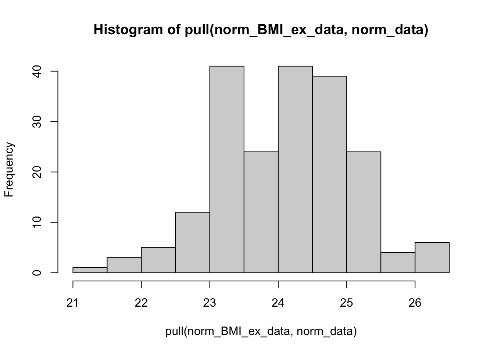
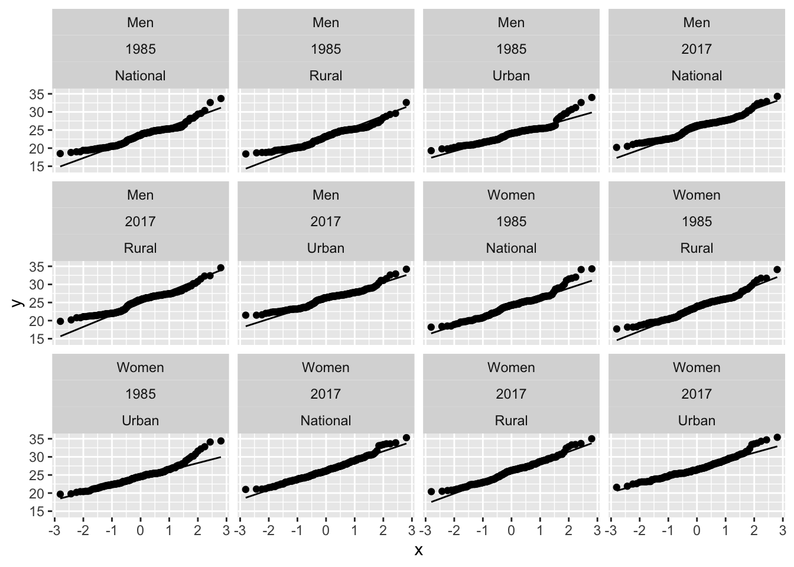
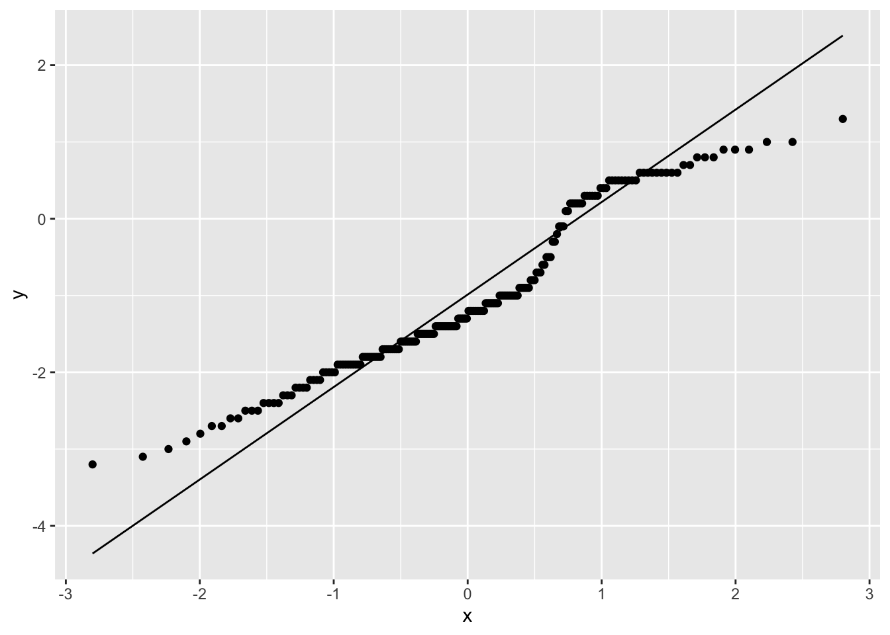
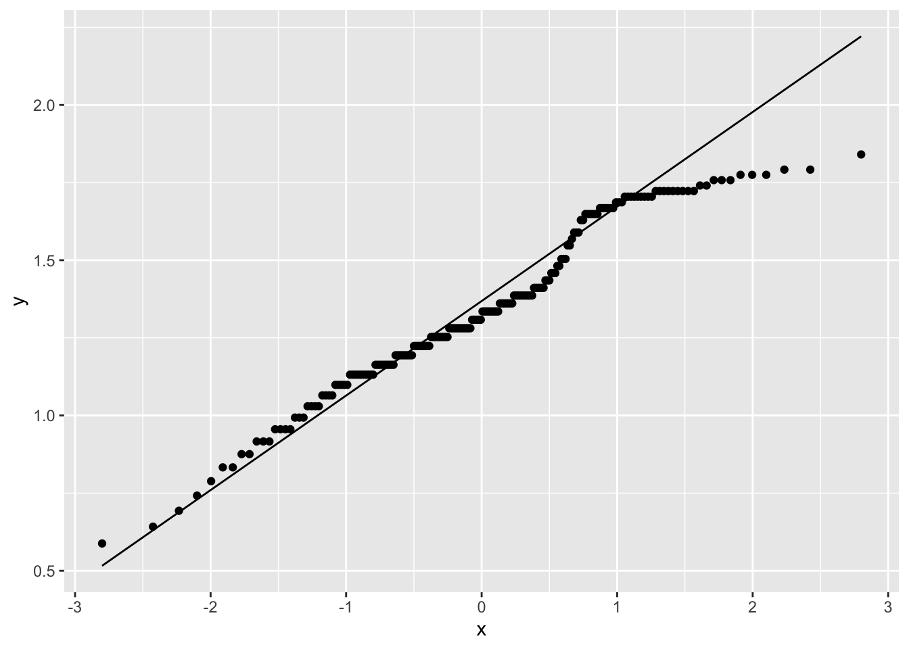
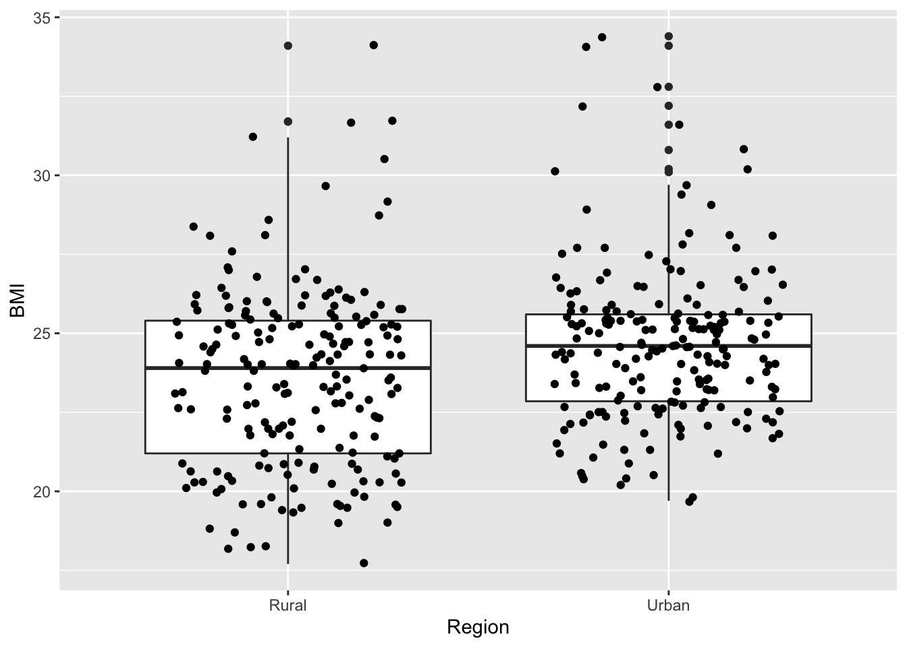
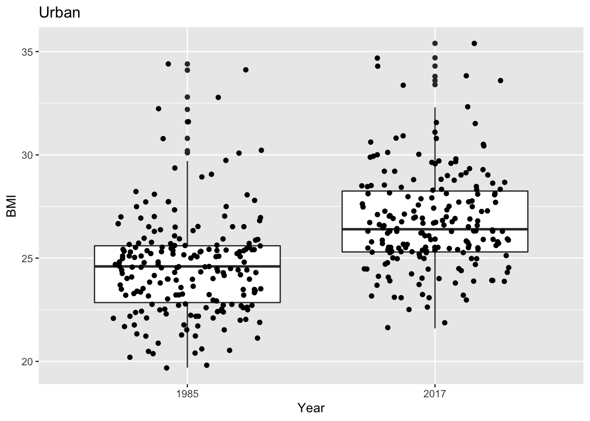
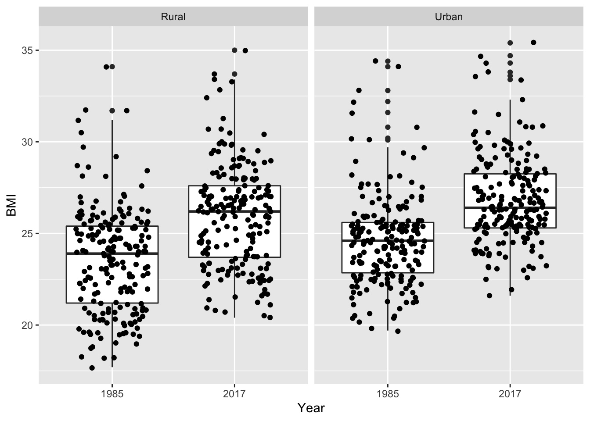
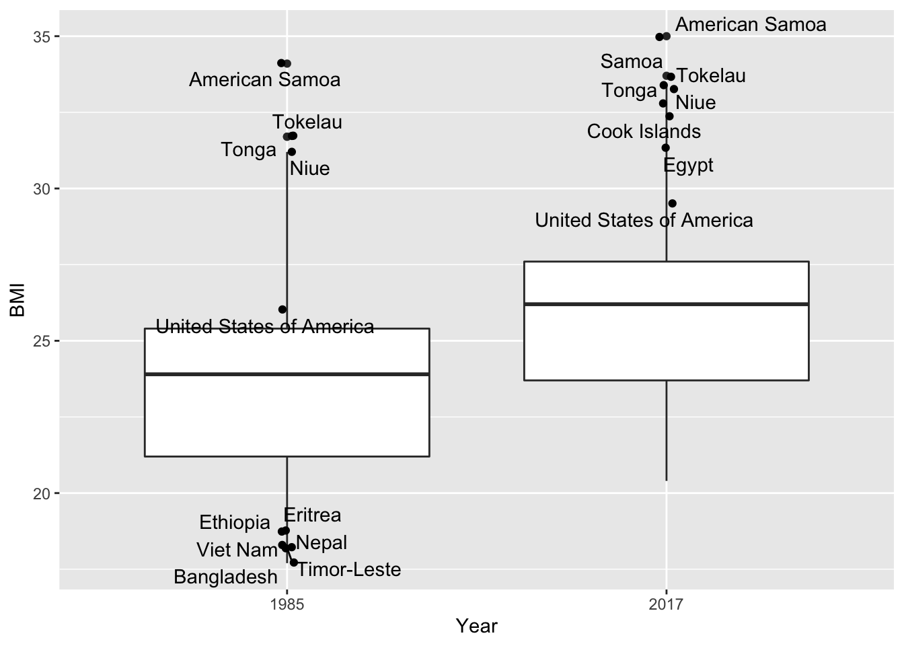
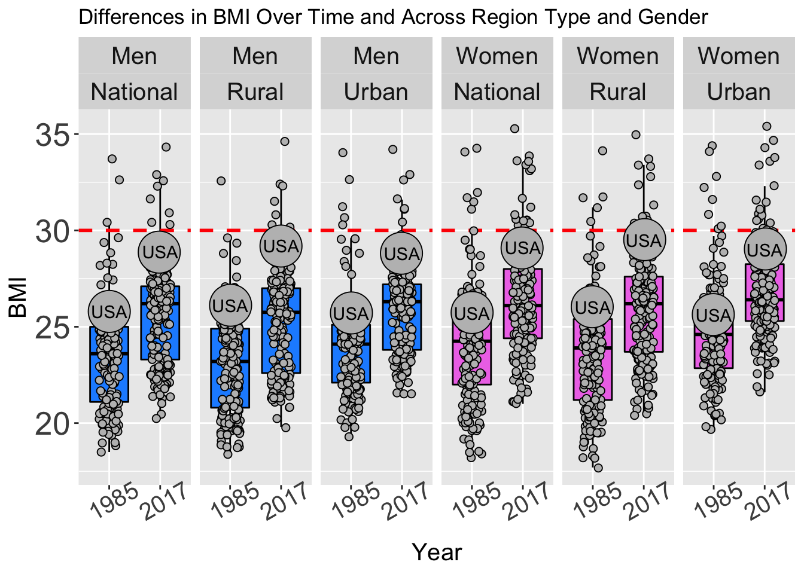
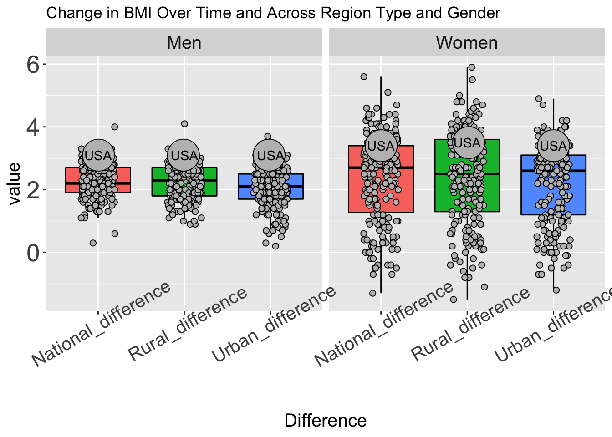

<!DOCTYPE html>

<html>

<head>

<meta charset="utf-8" />
<meta name="generator" content="pandoc" />
<meta http-equiv="X-UA-Compatible" content="IE=EDGE" />


<title> Exploring global patterns of obesity across rural and urban regions</title>

<html>

<head>
<title>Title</title>
</head>

<body>

<!-- Global site tag (gtag.js) - Google Analytics -->
<script async src="https://www.googletagmanager.com/gtag/js?id=G-YW1B3T4HEK"></script>
<script>
  window.dataLayer = window.dataLayer || [];
  function gtag(){dataLayer.push(arguments);}
  gtag('js', new Date());
  
  gtag('config', 'G-YW1B3T4HEK');
</script>

</body>
</html>
<!-- HEAD_CONTENT -->

<style type="text/css">
  code{white-space: pre-wrap;}
  span.smallcaps{font-variant: small-caps;}
  span.underline{text-decoration: underline;}
  div.column{display: inline-block; vertical-align: top; width: 50%;}
  div.hanging-indent{margin-left: 1.5em; text-indent: -1.5em;}
  ul.task-list{list-style: none;}
    </style>


<style type="text/css">
  code {
    white-space: pre;
  }
  .sourceCode {
    overflow: visible;
  }
</style>
<style type="text/css" data-origin="pandoc">
pre > code.sourceCode { white-space: pre; position: relative; }
pre > code.sourceCode > span { display: inline-block; line-height: 1.25; }
pre > code.sourceCode > span:empty { height: 1.2em; }
.sourceCode { overflow: visible; }
code.sourceCode > span { color: inherit; text-decoration: inherit; }
div.sourceCode { margin: 1em 0; }
pre.sourceCode { margin: 0; }
@media screen {
div.sourceCode { overflow: auto; }
}
@media print {
pre > code.sourceCode { white-space: pre-wrap; }
pre > code.sourceCode > span { text-indent: -5em; padding-left: 5em; }
}
pre.numberSource code
  { counter-reset: source-line 0; }
pre.numberSource code > span
  { position: relative; left: -4em; counter-increment: source-line; }
pre.numberSource code > span > a:first-child::before
  { content: counter(source-line);
    position: relative; left: -1em; text-align: right; vertical-align: baseline;
    border: none; display: inline-block;
    -webkit-touch-callout: none; -webkit-user-select: none;
    -khtml-user-select: none; -moz-user-select: none;
    -ms-user-select: none; user-select: none;
    padding: 0 4px; width: 4em;
    color: #aaaaaa;
  }
pre.numberSource { margin-left: 3em; border-left: 1px solid #aaaaaa;  padding-left: 4px; }
div.sourceCode
  {  background-color: #f8f8f8; }
@media screen {
pre > code.sourceCode > span > a:first-child::before { text-decoration: underline; }
}
code span.al { color: #ef2929; } /* Alert */
code span.an { color: #8f5902; font-weight: bold; font-style: italic; } /* Annotation */
code span.at { color: #c4a000; } /* Attribute */
code span.bn { color: #0000cf; } /* BaseN */
code span.cf { color: #204a87; font-weight: bold; } /* ControlFlow */
code span.ch { color: #4e9a06; } /* Char */
code span.cn { color: #000000; } /* Constant */
code span.co { color: #8f5902; font-style: italic; } /* Comment */
code span.cv { color: #8f5902; font-weight: bold; font-style: italic; } /* CommentVar */
code span.do { color: #8f5902; font-weight: bold; font-style: italic; } /* Documentation */
code span.dt { color: #204a87; } /* DataType */
code span.dv { color: #0000cf; } /* DecVal */
code span.er { color: #a40000; font-weight: bold; } /* Error */
code span.ex { } /* Extension */
code span.fl { color: #0000cf; } /* Float */
code span.fu { color: #000000; } /* Function */
code span.im { } /* Import */
code span.in { color: #8f5902; font-weight: bold; font-style: italic; } /* Information */
code span.kw { color: #204a87; font-weight: bold; } /* Keyword */
code span.op { color: #ce5c00; font-weight: bold; } /* Operator */
code span.ot { color: #8f5902; } /* Other */
code span.pp { color: #8f5902; font-style: italic; } /* Preprocessor */
code span.sc { color: #000000; } /* SpecialChar */
code span.ss { color: #4e9a06; } /* SpecialString */
code span.st { color: #4e9a06; } /* String */
code span.va { color: #000000; } /* Variable */
code span.vs { color: #4e9a06; } /* VerbatimString */
code span.wa { color: #8f5902; font-weight: bold; font-style: italic; } /* Warning */

</style>
<script>
// apply pandoc div.sourceCode style to pre.sourceCode instead
(function() {
  var sheets = document.styleSheets;
  for (var i = 0; i < sheets.length; i++) {
    if (sheets[i].ownerNode.dataset["origin"] !== "pandoc") continue;
    try { var rules = sheets[i].cssRules; } catch (e) { continue; }
    for (var j = 0; j < rules.length; j++) {
      var rule = rules[j];
      // check if there is a div.sourceCode rule
      if (rule.type !== rule.STYLE_RULE || rule.selectorText !== "div.sourceCode") continue;
      var style = rule.style.cssText;
      // check if color or background-color is set
      if (rule.style.color === '' && rule.style.backgroundColor === '') continue;
      // replace div.sourceCode by a pre.sourceCode rule
      sheets[i].deleteRule(j);
      sheets[i].insertRule('pre.sourceCode{' + style + '}', j);
    }
  }
})();
</script>


<style type="text/css">
#rmd-source-code {
  display: none;
}
</style>


<link rel="stylesheet" href="www/style.css" type="text/css" />


<style type = "text/css">
.main-container {
  max-width: 940px;
  margin-left: auto;
  margin-right: auto;
}
img {
  max-width:100%;
}
.tabbed-pane {
  padding-top: 12px;
}
.html-widget {
  margin-bottom: 20px;
}
button.code-folding-btn:focus {
  outline: none;
}
summary {
  display: list-item;
}
pre code {
  padding: 0;
}
</style>


<!-- tabsets -->

<style type="text/css">
.tabset-dropdown > .nav-tabs {
  display: inline-table;
  max-height: 500px;
  min-height: 44px;
  overflow-y: auto;
  border: 1px solid #ddd;
  border-radius: 4px;
}

.tabset-dropdown > .nav-tabs > li.active:before {
  content: "";
  font-family: 'Glyphicons Halflings';
  display: inline-block;
  padding: 10px;
  border-right: 1px solid #ddd;
}

.tabset-dropdown > .nav-tabs.nav-tabs-open > li.active:before {
  content: "&#xe258;";
  border: none;
}

.tabset-dropdown > .nav-tabs.nav-tabs-open:before {
  content: "";
  font-family: 'Glyphicons Halflings';
  display: inline-block;
  padding: 10px;
  border-right: 1px solid #ddd;
}

.tabset-dropdown > .nav-tabs > li.active {
  display: block;
}

.tabset-dropdown > .nav-tabs > li > a,
.tabset-dropdown > .nav-tabs > li > a:focus,
.tabset-dropdown > .nav-tabs > li > a:hover {
  border: none;
  display: inline-block;
  border-radius: 4px;
  background-color: transparent;
}

.tabset-dropdown > .nav-tabs.nav-tabs-open > li {
  display: block;
  float: none;
}

.tabset-dropdown > .nav-tabs > li {
  display: none;
}
</style>

<!-- code folding -->
<style type="text/css">
.code-folding-btn { margin-bottom: 4px; }
</style>


<style type="text/css">

#section-TOC {
  margin: 25px 0px 20px 0px;
}
@media (max-width: 768px) {
#section-TOC {
  position: relative;
  width: 100%;
}
}

@media print {
.toc-content {
  /* see https://github.com/w3c/csswg-drafts/issues/4434 */
  float: right;
}
}

.toc-content {
  padding-left: 30px;
  padding-right: 40px;
}

div.main-container {
  max-width: 1200px;
}

div.tocify {
  width: 20%;
  max-width: 260px;
  max-height: 85%;
}

@media (min-width: 768px) and (max-width: 991px) {
  div.tocify {
    width: 25%;
  }
}

@media (max-width: 767px) {
  div.tocify {
    width: 100%;
    max-width: none;
  }
}

.tocify ul, .tocify li {
  line-height: 20px;
}

.tocify-subheader .tocify-item {
  font-size: 0.90em;
}

.tocify .list-group-item {
  border-radius: 0px;
}


</style>


</head>

<body>


<div class="container-fluid main-container">


<!-- setup 3col/9col grid for toc_float and main content  -->
<div class="row">
<div class="col-xs-12 col-sm-4 col-md-3">
<div id="section-TOC" class="tocify">
</div>
</div>

<div class="toc-content col-xs-12 col-sm-8 col-md-9">


<div id="section-header">

<div class="btn-group pull-right float-right">
<button type="button" class="btn btn-default btn-xs btn-secondary btn-sm dropdown-toggle" data-toggle="dropdown" aria-haspopup="true" aria-expanded="false"><span>Code</span> <span class="caret"></span></button>
<ul class="dropdown-menu dropdown-menu-right" style="min-width: 50px;">
<li><a id="rmd-download-source" href="#">Download Rmd</a></li>
</ul>
</div>


<h1 class="title toc-ignore"><p> Exploring global patterns of obesity across rural and urban regions</p></h1>

</div>


<!-- Open all links in new tab-->
<p><base target="_blank"/></p>
<div align="left" id="google_translate_element",></div>
<script type="text/javascript" src='//translate.google.com/translate_a/element.js?cb=googleTranslateElementInit'></script>
<script type="text/javascript">
function googleTranslateElementInit() {
  new google.translate.TranslateElement({pageLanguage: 'en'}, 'google_translate_element');
}
</script>
<div id="section-section" class="section level4 outline">
<h4 class="outline"></h4>
<p></p>
</div>
<div id="section-section-1" class="section level4">
<h4></h4>
</div>
<div id="section-section-2" class="section level4 disclaimer_block">
<h4 class="disclaimer_block"></h4>
<p><strong>Disclaimer</strong>: The purpose of the <a href="https://opencasestudies.github.io" target="_blank">Open Case Studies</a> project is <strong>to demonstrate the use of various data science methods, tools, and software in the context of messy, real-world data</strong>. A given case study does not cover all aspects of the research process, is not claiming to be the most appropriate way to analyze a given dataset, and should not be used in the context of making policy decisions without external consultation from scientific experts.</p>
</div>
<div id="section-section-3" class="section level4">
<h4></h4>
</div>
<div id="section-section-4" class="section level4 license_block">
<h4 class="license_block"></h4>
<p>This work is licensed under the Creative Commons Attribution-NonCommercial 3.0 <a href="https://creativecommons.org/licenses/by-nc/3.0/us/" target="_blank">(CC BY-NC 3.0)</a> United States License.</p>
</div>
<div id="section-section-5" class="section level4">
<h4></h4>
</div>
<div id="section-section-6" class="section level4 reference_block">
<h4 class="reference_block"></h4>
<p>To cite this case study please use:</p>
<p>Wright, Carrie and Jager, Leah and Taub, Margaret and Hicks, Stephanie. (2020). <a href="https://github.com/opencasestudies/ocs-bp-rural-and-urban-obesity" class="uri">https://github.com/opencasestudies/ocs-bp-rural-and-urban-obesity</a>. Exploring global patterns of obesity across rural and urban regions (Version v1.0.0).</p>
</div>
<div id="section-section-7" class="section level4">
<h4></h4>
<p>To access the GitHub Repository for this case study see here: <a href="https://github.com/opencasestudies/ocs-bp-rural-and-urban-obesity" class="uri">https://github.com/opencasestudies/ocs-bp-rural-and-urban-obesity</a>.</p>
<p>This case study is part of a series of public health case studies for the <a href="https://americanhealth.jhu.edu/open-case-studies">Bloomberg American Health Initiative</a>.</p>
<p>Please help us by filling out our survey.</p>
<div style="display: flex; justify-content: center;">
<iframe src="https://docs.google.com/forms/d/e/1FAIpQLSfpN4FN3KELqBNEgf2Atpi7Wy7Nqy2beSkFQINL7Y5sAMV5_w/viewform?embedded=true" width="1200" height="700" frameborder="0" marginheight="0" marginwidth="0">
Loading…
</iframe>
</div>
</div>
<div id="section-motivation" class="section level2">
<h2><strong>Motivation</strong></h2>
<p>Body mass index (<a href="https://www.cdc.gov/healthyweight/assessing/bmi/adult_bmi/index.html" target="_blank">BMI</a>) is often used as a proxy for <strong>adiposity</strong> (the condition of having excess body fat) and is measured as an individual’s weight in kilograms (kg) or pounds (lbs) divided by the individual’s height in meters (<span class="math inline">\(m^2\)</span>) squared.</p>
<p>There are different categories of weight defined using different BMI thresholds as defined by the <a href="http://www.euro.who.int/en/health-topics/disease-prevention/nutrition/a-healthy-lifestyle/body-mass-index-bmi" target="_blank">World Health Organization</a> (WHO), the <a href="https://www.cdc.gov/obesity/adult/defining.html" target="_blank">Centers for Disease Control and Prevention</a>, and the <a href="https://www.nhlbi.nih.gov/sites/default/files/media/docs/obesity-evidence-review.pdf" target="_blank">National Institutes of Health</a>. For example, these are the categories defined by the WHO:</p>
<p></p>
<div id="section-source" class="section level6">
<h6>[<a href="https://www.ncbi.nlm.nih.gov/books/NBK535456/bin/bmi_WHO.jpg" target="_blank">source</a>]</h6>
<p>The following chart can help you identify your estimate of BMI: </p>
</div>
<div id="section-source-1" class="section level6">
<h6>[<a href="http://diet.mayoclinic.org/diet/eat/what-is-your-bmi?xid=nl_MayoClinicDiet_20160426" target="_blank">source</a>]</h6>
<p>Recently, an <a href="https://www.nature.com/articles/s41586-019-1171-x.pdf" target="_blank">article</a> published in <a href="https://www.nature.com" target="_blank"><em>Nature</em></a> evaluated and compared the BMI of populations in rural and urban communities around the world:</p>
<p></p>
</div>
<div id="section-section-8" class="section level4 reference_block">
<h4 class="reference_block"></h4>
<p>NCD Risk Factor Collaboration (NCD-RisC). Rising rural body-mass index is the main driver of the global obesity epidemic in adults. <em>Nature</em> <strong>569</strong>, 260–264 (2019).</p>
</div>
<div id="section-section-9" class="section level4">
<h4></h4>
<p>The article challenged the widely-held view that increased urbanization was one of the major reasons for increased global obesity rates. This view came about because many countries around the world have shown increased urbanization levels in parallel with increased obesity rates. In this article, however, the NCD-RisC argued that this might not be the case and that in fact for most regions around the world, BMI measurements are increasing in rural populations just as much, if not more so, than urban populations. Furthermore, this study suggested that obesity has particularly increased in female populations in rural regions:</p>
<blockquote>
<p>“We noted a persistently higher rural BMI, especially for women.”</p>
</blockquote>
<p>In this case study, we will evaluate the data reported in this article to explore regional and gender specific differences in the obesity rates around the world in 1985 and 2017. Most importantly we will test if there is a difference in obesity rates between rural and urban communities and if there has been a change in obesity over time for these regions, particularly for women. To do this we will test if there is a difference between the average BMI for each group.</p>
</div>
</div>
<div id="section-main-questions" class="section level2">
<h2><strong>Main Questions</strong></h2>
<hr />
<div id="section-section-10" class="section level4 main_question_block">
<h4 class="main_question_block"></h4>
<p><b><u> Our main questions are: </u></b></p>
<ol style="list-style-type: decimal">
<li>Is there a difference between rural and urban BMI estimates around the world? In particular, what does this difference look like for women?</li>
<li>How have BMI estimates changed from 1985 to 2017? In particular, what does this change over time look like for women?</li>
<li>How do different countries vary in terms of estimates of BMI? In particular, how does the United States compare to the rest of the world?</li>
</ol>
</div>
<div id="section-section-11" class="section level4">
<h4></h4>
</div>
</div>
<div id="section-learning-objectives" class="section level2">
<h2><strong>Learning Objectives</strong></h2>
<hr />
<p>The skills, methods, and concepts that students will be familiar with by the end of this case study are:</p>
<p><u><strong>Data science Learning Objectives:</strong></u></p>
<ol style="list-style-type: decimal">
<li>Importing data from a PDF (<code>pdftools</code>)<br />
</li>
<li>Subsetting and filtering data (<code>dplyr</code>)<br />
</li>
<li>Working with character strings (<code>stringr</code>)<br />
</li>
<li>Reshaping data into different formats (<code>tidyr</code>)<br />
</li>
<li>Applying functions to all columns of a tibble (<code>purrr</code>)<br />
</li>
<li>Creating data visualizations (<code>ggplot2</code>) with labels (<code>ggrepel</code>)<br />
</li>
<li>Combining multiple plots (<code>cowplot</code> and <code>patchwork</code>)</li>
</ol>
<p><u><strong>Statistical Learning Objectives:</strong></u></p>
<ol style="list-style-type: decimal">
<li>Familiarity with the use of Quantile-Quantile plots to assess normality<br />
</li>
<li>Define and understand the utility of alpha and the p value<br />
</li>
<li>Describe the difference between nonparametric and parametric tests<br />
</li>
<li>Be able to identify paired data<br />
</li>
<li>Implementation of a <a href="https://www.ncbi.nlm.nih.gov/pmc/articles/PMC5579465/" target="_blank">paired <span class="math inline">\(t\)</span>-test</a><br />
</li>
<li>Interpretation of a <a href="https://www.ncbi.nlm.nih.gov/pmc/articles/PMC5579465/" target="_blank">paired <span class="math inline">\(t\)</span>-test</a><br />
</li>
<li>Implementation of a <a href="http://www.biostathandbook.com/wilcoxonsignedrank.html" target="_blank">Wilcoxon signed-rank test</a> 8.Interpretation of a <a href="http://www.biostathandbook.com/wilcoxonsignedrank.html" target="_blank">Wilcoxon signed-rank test</a></li>
<li>Understanding of the need for multiple testing correction</li>
</ol>
<p>In this case study, we will walk you through importing data from a pdf, cleaning, wrangling and visualizing the data, and <b> comparing two groups </b>.</p>
<p>We will use well-established and commonly used packages, including <code>stringr</code>, <code>tidyr</code>, <code>dplyr</code>, <code>purrr</code>, and <code>ggplot2</code> from the <a href="https://www.tidyverse.org/" target="_blank"><code>tidyverse</code></a>. Specifically, the tidyverse is</p>
<blockquote>
<p>“an opinionated collection of R packages designed for data science. All packages share an underlying philosophy and common APIs”.</p>
</blockquote>
<p>Another way of putting it is that it’s a set of packages that are useful specifically for data manipulation, exploration, and visualization with a common philosophy. While some students may be familiar with previous packages from the R programming language, these packages make data science in R especially efficient.</p>
<p></p>
<p>We will begin by loading the packages that we will need with a brief explanation:</p>
<div class="sourceCode" id="section-cb1"><pre class="sourceCode r"><code class="sourceCode r"><span id="section-cb1-1"><a href="#section-cb1-1" aria-hidden="true" tabindex="-1"></a><span class="fu">library</span>(here)</span>
<span id="section-cb1-2"><a href="#section-cb1-2" aria-hidden="true" tabindex="-1"></a><span class="fu">library</span>(pdftools)</span>
<span id="section-cb1-3"><a href="#section-cb1-3" aria-hidden="true" tabindex="-1"></a><span class="fu">library</span>(stringr)</span>
<span id="section-cb1-4"><a href="#section-cb1-4" aria-hidden="true" tabindex="-1"></a><span class="fu">library</span>(readr)</span>
<span id="section-cb1-5"><a href="#section-cb1-5" aria-hidden="true" tabindex="-1"></a><span class="fu">library</span>(dplyr)</span>
<span id="section-cb1-6"><a href="#section-cb1-6" aria-hidden="true" tabindex="-1"></a><span class="fu">library</span>(tibble)</span>
<span id="section-cb1-7"><a href="#section-cb1-7" aria-hidden="true" tabindex="-1"></a><span class="fu">library</span>(magrittr)</span>
<span id="section-cb1-8"><a href="#section-cb1-8" aria-hidden="true" tabindex="-1"></a><span class="fu">library</span>(glue)</span>
<span id="section-cb1-9"><a href="#section-cb1-9" aria-hidden="true" tabindex="-1"></a><span class="fu">library</span>(purrr)</span>
<span id="section-cb1-10"><a href="#section-cb1-10" aria-hidden="true" tabindex="-1"></a><span class="fu">library</span>(tidyr)</span>
<span id="section-cb1-11"><a href="#section-cb1-11" aria-hidden="true" tabindex="-1"></a><span class="fu">library</span>(ggplot2)</span>
<span id="section-cb1-12"><a href="#section-cb1-12" aria-hidden="true" tabindex="-1"></a><span class="fu">library</span>(ggrepel)</span>
<span id="section-cb1-13"><a href="#section-cb1-13" aria-hidden="true" tabindex="-1"></a><span class="fu">library</span>(cowplot)</span>
<span id="section-cb1-14"><a href="#section-cb1-14" aria-hidden="true" tabindex="-1"></a><span class="fu">library</span>(patchwork)</span></code></pre></div>
<p><u><strong>Packages used in this case study:</strong> </u></p>
<table>
<colgroup>
<col width="43%" />
<col width="56%" />
</colgroup>
<thead>
<tr class="header">
<th>Package</th>
<th>Use in this case study</th>
</tr>
</thead>
<tbody>
<tr class="odd">
<td><a href="https://github.com/jennybc/here_here" target="_blank">here</a></td>
<td>to easily load and save data with relative paths</td>
</tr>
<tr class="even">
<td><a href="https://cran.r-project.org/web/packages/pdftools/pdftools.pdf" target="_blank">pdftools</a></td>
<td>to read a text from pdf into R</td>
</tr>
<tr class="odd">
<td><a href="https://stringr.tidyverse.org/articles/stringr.html" target="_blank">stringr</a></td>
<td>to manipulate the text data</td>
</tr>
<tr class="even">
<td><a href="https://readr.tidyverse.org/" target="_blank">readr</a></td>
<td>to manipulate the text data within the pdf into individual lines</td>
</tr>
<tr class="odd">
<td><a href="https://dplyr.tidyverse.org/" target="_blank">dplyr</a></td>
<td>to arrange/filter/select subsets of the data</td>
</tr>
<tr class="even">
<td><a href="https://tibble.tidyverse.org/" target="_blank">tibble</a></td>
<td>to create data objects that we can manipulate with <code>dplyr</code>/<code>stringr</code>/<code>tidyr</code>/<code>purrr</code></td>
</tr>
<tr class="odd">
<td><a href="https://magrittr.tidyverse.org/articles/magrittr.html" target="_blank">magrittr</a></td>
<td>to use the <code>%&lt;&gt;%</code> piping operator</td>
</tr>
<tr class="even">
<td><a href="https://www.tidyverse.org/blog/2017/10/glue-1.2.0/" target="_blank">glue</a></td>
<td>to paste or combine character strings and data together</td>
</tr>
<tr class="odd">
<td><a href="https://purrr.tidyverse.org/" target="_blank">purrr</a></td>
<td>to perform functions on all columns of a tibble</td>
</tr>
<tr class="even">
<td><a href="https://tidyr.tidyverse.org/" target="_blank">tidyr</a></td>
<td>to convert data from ‘wide’ to ‘long’ format</td>
</tr>
<tr class="odd">
<td><a href="https://ggplot2.tidyverse.org/">ggplot2</a></td>
<td>to make visualizations with multiple layers</td>
</tr>
<tr class="even">
<td><a href="https://cran.r-project.org/web/packages/ggrepel/vignettes/ggrepel.html" target="_blank">ggrepel</a></td>
<td>to allow labels in figures not to overlap</td>
</tr>
<tr class="odd">
<td><a href="https://cran.r-project.org/web/packages/cowplot/vignettes/introduction.html" target="_blank">cowplot</a> and <a href="https://github.com/thomasp85/patchwork" target="_blank">patchwork</a></td>
<td>to allow plots to be combined</td>
</tr>
</tbody>
</table>
<hr />
<p>The first time we use a function, we will use the <code>::</code> to indicate which package we are using (e.g. <code>stringr::str_detect()</code>). Unless we have overlapping function names, this is not necessary, but we will include it here to be informative about where the functions we will use come from.</p>
</div>
<div id="section-context" class="section level2">
<h2><strong>Context</strong></h2>
<hr />
<p>Previous work has shown higher BMI (&gt;30) is associated with <a href="https://www.nhlbi.nih.gov/sites/default/files/media/docs/obesity-evidence-review.pdf" target="_blank">higher rates of all-causes of mortality</a>, as well as increased rates of type 2 diabetes, cancer, heart disease, and stroke.</p>
<p>However, there appears to be caveats associated with the use of a threshold like this to evaluate public health risk in various populations.</p>
<p>According to this <a href="https://www.who.int/nutrition/publications/bmi_asia_strategies.pdf" target="_blank">report</a>:</p>
<blockquote>
<p>…the associations between BMI, percentage of body fat, and body fat distribution differ across populations.</p>
</blockquote>
<blockquote>
<p>In particular, in some Asian populations a specific BMI reflects a higher percentage of body fat.</p>
</blockquote>
<blockquote>
<p>Some Pacific populations also have a lower percentage of body fat at a given BMI.</p>
</blockquote>
<blockquote>
<p>The associations of BMI and comorbidities are probably not stable within populations over time.</p>
</blockquote>
<div id="section-source-2" class="section level5">
<h5><a href="https://www.who.int/nutrition/publications/bmi_asia_strategies.pdf">[source]</a></h5>
</div>
</div>
<div id="section-limitations" class="section level2">
<h2><strong>Limitations</strong></h2>
<hr />
<p>The measurement of BMI has some <a href="https://www.ncbi.nlm.nih.gov/pmc/articles/PMC4890841/pdf/nt-50-117.pdf" target="_blank">limitations</a> that are well recognized, as it does not account for the composition of body mass, the location of body fat, or the contribution of body frame size. However, <a href="https://journals.lww.com/acsm-healthfitness/Fulltext/2016/07000/THE_BENEFITS_OF_BODY_MASS_INDEX_AND_WAIST.8.aspx#pdf-link" target="_blank">BMI has been a useful health indicator</a> for risk for many diseases and conditions particularly when combined with other risk factor information.</p>
<p>While <a href="https://www.genderspectrum.org/quick-links/understanding-gender/" target="_blank">gender</a> and <a href="https://www.who.int/genomics/gender/en/index1.html" target="_blank">sex</a> are not actually binary, the data presented that is used in this analysis only contain data for groups of individuals described as men or women.</p>
</div>
<div id="section-what-are-the-data" class="section level2">
<h2><strong>What are the data?</strong></h2>
<hr />
<p>We will be using data located within a table of the <a href="https://static-content.springer.com/esm/art%3A10.1038%2Fs41586-019-1171-x/MediaObjects/41586_2019_1171_MOESM1_ESM.pdf" target="_blank">supplementary material</a> for the NCD-RisC paper referenced above.</p>
<p>This is a pdf that can be found freely available online. Here is a screenshot of the first few rows of this table:</p>
<p></p>
<p>You can see that the data contain average BMI estimates for both men and women in countries at the national level, as well as the average BMI estimates for the rural and urban areas of these countries in both 1985 and 2017.</p>
<p>The data within the parentheses are the 95% <a href="https://en.wikipedia.org/wiki/Credible_interval" target="_blank">credible intervals</a> (CIs) for the average BMI estimates. The authors provide these CIs as a guide to understand how likely the estimate is for the true population mean BMI. A wider range suggests that the estimate is less accurate, as there are more possible values for the true mean with credible evidence. Notice that the mean BMI values are “age-standardised,” which means that the mean values were adjusted for the different age distributions of the various countries so that the countries can be more fairly compared. For example, if one country has a population that is considerably younger, the mean BMI might be quite low (as younger individuals tend to have lower BMI values due to faster metabolic rates). One might falsely conclude that people in that country generally have lower BMI values than people in most other countries, however the lower overall BMI mean might simply be due to the fact that the country has a younger population than those other countries.</p>
</div>
<div id="section-data-import" class="section level2">
<h2><strong>Data Import</strong></h2>
<hr />
<p>First let’s download the data from the PDF file. We use <code>file.exists()</code> from base R to check if the file we want to download already exists. If not, then we download it using the function <code>utils::download.file()</code>. We also use the <code>here()</code> function of the <code>here</code> package to look specifically in the <code>raw</code> subdirectory of the <code>data</code> directory of the directory where our open RStudio project file is located. This helps us, as we do not need to write the full path to the document. This makes our code more reproducible for someone else, who may have a different overall file structure on their computer but downloads our case study files from GitHub and therefore has the same file structure specifically for the files included in our GitHub repository. Thus our commands about file locations still work on their local machine.</p>
<div class="sourceCode" id="section-cb2"><pre class="sourceCode r"><code class="sourceCode r"><span id="section-cb2-1"><a href="#section-cb2-1" aria-hidden="true" tabindex="-1"></a><span class="cf">if</span>(<span class="sc">!</span><span class="fu">file.exists</span>(<span class="fu">here</span>(<span class="st">&quot;data&quot;</span>, <span class="st">&quot;raw&quot;</span>, <span class="st">&quot;paper_supplement.pdf&quot;</span>))){</span>
<span id="section-cb2-2"><a href="#section-cb2-2" aria-hidden="true" tabindex="-1"></a>  url <span class="ot">&lt;-</span> <span class="st">&quot;https://static-content.springer.com/esm/art%3A10.1038%2Fs41586-019-1171-x/MediaObjects/41586_2019_1171_MOESM1_ESM.pdf&quot;</span></span>
<span id="section-cb2-3"><a href="#section-cb2-3" aria-hidden="true" tabindex="-1"></a>  utils<span class="sc">::</span><span class="fu">download.file</span>(url, <span class="fu">here</span>(<span class="st">&quot;data&quot;</span>, <span class="st">&quot;raw&quot;</span>, <span class="st">&quot;paper_supplement.pdf&quot;</span>))</span>
<span id="section-cb2-4"><a href="#section-cb2-4" aria-hidden="true" tabindex="-1"></a>}</span></code></pre></div>
<p>We will save our data to a directory within our working directory called data. We will create subdirectories within this directory to organize our data. We can use the <code>here</code> function from the <code>here</code> package to make this process easier. The <code>here()</code> function allows us to specify the path or location of the document that we want to import, starting from the directory where an <code>.Rproj</code> file is located after creating a project in RStudio. In this case, we will import our files within subdirectories of a directory called <code>raw</code> of the <code>data</code> directory. (<em>Note the next chunk of code will only work for you if you pull the repository from GitHub and set up your file structure in the same way.</em>) If you had trouble downloading the data from the orginal sources you can download them from our <a href="https://github.com/opencasestudies/ocs-bp-rural-and-urban-obesity/tree/master/data">GitHub repository for this case study</a>.</p>
<hr />
<details>
<summary>
Click here to see more about creating new projects in RStudio.
</summary>
<p>You can create a project by going to the File menu of RStudio like so:</p>
<p></p>
<p>You can also do so by clicking the project button:</p>
<p></p>
<p>See <a href="https://support.rstudio.com/hc/en-us/articles/200526207-Using-Projects">here</a> to learn more about using RStudio projects and <a href="https://github.com/jennybc/here_here">here</a> to learn more about the <code>here</code> package.</p>
</details>
<hr />
</details>
<hr />
<p>Now that we have downloaded the PDF file, we will read it in to R using the <code>pdftools</code> package:</p>
<div class="sourceCode" id="section-cb3"><pre class="sourceCode r"><code class="sourceCode r"><span id="section-cb3-1"><a href="#section-cb3-1" aria-hidden="true" tabindex="-1"></a>pdf_obesity <span class="ot">&lt;-</span> pdftools<span class="sc">::</span><span class="fu">pdf_text</span>(<span class="fu">here</span>(<span class="st">&quot;data&quot;</span>, <span class="st">&quot;raw&quot;</span>, <span class="st">&quot;paper_supplement.pdf&quot;</span>))</span></code></pre></div>
<p>Let’s take a look at the data – the <code>summary()</code> function from base R helps us to look at the structure of R objects.</p>
<div class="sourceCode" id="section-cb4"><pre class="sourceCode r"><code class="sourceCode r"><span id="section-cb4-1"><a href="#section-cb4-1" aria-hidden="true" tabindex="-1"></a><span class="fu">summary</span>(pdf_obesity)</span></code></pre></div>
<pre><code>   Length     Class      Mode 
       63 character character </code></pre>
<p>We can see that we have 63 elements that are character strings. You may also notice that the original PDF has 63 pages. Let’s take a look at some of these elements and compare them to the pages in the original document.</p>
<div class="sourceCode" id="section-cb6"><pre class="sourceCode r"><code class="sourceCode r"><span id="section-cb6-1"><a href="#section-cb6-1" aria-hidden="true" tabindex="-1"></a>pdf_obesity[<span class="dv">1</span>] <span class="co"># this looks like the first page</span></span></code></pre></div>
<pre><code>[1] &quot;Letter                                                                                  https://doi.org/10.1038/s41586-019-1171-x\n\n\n\n\nRising rural body-mass index is the main driver of\nthe global obesity epidemic in adults\nNCD Risk Factor Collaboration (NCD-RisC)*\n\n\n*A list of authors and their affiliations appears in the online version of the paper.\n\n\n\n\n2 6 0 | N A T U RE | V O L 5 6 9 | 9 M A Y 2 0 1 9\n&quot;</code></pre>
<div class="sourceCode" id="section-cb8"><pre class="sourceCode r"><code class="sourceCode r"><span id="section-cb8-1"><a href="#section-cb8-1" aria-hidden="true" tabindex="-1"></a>pdf_obesity[<span class="dv">2</span>] <span class="co"># this looks like the second page</span></span></code></pre></div>
<pre><code>[1] &quot;Supplementary Information. Statistical model for estimating BMI trends by rural and urban\nplace of residence.\n\n\n\n\n                                            1\n&quot;</code></pre>
<div class="sourceCode" id="section-cb10"><pre class="sourceCode r"><code class="sourceCode r"><span id="section-cb10-1"><a href="#section-cb10-1" aria-hidden="true" tabindex="-1"></a><span class="fu">str</span>(pdf_obesity[<span class="dv">52</span>], <span class="at">nchar.max =</span> <span class="dv">1600</span>)</span></code></pre></div>
<pre><code> chr &quot;                                                                               2                                                             2\n                                      Age-standardised mean BMI in 1985 (kg/m )                     Age-standardised mean BMI in 2017 (kg/m )\n              Country      Sex\n                                 National               Rural                Urban             National               Rural                Urban\n                        Men      20.2 (17.8-22.7)      19.7 (17.2-22.2)     22.4 (20.0-25.0)   22.8 (20.3-25.3)      22.5 (20.0-25.0)     23.6 (21.0-26.1)\nAfghanistan             Women    20.6 (18.4-22.8)      20.1 (17.8-22.4)     23.2 (20.9-25.4)   24.4 (23.3-25.4)      23.6 (22.5-24.8)     26.3 (25.1-27.4)\n                        Men      25.2 (23.9-26.5)      25.0 (23.7-26.4)     25.4 (24.0-26.7)   27.0 (26.0-27.9)      26.9 (25.9-27.9)     27.0 (26.0-28.0)\nAlbania                 Women    26.0 (24.1-27.9)      26.1 (24.1-28.1)     25.9 (23.9-27.8)   26.0 (24.8-27.2)      26.2 (24.8-27.5)     25.9 (24.6-27.2)\n                        Men      22.1 (20.8-23.3)      21.8 (20.5-23.1)     22.3 (21.0-23.6)   25.1 (24.5-25.7)      24.8 (24.1-25.4)     25.2 (24.6-25.9)\nAlgeria                 Women    24.0 (22.2-25.7)      23.3 (21.4-25.1)     24.8 (22.9-26.6)   27.4 (26.7-28.0)      27.0 (26.3-27.8)     27.5 (26.7-28.2)\n                        Men      33.7 (32.7-34.7)      32.6 (31.7-33.5)     34.0 (32.9-35.1)   34.3 (33.0-35.6)      34.6 (33.1-35.9)     34.2 (32.9-35.6)\nAmerican Samoa          Wo&quot;| __truncated__</code></pre>
<p>Yes, this looks like data in the table we want. We are using the <code>str()</code> function to print just a portion of the data. The <code>str()</code> function compactly displays the structure of arbitrary R objects. The <code>nchar.max</code> argument lets us define the maximal number of characters to show. Note <code>print(pdf_obesity[52])</code> would show the entire contents of this page of the table.</p>
<p>Here is the PDF version again: </p>
<p>We can see that the output looks pretty similar to the pages of the pdf, but the spacing is a bit awkward. Note that the way the data is displayed is partially influenced by the width setting of the RStudio window.</p>
<p>Now, we are interested in a supplementary Table 3, which has multiple pages and includes the same header on each page. We can use that to determine what elements of our <code>pdf_obesity</code> character strings include our table. We will use the <code>str_detect()</code> function from the <code>stringr</code> package to search for the elements that contain text that is consistently in the header. The output of of this function will show which elements of the object (in this case pages of the pdf) include this pattern indicated as a <code>TRUE</code> or <code>FALSE</code>.</p>
<div class="sourceCode" id="section-cb12"><pre class="sourceCode r"><code class="sourceCode r"><span id="section-cb12-1"><a href="#section-cb12-1" aria-hidden="true" tabindex="-1"></a>stringr<span class="sc">::</span><span class="fu">str_detect</span>(<span class="at">pattern =</span> <span class="st">&quot;Age-standardised mean BMI&quot;</span>, </span>
<span id="section-cb12-2"><a href="#section-cb12-2" aria-hidden="true" tabindex="-1"></a>                    <span class="at">string =</span> pdf_obesity)</span></code></pre></div>
<pre><code> [1] FALSE FALSE FALSE FALSE FALSE FALSE FALSE FALSE FALSE FALSE FALSE FALSE
[13] FALSE FALSE FALSE FALSE FALSE FALSE FALSE FALSE FALSE FALSE FALSE FALSE
[25] FALSE FALSE FALSE FALSE FALSE FALSE FALSE FALSE FALSE FALSE FALSE FALSE
[37] FALSE FALSE FALSE FALSE FALSE FALSE FALSE FALSE FALSE FALSE FALSE FALSE
[49] FALSE FALSE FALSE  TRUE  TRUE  TRUE  TRUE  TRUE  TRUE  TRUE  TRUE  TRUE
[61]  TRUE FALSE FALSE</code></pre>
<p>We note, the “Age-standardised mean BMI” is part of the header in the table on every page. The code above shows the pages that contain our table of interest (as <code>TRUE</code> values).</p>
<p>Now we will extract just the data for the table now and call it <code>rural_urban</code>. To do this we will use the <code>str_subset()</code> function of the <code>stringr</code> package.</p>
<div class="sourceCode" id="section-cb14"><pre class="sourceCode r"><code class="sourceCode r"><span id="section-cb14-1"><a href="#section-cb14-1" aria-hidden="true" tabindex="-1"></a>rural_urban <span class="ot">&lt;-</span> stringr<span class="sc">::</span><span class="fu">str_subset</span>(<span class="at">pattern =</span> <span class="st">&quot;Age-standardised mean BMI&quot;</span>, </span>
<span id="section-cb14-2"><a href="#section-cb14-2" aria-hidden="true" tabindex="-1"></a>                                   <span class="at">string =</span> pdf_obesity)</span>
<span id="section-cb14-3"><a href="#section-cb14-3" aria-hidden="true" tabindex="-1"></a></span>
<span id="section-cb14-4"><a href="#section-cb14-4" aria-hidden="true" tabindex="-1"></a><span class="fu">summary</span>(rural_urban) </span></code></pre></div>
<pre><code>   Length     Class      Mode 
       10 character character </code></pre>
<p>Here, we see there are 10 pages worth of elements in our <code>rural_urban</code> object.</p>
<p>Let’s check the first and last page:</p>
<div class="sourceCode" id="section-cb16"><pre class="sourceCode r"><code class="sourceCode r"><span id="section-cb16-1"><a href="#section-cb16-1" aria-hidden="true" tabindex="-1"></a><span class="fu">str</span>(rural_urban[<span class="dv">1</span>], <span class="at">nchar.max =</span> <span class="dv">1600</span>)</span></code></pre></div>
<pre><code> chr &quot;                                                                               2                                                             2\n                                      Age-standardised mean BMI in 1985 (kg/m )                     Age-standardised mean BMI in 2017 (kg/m )\n              Country      Sex\n                                 National               Rural                Urban             National               Rural                Urban\n                        Men      20.2 (17.8-22.7)      19.7 (17.2-22.2)     22.4 (20.0-25.0)   22.8 (20.3-25.3)      22.5 (20.0-25.0)     23.6 (21.0-26.1)\nAfghanistan             Women    20.6 (18.4-22.8)      20.1 (17.8-22.4)     23.2 (20.9-25.4)   24.4 (23.3-25.4)      23.6 (22.5-24.8)     26.3 (25.1-27.4)\n                        Men      25.2 (23.9-26.5)      25.0 (23.7-26.4)     25.4 (24.0-26.7)   27.0 (26.0-27.9)      26.9 (25.9-27.9)     27.0 (26.0-28.0)\nAlbania                 Women    26.0 (24.1-27.9)      26.1 (24.1-28.1)     25.9 (23.9-27.8)   26.0 (24.8-27.2)      26.2 (24.8-27.5)     25.9 (24.6-27.2)\n                        Men      22.1 (20.8-23.3)      21.8 (20.5-23.1)     22.3 (21.0-23.6)   25.1 (24.5-25.7)      24.8 (24.1-25.4)     25.2 (24.6-25.9)\nAlgeria                 Women    24.0 (22.2-25.7)      23.3 (21.4-25.1)     24.8 (22.9-26.6)   27.4 (26.7-28.0)      27.0 (26.3-27.8)     27.5 (26.7-28.2)\n                        Men      33.7 (32.7-34.7)      32.6 (31.7-33.5)     34.0 (32.9-35.1)   34.3 (33.0-35.6)      34.6 (33.1-35.9)     34.2 (32.9-35.6)\nAmerican Samoa          Wo&quot;| __truncated__</code></pre>
<p>Using <code>[1]</code> shows just the first page of the 10 pages that contain the table. Also, notice the new line <code>"\n"</code> values that indicate new lines.</p>
<p></p>
<p>This looks the same as the beginning… how about the end?</p>
<div class="sourceCode" id="section-cb18"><pre class="sourceCode r"><code class="sourceCode r"><span id="section-cb18-1"><a href="#section-cb18-1" aria-hidden="true" tabindex="-1"></a><span class="fu">str</span>(rural_urban[<span class="dv">10</span>], <span class="at">nchar.max =</span> <span class="dv">1800</span>)</span></code></pre></div>
<pre><code> chr &quot;                                                                                                             2                                                                  2\n                                                                Age-standardised mean BMI in 1985 (kg/m )                              Age-standardised mean BMI in 2017 (kg/m )\n              Country                      Sex\n                                                           National               Rural                Urban                      National               Rural                Urban\n                                      Men                  20.0 (18.6-21.4)      19.6 (18.1-21.1)     20.7 (19.2-22.0)            22.2 (21.6-22.9)      21.7 (21.0-22.4)     23.0 (22.3-23.7)\nZambia                                Women                21.4 (20.3-22.6)      20.7 (19.5-21.9)     22.5 (21.3-23.7)            23.9 (23.3-24.5)      22.7 (22.1-23.3)     25.5 (24.9-26.2)\n                                      Men                  21.2 (20.2-22.3)      20.9 (19.8-22.1)     22.1 (21.1-23.1)            22.3 (21.7-22.9)      21.9 (21.2-22.5)     23.3 (22.6-23.9)\nZimbabwe                              Women                24.6 (23.5-25.9)      24.0 (22.8-25.4)     26.5 (25.3-27.8)            25.3 (24.6-26.1)      24.5 (23.7-25.3)     27.1 (26.2-27.9)\n*The entire population live in areas classified as urban (Bermuda, Hong Kong (from 1992 onwards), Nauru and Singapore) or rural (Tokelau).\nNumbers in parentheses show 95% credible intervals.\n\n\n\n\n                                                                                                60\n&quot;</code></pre>
<p></p>
<p>Great! Our <code>rural_urban</code> object looks like it contains the entire Supplementary 3 table, as both the beginning and the end include the data we expected.</p>
<p>Now we will save this imported data for later use like so in a subdirectory of the <code>data</code> directory called <code>imported</code>:</p>
<div class="sourceCode" id="section-cb20"><pre class="sourceCode r"><code class="sourceCode r"><span id="section-cb20-1"><a href="#section-cb20-1" aria-hidden="true" tabindex="-1"></a><span class="fu">save</span>(rural_urban, <span class="at">file =</span> here<span class="sc">::</span><span class="fu">here</span>(<span class="st">&quot;data&quot;</span>, <span class="st">&quot;imported&quot;</span>, <span class="st">&quot;imported_data.rda&quot;</span>))</span></code></pre></div>
</div>
<div id="section-data-wrangling" class="section level2">
<h2><strong>Data Wrangling</strong></h2>
<hr />
<hr />
<details>
<summary>
If you skipped the data import section click here.
</summary>
<p>An RDA file (stands for R data) of the data can be found <a href="https://github.com//opencasestudies/ocs-bp-rural-and-urban-obesity/master/data/imported">here</a> or slightly more directly <a href="https://raw.githubusercontent.com/opencasestudies/ocs-bp-rural-and-urban-obesity/master/data/imported/impoted_data.rda">here</a>. Download this file and then place it in your current working directory within a subdirectory called <code>imported</code> within a subdirectory called <code>data</code> to copy and paste our code. We used an RStudio project and the <a href="https://github.com/jennybc/here_here"><code>here</code> package</a> to navigate to the file more easily.</p>
<div class="sourceCode" id="section-cb21"><pre class="sourceCode r"><code class="sourceCode r"><span id="section-cb21-1"><a href="#section-cb21-1" aria-hidden="true" tabindex="-1"></a><span class="fu">load</span>(here<span class="sc">::</span><span class="fu">here</span>(<span class="st">&quot;data&quot;</span>, <span class="st">&quot;imported&quot;</span>, <span class="st">&quot;imported_data.rda&quot;</span>))</span></code></pre></div>
<hr />
<details>
<summary>
Click here to see more about creating new projects in RStudio.
</summary>
<p>You can create a project by going to the File menu of RStudio like so:</p>
<p></p>
<p>You can also do so by clicking the project button:</p>
<p></p>
<p>See <a href="https://support.rstudio.com/hc/en-us/articles/200526207-Using-Projects">here</a> to learn more about using RStudio projects and <a href="https://github.com/jennybc/here_here">here</a> to learn more about the <code>here</code> package.</p>
</details>
<hr />
</details>
<hr />
<p>At this point we have large strings now for each page of the table, but this is not very convenient to work with. Now, we will wrangle the data into a more usable form. Ideally, we would like our data to be in some sort of tabular form.</p>
<div id="section-separate-the-data-into-lines" class="section level3">
<h3><strong>Separate the data into lines</strong></h3>
<hr />
<p>First, it would be useful to separate the data that is currently in 10 giant string chunks into individual lines or rows of the table. To do this we can use the <code>read_lines()</code> function of the <code>readr</code> package which will separate the lines based on the <code>"\n"</code> new line characters.</p>
<div class="sourceCode" id="section-cb22"><pre class="sourceCode r"><code class="sourceCode r"><span id="section-cb22-1"><a href="#section-cb22-1" aria-hidden="true" tabindex="-1"></a><span class="fu">summary</span>(rural_urban)</span></code></pre></div>
<pre><code>   Length     Class      Mode 
       10 character character </code></pre>
<div class="sourceCode" id="section-cb24"><pre class="sourceCode r"><code class="sourceCode r"><span id="section-cb24-1"><a href="#section-cb24-1" aria-hidden="true" tabindex="-1"></a>rural_urban <span class="ot">&lt;-</span> readr<span class="sc">::</span><span class="fu">read_lines</span>(rural_urban)</span>
<span id="section-cb24-2"><a href="#section-cb24-2" aria-hidden="true" tabindex="-1"></a><span class="fu">summary</span>(rural_urban) </span></code></pre></div>
<pre><code>   Length     Class      Mode 
      474 character character </code></pre>
<div class="sourceCode" id="section-cb26"><pre class="sourceCode r"><code class="sourceCode r"><span id="section-cb26-1"><a href="#section-cb26-1" aria-hidden="true" tabindex="-1"></a><span class="co"># now we have 461 lines</span></span></code></pre></div>
<p>We can see that each string in the <code>rural_urban</code> object is now a single line from the table.</p>
<p>For example, line 6 shows the data for women in Afghanistan.</p>
<div class="sourceCode" id="section-cb27"><pre class="sourceCode r"><code class="sourceCode r"><span id="section-cb27-1"><a href="#section-cb27-1" aria-hidden="true" tabindex="-1"></a>rural_urban[<span class="dv">6</span>] </span></code></pre></div>
<pre><code>[1] &quot;Afghanistan             Women    20.6 (18.4-22.8)      20.1 (17.8-22.4)     23.2 (20.9-25.4)   24.4 (23.3-25.4)      23.6 (22.5-24.8)     26.3 (25.1-27.4)&quot;</code></pre>
</div>
<div id="section-removing-excess-white-space" class="section level3">
<h3><strong>Removing excess white-space</strong></h3>
<hr />
<p>We also have a lot of white-space. Let’s get rid of the excess white spaces using <code>str_squish()</code> also from the <code>stringr</code> package.</p>
<div class="sourceCode" id="section-cb29"><pre class="sourceCode r"><code class="sourceCode r"><span id="section-cb29-1"><a href="#section-cb29-1" aria-hidden="true" tabindex="-1"></a>rural_urban <span class="ot">&lt;-</span> stringr<span class="sc">::</span><span class="fu">str_squish</span>(rural_urban) </span>
<span id="section-cb29-2"><a href="#section-cb29-2" aria-hidden="true" tabindex="-1"></a><span class="fu">head</span>(rural_urban)</span></code></pre></div>
<pre><code>[1] &quot;2 2&quot;                                                                                                                    
[2] &quot;Age-standardised mean BMI in 1985 (kg/m ) Age-standardised mean BMI in 2017 (kg/m )&quot;                                    
[3] &quot;Country Sex&quot;                                                                                                            
[4] &quot;National Rural Urban National Rural Urban&quot;                                                                              
[5] &quot;Men 20.2 (17.8-22.7) 19.7 (17.2-22.2) 22.4 (20.0-25.0) 22.8 (20.3-25.3) 22.5 (20.0-25.0) 23.6 (21.0-26.1)&quot;              
[6] &quot;Afghanistan Women 20.6 (18.4-22.8) 20.1 (17.8-22.4) 23.2 (20.9-25.4) 24.4 (23.3-25.4) 23.6 (22.5-24.8) 26.3 (25.1-27.4)&quot;</code></pre>
<p>Now it is much easier to see the data.</p>
<p>If we look at the part of our data that contains the end of the first page of the table and the start of the second we can see that the header information is repeated, as well as a line with the page number and an empty line, and a line that says “2 2”. The “2 2” comes from importing the PDF file, these are the superscript “2”s in the <span class="math inline">\(m^2\)</span> strings in the table header - no need to worry about this. You may also notice some values that are <code>na*</code> and we will deal with this later.</p>
<div id="section-section-12" class="section level4 scrollable">
<h4 class="scrollable"></h4>
<div class="sourceCode" id="section-cb31"><pre class="sourceCode r"><code class="sourceCode r"><span id="section-cb31-1"><a href="#section-cb31-1" aria-hidden="true" tabindex="-1"></a>rural_urban[<span class="dv">44</span><span class="sc">:</span><span class="dv">56</span>] <span class="co"># scroll through!</span></span></code></pre></div>
<pre><code> [1] &quot;Benin Women 20.6 (19.1-22.0) 20.1 (18.5-21.6) 21.8 (20.3-23.3) 24.3 (23.5-25.0) 23.2 (22.5-24.0) 25.5 (24.7-26.3)&quot; 
 [2] &quot;Men 24.3 (21.8-26.8) na* 24.3 (21.8-26.8) 26.7 (24.3-29.2) na* 26.7 (24.3-29.2)&quot;                                   
 [3] &quot;Bermuda Women 25.4 (22.2-28.6) na* 25.4 (22.2-28.6) 28.5 (25.3-31.6) na* 28.5 (25.3-31.6)&quot;                         
 [4] &quot;Men 20.6 (19.1-22.1) 20.3 (18.7-21.8) 23.1 (21.5-24.6) 23.5 (22.8-24.3) 23.1 (22.2-23.9) 24.2 (23.3-25.2)&quot;         
 [5] &quot;Bhutan Women 20.7 (18.4-22.9) 20.3 (18.0-22.6) 23.0 (20.8-25.3) 24.6 (23.7-25.5) 23.8 (22.7-24.9) 25.9 (24.7-27.0)&quot;
 [6] &quot;&quot;                                                                                                                  
 [7] &quot;51&quot;                                                                                                                
 [8] &quot;&quot;                                                                                                                  
 [9] &quot;2 2&quot;                                                                                                               
[10] &quot;Age-standardised mean BMI in 1985 (kg/m ) Age-standardised mean BMI in 2017 (kg/m )&quot;                               
[11] &quot;Country Sex&quot;                                                                                                       
[12] &quot;National Rural Urban National Rural Urban&quot;                                                                         
[13] &quot;Men 23.3 (21.0-25.5) 22.9 (20.6-25.2) 23.6 (21.3-25.9) 26.1 (23.9-28.4) 25.3 (23.1-27.5) 26.5 (24.2-28.8)&quot;         </code></pre>
</div>
<div id="section-section-13" class="section level4">
<h4></h4>
<p>Although the header was necessary on all of the pages of the pdf version of the table, we only need that information once in our data.</p>
</div>
</div>
<div id="section-removing-unnecessary-repeated-header-information" class="section level3">
<h3><strong>Removing unnecessary repeated header information</strong></h3>
<hr />
<p>So, let’s remove all the header information and the page number lines from the <code>rural_urban</code> object, then we will make a single line header for the beginning. One way to do this is to find all lines that include either “Women” or “Men” and only keep this data.</p>
<p>First, let’s see how many lines include “Women” or “Men”. We can do this by first identifying the lines that contain these patterns and then check the length of the resulting vector for the line numbers that contain these patterns. Note, the <code>"|"</code> indicates that we are looking for either “Women” or “Men”.</p>
<div id="section-section-14" class="section level4 scrollable">
<h4 class="scrollable"></h4>
<div class="sourceCode" id="section-cb33"><pre class="sourceCode r"><code class="sourceCode r"><span id="section-cb33-1"><a href="#section-cb33-1" aria-hidden="true" tabindex="-1"></a><span class="co">#scroll through the output!</span></span>
<span id="section-cb33-2"><a href="#section-cb33-2" aria-hidden="true" tabindex="-1"></a>stringr<span class="sc">::</span><span class="fu">str_which</span>(<span class="at">string =</span> rural_urban, </span>
<span id="section-cb33-3"><a href="#section-cb33-3" aria-hidden="true" tabindex="-1"></a>                   <span class="at">pattern =</span> <span class="st">&quot;Women|Men&quot;</span>)</span></code></pre></div>
<pre><code>  [1]   5   6   7   8   9  10  11  12  13  14  15  16  17  18  19  20  21  22
 [19]  23  24  25  26  27  28  29  30  31  32  33  34  35  36  37  38  39  40
 [37]  41  42  43  44  45  46  47  48  56  57  58  59  60  61  62  63  64  65
 [55]  66  67  68  69  70  71  72  73  74  75  76  77  78  79  80  81  82  83
 [73]  84  85  86  87  88  89  90  91  92  93  94  95  96  97  98  99 107 108
 [91] 109 110 111 112 113 114 115 116 117 118 119 120 121 122 123 124 125 126
[109] 127 128 129 130 131 132 133 134 135 136 137 138 139 140 141 142 143 144
[127] 145 146 147 148 149 150 158 159 160 161 162 163 164 165 166 167 168 169
[145] 170 171 172 173 174 175 176 177 178 179 180 181 182 183 184 185 186 187
[163] 188 189 190 191 192 193 194 195 196 197 198 199 200 201 209 210 211 212
[181] 213 214 215 216 217 218 219 220 221 222 223 224 225 226 227 228 229 230
[199] 231 232 233 234 235 236 237 238 239 240 241 242 243 244 245 246 247 248
[217] 249 250 251 252 260 261 262 263 264 265 266 267 268 269 270 271 272 273
[235] 274 275 276 277 278 279 280 281 282 283 284 285 286 287 288 289 290 291
[253] 292 293 294 295 296 297 298 299 300 301 302 303 311 312 313 314 315 316
[271] 317 318 319 320 321 322 323 324 325 326 327 328 329 330 331 332 333 334
[289] 335 336 337 338 339 340 341 342 343 344 345 346 347 348 349 350 351 352
[307] 353 354 362 363 364 365 366 367 368 369 370 371 372 373 374 375 376 377
[325] 378 379 380 381 382 383 384 385 386 387 388 389 390 391 392 393 394 395
[343] 396 397 398 399 400 401 402 403 404 405 413 414 415 416 417 418 419 420
[361] 421 422 423 424 425 426 427 428 429 430 431 432 433 434 435 436 437 438
[379] 439 440 441 442 443 444 445 446 447 448 449 450 451 452 453 454 455 456
[397] 464 465 466 467</code></pre>
</div>
<div id="section-section-15" class="section level4">
<h4></h4>
<div class="sourceCode" id="section-cb35"><pre class="sourceCode r"><code class="sourceCode r"><span id="section-cb35-1"><a href="#section-cb35-1" aria-hidden="true" tabindex="-1"></a><span class="fu">length</span>(stringr<span class="sc">::</span><span class="fu">str_which</span>(<span class="at">string =</span> rural_urban, </span>
<span id="section-cb35-2"><a href="#section-cb35-2" aria-hidden="true" tabindex="-1"></a>                          <span class="at">pattern =</span> <span class="st">&quot;Women|Men&quot;</span>))</span></code></pre></div>
<pre><code>[1] 400</code></pre>
<p>Note that <code>str_which()</code> is case sensitive, so it would not work to use “women” as the pattern, and using “men” would return the lines that contain “Wo<strong>men</strong>” or “Ye<strong>men</strong>” etc. Try this out with <code>pattern = "women"</code> and <code>pattern = "men"</code> to see the result!</p>
<div class="tutorial-exercise" data-label="dw_code1" data-completion="1" data-diagnostics="1" data-startover="1" data-lines="5">
<pre class="text"><code># Try this out! </code></pre>
<script type="application/json" data-ui-opts="1">{"engine":"r","has_checker":false,"caption":"<span data-i18n=\"text.enginecap\" data-i18n-opts=\"{&quot;engine&quot;:&quot;R&quot;}\">R Code<\/span>"}</script>
</div>
<p>OK, so this looks correct. This includes most lines but there are gaps where the header is located. It looks like out of the original 461 lines, there are 400 lines in our table that aren’t headers.</p>
<div class="sourceCode" id="section-cb38"><pre class="sourceCode r"><code class="sourceCode r"><span id="section-cb38-1"><a href="#section-cb38-1" aria-hidden="true" tabindex="-1"></a>rural_urban <span class="ot">&lt;-</span> <span class="fu">str_subset</span>(<span class="at">string =</span> rural_urban, </span>
<span id="section-cb38-2"><a href="#section-cb38-2" aria-hidden="true" tabindex="-1"></a>                          <span class="at">pattern =</span> <span class="st">&quot;Women|Men&quot;</span>)</span></code></pre></div>
<p>We can check our data now using either <code>head()</code> from base R or <code>glimpse()</code> from the <code>tibble</code> and <code>dplyr</code> package. (Yup, the same function is available from both packages!) The <code>head()</code> function shows us the first rows or lines of the data, while the <code>glimpse()</code> function provides us information about the total size of the object and shows us the first line or row.</p>
<div class="sourceCode" id="section-cb39"><pre class="sourceCode r"><code class="sourceCode r"><span id="section-cb39-1"><a href="#section-cb39-1" aria-hidden="true" tabindex="-1"></a>dplyr<span class="sc">::</span><span class="fu">glimpse</span>(rural_urban)</span></code></pre></div>
<pre><code> chr [1:400] &quot;Men 20.2 (17.8-22.7) 19.7 (17.2-22.2) 22.4 (20.0-25.0) 22.8 (20.3-25.3) 22.5 (20.0-25.0) 23.6 (21.0-26.1)&quot; ...</code></pre>
<p>Now our <code>rural_urban</code> object 400 lines instead of 461, like it did before when it contained the redundant header information.</p>
<div class="sourceCode" id="section-cb41"><pre class="sourceCode r"><code class="sourceCode r"><span id="section-cb41-1"><a href="#section-cb41-1" aria-hidden="true" tabindex="-1"></a><span class="fu">head</span>(rural_urban)</span></code></pre></div>
<pre><code>[1] &quot;Men 20.2 (17.8-22.7) 19.7 (17.2-22.2) 22.4 (20.0-25.0) 22.8 (20.3-25.3) 22.5 (20.0-25.0) 23.6 (21.0-26.1)&quot;              
[2] &quot;Afghanistan Women 20.6 (18.4-22.8) 20.1 (17.8-22.4) 23.2 (20.9-25.4) 24.4 (23.3-25.4) 23.6 (22.5-24.8) 26.3 (25.1-27.4)&quot;
[3] &quot;Men 25.2 (23.9-26.5) 25.0 (23.7-26.4) 25.4 (24.0-26.7) 27.0 (26.0-27.9) 26.9 (25.9-27.9) 27.0 (26.0-28.0)&quot;              
[4] &quot;Albania Women 26.0 (24.1-27.9) 26.1 (24.1-28.1) 25.9 (23.9-27.8) 26.0 (24.8-27.2) 26.2 (24.8-27.5) 25.9 (24.6-27.2)&quot;    
[5] &quot;Men 22.1 (20.8-23.3) 21.8 (20.5-23.1) 22.3 (21.0-23.6) 25.1 (24.5-25.7) 24.8 (24.1-25.4) 25.2 (24.6-25.9)&quot;              
[6] &quot;Algeria Women 24.0 (22.2-25.7) 23.3 (21.4-25.1) 24.8 (22.9-26.6) 27.4 (26.7-28.0) 27.0 (26.3-27.8) 27.5 (26.7-28.2)&quot;    </code></pre>
<p>Great! So now our data looks much better but we need to add back our header and we would like this to only be a single line to make it easy to transform our data into a table or table-like object.</p>
<p>As a reminder, here is what our header used to look like:</p>
<p></p>
<p>We will add a new header after first dealing with some additional spacing and missing data issues.</p>
</div>
</div>
<div id="section-dealing-with-spacing" class="section level3">
<h3><strong>Dealing with spacing</strong></h3>
<hr />
<p>First let’s try splitting our header-less data into columns based on spaces using the <code>str_split()</code> function, where we specify that we are splitting the data based on the pattern of a space (the space is included in quotes). Referring to <a href="https://www.rdocumentation.org/packages/stringr/versions/1.4.0/topics/str_split">str_split() documentation</a>, the <code>simplify</code> argument is set to <code>FALSE</code> by default, where a list of character vectors is returned. If it is set to <code>TRUE</code> as we will be doing here, a character matrix is returned.</p>
<p>Here, we will take a look at just the first 10 lines using the <code>[1:10,]</code> syntax:</p>
<div id="section-section-16" class="section level4 scrollable">
<h4 class="scrollable"></h4>
<div class="sourceCode" id="section-cb43"><pre class="sourceCode r"><code class="sourceCode r"><span id="section-cb43-1"><a href="#section-cb43-1" aria-hidden="true" tabindex="-1"></a><span class="co">#scroll through the output!</span></span>
<span id="section-cb43-2"><a href="#section-cb43-2" aria-hidden="true" tabindex="-1"></a><span class="fu">str_split</span>(<span class="at">string =</span> rural_urban, </span>
<span id="section-cb43-3"><a href="#section-cb43-3" aria-hidden="true" tabindex="-1"></a>          <span class="at">pattern =</span> <span class="st">&quot; &quot;</span>, </span>
<span id="section-cb43-4"><a href="#section-cb43-4" aria-hidden="true" tabindex="-1"></a>          <span class="at">simplify =</span> <span class="cn">TRUE</span>)[<span class="dv">1</span><span class="sc">:</span><span class="dv">10</span>,] </span></code></pre></div>
<pre><code>      [,1]          [,2]    [,3]          [,4]          [,5]         
 [1,] &quot;Men&quot;         &quot;20.2&quot;  &quot;(17.8-22.7)&quot; &quot;19.7&quot;        &quot;(17.2-22.2)&quot;
 [2,] &quot;Afghanistan&quot; &quot;Women&quot; &quot;20.6&quot;        &quot;(18.4-22.8)&quot; &quot;20.1&quot;       
 [3,] &quot;Men&quot;         &quot;25.2&quot;  &quot;(23.9-26.5)&quot; &quot;25.0&quot;        &quot;(23.7-26.4)&quot;
 [4,] &quot;Albania&quot;     &quot;Women&quot; &quot;26.0&quot;        &quot;(24.1-27.9)&quot; &quot;26.1&quot;       
 [5,] &quot;Men&quot;         &quot;22.1&quot;  &quot;(20.8-23.3)&quot; &quot;21.8&quot;        &quot;(20.5-23.1)&quot;
 [6,] &quot;Algeria&quot;     &quot;Women&quot; &quot;24.0&quot;        &quot;(22.2-25.7)&quot; &quot;23.3&quot;       
 [7,] &quot;Men&quot;         &quot;33.7&quot;  &quot;(32.7-34.7)&quot; &quot;32.6&quot;        &quot;(31.7-33.5)&quot;
 [8,] &quot;American&quot;    &quot;Samoa&quot; &quot;Women&quot;       &quot;34.3&quot;        &quot;(33.1-35.6)&quot;
 [9,] &quot;Men&quot;         &quot;25.0&quot;  &quot;(22.5-27.4)&quot; &quot;25.3&quot;        &quot;(22.8-27.7)&quot;
[10,] &quot;Andorra&quot;     &quot;Women&quot; &quot;25.2&quot;        &quot;(22.0-28.4)&quot; &quot;25.4&quot;       
      [,6]          [,7]          [,8]          [,9]          [,10]        
 [1,] &quot;22.4&quot;        &quot;(20.0-25.0)&quot; &quot;22.8&quot;        &quot;(20.3-25.3)&quot; &quot;22.5&quot;       
 [2,] &quot;(17.8-22.4)&quot; &quot;23.2&quot;        &quot;(20.9-25.4)&quot; &quot;24.4&quot;        &quot;(23.3-25.4)&quot;
 [3,] &quot;25.4&quot;        &quot;(24.0-26.7)&quot; &quot;27.0&quot;        &quot;(26.0-27.9)&quot; &quot;26.9&quot;       
 [4,] &quot;(24.1-28.1)&quot; &quot;25.9&quot;        &quot;(23.9-27.8)&quot; &quot;26.0&quot;        &quot;(24.8-27.2)&quot;
 [5,] &quot;22.3&quot;        &quot;(21.0-23.6)&quot; &quot;25.1&quot;        &quot;(24.5-25.7)&quot; &quot;24.8&quot;       
 [6,] &quot;(21.4-25.1)&quot; &quot;24.8&quot;        &quot;(22.9-26.6)&quot; &quot;27.4&quot;        &quot;(26.7-28.0)&quot;
 [7,] &quot;34.0&quot;        &quot;(32.9-35.1)&quot; &quot;34.3&quot;        &quot;(33.0-35.6)&quot; &quot;34.6&quot;       
 [8,] &quot;34.1&quot;        &quot;(33.0-35.2)&quot; &quot;34.4&quot;        &quot;(33.0-35.8)&quot; &quot;35.3&quot;       
 [9,] &quot;25.0&quot;        &quot;(22.5-27.4)&quot; &quot;26.8&quot;        &quot;(24.4-29.2)&quot; &quot;26.8&quot;       
[10,] &quot;(22.2-28.7)&quot; &quot;25.2&quot;        &quot;(22.0-28.4)&quot; &quot;25.3&quot;        &quot;(22.1-28.6)&quot;
      [,11]         [,12]         [,13]         [,14]         [,15]        
 [1,] &quot;(20.0-25.0)&quot; &quot;23.6&quot;        &quot;(21.0-26.1)&quot; &quot;&quot;            &quot;&quot;           
 [2,] &quot;23.6&quot;        &quot;(22.5-24.8)&quot; &quot;26.3&quot;        &quot;(25.1-27.4)&quot; &quot;&quot;           
 [3,] &quot;(25.9-27.9)&quot; &quot;27.0&quot;        &quot;(26.0-28.0)&quot; &quot;&quot;            &quot;&quot;           
 [4,] &quot;26.2&quot;        &quot;(24.8-27.5)&quot; &quot;25.9&quot;        &quot;(24.6-27.2)&quot; &quot;&quot;           
 [5,] &quot;(24.1-25.4)&quot; &quot;25.2&quot;        &quot;(24.6-25.9)&quot; &quot;&quot;            &quot;&quot;           
 [6,] &quot;27.0&quot;        &quot;(26.3-27.8)&quot; &quot;27.5&quot;        &quot;(26.7-28.2)&quot; &quot;&quot;           
 [7,] &quot;(33.1-35.9)&quot; &quot;34.2&quot;        &quot;(32.9-35.6)&quot; &quot;&quot;            &quot;&quot;           
 [8,] &quot;(33.7-36.9)&quot; &quot;35.0&quot;        &quot;(33.1-36.9)&quot; &quot;35.4&quot;        &quot;(33.7-37.1)&quot;
 [9,] &quot;(24.3-29.2)&quot; &quot;26.8&quot;        &quot;(24.3-29.3)&quot; &quot;&quot;            &quot;&quot;           
[10,] &quot;25.2&quot;        &quot;(21.9-28.5)&quot; &quot;25.3&quot;        &quot;(22.1-28.6)&quot; &quot;&quot;           
      [,16] [,17] [,18]
 [1,] &quot;&quot;    &quot;&quot;    &quot;&quot;   
 [2,] &quot;&quot;    &quot;&quot;    &quot;&quot;   
 [3,] &quot;&quot;    &quot;&quot;    &quot;&quot;   
 [4,] &quot;&quot;    &quot;&quot;    &quot;&quot;   
 [5,] &quot;&quot;    &quot;&quot;    &quot;&quot;   
 [6,] &quot;&quot;    &quot;&quot;    &quot;&quot;   
 [7,] &quot;&quot;    &quot;&quot;    &quot;&quot;   
 [8,] &quot;&quot;    &quot;&quot;    &quot;&quot;   
 [9,] &quot;&quot;    &quot;&quot;    &quot;&quot;   
[10,] &quot;&quot;    &quot;&quot;    &quot;&quot;   </code></pre>
</div>
<div id="section-section-17" class="section level4">
<h4></h4>
<p>This almost worked, but unfortunately country names that have spaces will be a problem. For example, we can see that “American Samoa” has been divided into two columns and all subsequent columns are shifted.</p>
<p>Let’s try this another way.</p>
<p>As we can see by looking at our <code>rural_urban</code> data, the country information is only present when the sex is Women. Let’s try to extract the country information from the rows that contain data about Women.</p>
<div class="sourceCode" id="section-cb45"><pre class="sourceCode r"><code class="sourceCode r"><span id="section-cb45-1"><a href="#section-cb45-1" aria-hidden="true" tabindex="-1"></a><span class="fu">head</span>(rural_urban)</span></code></pre></div>
<pre><code>[1] &quot;Men 20.2 (17.8-22.7) 19.7 (17.2-22.2) 22.4 (20.0-25.0) 22.8 (20.3-25.3) 22.5 (20.0-25.0) 23.6 (21.0-26.1)&quot;              
[2] &quot;Afghanistan Women 20.6 (18.4-22.8) 20.1 (17.8-22.4) 23.2 (20.9-25.4) 24.4 (23.3-25.4) 23.6 (22.5-24.8) 26.3 (25.1-27.4)&quot;
[3] &quot;Men 25.2 (23.9-26.5) 25.0 (23.7-26.4) 25.4 (24.0-26.7) 27.0 (26.0-27.9) 26.9 (25.9-27.9) 27.0 (26.0-28.0)&quot;              
[4] &quot;Albania Women 26.0 (24.1-27.9) 26.1 (24.1-28.1) 25.9 (23.9-27.8) 26.0 (24.8-27.2) 26.2 (24.8-27.5) 25.9 (24.6-27.2)&quot;    
[5] &quot;Men 22.1 (20.8-23.3) 21.8 (20.5-23.1) 22.3 (21.0-23.6) 25.1 (24.5-25.7) 24.8 (24.1-25.4) 25.2 (24.6-25.9)&quot;              
[6] &quot;Algeria Women 24.0 (22.2-25.7) 23.3 (21.4-25.1) 24.8 (22.9-26.6) 27.4 (26.7-28.0) 27.0 (26.3-27.8) 27.5 (26.7-28.2)&quot;    </code></pre>
<p>To do this, we start by noticing that the sex always starts with either a capital “W” if the sex is female. Note, we need to use a space before the “W” otherwise we will split some of the country names if the names starts with “W”.</p>
<p>Here, we will also introduce the concept of piping, which uses the <code>%&gt;%</code> from the <code>magrittr</code> package, which allows us to pipe the output from one function to the input for another function. This is really useful when we have multiple steps, which we will show soon.</p>
<p>First, we will select just the data for Women and Men separately:</p>
<div class="sourceCode" id="section-cb47"><pre class="sourceCode r"><code class="sourceCode r"><span id="section-cb47-1"><a href="#section-cb47-1" aria-hidden="true" tabindex="-1"></a>Women <span class="ot">&lt;-</span> <span class="fu">str_subset</span>(<span class="at">string =</span> rural_urban, </span>
<span id="section-cb47-2"><a href="#section-cb47-2" aria-hidden="true" tabindex="-1"></a>                    <span class="at">pattern =</span> <span class="st">&quot;Women&quot;</span>) </span>
<span id="section-cb47-3"><a href="#section-cb47-3" aria-hidden="true" tabindex="-1"></a>Men <span class="ot">&lt;-</span> <span class="fu">str_subset</span>(<span class="at">string =</span> rural_urban, </span>
<span id="section-cb47-4"><a href="#section-cb47-4" aria-hidden="true" tabindex="-1"></a>                    <span class="at">pattern =</span> <span class="st">&quot;Men&quot;</span>)</span>
<span id="section-cb47-5"><a href="#section-cb47-5" aria-hidden="true" tabindex="-1"></a></span>
<span id="section-cb47-6"><a href="#section-cb47-6" aria-hidden="true" tabindex="-1"></a></span>
<span id="section-cb47-7"><a href="#section-cb47-7" aria-hidden="true" tabindex="-1"></a><span class="fu">head</span>(Women)</span></code></pre></div>
<pre><code>[1] &quot;Afghanistan Women 20.6 (18.4-22.8) 20.1 (17.8-22.4) 23.2 (20.9-25.4) 24.4 (23.3-25.4) 23.6 (22.5-24.8) 26.3 (25.1-27.4)&quot;   
[2] &quot;Albania Women 26.0 (24.1-27.9) 26.1 (24.1-28.1) 25.9 (23.9-27.8) 26.0 (24.8-27.2) 26.2 (24.8-27.5) 25.9 (24.6-27.2)&quot;       
[3] &quot;Algeria Women 24.0 (22.2-25.7) 23.3 (21.4-25.1) 24.8 (22.9-26.6) 27.4 (26.7-28.0) 27.0 (26.3-27.8) 27.5 (26.7-28.2)&quot;       
[4] &quot;American Samoa Women 34.3 (33.1-35.6) 34.1 (33.0-35.2) 34.4 (33.0-35.8) 35.3 (33.7-36.9) 35.0 (33.1-36.9) 35.4 (33.7-37.1)&quot;
[5] &quot;Andorra Women 25.2 (22.0-28.4) 25.4 (22.2-28.7) 25.2 (22.0-28.4) 25.3 (22.1-28.6) 25.2 (21.9-28.5) 25.3 (22.1-28.6)&quot;       
[6] &quot;Angola Women 21.3 (18.0-24.6) 20.9 (17.6-24.3) 22.7 (19.3-26.0) 24.4 (21.2-27.7) 23.3 (20.0-26.7) 25.7 (22.4-29.1)&quot;        </code></pre>
<div class="sourceCode" id="section-cb49"><pre class="sourceCode r"><code class="sourceCode r"><span id="section-cb49-1"><a href="#section-cb49-1" aria-hidden="true" tabindex="-1"></a><span class="fu">head</span>(Men)</span></code></pre></div>
<pre><code>[1] &quot;Men 20.2 (17.8-22.7) 19.7 (17.2-22.2) 22.4 (20.0-25.0) 22.8 (20.3-25.3) 22.5 (20.0-25.0) 23.6 (21.0-26.1)&quot;
[2] &quot;Men 25.2 (23.9-26.5) 25.0 (23.7-26.4) 25.4 (24.0-26.7) 27.0 (26.0-27.9) 26.9 (25.9-27.9) 27.0 (26.0-28.0)&quot;
[3] &quot;Men 22.1 (20.8-23.3) 21.8 (20.5-23.1) 22.3 (21.0-23.6) 25.1 (24.5-25.7) 24.8 (24.1-25.4) 25.2 (24.6-25.9)&quot;
[4] &quot;Men 33.7 (32.7-34.7) 32.6 (31.7-33.5) 34.0 (32.9-35.1) 34.3 (33.0-35.6) 34.6 (33.1-35.9) 34.2 (32.9-35.6)&quot;
[5] &quot;Men 25.0 (22.5-27.4) 25.3 (22.8-27.7) 25.0 (22.5-27.4) 26.8 (24.4-29.2) 26.8 (24.3-29.2) 26.8 (24.3-29.3)&quot;
[6] &quot;Men 20.5 (17.9-23.1) 20.2 (17.6-22.9) 21.4 (18.8-24.0) 22.6 (20.0-25.1) 22.0 (19.4-24.6) 23.2 (20.6-25.9)&quot;</code></pre>
<p>And then split the <code>Women</code> data based on the pattern <code>pattern = " Women"</code> (Note that the space before the word “Women” is included - so that it is not within the country data). Here we take our <code>Women</code> dataset and pipe it into the first argument of the <code>str_split()</code> function, where then we can split on the pattern <code>" Women"</code>. We then pipe through the <code>unlist()</code> function so that the results are a vector instead of a list. We assign this new result to the <code>country_split</code> object.</p>
<div class="sourceCode" id="section-cb51"><pre class="sourceCode r"><code class="sourceCode r"><span id="section-cb51-1"><a href="#section-cb51-1" aria-hidden="true" tabindex="-1"></a>country_split <span class="ot">&lt;-</span> </span>
<span id="section-cb51-2"><a href="#section-cb51-2" aria-hidden="true" tabindex="-1"></a>  Women <span class="sc">%&gt;%</span></span>
<span id="section-cb51-3"><a href="#section-cb51-3" aria-hidden="true" tabindex="-1"></a>  stringr<span class="sc">::</span><span class="fu">str_split</span>(<span class="at">pattern =</span> <span class="st">&quot; Women&quot;</span>) <span class="sc">%&gt;%</span></span>
<span id="section-cb51-4"><a href="#section-cb51-4" aria-hidden="true" tabindex="-1"></a>  <span class="fu">unlist</span>() </span>
<span id="section-cb51-5"><a href="#section-cb51-5" aria-hidden="true" tabindex="-1"></a></span>
<span id="section-cb51-6"><a href="#section-cb51-6" aria-hidden="true" tabindex="-1"></a><span class="fu">head</span>(country_split)</span></code></pre></div>
<pre><code>[1] &quot;Afghanistan&quot;                                                                                           
[2] &quot; 20.6 (18.4-22.8) 20.1 (17.8-22.4) 23.2 (20.9-25.4) 24.4 (23.3-25.4) 23.6 (22.5-24.8) 26.3 (25.1-27.4)&quot;
[3] &quot;Albania&quot;                                                                                               
[4] &quot; 26.0 (24.1-27.9) 26.1 (24.1-28.1) 25.9 (23.9-27.8) 26.0 (24.8-27.2) 26.2 (24.8-27.5) 25.9 (24.6-27.2)&quot;
[5] &quot;Algeria&quot;                                                                                               
[6] &quot; 24.0 (22.2-25.7) 23.3 (21.4-25.1) 24.8 (22.9-26.6) 27.4 (26.7-28.0) 27.0 (26.3-27.8) 27.5 (26.7-28.2)&quot;</code></pre>
<p>However, we can also do the same thing in a single step, where we replace the <code>Women</code> dataset with the code we used to create that dataset. So first, we select the “Women” and then we split the data by " Women" to create a new dataset all within the same chunk of code. Write this code yourself!</p>
<div class="tutorial-exercise" data-label="dw_code2" data-completion="1" data-diagnostics="1" data-startover="1" data-lines="0">
<pre class="text"><code>country_split &lt;- </code></pre>
<script type="application/json" data-ui-opts="1">{"engine":"r","has_checker":false,"caption":"<span data-i18n=\"text.enginecap\" data-i18n-opts=\"{&quot;engine&quot;:&quot;R&quot;}\">R Code<\/span>"}</script>
</div>
<div class="tutorial-exercise-support" data-label="dw_code2-hint-1" data-completion="1" data-diagnostics="1" data-startover="1" data-lines="0">
<pre class="text"><code>country_split &lt;- 
  str_subset(string = rural_urban,
             pattern = &quot;Women&quot;) %&gt;%</code></pre>
</div>
<div class="tutorial-exercise-support" data-label="dw_code2-solution" data-completion="1" data-diagnostics="1" data-startover="1" data-lines="0">
<pre class="text"><code>country_split &lt;- 
  str_subset(string = rural_urban,
             pattern = &quot;Women&quot;) %&gt;%
  stringr::str_split(pattern= &quot; Women&quot;) %&gt;%
  unlist()
# View the first rows of the data
head(country_split)</code></pre>
</div>
<hr />
<details>
<summary>
Click here to see the code and the output
</summary>
<div class="sourceCode" id="section-cb56"><pre class="sourceCode r"><code class="sourceCode r"><span id="section-cb56-1"><a href="#section-cb56-1" aria-hidden="true" tabindex="-1"></a>country_split <span class="ot">&lt;-</span> </span>
<span id="section-cb56-2"><a href="#section-cb56-2" aria-hidden="true" tabindex="-1"></a>  <span class="fu">str_subset</span>(<span class="at">string =</span> rural_urban,</span>
<span id="section-cb56-3"><a href="#section-cb56-3" aria-hidden="true" tabindex="-1"></a>             <span class="at">pattern =</span> <span class="st">&quot;Women&quot;</span>) <span class="sc">%&gt;%</span></span>
<span id="section-cb56-4"><a href="#section-cb56-4" aria-hidden="true" tabindex="-1"></a>  stringr<span class="sc">::</span><span class="fu">str_split</span>(<span class="at">pattern=</span> <span class="st">&quot; Women&quot;</span>) <span class="sc">%&gt;%</span></span>
<span id="section-cb56-5"><a href="#section-cb56-5" aria-hidden="true" tabindex="-1"></a>  <span class="fu">unlist</span>()</span>
<span id="section-cb56-6"><a href="#section-cb56-6" aria-hidden="true" tabindex="-1"></a></span>
<span id="section-cb56-7"><a href="#section-cb56-7" aria-hidden="true" tabindex="-1"></a><span class="fu">head</span>(country_split)</span></code></pre></div>
<pre><code>[1] &quot;Afghanistan&quot;                                                                                           
[2] &quot; 20.6 (18.4-22.8) 20.1 (17.8-22.4) 23.2 (20.9-25.4) 24.4 (23.3-25.4) 23.6 (22.5-24.8) 26.3 (25.1-27.4)&quot;
[3] &quot;Albania&quot;                                                                                               
[4] &quot; 26.0 (24.1-27.9) 26.1 (24.1-28.1) 25.9 (23.9-27.8) 26.0 (24.8-27.2) 26.2 (24.8-27.5) 25.9 (24.6-27.2)&quot;
[5] &quot;Algeria&quot;                                                                                               
[6] &quot; 24.0 (22.2-25.7) 23.3 (21.4-25.1) 24.8 (22.9-26.6) 27.4 (26.7-28.0) 27.0 (26.3-27.8) 27.5 (26.7-28.2)&quot;</code></pre>
</details>
<hr />
<p>Now, we can see that <code>Country</code> is always the odd rows and the BMI data for Women is the even rows. We can select the odd rows using the <b> Modulus (Remainder from division) operator</b>. This operator looks like this <code>%%</code>. All odd values such as 3, 7, or 15 when divided by 2 would leave a remainder of 1. We will select just these rows using the <code>filter()</code> function of <code>dplyr</code>.</p>
<div class="sourceCode" id="section-cb58"><pre class="sourceCode r"><code class="sourceCode r"><span id="section-cb58-1"><a href="#section-cb58-1" aria-hidden="true" tabindex="-1"></a>country <span class="ot">&lt;-</span> </span>
<span id="section-cb58-2"><a href="#section-cb58-2" aria-hidden="true" tabindex="-1"></a>  <span class="fu">tibble</span>(country_split) <span class="sc">%&gt;%</span> </span>
<span id="section-cb58-3"><a href="#section-cb58-3" aria-hidden="true" tabindex="-1"></a>  dplyr<span class="sc">::</span><span class="fu">filter</span>(<span class="fu">row_number</span>() <span class="sc">%%</span> <span class="dv">2</span> <span class="sc">==</span> <span class="dv">1</span>) </span></code></pre></div>
<p>We can take a look to make sure that all the country names look as expected. You can scroll through the country names if you hover over the data.</p>
<div class="sourceCode" id="section-cb59"><pre class="sourceCode r"><code class="sourceCode r"><span id="section-cb59-1"><a href="#section-cb59-1" aria-hidden="true" tabindex="-1"></a>country</span></code></pre></div>
</div>
<div id="section-section-18" class="section level4 scrollable">
<h4 class="scrollable"></h4>
<pre><code>                       country_split
1                        Afghanistan
2                            Albania
3                            Algeria
4                     American Samoa
5                            Andorra
6                             Angola
7                Antigua and Barbuda
8                          Argentina
9                            Armenia
10                         Australia
11                           Austria
12                        Azerbaijan
13                           Bahamas
14                           Bahrain
15                        Bangladesh
16                          Barbados
17                           Belarus
18                           Belgium
19                            Belize
20                             Benin
21                           Bermuda
22                            Bhutan
23                           Bolivia
24            Bosnia and Herzegovina
25                          Botswana
26                            Brazil
27                 Brunei Darussalam
28                          Bulgaria
29                      Burkina Faso
30                           Burundi
31                        Cabo Verde
32                          Cambodia
33                          Cameroon
34                            Canada
35          Central African Republic
36                              Chad
37                             Chile
38                             China
39             China (Hong Kong SAR)
40                          Colombia
41                           Comoros
42                             Congo
43                      Cook Islands
44                        Costa Rica
45                     Cote d&#39;Ivoire
46                           Croatia
47                              Cuba
48                            Cyprus
49                    Czech Republic
50                           Denmark
51                          Djibouti
52                          Dominica
53                Dominican Republic
54                          DR Congo
55                           Ecuador
56                             Egypt
57                       El Salvador
58                 Equatorial Guinea
59                           Eritrea
60                           Estonia
61                          Ethiopia
62                              Fiji
63                           Finland
64                            France
65                  French Polynesia
66                             Gabon
67                            Gambia
68                           Georgia
69                           Germany
70                             Ghana
71                            Greece
72                         Greenland
73                           Grenada
74                         Guatemala
75                            Guinea
76                     Guinea Bissau
77                            Guyana
78                             Haiti
79                          Honduras
80                           Hungary
81                           Iceland
82                             India
83                         Indonesia
84                              Iran
85                              Iraq
86                           Ireland
87                            Israel
88                             Italy
89                           Jamaica
90                             Japan
91                            Jordan
92                        Kazakhstan
93                             Kenya
94                          Kiribati
95                            Kuwait
96                        Kyrgyzstan
97                           Lao PDR
98                            Latvia
99                           Lebanon
100                          Lesotho
101                          Liberia
102                            Libya
103                        Lithuania
104                       Luxembourg
105                 Macedonia (TFYR)
106                       Madagascar
107                           Malawi
108                         Malaysia
109                         Maldives
110                             Mali
111                            Malta
112                 Marshall Islands
113                       Mauritania
114                        Mauritius
115                           Mexico
116 Micronesia (Federated States of)
117                          Moldova
118                         Mongolia
119                       Montenegro
120                          Morocco
121                       Mozambique
122                          Myanmar
123                          Namibia
124                            Nauru
125                            Nepal
126                      Netherlands
127                      New Zealand
128                        Nicaragua
129                            Niger
130                          Nigeria
131                             Niue
132                      North Korea
133                           Norway
134   Occupied Palestinian Territory
135                             Oman
136                         Pakistan
137                            Palau
138                           Panama
139                 Papua New Guinea
140                         Paraguay
141                             Peru
142                      Philippines
143                           Poland
144                         Portugal
145                      Puerto Rico
146                            Qatar
147                          Romania
148               Russian Federation
149                           Rwanda
150            Saint Kitts and Nevis
151                      Saint Lucia
152 Saint Vincent and the Grenadines
153                            Samoa
154            Sao Tome and Principe
155                     Saudi Arabia
156                          Senegal
157                           Serbia
158                       Seychelles
159                     Sierra Leone
160                        Singapore
161                         Slovakia
162                         Slovenia
163                  Solomon Islands
164                          Somalia
165                     South Africa
166                      South Korea
167                            Spain
168                        Sri Lanka
169                   Sudan (former)
170                         Suriname
171                        Swaziland
172                           Sweden
173                      Switzerland
174             Syrian Arab Republic
175                           Taiwan
176                       Tajikistan
177                         Tanzania
178                         Thailand
179                      Timor-Leste
180                             Togo
181                          Tokelau
182                            Tonga
183              Trinidad and Tobago
184                          Tunisia
185                           Turkey
186                     Turkmenistan
187                           Tuvalu
188                           Uganda
189                          Ukraine
190             United Arab Emirates
191                   United Kingdom
192         United States of America
193                          Uruguay
194                       Uzbekistan
195                          Vanuatu
196                        Venezuela
197                         Viet Nam
198                            Yemen
199                           Zambia
200                         Zimbabwe</code></pre>
</div>
<div id="section-section-19" class="section level4">
<h4></h4>
<p>Looks good! We have 200 countries represented in our dataset.</p>
<p>Great! Now we have a list of the countries that can be used for both the male and female data.</p>
<p>Remember the even rows are the rows with the BMI data for women. These row values have a remainder of 0 when divided by 2. Let’s select that data too.</p>
<div class="sourceCode" id="section-cb61"><pre class="sourceCode r"><code class="sourceCode r"><span id="section-cb61-1"><a href="#section-cb61-1" aria-hidden="true" tabindex="-1"></a>Women_BMI <span class="ot">&lt;-</span> </span>
<span id="section-cb61-2"><a href="#section-cb61-2" aria-hidden="true" tabindex="-1"></a>  <span class="fu">tibble</span>(country_split) <span class="sc">%&gt;%</span> </span>
<span id="section-cb61-3"><a href="#section-cb61-3" aria-hidden="true" tabindex="-1"></a>  dplyr<span class="sc">::</span><span class="fu">filter</span>(<span class="fu">row_number</span>() <span class="sc">%%</span> <span class="dv">2</span> <span class="sc">==</span> <span class="dv">0</span>)</span>
<span id="section-cb61-4"><a href="#section-cb61-4" aria-hidden="true" tabindex="-1"></a></span>
<span id="section-cb61-5"><a href="#section-cb61-5" aria-hidden="true" tabindex="-1"></a><span class="fu">head</span>(Women_BMI)</span></code></pre></div>
<pre><code># A tibble: 6 × 1
  country_split                                                                 
  &lt;chr&gt;                                                                         
1 &quot; 20.6 (18.4-22.8) 20.1 (17.8-22.4) 23.2 (20.9-25.4) 24.4 (23.3-25.4) 23.6 (2…
2 &quot; 26.0 (24.1-27.9) 26.1 (24.1-28.1) 25.9 (23.9-27.8) 26.0 (24.8-27.2) 26.2 (2…
3 &quot; 24.0 (22.2-25.7) 23.3 (21.4-25.1) 24.8 (22.9-26.6) 27.4 (26.7-28.0) 27.0 (2…
4 &quot; 34.3 (33.1-35.6) 34.1 (33.0-35.2) 34.4 (33.0-35.8) 35.3 (33.7-36.9) 35.0 (3…
5 &quot; 25.2 (22.0-28.4) 25.4 (22.2-28.7) 25.2 (22.0-28.4) 25.3 (22.1-28.6) 25.2 (2…
6 &quot; 21.3 (18.0-24.6) 20.9 (17.6-24.3) 22.7 (19.3-26.0) 24.4 (21.2-27.7) 23.3 (2…</code></pre>
<p>This looks similar to our <code>Men</code> data (although slightly different):</p>
<div class="sourceCode" id="section-cb63"><pre class="sourceCode r"><code class="sourceCode r"><span id="section-cb63-1"><a href="#section-cb63-1" aria-hidden="true" tabindex="-1"></a><span class="fu">head</span>(Men)</span></code></pre></div>
<pre><code>[1] &quot;Men 20.2 (17.8-22.7) 19.7 (17.2-22.2) 22.4 (20.0-25.0) 22.8 (20.3-25.3) 22.5 (20.0-25.0) 23.6 (21.0-26.1)&quot;
[2] &quot;Men 25.2 (23.9-26.5) 25.0 (23.7-26.4) 25.4 (24.0-26.7) 27.0 (26.0-27.9) 26.9 (25.9-27.9) 27.0 (26.0-28.0)&quot;
[3] &quot;Men 22.1 (20.8-23.3) 21.8 (20.5-23.1) 22.3 (21.0-23.6) 25.1 (24.5-25.7) 24.8 (24.1-25.4) 25.2 (24.6-25.9)&quot;
[4] &quot;Men 33.7 (32.7-34.7) 32.6 (31.7-33.5) 34.0 (32.9-35.1) 34.3 (33.0-35.6) 34.6 (33.1-35.9) 34.2 (32.9-35.6)&quot;
[5] &quot;Men 25.0 (22.5-27.4) 25.3 (22.8-27.7) 25.0 (22.5-27.4) 26.8 (24.4-29.2) 26.8 (24.3-29.2) 26.8 (24.3-29.3)&quot;
[6] &quot;Men 20.5 (17.9-23.1) 20.2 (17.6-22.9) 21.4 (18.8-24.0) 22.6 (20.0-25.1) 22.0 (19.4-24.6) 23.2 (20.6-25.9)&quot;</code></pre>
<p>Notice how the data in each row is in quotes. This is because these are character strings. We can check this by using the base <code>class()</code> function.</p>
<div class="sourceCode" id="section-cb65"><pre class="sourceCode r"><code class="sourceCode r"><span id="section-cb65-1"><a href="#section-cb65-1" aria-hidden="true" tabindex="-1"></a><span class="fu">class</span>(Men)</span></code></pre></div>
<pre><code>[1] &quot;character&quot;</code></pre>
<p>Whereas the <code>Women_BMI</code> data is a tibble.</p>
<div class="sourceCode" id="section-cb67"><pre class="sourceCode r"><code class="sourceCode r"><span id="section-cb67-1"><a href="#section-cb67-1" aria-hidden="true" tabindex="-1"></a><span class="fu">class</span>(Women_BMI)</span></code></pre></div>
<pre><code>[1] &quot;tbl_df&quot;     &quot;tbl&quot;        &quot;data.frame&quot;</code></pre>
<p>Let’s make the <code>Men</code> data into a tibble as well:</p>
<div class="sourceCode" id="section-cb69"><pre class="sourceCode r"><code class="sourceCode r"><span id="section-cb69-1"><a href="#section-cb69-1" aria-hidden="true" tabindex="-1"></a>Men <span class="ot">&lt;-</span> <span class="fu">tibble</span>(Men)</span></code></pre></div>
<p>It’s always a good idea to check that your data objects are the size you expect when wrangling. We can do so with the <code>dim()</code> function, which shows us the dimensions of data objects.</p>
<div class="sourceCode" id="section-cb70"><pre class="sourceCode r"><code class="sourceCode r"><span id="section-cb70-1"><a href="#section-cb70-1" aria-hidden="true" tabindex="-1"></a><span class="fu">dim</span>(Women_BMI)</span></code></pre></div>
<pre><code>[1] 200   1</code></pre>
<div class="sourceCode" id="section-cb72"><pre class="sourceCode r"><code class="sourceCode r"><span id="section-cb72-1"><a href="#section-cb72-1" aria-hidden="true" tabindex="-1"></a><span class="fu">dim</span>(Men)</span></code></pre></div>
<pre><code>[1] 200   1</code></pre>
<div class="sourceCode" id="section-cb74"><pre class="sourceCode r"><code class="sourceCode r"><span id="section-cb74-1"><a href="#section-cb74-1" aria-hidden="true" tabindex="-1"></a><span class="fu">head</span>(Women_BMI)</span></code></pre></div>
<pre><code># A tibble: 6 × 1
  country_split                                                                 
  &lt;chr&gt;                                                                         
1 &quot; 20.6 (18.4-22.8) 20.1 (17.8-22.4) 23.2 (20.9-25.4) 24.4 (23.3-25.4) 23.6 (2…
2 &quot; 26.0 (24.1-27.9) 26.1 (24.1-28.1) 25.9 (23.9-27.8) 26.0 (24.8-27.2) 26.2 (2…
3 &quot; 24.0 (22.2-25.7) 23.3 (21.4-25.1) 24.8 (22.9-26.6) 27.4 (26.7-28.0) 27.0 (2…
4 &quot; 34.3 (33.1-35.6) 34.1 (33.0-35.2) 34.4 (33.0-35.8) 35.3 (33.7-36.9) 35.0 (3…
5 &quot; 25.2 (22.0-28.4) 25.4 (22.2-28.7) 25.2 (22.0-28.4) 25.3 (22.1-28.6) 25.2 (2…
6 &quot; 21.3 (18.0-24.6) 20.9 (17.6-24.3) 22.7 (19.3-26.0) 24.4 (21.2-27.7) 23.3 (2…</code></pre>
<div class="sourceCode" id="section-cb76"><pre class="sourceCode r"><code class="sourceCode r"><span id="section-cb76-1"><a href="#section-cb76-1" aria-hidden="true" tabindex="-1"></a><span class="fu">head</span>(Men)</span></code></pre></div>
<pre><code># A tibble: 6 × 1
  Men                                                                           
  &lt;chr&gt;                                                                         
1 Men 20.2 (17.8-22.7) 19.7 (17.2-22.2) 22.4 (20.0-25.0) 22.8 (20.3-25.3) 22.5 …
2 Men 25.2 (23.9-26.5) 25.0 (23.7-26.4) 25.4 (24.0-26.7) 27.0 (26.0-27.9) 26.9 …
3 Men 22.1 (20.8-23.3) 21.8 (20.5-23.1) 22.3 (21.0-23.6) 25.1 (24.5-25.7) 24.8 …
4 Men 33.7 (32.7-34.7) 32.6 (31.7-33.5) 34.0 (32.9-35.1) 34.3 (33.0-35.6) 34.6 …
5 Men 25.0 (22.5-27.4) 25.3 (22.8-27.7) 25.0 (22.5-27.4) 26.8 (24.4-29.2) 26.8 …
6 Men 20.5 (17.9-23.1) 20.2 (17.6-22.9) 21.4 (18.8-24.0) 22.6 (20.0-25.1) 22.0 …</code></pre>
<p>Great! There are 200 rows of character strings with the BMI data like we expected to match the 200 countries in our data.</p>
<p>We do however need to add the word <code>" Women"</code> back to the <code>Women_BMI</code> data. To do this we will use the <code>glue()</code> function of the <code>glue</code> package.</p>
<p>Here is a simple example of how this function glues two things together.</p>
<div class="sourceCode" id="section-cb78"><pre class="sourceCode r"><code class="sourceCode r"><span id="section-cb78-1"><a href="#section-cb78-1" aria-hidden="true" tabindex="-1"></a>where <span class="ot">&lt;-</span><span class="st">&quot;the moon&quot;</span></span>
<span id="section-cb78-2"><a href="#section-cb78-2" aria-hidden="true" tabindex="-1"></a></span>
<span id="section-cb78-3"><a href="#section-cb78-3" aria-hidden="true" tabindex="-1"></a>glue<span class="sc">::</span><span class="fu">glue</span>(<span class="st">&quot;the cow jumped over {where}&quot;</span>)</span></code></pre></div>
<pre><code>the cow jumped over the moon</code></pre>
<p>Now let’s add the word “Women” to each row of the <code>Women_BMI</code> data using <code>glue</code>.</p>
<p>First let’s pull the <code>country_split</code> data out as a vector to make this simpler when we <code>glue</code>. To do this we will use the <code>pull()</code> function of the <code>dplyr</code> package. This function will allow us to extract or pull out the single variable called <code>country_split</code> which contains the BMI values for women from within the tibble called <code>Women_BMI</code> which we just created by grabbing only the even rows of our original <code>country_split</code> tibble.</p>
<p>Then, let’s use the <code>first()</code> function of the <code>dplyr</code> package to get a reminder of what just the first row of the <code>country_split</code> column of the <code>Women_BMI</code> data looks like.</p>
<div class="sourceCode" id="section-cb80"><pre class="sourceCode r"><code class="sourceCode r"><span id="section-cb80-1"><a href="#section-cb80-1" aria-hidden="true" tabindex="-1"></a>women_data <span class="ot">&lt;-</span> Women_BMI <span class="sc">%&gt;%</span></span>
<span id="section-cb80-2"><a href="#section-cb80-2" aria-hidden="true" tabindex="-1"></a>  <span class="fu">pull</span>(country_split)</span>
<span id="section-cb80-3"><a href="#section-cb80-3" aria-hidden="true" tabindex="-1"></a></span>
<span id="section-cb80-4"><a href="#section-cb80-4" aria-hidden="true" tabindex="-1"></a>dplyr<span class="sc">::</span><span class="fu">first</span>(women_data)</span></code></pre></div>
<pre><code>[1] &quot; 20.6 (18.4-22.8) 20.1 (17.8-22.4) 23.2 (20.9-25.4) 24.4 (23.3-25.4) 23.6 (22.5-24.8) 26.3 (25.1-27.4)&quot;</code></pre>
<p>Now we will paste the word <code>"Women"</code> in the beginning of each value in the vector using the <code>glue()</code> function.</p>
<p>Note that there will be a space in between. This is because the space is already in front of the first BMI value.</p>
<div class="sourceCode" id="section-cb82"><pre class="sourceCode r"><code class="sourceCode r"><span id="section-cb82-1"><a href="#section-cb82-1" aria-hidden="true" tabindex="-1"></a>Women <span class="ot">&lt;-</span> <span class="fu">glue</span>(<span class="st">&quot;Women{women_data}&quot;</span>)</span>
<span id="section-cb82-2"><a href="#section-cb82-2" aria-hidden="true" tabindex="-1"></a><span class="fu">head</span>(Women)</span></code></pre></div>
<pre><code>Women 20.6 (18.4-22.8) 20.1 (17.8-22.4) 23.2 (20.9-25.4) 24.4 (23.3-25.4) 23.6 (22.5-24.8) 26.3 (25.1-27.4)
Women 26.0 (24.1-27.9) 26.1 (24.1-28.1) 25.9 (23.9-27.8) 26.0 (24.8-27.2) 26.2 (24.8-27.5) 25.9 (24.6-27.2)
Women 24.0 (22.2-25.7) 23.3 (21.4-25.1) 24.8 (22.9-26.6) 27.4 (26.7-28.0) 27.0 (26.3-27.8) 27.5 (26.7-28.2)
Women 34.3 (33.1-35.6) 34.1 (33.0-35.2) 34.4 (33.0-35.8) 35.3 (33.7-36.9) 35.0 (33.1-36.9) 35.4 (33.7-37.1)
Women 25.2 (22.0-28.4) 25.4 (22.2-28.7) 25.2 (22.0-28.4) 25.3 (22.1-28.6) 25.2 (21.9-28.5) 25.3 (22.1-28.6)
Women 21.3 (18.0-24.6) 20.9 (17.6-24.3) 22.7 (19.3-26.0) 24.4 (21.2-27.7) 23.3 (20.0-26.7) 25.7 (22.4-29.1)</code></pre>
<p>You could also do all of this in one step but its less obvious what is happening.</p>
<p>Here we can pull the <code>country_split</code> data out of the <code>Women_BMI</code> object and then paste <code>"Women"</code> in front of each string in one command.</p>
<div class="sourceCode" id="section-cb84"><pre class="sourceCode r"><code class="sourceCode r"><span id="section-cb84-1"><a href="#section-cb84-1" aria-hidden="true" tabindex="-1"></a>Women <span class="ot">&lt;-</span> <span class="fu">glue</span>(<span class="st">&quot;Women{pull(Women_BMI,country_split)}&quot;</span>)</span></code></pre></div>
<p>If we try splitting our data by space again, will it have the expected number of columns? What about the rows that contain <code>na*</code> values?</p>
<p>Let’s just take the <code>Men</code> data that contain <code>na*</code> values. This column is called <code>rural_urban</code>.</p>
<div class="sourceCode" id="section-cb85"><pre class="sourceCode r"><code class="sourceCode r"><span id="section-cb85-1"><a href="#section-cb85-1" aria-hidden="true" tabindex="-1"></a>unknown <span class="ot">&lt;-</span> </span>
<span id="section-cb85-2"><a href="#section-cb85-2" aria-hidden="true" tabindex="-1"></a>  Men<span class="sc">%&gt;%</span> </span>
<span id="section-cb85-3"><a href="#section-cb85-3" aria-hidden="true" tabindex="-1"></a>  <span class="fu">filter</span>(<span class="fu">str_detect</span>(<span class="at">pattern =</span><span class="st">&quot;na</span><span class="sc">\\</span><span class="st">*&quot;</span>, </span>
<span id="section-cb85-4"><a href="#section-cb85-4" aria-hidden="true" tabindex="-1"></a>                    <span class="at">string =</span> Men)) </span>
<span id="section-cb85-5"><a href="#section-cb85-5" aria-hidden="true" tabindex="-1"></a></span>
<span id="section-cb85-6"><a href="#section-cb85-6" aria-hidden="true" tabindex="-1"></a><span class="fu">head</span>(unknown)</span></code></pre></div>
<pre><code># A tibble: 5 × 1
  Men                                                                           
  &lt;chr&gt;                                                                         
1 Men 24.3 (21.8-26.8) na* 24.3 (21.8-26.8) 26.7 (24.3-29.2) na* 26.7 (24.3-29.…
2 Men 22.4 (21.4-23.3) 21.5 (20.2-22.8) 22.4 (21.5-23.4) 24.8 (23.6-26.1) na* 2…
3 Men 32.6 (32.0-33.2) na* 32.6 (32.0-33.2) 32.9 (31.7-34.1) na* 32.9 (31.7-34.…
4 Men 22.8 (22.2-23.3) na* 22.8 (22.2-23.3) 24.4 (23.6-25.1) na* 24.4 (23.6-25.…
5 Men 29.6 (28.1-31.1) 29.6 (28.1-31.1) na* 32.3 (31.4-33.2) 32.3 (31.4-33.2) n…</code></pre>
<p>Now we can try splitting by a space</p>
<div class="sourceCode" id="section-cb87"><pre class="sourceCode r"><code class="sourceCode r"><span id="section-cb87-1"><a href="#section-cb87-1" aria-hidden="true" tabindex="-1"></a>tibble<span class="sc">::</span><span class="fu">as_tibble</span>(<span class="fu">str_split</span>(<span class="fu">pull</span>(unknown, Men), <span class="st">&quot; &quot;</span>,</span>
<span id="section-cb87-2"><a href="#section-cb87-2" aria-hidden="true" tabindex="-1"></a>                            <span class="at">simplify =</span> <span class="cn">TRUE</span>))</span></code></pre></div>
<pre><code># A tibble: 5 × 12
  V1    V2    V3          V4    V5     V6    V7    V8    V9    V10   V11   V12  
  &lt;chr&gt; &lt;chr&gt; &lt;chr&gt;       &lt;chr&gt; &lt;chr&gt;  &lt;chr&gt; &lt;chr&gt; &lt;chr&gt; &lt;chr&gt; &lt;chr&gt; &lt;chr&gt; &lt;chr&gt;
1 Men   24.3  (21.8-26.8) na*   24.3   (21.… 26.7  (24.… na*   26.7  (24.… &quot;&quot;   
2 Men   22.4  (21.4-23.3) 21.5  (20.2… 22.4  (21.… 24.8  (23.… na*   24.8  &quot;(23…
3 Men   32.6  (32.0-33.2) na*   32.6   (32.… 32.9  (31.… na*   32.9  (31.… &quot;&quot;   
4 Men   22.8  (22.2-23.3) na*   22.8   (22.… 24.4  (23.… na*   24.4  (23.… &quot;&quot;   
5 Men   29.6  (28.1-31.1) 29.6  (28.1… na*   32.3  (31.… 32.3  (31.… na*   &quot;&quot;   </code></pre>
<p>So close! Notice that the <code>"na*"</code> values have shifted the subsequent values within the columns because typically there is a space between the BMI and the credible intervals. Here we can see this data in our original pdf:</p>
<p></p>
</div>
</div>
<div id="section-dealing-with-na-values" class="section level3">
<h3><strong>Dealing with NA values</strong></h3>
<hr />
<p>We need to replace our <code>na*</code> values with something that includes a space so that when we separate our data by space, we will have two values instead of one when we have an <code>na*</code>. Therefore, <code>na* na*</code> should work.</p>
<p>So, in order to use the functions within the <code>stringr</code> package, our <code>Men</code> data needs to be of <code>character</code> class, so let’s check that now.</p>
<div class="sourceCode" id="section-cb89"><pre class="sourceCode r"><code class="sourceCode r"><span id="section-cb89-1"><a href="#section-cb89-1" aria-hidden="true" tabindex="-1"></a><span class="fu">head</span>(Men)</span></code></pre></div>
<pre><code># A tibble: 6 × 1
  Men                                                                           
  &lt;chr&gt;                                                                         
1 Men 20.2 (17.8-22.7) 19.7 (17.2-22.2) 22.4 (20.0-25.0) 22.8 (20.3-25.3) 22.5 …
2 Men 25.2 (23.9-26.5) 25.0 (23.7-26.4) 25.4 (24.0-26.7) 27.0 (26.0-27.9) 26.9 …
3 Men 22.1 (20.8-23.3) 21.8 (20.5-23.1) 22.3 (21.0-23.6) 25.1 (24.5-25.7) 24.8 …
4 Men 33.7 (32.7-34.7) 32.6 (31.7-33.5) 34.0 (32.9-35.1) 34.3 (33.0-35.6) 34.6 …
5 Men 25.0 (22.5-27.4) 25.3 (22.8-27.7) 25.0 (22.5-27.4) 26.8 (24.4-29.2) 26.8 …
6 Men 20.5 (17.9-23.1) 20.2 (17.6-22.9) 21.4 (18.8-24.0) 22.6 (20.0-25.1) 22.0 …</code></pre>
<p>The <code>&lt;chr&gt;</code> indicates that our <code>Men</code> data is already <code>character</code>. But if this is not the case, we could use the <code>as.character()</code> function that allows us to change factor data within to the character class.</p>
<p>We are also changing the structure so that the data is not within a column called <code>Men</code>.</p>
<div class="sourceCode" id="section-cb91"><pre class="sourceCode r"><code class="sourceCode r"><span id="section-cb91-1"><a href="#section-cb91-1" aria-hidden="true" tabindex="-1"></a>Men <span class="ot">&lt;-</span> <span class="fu">pull</span>(Men, Men)</span>
<span id="section-cb91-2"><a href="#section-cb91-2" aria-hidden="true" tabindex="-1"></a><span class="fu">head</span>(Men)</span></code></pre></div>
<pre><code>[1] &quot;Men 20.2 (17.8-22.7) 19.7 (17.2-22.2) 22.4 (20.0-25.0) 22.8 (20.3-25.3) 22.5 (20.0-25.0) 23.6 (21.0-26.1)&quot;
[2] &quot;Men 25.2 (23.9-26.5) 25.0 (23.7-26.4) 25.4 (24.0-26.7) 27.0 (26.0-27.9) 26.9 (25.9-27.9) 27.0 (26.0-28.0)&quot;
[3] &quot;Men 22.1 (20.8-23.3) 21.8 (20.5-23.1) 22.3 (21.0-23.6) 25.1 (24.5-25.7) 24.8 (24.1-25.4) 25.2 (24.6-25.9)&quot;
[4] &quot;Men 33.7 (32.7-34.7) 32.6 (31.7-33.5) 34.0 (32.9-35.1) 34.3 (33.0-35.6) 34.6 (33.1-35.9) 34.2 (32.9-35.6)&quot;
[5] &quot;Men 25.0 (22.5-27.4) 25.3 (22.8-27.7) 25.0 (22.5-27.4) 26.8 (24.4-29.2) 26.8 (24.3-29.2) 26.8 (24.3-29.3)&quot;
[6] &quot;Men 20.5 (17.9-23.1) 20.2 (17.6-22.9) 21.4 (18.8-24.0) 22.6 (20.0-25.1) 22.0 (19.4-24.6) 23.2 (20.6-25.9)&quot;</code></pre>
<div class="sourceCode" id="section-cb93"><pre class="sourceCode r"><code class="sourceCode r"><span id="section-cb93-1"><a href="#section-cb93-1" aria-hidden="true" tabindex="-1"></a>Men <span class="ot">&lt;-</span> </span>
<span id="section-cb93-2"><a href="#section-cb93-2" aria-hidden="true" tabindex="-1"></a>  stringr<span class="sc">::</span><span class="fu">str_replace_all</span>(<span class="at">string =</span> Men, </span>
<span id="section-cb93-3"><a href="#section-cb93-3" aria-hidden="true" tabindex="-1"></a>                           <span class="at">pattern =</span> <span class="st">&quot;na</span><span class="sc">\\</span><span class="st">*&quot;</span>, </span>
<span id="section-cb93-4"><a href="#section-cb93-4" aria-hidden="true" tabindex="-1"></a>                           <span class="at">replacement =</span> <span class="st">&quot;na</span><span class="sc">\\</span><span class="st">* na</span><span class="sc">\\</span><span class="st">*&quot;</span>) </span>
<span id="section-cb93-5"><a href="#section-cb93-5" aria-hidden="true" tabindex="-1"></a></span>
<span id="section-cb93-6"><a href="#section-cb93-6" aria-hidden="true" tabindex="-1"></a><span class="co"># The \\ are necessary because the * is a special character </span></span>
<span id="section-cb93-7"><a href="#section-cb93-7" aria-hidden="true" tabindex="-1"></a><span class="co"># The * would typically indicate any possible value, </span></span>
<span id="section-cb93-8"><a href="#section-cb93-8" aria-hidden="true" tabindex="-1"></a><span class="co"># but here we actually want a &quot;*&quot; instead</span></span>
<span id="section-cb93-9"><a href="#section-cb93-9" aria-hidden="true" tabindex="-1"></a><span class="co"># Thus the double backslash does that for us</span></span>
<span id="section-cb93-10"><a href="#section-cb93-10" aria-hidden="true" tabindex="-1"></a><span class="co"># Here we are replacing all occurrences of the na* values </span></span>
<span id="section-cb93-11"><a href="#section-cb93-11" aria-hidden="true" tabindex="-1"></a><span class="co">#(thus str_replace_all instead of str_replace) with na* na*. </span></span></code></pre></div>
<p>Let’s check that it worked…</p>
<div class="sourceCode" id="section-cb94"><pre class="sourceCode r"><code class="sourceCode r"><span id="section-cb94-1"><a href="#section-cb94-1" aria-hidden="true" tabindex="-1"></a>Men[<span class="dv">20</span><span class="sc">:</span><span class="dv">30</span>]</span></code></pre></div>
<pre><code> [1] &quot;Men 20.7 (19.4-22.1) 20.3 (18.9-21.7) 21.7 (20.3-23.1) 22.7 (22.0-23.3) 22.1 (21.3-22.8) 23.4 (22.7-24.1)&quot;
 [2] &quot;Men 24.3 (21.8-26.8) na* na* 24.3 (21.8-26.8) 26.7 (24.3-29.2) na* na* 26.7 (24.3-29.2)&quot;                  
 [3] &quot;Men 20.6 (19.1-22.1) 20.3 (18.7-21.8) 23.1 (21.5-24.6) 23.5 (22.8-24.3) 23.1 (22.2-23.9) 24.2 (23.3-25.2)&quot;
 [4] &quot;Men 23.3 (21.0-25.5) 22.9 (20.6-25.2) 23.6 (21.3-25.9) 26.1 (23.9-28.4) 25.3 (23.1-27.5) 26.5 (24.2-28.8)&quot;
 [5] &quot;Men 24.9 (23.5-26.2) 24.8 (23.4-26.2) 25.0 (23.6-26.4) 26.8 (25.7-27.8) 26.7 (25.7-27.8) 26.8 (25.7-27.9)&quot;
 [6] &quot;Men 20.6 (19.2-22.0) 20.3 (18.8-21.7) 21.4 (20.0-22.9) 22.6 (21.9-23.4) 21.9 (20.9-22.8) 23.2 (22.3-24.0)&quot;
 [7] &quot;Men 23.3 (22.5-24.0) 22.2 (21.4-23.0) 23.7 (22.9-24.5) 26.2 (25.7-26.7) 25.0 (24.3-25.6) 26.4 (25.9-26.9)&quot;
 [8] &quot;Men 24.0 (22.5-25.4) 23.7 (22.1-25.1) 24.2 (22.7-25.7) 27.1 (26.4-27.7) 26.6 (26.0-27.3) 27.2 (26.5-27.9)&quot;
 [9] &quot;Men 25.0 (23.8-26.4) 24.9 (23.5-26.4) 25.1 (23.8-26.5) 27.0 (25.8-28.1) 27.0 (25.7-28.3) 27.0 (25.7-28.2)&quot;
[10] &quot;Men 20.2 (18.8-21.5) 20.0 (18.6-21.4) 21.4 (19.9-22.9) 22.2 (21.4-23.0) 21.8 (21.0-22.6) 23.1 (22.1-24.1)&quot;
[11] &quot;Men 20.2 (17.7-22.6) 20.1 (17.6-22.5) 21.2 (18.7-23.6) 22.1 (19.8-24.5) 22.0 (19.6-24.3) 23.2 (20.8-25.6)&quot;</code></pre>
<p>Great!</p>
<p>Now for the Women data object</p>
<div class="sourceCode" id="section-cb96"><pre class="sourceCode r"><code class="sourceCode r"><span id="section-cb96-1"><a href="#section-cb96-1" aria-hidden="true" tabindex="-1"></a><span class="fu">class</span>(Women)</span></code></pre></div>
<pre><code>[1] &quot;glue&quot;      &quot;character&quot;</code></pre>
<div class="sourceCode" id="section-cb98"><pre class="sourceCode r"><code class="sourceCode r"><span id="section-cb98-1"><a href="#section-cb98-1" aria-hidden="true" tabindex="-1"></a><span class="co"># the female data is already character type</span></span>
<span id="section-cb98-2"><a href="#section-cb98-2" aria-hidden="true" tabindex="-1"></a>Women <span class="ot">&lt;-</span> </span>
<span id="section-cb98-3"><a href="#section-cb98-3" aria-hidden="true" tabindex="-1"></a>  stringr<span class="sc">::</span><span class="fu">str_replace_all</span>(<span class="at">string =</span> Women, </span>
<span id="section-cb98-4"><a href="#section-cb98-4" aria-hidden="true" tabindex="-1"></a>                           <span class="at">pattern =</span> <span class="st">&quot;na</span><span class="sc">\\</span><span class="st">*&quot;</span>, </span>
<span id="section-cb98-5"><a href="#section-cb98-5" aria-hidden="true" tabindex="-1"></a>                           <span class="at">replacement =</span> <span class="st">&quot;na</span><span class="sc">\\</span><span class="st">* na</span><span class="sc">\\</span><span class="st">*&quot;</span>) </span>
<span id="section-cb98-6"><a href="#section-cb98-6" aria-hidden="true" tabindex="-1"></a>Women[<span class="dv">20</span><span class="sc">:</span><span class="dv">30</span>]</span></code></pre></div>
<pre><code> [1] &quot;Women 20.6 (19.1-22.0) 20.1 (18.5-21.6) 21.8 (20.3-23.3) 24.3 (23.5-25.0) 23.2 (22.5-24.0) 25.5 (24.7-26.3)&quot;
 [2] &quot;Women 25.4 (22.2-28.6) na* na* 25.4 (22.2-28.6) 28.5 (25.3-31.6) na* na* 28.5 (25.3-31.6)&quot;                  
 [3] &quot;Women 20.7 (18.4-22.9) 20.3 (18.0-22.6) 23.0 (20.8-25.3) 24.6 (23.7-25.5) 23.8 (22.7-24.9) 25.9 (24.7-27.0)&quot;
 [4] &quot;Women 23.8 (22.3-25.3) 23.0 (21.4-24.5) 24.6 (23.1-26.1) 27.9 (26.5-29.3) 27.0 (25.6-28.5) 28.3 (26.8-29.7)&quot;
 [5] &quot;Women 25.5 (23.5-27.4) 25.7 (23.7-27.7) 25.1 (23.1-27.0) 25.7 (24.4-27.1) 26.0 (24.6-27.5) 25.3 (23.9-26.8)&quot;
 [6] &quot;Women 24.2 (22.2-26.2) 23.7 (21.5-25.8) 25.6 (23.5-27.7) 26.2 (25.3-27.1) 25.0 (23.8-26.2) 27.0 (26.0-28.2)&quot;
 [7] &quot;Women 24.0 (23.2-25.0) 23.1 (22.1-24.1) 24.4 (23.5-25.4) 26.9 (26.2-27.5) 26.4 (25.7-27.2) 26.9 (26.3-27.6)&quot;
 [8] &quot;Women 23.6 (21.4-25.6) 22.9 (20.7-25.0) 24.0 (21.8-26.1) 27.4 (26.6-28.1) 27.0 (26.1-27.8) 27.5 (26.7-28.2)&quot;
 [9] &quot;Women 25.2 (23.4-27.1) 25.5 (23.4-27.6) 25.0 (23.1-26.9) 25.6 (24.1-27.1) 26.0 (24.2-27.8) 25.5 (23.9-27.1)&quot;
[10] &quot;Women 19.9 (18.7-21.2) 19.6 (18.4-20.9) 22.0 (20.7-23.3) 22.2 (21.4-23.1) 21.1 (20.2-22.0) 24.7 (23.7-25.7)&quot;
[11] &quot;Women 19.6 (17.5-21.7) 19.5 (17.4-21.6) 21.7 (19.5-23.8) 21.1 (20.3-22.0) 20.7 (19.8-21.6) 24.0 (23.0-24.9)&quot;</code></pre>
<p>Great, now we can split our data by spaces.</p>
</div>
<div id="section-splitting-the-data" class="section level3">
<h3><strong>Splitting the data</strong></h3>
<hr />
<p>We will split our data finally by spaces using the <code>str_split()</code> function of the <code>stringr</code> package. We can check the rows with NA values by looking at rows 20-30.</p>
<div class="sourceCode" id="section-cb100"><pre class="sourceCode r"><code class="sourceCode r"><span id="section-cb100-1"><a href="#section-cb100-1" aria-hidden="true" tabindex="-1"></a>Men <span class="ot">&lt;-</span> tibble<span class="sc">::</span><span class="fu">as_tibble</span>(<span class="fu">str_split</span>(Men, <span class="st">&quot; &quot;</span>, </span>
<span id="section-cb100-2"><a href="#section-cb100-2" aria-hidden="true" tabindex="-1"></a>                                   <span class="at">simplify =</span> <span class="cn">TRUE</span>))</span>
<span id="section-cb100-3"><a href="#section-cb100-3" aria-hidden="true" tabindex="-1"></a>Men[<span class="dv">20</span><span class="sc">:</span><span class="dv">30</span>,]</span></code></pre></div>
<pre><code># A tibble: 11 × 13
   V1    V2    V3    V4    V5    V6    V7    V8    V9    V10   V11   V12   V13  
   &lt;chr&gt; &lt;chr&gt; &lt;chr&gt; &lt;chr&gt; &lt;chr&gt; &lt;chr&gt; &lt;chr&gt; &lt;chr&gt; &lt;chr&gt; &lt;chr&gt; &lt;chr&gt; &lt;chr&gt; &lt;chr&gt;
 1 Men   20.7  (19.… 20.3  (18.… 21.7  (20.… 22.7  (22.… 22.1  (21.… 23.4  (22.…
 2 Men   24.3  (21.… na*   na*   24.3  (21.… 26.7  (24.… na*   na*   26.7  (24.…
 3 Men   20.6  (19.… 20.3  (18.… 23.1  (21.… 23.5  (22.… 23.1  (22.… 24.2  (23.…
 4 Men   23.3  (21.… 22.9  (20.… 23.6  (21.… 26.1  (23.… 25.3  (23.… 26.5  (24.…
 5 Men   24.9  (23.… 24.8  (23.… 25.0  (23.… 26.8  (25.… 26.7  (25.… 26.8  (25.…
 6 Men   20.6  (19.… 20.3  (18.… 21.4  (20.… 22.6  (21.… 21.9  (20.… 23.2  (22.…
 7 Men   23.3  (22.… 22.2  (21.… 23.7  (22.… 26.2  (25.… 25.0  (24.… 26.4  (25.…
 8 Men   24.0  (22.… 23.7  (22.… 24.2  (22.… 27.1  (26.… 26.6  (26.… 27.2  (26.…
 9 Men   25.0  (23.… 24.9  (23.… 25.1  (23.… 27.0  (25.… 27.0  (25.… 27.0  (25.…
10 Men   20.2  (18.… 20.0  (18.… 21.4  (19.… 22.2  (21.… 21.8  (21.… 23.1  (22.…
11 Men   20.2  (17.… 20.1  (17.… 21.2  (18.… 22.1  (19.… 22.0  (19.… 23.2  (20.…</code></pre>
<p>Great! It looks good!</p>
<p>Now for the <code>Women</code> data.</p>
<div class="sourceCode" id="section-cb102"><pre class="sourceCode r"><code class="sourceCode r"><span id="section-cb102-1"><a href="#section-cb102-1" aria-hidden="true" tabindex="-1"></a>Women <span class="ot">&lt;-</span> <span class="fu">as_tibble</span>(<span class="fu">str_split</span>(Women, <span class="st">&quot; &quot;</span>, </span>
<span id="section-cb102-2"><a href="#section-cb102-2" aria-hidden="true" tabindex="-1"></a>                             <span class="at">simplify =</span> <span class="cn">TRUE</span>))</span>
<span id="section-cb102-3"><a href="#section-cb102-3" aria-hidden="true" tabindex="-1"></a><span class="fu">head</span>(Women)</span></code></pre></div>
<pre><code># A tibble: 6 × 13
  V1    V2    V3     V4    V5    V6    V7    V8    V9    V10   V11   V12   V13  
  &lt;chr&gt; &lt;chr&gt; &lt;chr&gt;  &lt;chr&gt; &lt;chr&gt; &lt;chr&gt; &lt;chr&gt; &lt;chr&gt; &lt;chr&gt; &lt;chr&gt; &lt;chr&gt; &lt;chr&gt; &lt;chr&gt;
1 Women 20.6  (18.4… 20.1  (17.… 23.2  (20.… 24.4  (23.… 23.6  (22.… 26.3  (25.…
2 Women 26.0  (24.1… 26.1  (24.… 25.9  (23.… 26.0  (24.… 26.2  (24.… 25.9  (24.…
3 Women 24.0  (22.2… 23.3  (21.… 24.8  (22.… 27.4  (26.… 27.0  (26.… 27.5  (26.…
4 Women 34.3  (33.1… 34.1  (33.… 34.4  (33.… 35.3  (33.… 35.0  (33.… 35.4  (33.…
5 Women 25.2  (22.0… 25.4  (22.… 25.2  (22.… 25.3  (22.… 25.2  (21.… 25.3  (22.…
6 Women 21.3  (18.0… 20.9  (17.… 22.7  (19.… 24.4  (21.… 23.3  (20.… 25.7  (22.…</code></pre>
<div class="sourceCode" id="section-cb104"><pre class="sourceCode r"><code class="sourceCode r"><span id="section-cb104-1"><a href="#section-cb104-1" aria-hidden="true" tabindex="-1"></a>Women[<span class="dv">20</span><span class="sc">:</span><span class="dv">30</span>,] </span></code></pre></div>
<pre><code># A tibble: 11 × 13
   V1    V2    V3    V4    V5    V6    V7    V8    V9    V10   V11   V12   V13  
   &lt;chr&gt; &lt;chr&gt; &lt;chr&gt; &lt;chr&gt; &lt;chr&gt; &lt;chr&gt; &lt;chr&gt; &lt;chr&gt; &lt;chr&gt; &lt;chr&gt; &lt;chr&gt; &lt;chr&gt; &lt;chr&gt;
 1 Women 20.6  (19.… 20.1  (18.… 21.8  (20.… 24.3  (23.… 23.2  (22.… 25.5  (24.…
 2 Women 25.4  (22.… na*   na*   25.4  (22.… 28.5  (25.… na*   na*   28.5  (25.…
 3 Women 20.7  (18.… 20.3  (18.… 23.0  (20.… 24.6  (23.… 23.8  (22.… 25.9  (24.…
 4 Women 23.8  (22.… 23.0  (21.… 24.6  (23.… 27.9  (26.… 27.0  (25.… 28.3  (26.…
 5 Women 25.5  (23.… 25.7  (23.… 25.1  (23.… 25.7  (24.… 26.0  (24.… 25.3  (23.…
 6 Women 24.2  (22.… 23.7  (21.… 25.6  (23.… 26.2  (25.… 25.0  (23.… 27.0  (26.…
 7 Women 24.0  (23.… 23.1  (22.… 24.4  (23.… 26.9  (26.… 26.4  (25.… 26.9  (26.…
 8 Women 23.6  (21.… 22.9  (20.… 24.0  (21.… 27.4  (26.… 27.0  (26.… 27.5  (26.…
 9 Women 25.2  (23.… 25.5  (23.… 25.0  (23.… 25.6  (24.… 26.0  (24.… 25.5  (23.…
10 Women 19.9  (18.… 19.6  (18.… 22.0  (20.… 22.2  (21.… 21.1  (20.… 24.7  (23.…
11 Women 19.6  (17.… 19.5  (17.… 21.7  (19.… 21.1  (20.… 20.7  (19.… 24.0  (23.…</code></pre>
<p>We can see that our <code>na</code> values look correct.</p>
<p>Looks good!</p>
</div>
<div id="section-adding-new-header" class="section level3">
<h3><strong>Adding new header</strong></h3>
<hr />
<p>We can see from our pdf and our object called <code>header</code> what the header was like in the original pdf document. We need to add column names to our data based on the original data.</p>
<p>We’ll wait to add <code>Country</code> to the header until we add the country information to our data.</p>
<div class="sourceCode" id="section-cb106"><pre class="sourceCode r"><code class="sourceCode r"><span id="section-cb106-1"><a href="#section-cb106-1" aria-hidden="true" tabindex="-1"></a>new_header <span class="ot">&lt;-</span> <span class="fu">c</span>(<span class="st">&quot;Sex&quot;</span>,<span class="st">&quot;National_BMI_1985&quot;</span>, </span>
<span id="section-cb106-2"><a href="#section-cb106-2" aria-hidden="true" tabindex="-1"></a>                <span class="st">&quot;National_BMI_1985_CI&quot;</span>, <span class="st">&quot;Rural_BMI_1985&quot;</span>, </span>
<span id="section-cb106-3"><a href="#section-cb106-3" aria-hidden="true" tabindex="-1"></a>                <span class="st">&quot;Rural_BMI_1985_CI&quot;</span>, <span class="st">&quot;Urban_BMI_1985&quot;</span>,</span>
<span id="section-cb106-4"><a href="#section-cb106-4" aria-hidden="true" tabindex="-1"></a>                <span class="st">&quot;Urban_BMI_1985_CI&quot;</span>, <span class="st">&quot;National_BMI_2017&quot;</span>,</span>
<span id="section-cb106-5"><a href="#section-cb106-5" aria-hidden="true" tabindex="-1"></a>                <span class="st">&quot;National_BMI_2017_CI&quot;</span>,<span class="st">&quot;Rural_BMI_2017&quot;</span>,</span>
<span id="section-cb106-6"><a href="#section-cb106-6" aria-hidden="true" tabindex="-1"></a>                <span class="st">&quot;Rural_BMI_2017_CI&quot;</span>, <span class="st">&quot;Urban_BMI_2017&quot;</span>, </span>
<span id="section-cb106-7"><a href="#section-cb106-7" aria-hidden="true" tabindex="-1"></a>                <span class="st">&quot;Urban_BMI_2017_CI&quot;</span>)</span></code></pre></div>
<p>Let’s change the names of our columns of our tibbles to this new header for our <code>Men</code> and <code>Women</code> data</p>
<div class="sourceCode" id="section-cb107"><pre class="sourceCode r"><code class="sourceCode r"><span id="section-cb107-1"><a href="#section-cb107-1" aria-hidden="true" tabindex="-1"></a><span class="fu">names</span>(Women) <span class="ot">&lt;-</span> new_header</span>
<span id="section-cb107-2"><a href="#section-cb107-2" aria-hidden="true" tabindex="-1"></a><span class="fu">names</span>(Men) <span class="ot">&lt;-</span> new_header</span>
<span id="section-cb107-3"><a href="#section-cb107-3" aria-hidden="true" tabindex="-1"></a></span>
<span id="section-cb107-4"><a href="#section-cb107-4" aria-hidden="true" tabindex="-1"></a><span class="fu">head</span>(Women)</span></code></pre></div>
<pre><code># A tibble: 6 × 13
  Sex   National_BMI_1985 National_BMI_1985_CI Rural_BMI_1985 Rural_BMI_1985_CI
  &lt;chr&gt; &lt;chr&gt;             &lt;chr&gt;                &lt;chr&gt;          &lt;chr&gt;            
1 Women 20.6              (18.4-22.8)          20.1           (17.8-22.4)      
2 Women 26.0              (24.1-27.9)          26.1           (24.1-28.1)      
3 Women 24.0              (22.2-25.7)          23.3           (21.4-25.1)      
4 Women 34.3              (33.1-35.6)          34.1           (33.0-35.2)      
5 Women 25.2              (22.0-28.4)          25.4           (22.2-28.7)      
6 Women 21.3              (18.0-24.6)          20.9           (17.6-24.3)      
# … with 8 more variables: Urban_BMI_1985 &lt;chr&gt;, Urban_BMI_1985_CI &lt;chr&gt;,
#   National_BMI_2017 &lt;chr&gt;, National_BMI_2017_CI &lt;chr&gt;, Rural_BMI_2017 &lt;chr&gt;,
#   Rural_BMI_2017_CI &lt;chr&gt;, Urban_BMI_2017 &lt;chr&gt;, Urban_BMI_2017_CI &lt;chr&gt;</code></pre>
<div class="sourceCode" id="section-cb109"><pre class="sourceCode r"><code class="sourceCode r"><span id="section-cb109-1"><a href="#section-cb109-1" aria-hidden="true" tabindex="-1"></a><span class="fu">head</span>(Men)</span></code></pre></div>
<pre><code># A tibble: 6 × 13
  Sex   National_BMI_1985 National_BMI_1985_CI Rural_BMI_1985 Rural_BMI_1985_CI
  &lt;chr&gt; &lt;chr&gt;             &lt;chr&gt;                &lt;chr&gt;          &lt;chr&gt;            
1 Men   20.2              (17.8-22.7)          19.7           (17.2-22.2)      
2 Men   25.2              (23.9-26.5)          25.0           (23.7-26.4)      
3 Men   22.1              (20.8-23.3)          21.8           (20.5-23.1)      
4 Men   33.7              (32.7-34.7)          32.6           (31.7-33.5)      
5 Men   25.0              (22.5-27.4)          25.3           (22.8-27.7)      
6 Men   20.5              (17.9-23.1)          20.2           (17.6-22.9)      
# … with 8 more variables: Urban_BMI_1985 &lt;chr&gt;, Urban_BMI_1985_CI &lt;chr&gt;,
#   National_BMI_2017 &lt;chr&gt;, National_BMI_2017_CI &lt;chr&gt;, Rural_BMI_2017 &lt;chr&gt;,
#   Rural_BMI_2017_CI &lt;chr&gt;, Urban_BMI_2017 &lt;chr&gt;, Urban_BMI_2017_CI &lt;chr&gt;</code></pre>
<p>Now we will add our country data to both our <code>Men</code> and <code>Women</code> tibbles using the <code>bind_cols()</code> function. This will add the <code>country</code> as a new column to the <code>Women</code> data object on the left.</p>
<div class="sourceCode" id="section-cb111"><pre class="sourceCode r"><code class="sourceCode r"><span id="section-cb111-1"><a href="#section-cb111-1" aria-hidden="true" tabindex="-1"></a>Women <span class="ot">&lt;-</span> dplyr<span class="sc">::</span><span class="fu">bind_cols</span>(country, Women)</span>
<span id="section-cb111-2"><a href="#section-cb111-2" aria-hidden="true" tabindex="-1"></a><span class="fu">head</span>(Women)</span></code></pre></div>
<pre><code># A tibble: 6 × 14
  country_split  Sex   National_BMI_1985 National_BMI_1985_CI Rural_BMI_1985
  &lt;chr&gt;          &lt;chr&gt; &lt;chr&gt;             &lt;chr&gt;                &lt;chr&gt;         
1 Afghanistan    Women 20.6              (18.4-22.8)          20.1          
2 Albania        Women 26.0              (24.1-27.9)          26.1          
3 Algeria        Women 24.0              (22.2-25.7)          23.3          
4 American Samoa Women 34.3              (33.1-35.6)          34.1          
5 Andorra        Women 25.2              (22.0-28.4)          25.4          
6 Angola         Women 21.3              (18.0-24.6)          20.9          
# … with 9 more variables: Rural_BMI_1985_CI &lt;chr&gt;, Urban_BMI_1985 &lt;chr&gt;,
#   Urban_BMI_1985_CI &lt;chr&gt;, National_BMI_2017 &lt;chr&gt;,
#   National_BMI_2017_CI &lt;chr&gt;, Rural_BMI_2017 &lt;chr&gt;, Rural_BMI_2017_CI &lt;chr&gt;,
#   Urban_BMI_2017 &lt;chr&gt;, Urban_BMI_2017_CI &lt;chr&gt;</code></pre>
<p>Similarly, for the data about Men, this will add the <code>country</code> as a new column to the <code>Men</code> data object on the left.</p>
<div class="sourceCode" id="section-cb113"><pre class="sourceCode r"><code class="sourceCode r"><span id="section-cb113-1"><a href="#section-cb113-1" aria-hidden="true" tabindex="-1"></a>Men <span class="ot">&lt;-</span> dplyr<span class="sc">::</span><span class="fu">bind_cols</span>(country, Men) </span>
<span id="section-cb113-2"><a href="#section-cb113-2" aria-hidden="true" tabindex="-1"></a><span class="fu">head</span>(Men)</span></code></pre></div>
<pre><code># A tibble: 6 × 14
  country_split  Sex   National_BMI_1985 National_BMI_1985_CI Rural_BMI_1985
  &lt;chr&gt;          &lt;chr&gt; &lt;chr&gt;             &lt;chr&gt;                &lt;chr&gt;         
1 Afghanistan    Men   20.2              (17.8-22.7)          19.7          
2 Albania        Men   25.2              (23.9-26.5)          25.0          
3 Algeria        Men   22.1              (20.8-23.3)          21.8          
4 American Samoa Men   33.7              (32.7-34.7)          32.6          
5 Andorra        Men   25.0              (22.5-27.4)          25.3          
6 Angola         Men   20.5              (17.9-23.1)          20.2          
# … with 9 more variables: Rural_BMI_1985_CI &lt;chr&gt;, Urban_BMI_1985 &lt;chr&gt;,
#   Urban_BMI_1985_CI &lt;chr&gt;, National_BMI_2017 &lt;chr&gt;,
#   National_BMI_2017_CI &lt;chr&gt;, Rural_BMI_2017 &lt;chr&gt;, Rural_BMI_2017_CI &lt;chr&gt;,
#   Urban_BMI_2017 &lt;chr&gt;, Urban_BMI_2017_CI &lt;chr&gt;</code></pre>
</div>
<div id="section-changing-variable-names" class="section level3">
<h3><strong>Changing variable names</strong></h3>
<hr />
<p>Here, we will change the variable name in the <code>country</code> dataset to <code>country</code> (currently it is called <code>country_split</code>). We will also introduce the concept of the assignment pipe. In this case our pipe operator looks like this <code>%&lt;&gt;%</code>. Using this additional pipe requires another package, called <code>magrittr</code>. The other simpler pipe options from this package are loaded with <code>tidyverse</code> (if you used <code>library(tidyverse)</code> which loads most tidyverse packages), but not this version.</p>
<p>The <code>&gt;</code> portion of the pipe still behaves like a normal pipe, while the <code>&lt;</code> portion of the pipe makes an assignment to whatever the <code>&lt;</code>is pointing to, just like when we use the typical assignment operator <code>&lt;-</code>.</p>
<div class="sourceCode" id="section-cb115"><pre class="sourceCode r"><code class="sourceCode r"><span id="section-cb115-1"><a href="#section-cb115-1" aria-hidden="true" tabindex="-1"></a><span class="co"># library(magrittr) </span></span>
<span id="section-cb115-2"><a href="#section-cb115-2" aria-hidden="true" tabindex="-1"></a><span class="co"># We can&#39;t use the `%&lt;&gt;%` unless we load the magrittr package</span></span>
<span id="section-cb115-3"><a href="#section-cb115-3" aria-hidden="true" tabindex="-1"></a><span class="co"># We have already done this but we include this for illustrative purposes.</span></span>
<span id="section-cb115-4"><a href="#section-cb115-4" aria-hidden="true" tabindex="-1"></a><span class="co"># Here we will just use the traditional assignment strategy</span></span>
<span id="section-cb115-5"><a href="#section-cb115-5" aria-hidden="true" tabindex="-1"></a></span>
<span id="section-cb115-6"><a href="#section-cb115-6" aria-hidden="true" tabindex="-1"></a>Women <span class="ot">&lt;-</span> dplyr<span class="sc">::</span><span class="fu">rename</span>(Women, <span class="at">Country =</span> country_split) </span></code></pre></div>
<p>Here, we have renamed the <code>country_split</code> variable to be called <code>Country</code>.</p>
<p>Here, we reassign <code>Men</code> using the pipe strategy.</p>
<div class="sourceCode" id="section-cb116"><pre class="sourceCode r"><code class="sourceCode r"><span id="section-cb116-1"><a href="#section-cb116-1" aria-hidden="true" tabindex="-1"></a>Men <span class="sc">%&lt;&gt;%</span> <span class="fu">rename</span>(<span class="at">Country =</span> country_split) </span></code></pre></div>
<p>This is equivalent to</p>
<div class="sourceCode" id="section-cb117"><pre class="sourceCode r"><code class="sourceCode r"><span id="section-cb117-1"><a href="#section-cb117-1" aria-hidden="true" tabindex="-1"></a>Men <span class="ot">&lt;-</span> <span class="fu">rename</span>(Men, <span class="at">Country =</span> country_split)</span></code></pre></div>
<p>We have renamed the <code>country_split</code> variable to to be called <code>Country</code>. We have also reassigned <code>Men</code> to the same data object. which has the <code>Country</code> variable renamed.</p>
<p>Let’s take a look at our data for <code>Men</code> and <code>Women</code>:</p>
<div class="sourceCode" id="section-cb118"><pre class="sourceCode r"><code class="sourceCode r"><span id="section-cb118-1"><a href="#section-cb118-1" aria-hidden="true" tabindex="-1"></a><span class="fu">head</span>(Women)</span></code></pre></div>
<pre><code># A tibble: 6 × 14
  Country        Sex   National_BMI_1985 National_BMI_1985_CI Rural_BMI_1985
  &lt;chr&gt;          &lt;chr&gt; &lt;chr&gt;             &lt;chr&gt;                &lt;chr&gt;         
1 Afghanistan    Women 20.6              (18.4-22.8)          20.1          
2 Albania        Women 26.0              (24.1-27.9)          26.1          
3 Algeria        Women 24.0              (22.2-25.7)          23.3          
4 American Samoa Women 34.3              (33.1-35.6)          34.1          
5 Andorra        Women 25.2              (22.0-28.4)          25.4          
6 Angola         Women 21.3              (18.0-24.6)          20.9          
# … with 9 more variables: Rural_BMI_1985_CI &lt;chr&gt;, Urban_BMI_1985 &lt;chr&gt;,
#   Urban_BMI_1985_CI &lt;chr&gt;, National_BMI_2017 &lt;chr&gt;,
#   National_BMI_2017_CI &lt;chr&gt;, Rural_BMI_2017 &lt;chr&gt;, Rural_BMI_2017_CI &lt;chr&gt;,
#   Urban_BMI_2017 &lt;chr&gt;, Urban_BMI_2017_CI &lt;chr&gt;</code></pre>
<div class="sourceCode" id="section-cb120"><pre class="sourceCode r"><code class="sourceCode r"><span id="section-cb120-1"><a href="#section-cb120-1" aria-hidden="true" tabindex="-1"></a><span class="fu">head</span>(Men)</span></code></pre></div>
<pre><code># A tibble: 6 × 14
  Country        Sex   National_BMI_1985 National_BMI_1985_CI Rural_BMI_1985
  &lt;chr&gt;          &lt;chr&gt; &lt;chr&gt;             &lt;chr&gt;                &lt;chr&gt;         
1 Afghanistan    Men   20.2              (17.8-22.7)          19.7          
2 Albania        Men   25.2              (23.9-26.5)          25.0          
3 Algeria        Men   22.1              (20.8-23.3)          21.8          
4 American Samoa Men   33.7              (32.7-34.7)          32.6          
5 Andorra        Men   25.0              (22.5-27.4)          25.3          
6 Angola         Men   20.5              (17.9-23.1)          20.2          
# … with 9 more variables: Rural_BMI_1985_CI &lt;chr&gt;, Urban_BMI_1985 &lt;chr&gt;,
#   Urban_BMI_1985_CI &lt;chr&gt;, National_BMI_2017 &lt;chr&gt;,
#   National_BMI_2017_CI &lt;chr&gt;, Rural_BMI_2017 &lt;chr&gt;, Rural_BMI_2017_CI &lt;chr&gt;,
#   Urban_BMI_2017 &lt;chr&gt;, Urban_BMI_2017_CI &lt;chr&gt;</code></pre>
</div>
<div id="section-joining-the-data" class="section level3">
<h3><strong>Joining the data</strong></h3>
<hr />
<p>Now that both of these tibbles have the same structure, we can combine our <code>Men</code> and <code>Women</code> data using the <code>bind_rows()</code> function of <code>dplyr</code>. This will combine all of the rows based on their similar column structure. All of the male data will be first and all the female data will be second.</p>
<div class="sourceCode" id="section-cb122"><pre class="sourceCode r"><code class="sourceCode r"><span id="section-cb122-1"><a href="#section-cb122-1" aria-hidden="true" tabindex="-1"></a>BMI <span class="ot">&lt;-</span> dplyr<span class="sc">::</span><span class="fu">bind_rows</span>(Men, Women)</span></code></pre></div>
<p>Let’s check the size of our BMI data… it should have 400 rows (obs). We can see the end of the <code>BMI</code> data using the <code>tail()</code> function:</p>
<div class="sourceCode" id="section-cb123"><pre class="sourceCode r"><code class="sourceCode r"><span id="section-cb123-1"><a href="#section-cb123-1" aria-hidden="true" tabindex="-1"></a><span class="fu">str</span>(BMI)</span></code></pre></div>
<pre><code>tibble [400 × 14] (S3: tbl_df/tbl/data.frame)
 $ Country             : chr [1:400] &quot;Afghanistan&quot; &quot;Albania&quot; &quot;Algeria&quot; &quot;American Samoa&quot; ...
 $ Sex                 : chr [1:400] &quot;Men&quot; &quot;Men&quot; &quot;Men&quot; &quot;Men&quot; ...
 $ National_BMI_1985   : chr [1:400] &quot;20.2&quot; &quot;25.2&quot; &quot;22.1&quot; &quot;33.7&quot; ...
 $ National_BMI_1985_CI: chr [1:400] &quot;(17.8-22.7)&quot; &quot;(23.9-26.5)&quot; &quot;(20.8-23.3)&quot; &quot;(32.7-34.7)&quot; ...
 $ Rural_BMI_1985      : chr [1:400] &quot;19.7&quot; &quot;25.0&quot; &quot;21.8&quot; &quot;32.6&quot; ...
 $ Rural_BMI_1985_CI   : chr [1:400] &quot;(17.2-22.2)&quot; &quot;(23.7-26.4)&quot; &quot;(20.5-23.1)&quot; &quot;(31.7-33.5)&quot; ...
 $ Urban_BMI_1985      : chr [1:400] &quot;22.4&quot; &quot;25.4&quot; &quot;22.3&quot; &quot;34.0&quot; ...
 $ Urban_BMI_1985_CI   : chr [1:400] &quot;(20.0-25.0)&quot; &quot;(24.0-26.7)&quot; &quot;(21.0-23.6)&quot; &quot;(32.9-35.1)&quot; ...
 $ National_BMI_2017   : chr [1:400] &quot;22.8&quot; &quot;27.0&quot; &quot;25.1&quot; &quot;34.3&quot; ...
 $ National_BMI_2017_CI: chr [1:400] &quot;(20.3-25.3)&quot; &quot;(26.0-27.9)&quot; &quot;(24.5-25.7)&quot; &quot;(33.0-35.6)&quot; ...
 $ Rural_BMI_2017      : chr [1:400] &quot;22.5&quot; &quot;26.9&quot; &quot;24.8&quot; &quot;34.6&quot; ...
 $ Rural_BMI_2017_CI   : chr [1:400] &quot;(20.0-25.0)&quot; &quot;(25.9-27.9)&quot; &quot;(24.1-25.4)&quot; &quot;(33.1-35.9)&quot; ...
 $ Urban_BMI_2017      : chr [1:400] &quot;23.6&quot; &quot;27.0&quot; &quot;25.2&quot; &quot;34.2&quot; ...
 $ Urban_BMI_2017_CI   : chr [1:400] &quot;(21.0-26.1)&quot; &quot;(26.0-28.0)&quot; &quot;(24.6-25.9)&quot; &quot;(32.9-35.6)&quot; ...</code></pre>
<div class="sourceCode" id="section-cb125"><pre class="sourceCode r"><code class="sourceCode r"><span id="section-cb125-1"><a href="#section-cb125-1" aria-hidden="true" tabindex="-1"></a><span class="fu">tail</span>(BMI)</span></code></pre></div>
<pre><code># A tibble: 6 × 14
  Country   Sex   National_BMI_1985 National_BMI_1985_CI Rural_BMI_1985
  &lt;chr&gt;     &lt;chr&gt; &lt;chr&gt;             &lt;chr&gt;                &lt;chr&gt;         
1 Vanuatu   Women 24.4              (22.7-26.1)          24.2          
2 Venezuela Women 24.0              (22.2-25.9)          22.6          
3 Viet Nam  Women 18.5              (17.7-19.4)          18.2          
4 Yemen     Women 20.5              (18.9-22.0)          20.0          
5 Zambia    Women 21.4              (20.3-22.6)          20.7          
6 Zimbabwe  Women 24.6              (23.5-25.9)          24.0          
# … with 9 more variables: Rural_BMI_1985_CI &lt;chr&gt;, Urban_BMI_1985 &lt;chr&gt;,
#   Urban_BMI_1985_CI &lt;chr&gt;, National_BMI_2017 &lt;chr&gt;,
#   National_BMI_2017_CI &lt;chr&gt;, Rural_BMI_2017 &lt;chr&gt;, Rural_BMI_2017_CI &lt;chr&gt;,
#   Urban_BMI_2017 &lt;chr&gt;, Urban_BMI_2017_CI &lt;chr&gt;</code></pre>
</div>
<div id="section-sorting-the-data" class="section level3">
<h3><strong>Sorting the data</strong></h3>
<hr />
<p>Now, let’s sort the data alphabetically by <code>Country</code> using the <code>arrange()</code> function from the <code>dplyr</code> package:</p>
<div class="sourceCode" id="section-cb127"><pre class="sourceCode r"><code class="sourceCode r"><span id="section-cb127-1"><a href="#section-cb127-1" aria-hidden="true" tabindex="-1"></a>BMI <span class="ot">&lt;-</span> dplyr<span class="sc">::</span><span class="fu">arrange</span>(BMI, Country)</span>
<span id="section-cb127-2"><a href="#section-cb127-2" aria-hidden="true" tabindex="-1"></a><span class="fu">head</span>(BMI)</span></code></pre></div>
<pre><code># A tibble: 6 × 14
  Country     Sex   National_BMI_1985 National_BMI_1985_CI Rural_BMI_1985
  &lt;chr&gt;       &lt;chr&gt; &lt;chr&gt;             &lt;chr&gt;                &lt;chr&gt;         
1 Afghanistan Men   20.2              (17.8-22.7)          19.7          
2 Afghanistan Women 20.6              (18.4-22.8)          20.1          
3 Albania     Men   25.2              (23.9-26.5)          25.0          
4 Albania     Women 26.0              (24.1-27.9)          26.1          
5 Algeria     Men   22.1              (20.8-23.3)          21.8          
6 Algeria     Women 24.0              (22.2-25.7)          23.3          
# … with 9 more variables: Rural_BMI_1985_CI &lt;chr&gt;, Urban_BMI_1985 &lt;chr&gt;,
#   Urban_BMI_1985_CI &lt;chr&gt;, National_BMI_2017 &lt;chr&gt;,
#   National_BMI_2017_CI &lt;chr&gt;, Rural_BMI_2017 &lt;chr&gt;, Rural_BMI_2017_CI &lt;chr&gt;,
#   Urban_BMI_2017 &lt;chr&gt;, Urban_BMI_2017_CI &lt;chr&gt;</code></pre>
<p>Our data is looking great!</p>
<p>Now, we might want to make sure that our observations for each variable look the way we want. In other words, if we want to make plots about National BMI in 1985 then we would need our values to be numeric. Looking at our BMI data using <code>str()</code>, we can see the type of data for each of our variables listed just after variable name and the <code>":"</code> colon.</p>
<div class="sourceCode" id="section-cb129"><pre class="sourceCode r"><code class="sourceCode r"><span id="section-cb129-1"><a href="#section-cb129-1" aria-hidden="true" tabindex="-1"></a><span class="fu">str</span>(BMI)</span></code></pre></div>
<pre><code>tibble [400 × 14] (S3: tbl_df/tbl/data.frame)
 $ Country             : chr [1:400] &quot;Afghanistan&quot; &quot;Afghanistan&quot; &quot;Albania&quot; &quot;Albania&quot; ...
 $ Sex                 : chr [1:400] &quot;Men&quot; &quot;Women&quot; &quot;Men&quot; &quot;Women&quot; ...
 $ National_BMI_1985   : chr [1:400] &quot;20.2&quot; &quot;20.6&quot; &quot;25.2&quot; &quot;26.0&quot; ...
 $ National_BMI_1985_CI: chr [1:400] &quot;(17.8-22.7)&quot; &quot;(18.4-22.8)&quot; &quot;(23.9-26.5)&quot; &quot;(24.1-27.9)&quot; ...
 $ Rural_BMI_1985      : chr [1:400] &quot;19.7&quot; &quot;20.1&quot; &quot;25.0&quot; &quot;26.1&quot; ...
 $ Rural_BMI_1985_CI   : chr [1:400] &quot;(17.2-22.2)&quot; &quot;(17.8-22.4)&quot; &quot;(23.7-26.4)&quot; &quot;(24.1-28.1)&quot; ...
 $ Urban_BMI_1985      : chr [1:400] &quot;22.4&quot; &quot;23.2&quot; &quot;25.4&quot; &quot;25.9&quot; ...
 $ Urban_BMI_1985_CI   : chr [1:400] &quot;(20.0-25.0)&quot; &quot;(20.9-25.4)&quot; &quot;(24.0-26.7)&quot; &quot;(23.9-27.8)&quot; ...
 $ National_BMI_2017   : chr [1:400] &quot;22.8&quot; &quot;24.4&quot; &quot;27.0&quot; &quot;26.0&quot; ...
 $ National_BMI_2017_CI: chr [1:400] &quot;(20.3-25.3)&quot; &quot;(23.3-25.4)&quot; &quot;(26.0-27.9)&quot; &quot;(24.8-27.2)&quot; ...
 $ Rural_BMI_2017      : chr [1:400] &quot;22.5&quot; &quot;23.6&quot; &quot;26.9&quot; &quot;26.2&quot; ...
 $ Rural_BMI_2017_CI   : chr [1:400] &quot;(20.0-25.0)&quot; &quot;(22.5-24.8)&quot; &quot;(25.9-27.9)&quot; &quot;(24.8-27.5)&quot; ...
 $ Urban_BMI_2017      : chr [1:400] &quot;23.6&quot; &quot;26.3&quot; &quot;27.0&quot; &quot;25.9&quot; ...
 $ Urban_BMI_2017_CI   : chr [1:400] &quot;(21.0-26.1)&quot; &quot;(25.1-27.4)&quot; &quot;(26.0-28.0)&quot; &quot;(24.6-27.2)&quot; ...</code></pre>
<p>Looks like none of our BMI data is actually <code>numeric</code> (or <code>num</code>), but of the class <code>character</code> (or <code>chr</code>). Let’s change that now.</p>
<p>To start, we could change these values to be numeric with 6 lines of code like this, where the double brackets<code>[[]]</code> and quotes are used to select the specific variable within the <code>BMI</code> tibble. In this case we need to use the brackets instead of <code>pull()</code> because we can’t start a command with <code>pull()</code> to reassign values in a variable.</p>
<div class="sourceCode" id="section-cb131"><pre class="sourceCode r"><code class="sourceCode r"><span id="section-cb131-1"><a href="#section-cb131-1" aria-hidden="true" tabindex="-1"></a><span class="co">#pull(BMI, National_BMI_1985)%&lt;&gt;% as.numeric #This will not work</span></span>
<span id="section-cb131-2"><a href="#section-cb131-2" aria-hidden="true" tabindex="-1"></a>BMI[[<span class="st">&quot;National_BMI_1985&quot;</span>]] <span class="sc">%&lt;&gt;%</span> as.numeric</span>
<span id="section-cb131-3"><a href="#section-cb131-3" aria-hidden="true" tabindex="-1"></a>BMI[[<span class="st">&quot;Rural_BMI_1985&quot;</span>]] <span class="sc">%&lt;&gt;%</span> as.numeric</span>
<span id="section-cb131-4"><a href="#section-cb131-4" aria-hidden="true" tabindex="-1"></a>BMI[[<span class="st">&quot;Urban_BMI_1985&quot;</span>]] <span class="sc">%&lt;&gt;%</span> as.numeric</span>
<span id="section-cb131-5"><a href="#section-cb131-5" aria-hidden="true" tabindex="-1"></a></span>
<span id="section-cb131-6"><a href="#section-cb131-6" aria-hidden="true" tabindex="-1"></a>BMI[[<span class="st">&quot;National_BMI_2017&quot;</span>]] <span class="sc">%&lt;&gt;%</span> as.numeric</span>
<span id="section-cb131-7"><a href="#section-cb131-7" aria-hidden="true" tabindex="-1"></a>BMI[[<span class="st">&quot;Rural_BMI_2017&quot;</span>]] <span class="sc">%&lt;&gt;%</span> as.numeric</span>
<span id="section-cb131-8"><a href="#section-cb131-8" aria-hidden="true" tabindex="-1"></a>BMI[[<span class="st">&quot;Urban_BMI_2017&quot;</span>]] <span class="sc">%&lt;&gt;%</span> as.numeric</span></code></pre></div>
<p>And if we did this we would see these variables show as <code>"num"</code> which stands for a numeric type of variable.</p>
<div class="sourceCode" id="section-cb132"><pre class="sourceCode r"><code class="sourceCode r"><span id="section-cb132-1"><a href="#section-cb132-1" aria-hidden="true" tabindex="-1"></a><span class="fu">str</span>(BMI)</span></code></pre></div>
<pre><code>tibble [400 × 14] (S3: tbl_df/tbl/data.frame)
 $ Country             : chr [1:400] &quot;Afghanistan&quot; &quot;Afghanistan&quot; &quot;Albania&quot; &quot;Albania&quot; ...
 $ Sex                 : chr [1:400] &quot;Men&quot; &quot;Women&quot; &quot;Men&quot; &quot;Women&quot; ...
 $ National_BMI_1985   : num [1:400] 20.2 20.6 25.2 26 22.1 24 33.7 34.3 25 25.2 ...
 $ National_BMI_1985_CI: chr [1:400] &quot;(17.8-22.7)&quot; &quot;(18.4-22.8)&quot; &quot;(23.9-26.5)&quot; &quot;(24.1-27.9)&quot; ...
 $ Rural_BMI_1985      : num [1:400] 19.7 20.1 25 26.1 21.8 23.3 32.6 34.1 25.3 25.4 ...
 $ Rural_BMI_1985_CI   : chr [1:400] &quot;(17.2-22.2)&quot; &quot;(17.8-22.4)&quot; &quot;(23.7-26.4)&quot; &quot;(24.1-28.1)&quot; ...
 $ Urban_BMI_1985      : num [1:400] 22.4 23.2 25.4 25.9 22.3 24.8 34 34.4 25 25.2 ...
 $ Urban_BMI_1985_CI   : chr [1:400] &quot;(20.0-25.0)&quot; &quot;(20.9-25.4)&quot; &quot;(24.0-26.7)&quot; &quot;(23.9-27.8)&quot; ...
 $ National_BMI_2017   : num [1:400] 22.8 24.4 27 26 25.1 27.4 34.3 35.3 26.8 25.3 ...
 $ National_BMI_2017_CI: chr [1:400] &quot;(20.3-25.3)&quot; &quot;(23.3-25.4)&quot; &quot;(26.0-27.9)&quot; &quot;(24.8-27.2)&quot; ...
 $ Rural_BMI_2017      : num [1:400] 22.5 23.6 26.9 26.2 24.8 27 34.6 35 26.8 25.2 ...
 $ Rural_BMI_2017_CI   : chr [1:400] &quot;(20.0-25.0)&quot; &quot;(22.5-24.8)&quot; &quot;(25.9-27.9)&quot; &quot;(24.8-27.5)&quot; ...
 $ Urban_BMI_2017      : num [1:400] 23.6 26.3 27 25.9 25.2 27.5 34.2 35.4 26.8 25.3 ...
 $ Urban_BMI_2017_CI   : chr [1:400] &quot;(21.0-26.1)&quot; &quot;(25.1-27.4)&quot; &quot;(26.0-28.0)&quot; &quot;(24.6-27.2)&quot; ...</code></pre>
<p>Or we can use a more automated way with the <code>map()</code> function of the <code>purrr</code> package:</p>
<div class="sourceCode" id="section-cb134"><pre class="sourceCode r"><code class="sourceCode r"><span id="section-cb134-1"><a href="#section-cb134-1" aria-hidden="true" tabindex="-1"></a>BMI_numeric <span class="ot">&lt;-</span> </span>
<span id="section-cb134-2"><a href="#section-cb134-2" aria-hidden="true" tabindex="-1"></a>  purrr<span class="sc">::</span><span class="fu">map</span>((BMI <span class="sc">%&gt;%</span> </span>
<span id="section-cb134-3"><a href="#section-cb134-3" aria-hidden="true" tabindex="-1"></a>                <span class="fu">select</span>(<span class="sc">-</span><span class="fu">matches</span>(<span class="st">&quot;CI|Sex|Country&quot;</span>))),</span>
<span id="section-cb134-4"><a href="#section-cb134-4" aria-hidden="true" tabindex="-1"></a>             as.numeric) <span class="sc">%&gt;%</span> </span>
<span id="section-cb134-5"><a href="#section-cb134-5" aria-hidden="true" tabindex="-1"></a>  <span class="fu">as_tibble</span>()</span></code></pre></div>
<p>The <code>map()</code> function of the <code>purrr</code> package allows us to apply the <code>as.numeric()</code> function to all the selected columns of <code>BMI</code> dataset. Above, we have selected those that don’t contain <code>CI</code>, <code>Sex</code>, or <code>Country</code> in the column name. If you are familiar with <code>apply()</code>, this function is very similar.</p>
<p>Now we need to add the <code>Country</code> and <code>Sex</code> variables back to our new numeric dataset. To do this we will use the <code>mutate()</code> function from the <code>dplyr</code> package. This function allows us to create and modify variables.</p>
<div class="sourceCode" id="section-cb135"><pre class="sourceCode r"><code class="sourceCode r"><span id="section-cb135-1"><a href="#section-cb135-1" aria-hidden="true" tabindex="-1"></a>BMI_numeric <span class="sc">%&lt;&gt;%</span> </span>
<span id="section-cb135-2"><a href="#section-cb135-2" aria-hidden="true" tabindex="-1"></a>  <span class="fu">mutate</span>(<span class="at">Country =</span> <span class="fu">pull</span>(BMI, Country), </span>
<span id="section-cb135-3"><a href="#section-cb135-3" aria-hidden="true" tabindex="-1"></a>         <span class="at">Sex =</span> <span class="fu">pull</span>(BMI, Sex))</span>
<span id="section-cb135-4"><a href="#section-cb135-4" aria-hidden="true" tabindex="-1"></a><span class="fu">head</span>(BMI_numeric)</span></code></pre></div>
<pre><code># A tibble: 6 × 8
  National_BMI_19… Rural_BMI_1985 Urban_BMI_1985 National_BMI_20… Rural_BMI_2017
             &lt;dbl&gt;          &lt;dbl&gt;          &lt;dbl&gt;            &lt;dbl&gt;          &lt;dbl&gt;
1             20.2           19.7           22.4             22.8           22.5
2             20.6           20.1           23.2             24.4           23.6
3             25.2           25             25.4             27             26.9
4             26             26.1           25.9             26             26.2
5             22.1           21.8           22.3             25.1           24.8
6             24             23.3           24.8             27.4           27  
# … with 3 more variables: Urban_BMI_2017 &lt;dbl&gt;, Country &lt;chr&gt;, Sex &lt;chr&gt;</code></pre>
<p>In this case our numeric data is of a class <code>dbl</code>. This means double-precision floating point numbers (with decimals). The alternative numeric option is the integer class.</p>
</div>
<div id="section-transforming-to-tidy-data" class="section level3">
<h3><strong>Transforming to tidy data</strong></h3>
<hr />
<p>It is generally useful to get the data in what is called <b>long</b> format for other analyses, and particularly for plotting.</p>
<p>For a more detailed description about this, please see the Data Visualization section of this <a href="https://www.opencasestudies.org/ocs-bp-opioid-rural-urban/#Rural_and_Urban_areas/#:~:text=%20the%20data%20was%20presented%20in%20a%20format%20that%20is%20called%20long%20format." target="_blank">case study</a>.</p>
<p>Basically, the long format has more rows and fewer columns. Thus, we can combine some columns together. In our case, we can put all the different BMI data together in one long column. We will create a new column that tells us what each row of the new BMI column represents. In other words, it will tell us what the original column was.</p>
<p>To do this we will use the <code>pivot_longer()</code> function of the <code>tidyr</code> package. The <code>data</code> argument specifies what data we want to work with, the <code>cols</code> argument specifies the names of the columns or variables that we want to combine and change to one long format variable, and the <code>names_to</code> argument specifies the name for the new variable that we are creating. The <code>:</code> is used to indicate that we want to combine the columns or variables between <code>National_BMI_1985</code> and <code>Urban_BMI_2017</code>.</p>
<div class="sourceCode" id="section-cb137"><pre class="sourceCode r"><code class="sourceCode r"><span id="section-cb137-1"><a href="#section-cb137-1" aria-hidden="true" tabindex="-1"></a>BMI_long <span class="ot">&lt;-</span></span>
<span id="section-cb137-2"><a href="#section-cb137-2" aria-hidden="true" tabindex="-1"></a>  tidyr<span class="sc">::</span><span class="fu">pivot_longer</span>(<span class="at">data =</span> BMI_numeric, </span>
<span id="section-cb137-3"><a href="#section-cb137-3" aria-hidden="true" tabindex="-1"></a>                      <span class="at">cols =</span> National_BMI_1985<span class="sc">:</span>Urban_BMI_2017, </span>
<span id="section-cb137-4"><a href="#section-cb137-4" aria-hidden="true" tabindex="-1"></a>                      <span class="at">names_to =</span> <span class="st">&quot;class_BMI&quot;</span>)</span>
<span id="section-cb137-5"><a href="#section-cb137-5" aria-hidden="true" tabindex="-1"></a></span>
<span id="section-cb137-6"><a href="#section-cb137-6" aria-hidden="true" tabindex="-1"></a><span class="fu">head</span>(BMI_long)</span></code></pre></div>
<pre><code># A tibble: 6 × 4
  Country     Sex   class_BMI         value
  &lt;chr&gt;       &lt;chr&gt; &lt;chr&gt;             &lt;dbl&gt;
1 Afghanistan Men   National_BMI_1985  20.2
2 Afghanistan Men   Rural_BMI_1985     19.7
3 Afghanistan Men   Urban_BMI_1985     22.4
4 Afghanistan Men   National_BMI_2017  22.8
5 Afghanistan Men   Rural_BMI_2017     22.5
6 Afghanistan Men   Urban_BMI_2017     23.6</code></pre>
<p>We really want to promote the idea of working with <a href="https://r4ds.had.co.nz/tidy-data.html" target="_blank">tidy data</a>. Tidy data is data that is structured in a way that makes it especially usable. One of the rules of tidy data, is that each column or variable should have only one type of data. Currently we have two types of data in the <code>class_BMI</code> variable: the type of BMI measurement ( Rural, Urban, or National), and the year (1985 and 2017). We can separate these two data types of the <code>class_BMI</code> column using the <code>separate()</code> function of the <code>tidyr</code> package to replace the <code>class_BMI</code> column with two new columns.</p>
<div class="sourceCode" id="section-cb139"><pre class="sourceCode r"><code class="sourceCode r"><span id="section-cb139-1"><a href="#section-cb139-1" aria-hidden="true" tabindex="-1"></a>BMI_long <span class="sc">%&lt;&gt;%</span> </span>
<span id="section-cb139-2"><a href="#section-cb139-2" aria-hidden="true" tabindex="-1"></a>  tidyr<span class="sc">::</span><span class="fu">separate</span>(class_BMI, </span>
<span id="section-cb139-3"><a href="#section-cb139-3" aria-hidden="true" tabindex="-1"></a>                  <span class="fu">c</span>(<span class="st">&quot;Region&quot;</span>, <span class="cn">NA</span>, <span class="st">&quot;Year&quot;</span>)) </span></code></pre></div>
<p>Here, we separate the <code>class_BMI</code> column of the <code>BMI_long</code> tibble. This is based on the underscores (“_”) and creates two new columns. The first column will be called <code>Region</code>. It will contain the 1st part of the <code>class_BMI</code> data before the 1st underscore. The 2nd column will be called <code>Year</code>. It will contain the 3rd part of the data based on underscores. The <code>NA</code> in our code is for removing the middle part of the column (“BMI”). Thus, this part will not be used to create any new columns.</p>
<div class="sourceCode" id="section-cb140"><pre class="sourceCode r"><code class="sourceCode r"><span id="section-cb140-1"><a href="#section-cb140-1" aria-hidden="true" tabindex="-1"></a><span class="fu">head</span>(BMI_long)</span></code></pre></div>
<pre><code># A tibble: 6 × 5
  Country     Sex   Region   Year  value
  &lt;chr&gt;       &lt;chr&gt; &lt;chr&gt;    &lt;chr&gt; &lt;dbl&gt;
1 Afghanistan Men   National 1985   20.2
2 Afghanistan Men   Rural    1985   19.7
3 Afghanistan Men   Urban    1985   22.4
4 Afghanistan Men   National 2017   22.8
5 Afghanistan Men   Rural    2017   22.5
6 Afghanistan Men   Urban    2017   23.6</code></pre>
<p>Let’s see how the dimensions of the <code>BMI</code> data have changed in long format:</p>
<div class="sourceCode" id="section-cb142"><pre class="sourceCode r"><code class="sourceCode r"><span id="section-cb142-1"><a href="#section-cb142-1" aria-hidden="true" tabindex="-1"></a><span class="fu">dim</span>(BMI_numeric)</span></code></pre></div>
<pre><code>[1] 400   8</code></pre>
<div class="sourceCode" id="section-cb144"><pre class="sourceCode r"><code class="sourceCode r"><span id="section-cb144-1"><a href="#section-cb144-1" aria-hidden="true" tabindex="-1"></a><span class="fu">dim</span>(BMI_long)</span></code></pre></div>
<pre><code>[1] 2400    5</code></pre>
<p>Let’s rename the <code>value</code> column to something more informative. We can use the <code>rename()</code> function of the <code>dplyr</code> package to do this. Notice that the value we want to replace is listed second after the <code>=</code> sign.</p>
<div class="sourceCode" id="section-cb146"><pre class="sourceCode r"><code class="sourceCode r"><span id="section-cb146-1"><a href="#section-cb146-1" aria-hidden="true" tabindex="-1"></a>BMI_long <span class="sc">%&lt;&gt;%</span> </span>
<span id="section-cb146-2"><a href="#section-cb146-2" aria-hidden="true" tabindex="-1"></a>  <span class="fu">rename</span>(<span class="at">BMI =</span> value)</span>
<span id="section-cb146-3"><a href="#section-cb146-3" aria-hidden="true" tabindex="-1"></a><span class="fu">head</span>(BMI_long)</span></code></pre></div>
<pre><code># A tibble: 6 × 5
  Country     Sex   Region   Year    BMI
  &lt;chr&gt;       &lt;chr&gt; &lt;chr&gt;    &lt;chr&gt; &lt;dbl&gt;
1 Afghanistan Men   National 1985   20.2
2 Afghanistan Men   Rural    1985   19.7
3 Afghanistan Men   Urban    1985   22.4
4 Afghanistan Men   National 2017   22.8
5 Afghanistan Men   Rural    2017   22.5
6 Afghanistan Men   Urban    2017   23.6</code></pre>
<div id="section-section-20" class="section level4 question_block">
<h4 class="question_block"></h4>
<p><u>Question opportunity:</u> Why exactly are there 2,400 rows now?</p>
</div>
<div id="section-section-21" class="section level4">
<h4></h4>
<p>Great! Our data is very usable now in this format! Now let’s save our wrangled data for future use. We will save it as an r compatible file (a .rda file), as well as csv files, as these are useful to give to collaborators. We will use the <code>write_csv()</code> function of the <code>readr</code> package to do this.This requires that each tibble be saved one at a time.</p>
<div class="sourceCode" id="section-cb148"><pre class="sourceCode r"><code class="sourceCode r"><span id="section-cb148-1"><a href="#section-cb148-1" aria-hidden="true" tabindex="-1"></a><span class="fu">save</span>(BMI_numeric, </span>
<span id="section-cb148-2"><a href="#section-cb148-2" aria-hidden="true" tabindex="-1"></a>     BMI_long, </span>
<span id="section-cb148-3"><a href="#section-cb148-3" aria-hidden="true" tabindex="-1"></a>     <span class="at">file =</span> here<span class="sc">::</span><span class="fu">here</span>(<span class="st">&quot;data&quot;</span>,  <span class="st">&quot;wrangled&quot;</span>, <span class="st">&quot;wrangled_data.rda&quot;</span>))</span>
<span id="section-cb148-4"><a href="#section-cb148-4" aria-hidden="true" tabindex="-1"></a>readr<span class="sc">::</span><span class="fu">write_csv</span>(BMI_numeric, </span>
<span id="section-cb148-5"><a href="#section-cb148-5" aria-hidden="true" tabindex="-1"></a>                 <span class="at">path =</span> here<span class="sc">::</span><span class="fu">here</span>(<span class="st">&quot;data&quot;</span>, <span class="st">&quot;wrangled&quot;</span>, <span class="st">&quot;BMI_numeric.csv&quot;</span>))</span>
<span id="section-cb148-6"><a href="#section-cb148-6" aria-hidden="true" tabindex="-1"></a>readr<span class="sc">::</span><span class="fu">write_csv</span>(BMI_long, </span>
<span id="section-cb148-7"><a href="#section-cb148-7" aria-hidden="true" tabindex="-1"></a>                 <span class="at">path =</span> here<span class="sc">::</span><span class="fu">here</span>(<span class="st">&quot;data&quot;</span>, <span class="st">&quot;wrangled&quot;</span>, <span class="st">&quot;BMI_long.csv&quot;</span>))</span></code></pre></div>
</div>
</div>
<div id="section-exercise" class="section level3">
<h3><strong>Exercise</strong></h3>
<hr />
<p><div class="panel-heading tutorial-quiz-title"></div></p>
<div class="panel panel-default">
<div data-label="dw_quiz-1" class="tutorial-question panel-body">
<div id="dw_quiz-1-answer_container" class="shiny-html-output"></div>
<div id="dw_quiz-1-message_container" class="shiny-html-output"></div>
<div id="dw_quiz-1-action_button_container" class="shiny-html-output"></div>
<script>if (Tutorial.triggerMathJax) Tutorial.triggerMathJax()</script>
</div>
</div>
<div class="panel panel-default">
<div data-label="dw_quiz-2" class="tutorial-question panel-body">
<div id="dw_quiz-2-answer_container" class="shiny-html-output"></div>
<div id="dw_quiz-2-message_container" class="shiny-html-output"></div>
<div id="dw_quiz-2-action_button_container" class="shiny-html-output"></div>
<script>if (Tutorial.triggerMathJax) Tutorial.triggerMathJax()</script>
</div>
</div>
<div class="panel panel-default">
<div data-label="dw_quiz-3" class="tutorial-question panel-body">
<div id="dw_quiz-3-answer_container" class="shiny-html-output"></div>
<div id="dw_quiz-3-message_container" class="shiny-html-output"></div>
<div id="dw_quiz-3-action_button_container" class="shiny-html-output"></div>
<script>if (Tutorial.triggerMathJax) Tutorial.triggerMathJax()</script>
</div>
</div>
<div class="panel panel-default">
<div data-label="dw_quiz-4" class="tutorial-question panel-body">
<div id="dw_quiz-4-answer_container" class="shiny-html-output"></div>
<div id="dw_quiz-4-message_container" class="shiny-html-output"></div>
<div id="dw_quiz-4-action_button_container" class="shiny-html-output"></div>
<script>if (Tutorial.triggerMathJax) Tutorial.triggerMathJax()</script>
</div>
</div>
<p>Suppose we have two datasets called <code>wide_format1</code> and <code>wide_format2</code>. Write some code to:<br />
Step 1. For <code>wide_format1</code>, change names of the columns to <code>ID</code>, <code>Year</code>, and <code>Length</code>. (Hint: You can do this by adding a new header or using the <code>rename()</code> function of the <code>dplyr</code> package.)<br />
Step 2. For <code>wide_format1</code>, add a new variable called <code>Adjusted</code> which has value = <code>Length</code> - 2. (Hint: Use the <code>mutate()</code> function from the <code>dplyr</code> package.)<br />
Step 3. Append <code>wide_format2</code> to <code>wide_format1</code> and call the new dataset <code>wide_format</code>. (Hint: Use <code>bind_rows()</code> function from the <code>dplyr</code> package.)<br />
Step 4. Arrange the data by <code>ID</code> in <strong>descending</strong> order. (Hint: Use the <code>arrange()</code> function from the <code>dplyr</code> package.)<br />
Step 5. Transform <code>wide_format</code> data into “long” format and call it “long_format”. (Hint: Use <code>pivot_longer()</code> function from the <code>tidyr</code> package.) We want it to look like this:</p>
<div class="tutorial-exercise" data-label="dw_exercise" data-completion="1" data-diagnostics="1" data-startover="1" data-lines="0">
<pre class="text"><code># View the given datasets
wide_format1
wide_format2
# Make sure you view your data moving along each part of the question
# 1. changing names of the columns

# 2. adding new variable

# 3. joining (appending) the data

# 4. sorting the data in descending order

# 5. transforming to &quot;long&quot; format</code></pre>
<script type="application/json" data-ui-opts="1">{"engine":"r","has_checker":false,"caption":"<span data-i18n=\"text.enginecap\" data-i18n-opts=\"{&quot;engine&quot;:&quot;R&quot;}\">R Code<\/span>"}</script>
</div>
<div class="tutorial-exercise-support" data-label="dw_exercise-hint-1" data-completion="1" data-diagnostics="1" data-startover="1" data-lines="0">
<pre class="text"><code># 1. change names of the columns
# First way
new_header &lt;- c(&quot;ID&quot;,&quot;Year&quot;,&quot;Length&quot;)
names(wide_format1) &lt;- new_header
# Second way
wide_format1 %&lt;&gt;% 
  rename(ID = V1, Year = V2, Length = V3)</code></pre>
</div>
<div class="tutorial-exercise-support" data-label="dw_exercise-hint-2" data-completion="1" data-diagnostics="1" data-startover="1" data-lines="0">
<pre class="text"><code># 1. change names of the columns
# First way
new_header &lt;- c(&quot;ID&quot;,&quot;Year&quot;,&quot;Length&quot;)
names(wide_format1) &lt;- new_header
# Second way
wide_format1 %&lt;&gt;% 
  rename(ID = V1, Year = V2, Length = V3)
# 2. adding new variable
wide_format1 %&lt;&gt;%
  mutate(Adjusted = Length - 2)</code></pre>
</div>
<div class="tutorial-exercise-support" data-label="dw_exercise-hint-3" data-completion="1" data-diagnostics="1" data-startover="1" data-lines="0">
<pre class="text"><code># 1. change names of the columns
# First way
new_header &lt;- c(&quot;ID&quot;,&quot;Year&quot;,&quot;Length&quot;)
names(wide_format1) &lt;- new_header
# Second way
wide_format1 %&lt;&gt;% 
  rename(ID = V1, Year = V2, Length = V3)
# 2. adding new variable
wide_format1 %&lt;&gt;%
  mutate(Adjusted = Length - 2)
# 3. joining (appending) the data
wide_format &lt;- bind_rows(wide_format1, wide_format2)</code></pre>
</div>
<div class="tutorial-exercise-support" data-label="dw_exercise-hint-4" data-completion="1" data-diagnostics="1" data-startover="1" data-lines="0">
<pre class="text"><code># 1. change names of the columns
# First way
new_header &lt;- c(&quot;ID&quot;,&quot;Year&quot;,&quot;Length&quot;)
names(wide_format1) &lt;- new_header
# Second way
wide_format1 %&lt;&gt;% 
  rename(ID = V1, Year = V2, Length = V3)
# 2. adding new variable
wide_format1 %&lt;&gt;%
  mutate(Adjusted = Length - 2)
# 3. joining (appending) the data
wide_format &lt;- bind_rows(wide_format1, wide_format2)
# 4. sorting the data in descending order
wide_format &lt;- arrange(wide_format, desc(ID))</code></pre>
</div>
<div class="tutorial-exercise-support" data-label="dw_exercise-solution" data-completion="1" data-diagnostics="1" data-startover="1" data-lines="0">
<pre class="text"><code># 1. change names of the columns
# First way
new_header &lt;- c(&quot;ID&quot;,&quot;Year&quot;,&quot;Length&quot;)
names(wide_format1) &lt;- new_header
# Second way
wide_format1 %&lt;&gt;% 
  rename(ID = V1, Year = V2, Length = V3)
# 2. adding new variable
wide_format1 %&lt;&gt;%
  mutate(Adjusted = Length - 2)
# 3. joining (appending) the data
wide_format &lt;- bind_rows(wide_format1, wide_format2)
# 4. sorting the data in descending order
wide_format &lt;- arrange(wide_format, desc(ID))
# 5. transforming to &quot;long&quot; format
long_format &lt;- pivot_longer(wide_format,
                            cols = -ID, 
                            names_to = &quot;Variable&quot;, 
                            values_to = &quot;Value&quot;)</code></pre>
</div>
</div>
</div>
<div id="section-data-exploration" class="section level2">
<h2><strong>Data Exploration</strong></h2>
<hr />
<p>If you have been following along but stopped, we could load our wrangled data like so:</p>
<div class="sourceCode" id="section-cb155"><pre class="sourceCode r"><code class="sourceCode r"><span id="section-cb155-1"><a href="#section-cb155-1" aria-hidden="true" tabindex="-1"></a><span class="fu">load</span>(here<span class="sc">::</span><span class="fu">here</span>(<span class="st">&quot;data&quot;</span>, <span class="st">&quot;wrangled&quot;</span>, <span class="st">&quot;wrangled_data.rda&quot;</span>))</span></code></pre></div>
<hr />
<details>
<summary>
If you skipped the data wrangling section click here.
</summary>
<p>An RDA file (stands for R data) of the data can be found <a href="https://github.com//opencasestudies/ocs-bp-rural-and-urban-obesity/tree/master/data/wrangled">here</a> or slightly more directly <a href="https://raw.githubusercontent.com/opencasestudies/ocs-bp-rural-and-urban-obesity/master/data/wrangled/wrangled_data.rda">here</a>. Download this file and then place it in your current working directory within a subdirectory called “wrangled” within a subdirectory called “data” to copy and paste our code. We used an RStudio project and the <a href="https://github.com/jennybc/here_here"><code>here</code> package</a> to navigate to the file more easily.</p>
<div class="sourceCode" id="section-cb156"><pre class="sourceCode r"><code class="sourceCode r"><span id="section-cb156-1"><a href="#section-cb156-1" aria-hidden="true" tabindex="-1"></a><span class="fu">load</span>(here<span class="sc">::</span><span class="fu">here</span>(<span class="st">&quot;data&quot;</span>, <span class="st">&quot;wrangled&quot;</span>, <span class="st">&quot;wrangled_data.rda&quot;</span>))</span></code></pre></div>
<hr />
<details>
<summary>
Click here to see more about creating new projects in RStudio.
</summary>
<p>You can create a project by going to the File menu of RStudio like so:</p>
<p></p>
<p>You can also do so by clicking the project button:</p>
<p></p>
<p>See <a href="https://support.rstudio.com/hc/en-us/articles/200526207-Using-Projects">here</a> to learn more about using RStudio projects and <a href="https://github.com/jennybc/here_here">here</a> to learn more about the <code>here</code> package.</p>
</details>
<hr />
</details>
<hr />
<p>Now that our data is clean and in a format that we can work with, we can start to take a look at the data and how different groups might compare.</p>
<p>Going back to one of our original questions,</p>
<blockquote>
<p>Is there a difference between rural and urban BMI estimates around the world?</p>
</blockquote>
<p>We want to use a statistical test to identify if there are differences in the average BMI estimates between e.g. rural and urban groups. First, let’s explore our data a bit.</p>
<div id="section-general-summary" class="section level3">
<h3><strong>General summary</strong></h3>
<hr />
<div class="sourceCode" id="section-cb157"><pre class="sourceCode r"><code class="sourceCode r"><span id="section-cb157-1"><a href="#section-cb157-1" aria-hidden="true" tabindex="-1"></a><span class="fu">summary</span>(BMI_numeric)</span></code></pre></div>
<pre><code> National_BMI_1985 Rural_BMI_1985 Urban_BMI_1985  National_BMI_2017
 Min.   :18.20     Min.   :17.7   Min.   :19.30   Min.   :20.20    
 1st Qu.:21.50     1st Qu.:20.9   1st Qu.:22.43   1st Qu.:24.07    
 Median :24.00     Median :23.4   Median :24.30   Median :26.15    
 Mean   :23.68     Mean   :23.3   Mean   :24.24   Mean   :26.00    
 3rd Qu.:25.23     3rd Qu.:25.1   3rd Qu.:25.40   3rd Qu.:27.43    
 Max.   :34.30     Max.   :34.1   Max.   :34.40   Max.   :35.30    
                   NA&#39;s   :6      NA&#39;s   :2                        
 Rural_BMI_2017  Urban_BMI_2017    Country              Sex           
 Min.   :19.80   Min.   :21.50   Length:400         Length:400        
 1st Qu.:23.30   1st Qu.:24.80   Class :character   Class :character  
 Median :26.00   Median :26.30   Mode  :character   Mode  :character  
 Mean   :25.61   Mean   :26.37                                        
 3rd Qu.:27.30   3rd Qu.:27.60                                        
 Max.   :35.00   Max.   :35.40                                        
 NA&#39;s   :8       NA&#39;s   :2                                            </code></pre>
<p>We can see that the mean BMI estimates are larger in 2017. However, is this a meaningful increase? This is difficult to determine without a statistical test.</p>
<p>Lets look at the data stratified by <code>Sex</code>:</p>
<div class="sourceCode" id="section-cb159"><pre class="sourceCode r"><code class="sourceCode r"><span id="section-cb159-1"><a href="#section-cb159-1" aria-hidden="true" tabindex="-1"></a>BMI_numeric <span class="sc">%&gt;%</span> </span>
<span id="section-cb159-2"><a href="#section-cb159-2" aria-hidden="true" tabindex="-1"></a>  <span class="fu">filter</span>(Sex <span class="sc">==</span> <span class="st">&quot;Women&quot;</span>) <span class="sc">%&gt;%</span> </span>
<span id="section-cb159-3"><a href="#section-cb159-3" aria-hidden="true" tabindex="-1"></a>  <span class="fu">summary</span>()</span></code></pre></div>
<pre><code> National_BMI_1985 Rural_BMI_1985  Urban_BMI_1985  National_BMI_2017
 Min.   :18.20     Min.   :17.70   Min.   :19.70   Min.   :21.00    
 1st Qu.:22.00     1st Qu.:21.20   1st Qu.:22.85   1st Qu.:24.40    
 Median :24.25     Median :23.90   Median :24.60   Median :26.10    
 Mean   :24.00     Mean   :23.59   Mean   :24.63   Mean   :26.38    
 3rd Qu.:25.50     3rd Qu.:25.40   3rd Qu.:25.60   3rd Qu.:28.00    
 Max.   :34.30     Max.   :34.10   Max.   :34.40   Max.   :35.30    
                   NA&#39;s   :3       NA&#39;s   :1                        
 Rural_BMI_2017  Urban_BMI_2017    Country              Sex           
 Min.   :20.40   Min.   :21.60   Length:200         Length:200        
 1st Qu.:23.70   1st Qu.:25.30   Class :character   Class :character  
 Median :26.20   Median :26.40   Mode  :character   Mode  :character  
 Mean   :25.98   Mean   :26.84                                        
 3rd Qu.:27.60   3rd Qu.:28.25                                        
 Max.   :35.00   Max.   :35.40                                        
 NA&#39;s   :4       NA&#39;s   :1                                            </code></pre>
<div class="sourceCode" id="section-cb161"><pre class="sourceCode r"><code class="sourceCode r"><span id="section-cb161-1"><a href="#section-cb161-1" aria-hidden="true" tabindex="-1"></a>BMI_numeric <span class="sc">%&gt;%</span> </span>
<span id="section-cb161-2"><a href="#section-cb161-2" aria-hidden="true" tabindex="-1"></a>  <span class="fu">filter</span>(Sex <span class="sc">==</span> <span class="st">&quot;Men&quot;</span>) <span class="sc">%&gt;%</span> </span>
<span id="section-cb161-3"><a href="#section-cb161-3" aria-hidden="true" tabindex="-1"></a>  <span class="fu">summary</span>()</span></code></pre></div>
<pre><code> National_BMI_1985 Rural_BMI_1985  Urban_BMI_1985  National_BMI_2017
 Min.   :18.50     Min.   :18.40   Min.   :19.30   Min.   :20.20    
 1st Qu.:21.10     1st Qu.:20.80   1st Qu.:22.10   1st Qu.:23.30    
 Median :23.60     Median :23.20   Median :24.10   Median :26.20    
 Mean   :23.36     Mean   :23.01   Mean   :23.84   Mean   :25.61    
 3rd Qu.:25.00     3rd Qu.:24.90   3rd Qu.:25.10   3rd Qu.:27.10    
 Max.   :33.70     Max.   :32.60   Max.   :34.00   Max.   :34.30    
                   NA&#39;s   :3       NA&#39;s   :1                        
 Rural_BMI_2017  Urban_BMI_2017   Country              Sex           
 Min.   :19.80   Min.   :21.5   Length:200         Length:200        
 1st Qu.:22.60   1st Qu.:23.8   Class :character   Class :character  
 Median :25.75   Median :26.3   Mode  :character   Mode  :character  
 Mean   :25.24   Mean   :25.9                                        
 3rd Qu.:27.00   3rd Qu.:27.2                                        
 Max.   :34.60   Max.   :34.2                                        
 NA&#39;s   :4       NA&#39;s   :1                                           </code></pre>
<p>It looks like mean BMIs have increased in all regions for both men and women, but let’s look deeper with some statistical tests.</p>
</div>
<div id="section-distribution" class="section level3">
<h3><strong>Distribution</strong></h3>
<hr />
<p>In order to apply a statistical test to compare the means, one of the first things to do is to explore the frequency of the different observed values. One way to summarize the frequency of different observed values is the <b>frequency distribution</b>, which can be shown in a table or a plot. See <a href="http://onlinestatbook.com/2/introduction/distributions.html" target="_blank">here</a> for more information about distributions.</p>
<p>There are other types of distributions too, such as <b>probability distributions</b>, which describe the probability the occurrence of different possible outcomes. Probability distributions can be defined for discrete data (e.g. flipping a coin as heads or tails) and continuous data (e.g. BMI estimates). If we are talking about discrete data, the relative frequency of the different categories (heads or tails) can be used to define a <b>discrete probability distribution</b>. We can simply assign a probability to each category, e.g. <span class="math inline">\(P(heads) = 0.5\)</span> and <span class="math inline">\(P(tails) = 0.5\)</span>.</p>
<p><b>Continuous probability distributions</b> work in a similar way, except instead of assigning a probability to each category or type of observation (e.g. heads or tails), we assign a probability to an interval of continuous values (e.g. BMI between 22 and 26). This is because it’s not useful to construct a distribution that assigns a probability to each possible outcome (e.g. a BMI of 22.11, 22.12, etc) with such high precision. In this case, we would have to assign a very small probability to every possible BMI outcome.</p>
<p>The <b>normal (or Gaussian) distribution</b> is a type of <b>theoretical continuous probability distribution</b> that is frequently used to approximate the distribution of many naturally occurring measurements, such as that of BMI. We say that a random quantity <span class="math inline">\(X\)</span> (e.g. BMI) is normally distributed with mean <span class="math inline">\(m\)</span> and standard deviation <span class="math inline">\(s\)</span> if the proportion of values in a given interval <span class="math inline">\((a,b)\)</span> (e.g. BMI between 22 and 26) can be computed using this mathematical formula:</p>
<p><span class="math display">\[P(a &lt; x &lt; b) = \int_a^b \frac{1}{\sqrt{2\pi} s} e^{-\frac{1}{2}\big(\frac{x-m}{s}\big)^2}  \]</span></p>
<p>Translating this to our case study, if our BMI data follow a normal distribution with mean of <span class="math inline">\(m = 24\)</span> and standard deviation of <span class="math inline">\(s = 1\)</span>, then the distribution of different BMI outcomes should be centered around that mean value of 24 and would look something like this:</p>
<div class="sourceCode" id="section-cb163"><pre class="sourceCode r"><code class="sourceCode r"><span id="section-cb163-1"><a href="#section-cb163-1" aria-hidden="true" tabindex="-1"></a>norm_BMI_ex_data <span class="ot">&lt;-</span> </span>
<span id="section-cb163-2"><a href="#section-cb163-2" aria-hidden="true" tabindex="-1"></a>  <span class="fu">tibble</span>(<span class="at">norm_data =</span> <span class="fu">rnorm</span>(<span class="at">n =</span> <span class="dv">200</span>, <span class="at">mean =</span> <span class="dv">24</span>, <span class="at">sd =</span> <span class="dv">1</span>))</span>
<span id="section-cb163-3"><a href="#section-cb163-3" aria-hidden="true" tabindex="-1"></a><span class="fu">hist</span>(<span class="fu">pull</span>(norm_BMI_ex_data, norm_data))</span></code></pre></div>
<p></p>
<p>Here we are simulating 200 observations from a normal distribution with a mean of <span class="math inline">\(m = 24\)</span> and standard deviation of <span class="math inline">\(s = 1\)</span> using the <code>rnorm()</code> function.</p>
<p>Alternatively to using base R, we can plot the frequency of simulated observations using the <code>geom_hist()</code> function of the <code>ggplot2</code> R package. The <a href="https://ggplot2.tidyverse.org/" target="_blank">ggplot2</a> package creates plots by using layers. Notice in the following code how there is a plus sign between the <code>ggplot()</code> function and the <code>geom_histogram()</code> function. With <code>ggplot2</code> we select what data we would like to plot using the first function (<code>ggplot()</code>) and then we add on additional layers of complexity (these layers can even involve different data).</p>
<hr />
<details>
<summary>
Click here for additional information on using <code>ggplot2</code>.
</summary>
<p>The reasons <a href="http://ggplot2.tidyverse.org"><code>ggplot2</code></a> is generally intuitive for beginners is the use of <a href="http://vita.had.co.nz/papers/layered-grammar.html">grammar of graphics</a> or the <code>gg</code> in <code>ggplot2</code>. The idea is that you can construct many sentences by learning just a few nouns, adjectives, and verbs. There are specific “words” that we will introduce, and once you are comfortable with them, you will be able to create (or “write”) hundreds of different plots.</p>
<p><strong><em>What is the <code>ggplot()</code> function?</em></strong></p>
<p>As explained by Hadley Wickham:</p>
<blockquote>
<p>the grammar tells us that a statistical graphic is a mapping from data to aesthetic attributes (colour, shape, size) of geometric objects (points, lines, bars). The plot may also contain statistical transformations of the data and is drawn on a specific coordinates system.</p>
</blockquote>
<p><strong><em><code>ggplot2</code> Terminology</em></strong></p>
<ul>
<li><strong>ggplot</strong> - the main function where you specify the dataset and variables to plot (this is where we define the <code>x</code> and <code>y</code> variable names)</li>
<li><strong>geoms</strong> - geometric objects
<ul>
<li>e.g. <code>geom_point()</code>, <code>geom_bar()</code>, <code>geom_line()</code>, <code>geom_histogram()</code></li>
</ul></li>
<li><strong>aes</strong> - aesthetics
<ul>
<li>shape, transparency, color, fill, line types</li>
</ul></li>
<li><strong>scales</strong> - define how your data will be plotted
<ul>
<li>continuous, discrete, log, etc</li>
</ul></li>
</ul>
<p>The function <code>aes()</code> is an aesthetic mapping function inside the <code>ggplot()</code> object. We use this function to specify plot attributes (e.g. <code>x</code> and <code>y</code> variable names) that will not change as we add more layers.</p>
<p>Anything that goes in the <code>ggplot()</code> object becomes a global setting. From there, we use the <code>geom</code> objects to add more layers to the base <code>ggplot()</code> object. These will define what we are interested in illustrating using the data.</p>
</details>
<hr />
<div class="sourceCode" id="section-cb164"><pre class="sourceCode r"><code class="sourceCode r"><span id="section-cb164-1"><a href="#section-cb164-1" aria-hidden="true" tabindex="-1"></a>  ggplot2<span class="sc">::</span><span class="fu">ggplot</span>(norm_BMI_ex_data, <span class="fu">aes</span>(<span class="at">x =</span> norm_data)) <span class="sc">+</span> </span>
<span id="section-cb164-2"><a href="#section-cb164-2" aria-hidden="true" tabindex="-1"></a>  ggplot2<span class="sc">::</span><span class="fu">geom_histogram</span>() </span></code></pre></div>
<p></p>
<p>Here, we are using the column called <code>norm_data</code> within <code>norm_BMI_ex_data</code>. As we noted, with <code>ggplot2</code> we must first specify the data to plot with the <code>ggplot()</code> function. Then, the <code>geom_*</code> function specifies what type of plot to create (e.g. <code>geom_histogram()</code> create a histogram).</p>
<p>We could also make this same plot by piping the <code>norm_BMI_ex_data</code> data into the <code>ggplot()</code> function. Try writing the code yourself!</p>
<div class="tutorial-exercise" data-label="de_code" data-completion="1" data-diagnostics="1" data-startover="1" data-lines="5">
<script type="application/json" data-ui-opts="1">{"engine":"r","has_checker":false,"caption":"<span data-i18n=\"text.enginecap\" data-i18n-opts=\"{&quot;engine&quot;:&quot;R&quot;}\">R Code<\/span>"}</script>
</div>
<div class="tutorial-exercise-support" data-label="de_code-solution" data-completion="1" data-diagnostics="1" data-startover="1" data-lines="0">
<pre class="text"><code>norm_BMI_ex_data %&gt;% 
  ggplot2::ggplot(aes(x = norm_data)) + 
  ggplot2::geom_histogram() </code></pre>
</div>
<hr />
<details>
<summary>
Click here to see the code and the output
</summary>
<div class="sourceCode" id="section-cb166"><pre class="sourceCode r"><code class="sourceCode r"><span id="section-cb166-1"><a href="#section-cb166-1" aria-hidden="true" tabindex="-1"></a>norm_BMI_ex_data <span class="sc">%&gt;%</span> </span>
<span id="section-cb166-2"><a href="#section-cb166-2" aria-hidden="true" tabindex="-1"></a>  ggplot2<span class="sc">::</span><span class="fu">ggplot</span>(<span class="fu">aes</span>(<span class="at">x =</span> norm_data)) <span class="sc">+</span> </span>
<span id="section-cb166-3"><a href="#section-cb166-3" aria-hidden="true" tabindex="-1"></a>  ggplot2<span class="sc">::</span><span class="fu">geom_histogram</span>() </span></code></pre></div>
<p></p>
</details>
<hr />
<p>We will see later how we can add many layers to plots with <code>ggplot2</code>.</p>
<p>Now instead of using simulated data from a normal distribution, let’s make a histogram of our BMI data:</p>
<div class="sourceCode" id="section-cb167"><pre class="sourceCode r"><code class="sourceCode r"><span id="section-cb167-1"><a href="#section-cb167-1" aria-hidden="true" tabindex="-1"></a>BMI_long <span class="sc">%&gt;%</span> </span>
<span id="section-cb167-2"><a href="#section-cb167-2" aria-hidden="true" tabindex="-1"></a>  <span class="fu">ggplot</span>(<span class="fu">aes</span>(<span class="at">x =</span> BMI)) <span class="sc">+</span> </span>
<span id="section-cb167-3"><a href="#section-cb167-3" aria-hidden="true" tabindex="-1"></a>  <span class="fu">geom_histogram</span>() </span></code></pre></div>
<p></p>
<p>Interesting! The data looks like it has one mode, but it does not look completely symmetric. In fact it looks like it might be what is called right skewed. See <a href="http://onlinestatbook.com/2/glossary/skew.html" target="_blank">here</a> for more information about skewed distributions.</p>
<p>To check we can calculate the mean and median of the BMI data using the base <code>summarize()</code> function of the <code>dplyr</code> package. If the mean and median are very similar, then we will know that the data isn’t skewed. Note that it is necessary to filter out the NA values first.</p>
<div class="sourceCode" id="section-cb168"><pre class="sourceCode r"><code class="sourceCode r"><span id="section-cb168-1"><a href="#section-cb168-1" aria-hidden="true" tabindex="-1"></a>BMI_long <span class="sc">%&gt;%</span></span>
<span id="section-cb168-2"><a href="#section-cb168-2" aria-hidden="true" tabindex="-1"></a>  <span class="fu">filter</span>(<span class="sc">!</span><span class="fu">is.na</span>(BMI))<span class="sc">%&gt;%</span></span>
<span id="section-cb168-3"><a href="#section-cb168-3" aria-hidden="true" tabindex="-1"></a>  <span class="fu">summarize</span>(<span class="at">mean =</span> <span class="fu">mean</span>(BMI), <span class="at">median =</span> <span class="fu">median</span>(BMI))</span></code></pre></div>
<pre><code># A tibble: 1 × 2
   mean median
  &lt;dbl&gt;  &lt;dbl&gt;
1  24.9   24.9</code></pre>
<p>OK, so they are essentially the same, mean= 24.87 and median = 24.9, so this does not fit the hallmark of right-skewed data where the the mean is greater than the median.</p>
<p>However so far we have made a histogram of the BMI data in the long format which combines BMI estimates for different subgroups of people, so rural women, rural men, urban women, urban men, etc. are all combined. If we want to make group comparisons, we need to look at the distributions for the specific groups that we are evaluating. So, we need to pick a particular population of individuals and graph their BMI, for example just the national estimates for women and for men in 1985.</p>
<p>The easiest way to do this is to use some other functions of the <code>ggplot2</code> package, particularly the <code>facet_wrap()</code> function, which will allow us to look at differences in the distribution of the BMI estimates stratified by <code>Year</code>, <code>Sex</code>, and <code>Region</code>. We can sequentially divide our plots by deeper levels using multiple variables and the <code>+</code> plus sign within <code>facet_wrap()</code>.</p>
<div class="sourceCode" id="section-cb170"><pre class="sourceCode r"><code class="sourceCode r"><span id="section-cb170-1"><a href="#section-cb170-1" aria-hidden="true" tabindex="-1"></a>BMI_long <span class="sc">%&gt;%</span></span>
<span id="section-cb170-2"><a href="#section-cb170-2" aria-hidden="true" tabindex="-1"></a>  <span class="fu">ggplot</span>(<span class="fu">aes</span>(<span class="at">x=</span>BMI)) <span class="sc">+</span></span>
<span id="section-cb170-3"><a href="#section-cb170-3" aria-hidden="true" tabindex="-1"></a>  <span class="fu">geom_histogram</span>() <span class="sc">+</span></span>
<span id="section-cb170-4"><a href="#section-cb170-4" aria-hidden="true" tabindex="-1"></a>  <span class="fu">facet_wrap</span>(<span class="sc">~</span> Sex <span class="sc">+</span> Year <span class="sc">+</span> Region) </span></code></pre></div>
<p></p>
<p>Some of these plots look pretty similar to a normal distribution, like the <code>Women 2017 Urban</code> plot (although it might be right-skewed, again we could check the mean and median to determine that). However some of the other plots, like the <code>Men 2017 Urban</code> plot, look very different. These plots show what is called a <a href="http://onlinestatbook.com/2/introduction/distributions.html" target="_blank">bimodal distribution</a>, meaning that there appear to be two peaks (or modes), or in other words two different values (and values near each of these) that are the most frequent.</p>
</div>
<div id="section-quantile-quantile-plots" class="section level3">
<h3><strong>Quantile-Quantile Plots</strong></h3>
<hr />
<p>Another useful plot to create when exploring distributions is something called a “quantile-quantile” plot (or <b>Q-Q plot</b> for short). When we talk about a <b>quantile</b>, we are talking about dividing up the distribution of the data into roughly equal portions where roughly the same number of observations fall into each portion. For example, if you divide your data into 100 quantiles, you can think about this as percentiles, but you could also divide your data into 10 quantiles and these would be called deciles.</p>
<p><b>Why Q-Q plots?</b> This plot allows us to compare the quantiles of two distributions together: (1) quantiles of a known theoretical distribution (like the normal distribution) compared to (2) quantiles of the distribution of our data. If the quantiles from these two distributions line up in the plot, then that is a visual piece of evidence that our data follow that theoretical distribution (like the normal distribution).</p>
<p><b>How does this work?</b> To do this we will plot the quantiles of our data on the y-axis and the quantiles of the theoretical normal distribution on the x-axis. If the quantiles line up then we can say that our data is fairly normal. See <a href="http://onlinestatbook.com/2/advanced_graphs/q-q_plots.html" target="_blank">here</a> for more information about Q-Q plots.</p>
<p>Using the <code>stat_qq()</code> function of the <code>ggplot2</code> package, we can easily create a Q-Q plot for our data randomly sampled from a normal distribution (“sample”) and compare it to the quantiles from a normal distribution (“theoretical”). The default comparison distribution for these functions is the normal distribution, so we don’t need to specify it in our code.</p>
<div class="sourceCode" id="section-cb171"><pre class="sourceCode r"><code class="sourceCode r"><span id="section-cb171-1"><a href="#section-cb171-1" aria-hidden="true" tabindex="-1"></a>norm_BMI_ex_data <span class="sc">%&gt;%</span></span>
<span id="section-cb171-2"><a href="#section-cb171-2" aria-hidden="true" tabindex="-1"></a>  <span class="fu">ggplot</span>(<span class="fu">aes</span>(<span class="at">sample =</span> norm_data)) <span class="sc">+</span></span>
<span id="section-cb171-3"><a href="#section-cb171-3" aria-hidden="true" tabindex="-1"></a>  <span class="fu">stat_qq</span>() <span class="sc">+</span> </span>
<span id="section-cb171-4"><a href="#section-cb171-4" aria-hidden="true" tabindex="-1"></a>  <span class="fu">stat_qq_line</span>()</span></code></pre></div>
<p></p>
<p>The <code>stat_qq_line()</code> function is used to add a line (computes the slope an intercept) on the plot. If the points lie on this straight line, this is evidence that the data have a normal distribution, not that the data have a particular normal distribution. Not surprisingly, we see that the points mostly fall on the line, indicating that the quantiles are fairly similar between the observed and theoretical data.</p>
<p>There are some points that are a bit further from the line as we get to the extreme quantiles.</p>
<p>Note that this plot is comparing our <code>norm_BMI_ex_data</code> which was randomly sampled from a normal distribution with mean 24 and standard deviation 1 to a <em>standard normal distribution</em> with mean 0 and standard deviation 1, which is why the values on the x-axis are -3 to 3 instead of 21 to 27.</p>
<p>As expected we see that about half the points are below our mean of 24 on the y-axis.</p>
<p>We can specify a specific mean and standard deviation for our theoretical distribution in our Q-Q plot; here we specify a normal distribution with mean 24 and standard deviation 1 (so that the theoretical distribution looks more like our data):</p>
<div class="sourceCode" id="section-cb172"><pre class="sourceCode r"><code class="sourceCode r"><span id="section-cb172-1"><a href="#section-cb172-1" aria-hidden="true" tabindex="-1"></a>norm_BMI_ex_data <span class="sc">%&gt;%</span></span>
<span id="section-cb172-2"><a href="#section-cb172-2" aria-hidden="true" tabindex="-1"></a>  <span class="fu">ggplot</span>(<span class="fu">aes</span>(<span class="at">sample =</span> norm_data)) <span class="sc">+</span></span>
<span id="section-cb172-3"><a href="#section-cb172-3" aria-hidden="true" tabindex="-1"></a>  <span class="fu">stat_qq</span>(<span class="at">distribution =</span> qnorm, <span class="at">dparams =</span> <span class="fu">c</span>(<span class="at">mean =</span> <span class="dv">24</span>, <span class="at">sd =</span> <span class="dv">1</span>)) <span class="sc">+</span> </span>
<span id="section-cb172-4"><a href="#section-cb172-4" aria-hidden="true" tabindex="-1"></a>  <span class="fu">stat_qq_line</span>(<span class="at">distribution =</span> qnorm, <span class="at">dparams =</span> <span class="fu">c</span>(<span class="at">mean =</span> <span class="dv">24</span>, <span class="at">sd =</span> <span class="dv">1</span>))</span></code></pre></div>
<p> Notice that the plot looks the same except for the values on the x-axis have changed, meaning our interpretation will be the same – it looks like the values are consistent with a normal distribution.</p>
<p>Now, let’s take a look at our actual BMI data:</p>
<div class="sourceCode" id="section-cb173"><pre class="sourceCode r"><code class="sourceCode r"><span id="section-cb173-1"><a href="#section-cb173-1" aria-hidden="true" tabindex="-1"></a>BMI_long <span class="sc">%&gt;%</span></span>
<span id="section-cb173-2"><a href="#section-cb173-2" aria-hidden="true" tabindex="-1"></a>  <span class="fu">ggplot</span>(<span class="fu">aes</span>(<span class="at">sample =</span>BMI)) <span class="sc">+</span></span>
<span id="section-cb173-3"><a href="#section-cb173-3" aria-hidden="true" tabindex="-1"></a>  <span class="fu">stat_qq</span>() <span class="sc">+</span> </span>
<span id="section-cb173-4"><a href="#section-cb173-4" aria-hidden="true" tabindex="-1"></a>  <span class="fu">stat_qq_line</span>() <span class="sc">+</span></span>
<span id="section-cb173-5"><a href="#section-cb173-5" aria-hidden="true" tabindex="-1"></a>  <span class="fu">facet_wrap</span>(<span class="sc">~</span> Sex <span class="sc">+</span> Year <span class="sc">+</span> Region)</span></code></pre></div>
<p></p>
<p>This is a little hard to see, some plots suggest those subsets of the data are similar to a normal distribution, but others seem to be skewed. Let’s take a closer look.</p>
<p>For the sake of simplicity, we are going to focus on the subset of data for the women. This is because women were identified in the paper to have fastest increases in BMI over time. If we want to compare two subsets of women (e.g. 1985 versus 2017 or rural versus urban), then we need to look at the distribution of each of these subsets.</p>
<div class="sourceCode" id="section-cb174"><pre class="sourceCode r"><code class="sourceCode r"><span id="section-cb174-1"><a href="#section-cb174-1" aria-hidden="true" tabindex="-1"></a>BMI_long <span class="sc">%&gt;%</span></span>
<span id="section-cb174-2"><a href="#section-cb174-2" aria-hidden="true" tabindex="-1"></a>  <span class="fu">filter</span>(Sex <span class="sc">==</span> <span class="st">&quot;Women&quot;</span>) <span class="sc">%&gt;%</span></span>
<span id="section-cb174-3"><a href="#section-cb174-3" aria-hidden="true" tabindex="-1"></a>  <span class="fu">ggplot</span>(<span class="fu">aes</span>(<span class="at">sample =</span> BMI)) <span class="sc">+</span></span>
<span id="section-cb174-4"><a href="#section-cb174-4" aria-hidden="true" tabindex="-1"></a>  <span class="fu">stat_qq</span>() <span class="sc">+</span> </span>
<span id="section-cb174-5"><a href="#section-cb174-5" aria-hidden="true" tabindex="-1"></a>  <span class="fu">stat_qq_line</span>() <span class="sc">+</span></span>
<span id="section-cb174-6"><a href="#section-cb174-6" aria-hidden="true" tabindex="-1"></a>  <span class="fu">facet_wrap</span>(<span class="sc">~</span> Year <span class="sc">+</span> Region)</span></code></pre></div>
<p></p>
<p>We can see that at the extremes of our quantiles, for most of our data, our tails are not very similar to the theoretical distribution. We can can also see that our data is right- or positive-skewed, because the extreme values are above the line.</p>
<p>The rural data looks more normal than the urban data. You might be asking, why do we care if the data look more normal or not? It turns out if you want to ask questions like “Is there a difference in the average BMI estimates from women in 1985 compared to women in 2017?”, we will need to use some of type of statistical test. The most commonly used statistical tests that can answer that question rely on an assumption about the data you have, namely that your data have a similar shape as a theoretical normal distribution. So, if we want to use those powerful statistical tests that rely on this assumption of “normality”, then we need to check that assumption before using those tests.</p>
<p>We can conclude from these plots that the assumption of normality appears to be violated in our data.</p>
</div>
<div id="section-exercise-1" class="section level3">
<h3><strong>Exercise</strong></h3>
<hr />
<p><div class="panel-heading tutorial-quiz-title"></div></p>
<div class="panel panel-default">
<div data-label="de_quiz-1" class="tutorial-question panel-body">
<div id="de_quiz-1-answer_container" class="shiny-html-output"></div>
<div id="de_quiz-1-message_container" class="shiny-html-output"></div>
<div id="de_quiz-1-action_button_container" class="shiny-html-output"></div>
<script>if (Tutorial.triggerMathJax) Tutorial.triggerMathJax()</script>
</div>
</div>
<div class="panel panel-default">
<div data-label="de_quiz-2" class="tutorial-question panel-body">
<div id="de_quiz-2-answer_container" class="shiny-html-output"></div>
<div id="de_quiz-2-message_container" class="shiny-html-output"></div>
<div id="de_quiz-2-action_button_container" class="shiny-html-output"></div>
<script>if (Tutorial.triggerMathJax) Tutorial.triggerMathJax()</script>
</div>
</div>
<p>To check the normality of our data, we can use a histogram and/or a Q-Q plot. Suppose that we have dataset <code>mydata</code>, write some code that uses the <code>ggplot()</code> function to plot a histogram and a Q-Q plot. Does <code>mydata</code> seem to be normally distributed?</p>
<div class="tutorial-exercise" data-label="de_exercise" data-completion="1" data-diagnostics="1" data-startover="1" data-lines="0">
<pre class="text"><code># First we need mydata to be a tibble so that we can use the ggplot() function
mydata &lt;- tibble(mydata)
# View the data
mydata
# Plot histogram
mydata %&gt;% 
  ggplot(___(x = mydata)) + 
  ______________()
# Q-Q plot
mydata %&gt;%
  ggplot(___(sample = mydata)) +
  _______() + # Q-Q plot
  ____________() # add a line</code></pre>
<script type="application/json" data-ui-opts="1">{"engine":"r","has_checker":false,"caption":"<span data-i18n=\"text.enginecap\" data-i18n-opts=\"{&quot;engine&quot;:&quot;R&quot;}\">R Code<\/span>"}</script>
</div>
<div class="tutorial-exercise-support" data-label="de_exercise-hint-1" data-completion="1" data-diagnostics="1" data-startover="1" data-lines="0">
<pre class="text"><code># First we need mydata to be a tibble so that we can use the ggplot() function
mydata &lt;- tibble(mydata)
# View the data
mydata
# Plot histogram
mydata %&gt;% 
  ggplot(aes(x = mydata)) + 
  geom_histogram()</code></pre>
</div>
<div class="tutorial-exercise-support" data-label="de_exercise-solution" data-completion="1" data-diagnostics="1" data-startover="1" data-lines="0">
<pre class="text"><code># First we need mydata to be a tibble so that we can use the ggplot() function
mydata &lt;- tibble(mydata)
# View the data
mydata
# Plot histogram
mydata %&gt;% 
  ggplot(aes(x = mydata)) + 
  geom_histogram()
# Q-Q plot
mydata %&gt;%
  ggplot(aes(sample = mydata)) +
  stat_qq() + # Q-Q plot
  stat_qq_line() # add a line</code></pre>
</div>
</div>
</div>
<div id="section-data-analysis" class="section level2">
<h2><strong>Data Analysis</strong></h2>
<hr />
<p>If you have been following along but stopped, we could load our wrangled data like so:</p>
<div class="sourceCode" id="section-cb178"><pre class="sourceCode r"><code class="sourceCode r"><span id="section-cb178-1"><a href="#section-cb178-1" aria-hidden="true" tabindex="-1"></a><span class="fu">load</span>(here<span class="sc">::</span><span class="fu">here</span>(<span class="st">&quot;data&quot;</span>, <span class="st">&quot;wrangled&quot;</span>, <span class="st">&quot;wrangled_data.rda&quot;</span>))</span></code></pre></div>
<hr />
<details>
<summary>
If you skipped the data wrangling section click here.
</summary>
<p>An RDA file (stands for R data) of the data can be found <a href="https://github.com//opencasestudies/ocs-bp-rural-and-urban-obesity/tree/master/data/wrangled">here</a> or slightly more directly <a href="https://raw.githubusercontent.com/opencasestudies/ocs-bp-rural-and-urban-obesity/master/data/wrangled/wrangled_data.rda">here</a>. Download this file and then place it in your current working directory within a subdirectory called “wrangled” within a subdirectory called “data” to copy and paste our code. We used an RStudio project and the <a href="https://github.com/jennybc/here_here"><code>here</code> package</a> to navigate to the file more easily.</p>
<div class="sourceCode" id="section-cb179"><pre class="sourceCode r"><code class="sourceCode r"><span id="section-cb179-1"><a href="#section-cb179-1" aria-hidden="true" tabindex="-1"></a><span class="fu">load</span>(here<span class="sc">::</span><span class="fu">here</span>(<span class="st">&quot;data&quot;</span>, <span class="st">&quot;wrangled&quot;</span>, <span class="st">&quot;wrangled_data.rda&quot;</span>))</span></code></pre></div>
<hr />
<details>
<summary>
Click here to see more about creating new projects in RStudio.
</summary>
<p>You can create a project by going to the File menu of RStudio like so:</p>
<p></p>
<p>You can also do so by clicking the project button:</p>
<p></p>
<p>See <a href="https://support.rstudio.com/hc/en-us/articles/200526207-Using-Projects">here</a> to learn more about using RStudio projects and <a href="https://github.com/jennybc/here_here">here</a> to learn more about the <code>here</code> package.</p>
</details>
<hr />
</details>
<hr />
<p>In the previous section, we hinted at the existence of statistical tests to be able to assess if there is a difference in the average BMI estimates between two groups (e.g. national BMI estimates in rural areas and national BMI estimates in urban areas). One such test is the <a href="https://stattrek.com/statistics/dictionary.aspx?definition=two-sample%20t-test" target="_blank">Student’s <span class="math inline">\(t\)</span>-test</a>, which can be used to determine if <a href="http://onlinestatbook.com/2/estimation/difference_means.html" target="_blank">two group means are different</a>. However, as mentioned before, this test depends on certain assumption of our data.</p>
<p>In this section, we are going to talk about this test and other tests that do not require the same assumptions about our data.</p>
<div id="section-hypothesis-testing" class="section level3">
<h3><strong>Hypothesis testing</strong></h3>
<hr />
<p>Let’s remind ourselves of one of our original questions,</p>
<blockquote>
<p>Is there a difference between rural and urban BMI estimates around the world?</p>
</blockquote>
<p>In hypothesis testing, we are interested in comparing two different hypotheses: a “null” hypothesis (can be thought of like a baseline e.g. the means between two groups are the same) compared to an “alternative” hypothesis (e.g. the means between two groups are different). We are going to ask if there is enough evidence in our data to reject the null hypothesis.</p>
<p>Let’s try to formalize this a bit.</p>
<p>Suppose we want to test whether there is a difference between rural and urban BMI estimates using the data from 1985. In our case, then, we want to test whether the mean BMI estimate among the rural areas is the same as the mean BMI estimate in the urban areas. If we call the true unknown means of the two groups <span class="math inline">\(\mu_U\)</span> and <span class="math inline">\(\mu_R\)</span>, for the urban and rural areas, respectively, then we can define the <b>null hypothesis</b> that there is no difference in the two means:</p>
<p><span class="math display">\[ H_0: \mu_U = \mu_R \]</span></p>
<p>In contrast, we also define an <b>alternative hypothesis</b> that there is a difference between the mean BMI estimates:</p>
<p><span class="math display">\[ H_a: \mu_U \neq \mu_R \]</span></p>
<p>The idea behind a hypothesis test is that we assume the null hypothesis is true and we use our data to help us identify if there is enough evidence to <em>reject the null hypothesis</em>.</p>
<p>This is similar to the idea of assuming that individuals are not guilty until proven otherwise. If there is not enough evidence in the data, then we say we “fail to reject the null hypothesis”.</p>
<p>You might be asking, “But we do not know what the true group means are?” That is correct. Instead, we must estimate these means based on the data that we have. For example, in our data, we can estimate the average BMI estimates for women in rural and urban regions in 1985. Here we will use the <code>summarize()</code> function from the <code>dplyr</code> package again, this time using the argument <code>na.rm = TRUE</code> to remove NA values.</p>
<div class="sourceCode" id="section-cb180"><pre class="sourceCode r"><code class="sourceCode r"><span id="section-cb180-1"><a href="#section-cb180-1" aria-hidden="true" tabindex="-1"></a>BMI_long <span class="sc">%&gt;%</span> </span>
<span id="section-cb180-2"><a href="#section-cb180-2" aria-hidden="true" tabindex="-1"></a>  <span class="fu">filter</span>(Year <span class="sc">==</span> <span class="dv">1985</span>, Sex <span class="sc">==</span> <span class="st">&quot;Women&quot;</span>, Region <span class="sc">!=</span> <span class="st">&quot;National&quot;</span>) <span class="sc">%&gt;%</span> </span>
<span id="section-cb180-3"><a href="#section-cb180-3" aria-hidden="true" tabindex="-1"></a>  <span class="fu">group_by</span>(Region) <span class="sc">%&gt;%</span></span>
<span id="section-cb180-4"><a href="#section-cb180-4" aria-hidden="true" tabindex="-1"></a>  <span class="fu">summarize</span>(<span class="at">avg_bmi =</span> <span class="fu">mean</span>(BMI, <span class="at">na.rm =</span> <span class="cn">TRUE</span>)) </span></code></pre></div>
<pre><code># A tibble: 2 × 2
  Region avg_bmi
  &lt;chr&gt;    &lt;dbl&gt;
1 Rural     23.6
2 Urban     24.6</code></pre>
<p>Here we see that that in 1985, the average BMI estimate for women across urban areas is 24.6 compared to 23.6 across rural areas. It looks like BMI estimates are, on average, higher in urban areas compared to rural areas. However, now we want to use a statistical test to assess if this difference is statistically meaningful or a difference of this size could be found due to random chance.</p>
</div>
<div id="section-two-sample-t-test" class="section level3">
<h3><strong>Two-sample <span class="math inline">\(t\)</span>-test</strong></h3>
<hr />
<p>The two-sample <span class="math inline">\(t\)</span>-test is a common way to determine if the means of two groups are different. It does this by calculating a observed test-statistic, <span class="math inline">\(t\)</span>, that looks at the difference in the sample means of the two groups divided by an estimate of the variability in the difference in sample means. Here <span class="math inline">\(s_{pooled}\)</span> is standard deviation of the data when pooling the samples together. <span class="math display">\[
t = \frac{\bar{X}_U-\bar{X}_R}{s_{pooled}\sqrt{\frac{1}{n_U} + \frac{1}{n_R}}}
\]</span> If the null hypothesis is true, and the means for urban and rural areas are the same, then the sample means in the numerator will be similar and this test statistic will be close to 0. However, if the test statistic is not close to 0, this provides evidence the means for the urban and rural areas are difference, and so we may choose to reject the null hypothesis.</p>
<p>To formally decide whether to reject the null hypothesis, we compare the observed test statistic to the distribution of possible test statistics that could occur if the null hypothesis were true using what we call a <strong>p-value</strong>. The p-value tells us the probability of observing a test statistic as or more extreme than the one we observed if the null hypothesis is true. If the p-value is small, say less than 0.05, then our observed test statistic is pretty rare if the null hypothesis is true. This would lead us to reject the null hypothesis and conclude that the means of the two groups are different. We will talk more about p-values, and in particular our choice of 0.05 as a comparison for the p-value, a little later.</p>
<p>Here we perform a two-sample <span class="math inline">\(t\)</span>-test comparing estimate for rural women in 1985 to estimates for urban women in 1985. We use the <code>var.equal = TRUE</code> option here to use the pooled standard deviation <span class="math inline">\(s_{pooled}\)</span> from the formula above.</p>
<div class="sourceCode" id="section-cb182"><pre class="sourceCode r"><code class="sourceCode r"><span id="section-cb182-1"><a href="#section-cb182-1" aria-hidden="true" tabindex="-1"></a><span class="fu">t.test</span>(<span class="fu">pull</span>(<span class="fu">filter</span>(BMI_long, Sex <span class="sc">==</span> <span class="st">&quot;Women&quot;</span>, </span>
<span id="section-cb182-2"><a href="#section-cb182-2" aria-hidden="true" tabindex="-1"></a>                   Year <span class="sc">==</span> <span class="st">&quot;1985&quot;</span>, </span>
<span id="section-cb182-3"><a href="#section-cb182-3" aria-hidden="true" tabindex="-1"></a>                   Region <span class="sc">==</span> <span class="st">&quot;Rural&quot;</span>), BMI), </span>
<span id="section-cb182-4"><a href="#section-cb182-4" aria-hidden="true" tabindex="-1"></a>       <span class="fu">pull</span>(<span class="fu">filter</span>(BMI_long, Sex <span class="sc">==</span> <span class="st">&quot;Women&quot;</span>, </span>
<span id="section-cb182-5"><a href="#section-cb182-5" aria-hidden="true" tabindex="-1"></a>                   Year <span class="sc">==</span> <span class="st">&quot;1985&quot;</span>, </span>
<span id="section-cb182-6"><a href="#section-cb182-6" aria-hidden="true" tabindex="-1"></a>                   Region <span class="sc">==</span> <span class="st">&quot;Urban&quot;</span>), BMI), </span>
<span id="section-cb182-7"><a href="#section-cb182-7" aria-hidden="true" tabindex="-1"></a>       <span class="at">var.equal =</span> <span class="cn">TRUE</span>)</span></code></pre></div>
<pre><code>
    Two Sample t-test

data:  pull(filter(BMI_long, Sex == &quot;Women&quot;, Year == &quot;1985&quot;, Region == &quot;Rural&quot;), BMI) and pull(filter(BMI_long, Sex == &quot;Women&quot;, Year == &quot;1985&quot;, Region == &quot;Urban&quot;), BMI)
t = -3.8952, df = 394, p-value = 0.0001152
alternative hypothesis: true difference in means is not equal to 0
95 percent confidence interval:
 -1.5744694 -0.5182378
sample estimates:
mean of x mean of y 
 23.58782  24.63417 </code></pre>
<div class="sourceCode" id="section-cb184"><pre class="sourceCode r"><code class="sourceCode r"><span id="section-cb184-1"><a href="#section-cb184-1" aria-hidden="true" tabindex="-1"></a><span class="co"># means are different - p value &lt;.05 reject the null: no difference in the means</span></span></code></pre></div>
<p>In this case the p-value for the test is 0.00012, which is quite small. Here would would reject the null hypothesis that the means in the two groups are equal and conclude there are differences in mean BMI estimates for women in urban and rural areas.</p>
<p>But wait! We need to check the assumptions of the statistical test we used to be sure it is valid. The two-sample <span class="math inline">\(t\)</span>-test relies on several <u><b>assumptions</b></u>:</p>
<ol style="list-style-type: decimal">
<li>The data for each group is <a href="http://onlinestatbook.com/2/introduction/distributions.html" target="_blank">normally distributed</a>.</li>
<li>The <a href="https://stattrek.com/statistics/dictionary.aspx?definition=variance" target="_blank">variance</a> of both groups is similar.</li>
<li>The observations from the two groups are <a href="https://www.stat.cmu.edu/~cshalizi/36-220/lecture-5.pdf" target="_blank">independent</a> (meaning that observations do not influence each other).</li>
<li>The observations within each group are <a href="https://www.stat.cmu.edu/~cshalizi/36-220/lecture-5.pdf" target="_blank">independent</a> (meaning that observations do not influence each other).</li>
</ol>
<p>If these assumptions are violated, this doesn’t necessarily mean we can’t perform a statistical test. It just means we may need to consider the following options:</p>
<ol style="list-style-type: decimal">
<li>If the data isn’t normally distributed, we may need to consider either a <a href="https://www.statisticshowto.datasciencecentral.com/transformation-statistics/" target="_blank">transformation</a> of the data to make it more normally distributed or a <a href="https://www.mayo.edu/research/documents/parametric-and-nonparametric-demystifying-the-terms/doc-20408960" target="_blank">nonparametric</a> test which doesn’t rely on the normality assumption.</li>
<li>If the variances of the two groups aren’t similar, we can perform a <a href="https://www.statisticshowto.datasciencecentral.com/welchs-test-for-unequal-variances/" target="_blank">Welch’s <span class="math inline">\(t\)</span>-test</a> (also called the unequal variance <span class="math inline">\(t\)</span>-test) to account for difference variances. This modifies the denominator of the test statistic to no longer use the standard deviation from pooling the samples. We can do this in <code>R</code> by using the <code>var.equal = FALSE</code> option in the <code>t.test()</code> function.</li>
<li>If the data in the two samples are not independent and are instead what we call paired, we should use the <a href="https://www.ncbi.nlm.nih.gov/pmc/articles/PMC5579465/" target="_blank">Paired <span class="math inline">\(t\)</span>-test</a>.</li>
<li>If the data within a group is not independent, we would need to consider methods beyond the scope of this case study.</li>
</ol>
<p>Are these assumptions met in our case? We’ve already seen, using Q-Q plots, that these BMI estimates may not be normally distributed. We haven’t checked the assumption of equal variance yet. But it seems clear that the last assumption (of independent samples) is violated in our case! The BMI data for rural areas comes from the same countries and the BMI data for urban areas, meaning the samples are not independent and are instead what we call <a href="https://www.ncbi.nlm.nih.gov/pmc/articles/PMC5579465/" target="_blank">paired</a>. We need to account for this because paired values may be more similar to one another because they come from the same country. Note that this would also be true for the male and female measurements from the same country or the values in the same countries from 1985 and later in 2017.</p>
</div>
<div id="section-paired-t-test" class="section level3">
<h3><strong>Paired <span class="math inline">\(t\)</span>-test</strong></h3>
<hr />
<p>When we perform a paired <span class="math inline">\(t\)</span>-test, instead of looking at the means of the two samples separately, we combine observations in a pair (from the same country in our case) to calculate a difference in values between the two samples. For example, we are really testing the <code>bmi_diff</code> column in the data below:</p>
<div class="sourceCode" id="section-cb185"><pre class="sourceCode r"><code class="sourceCode r"><span id="section-cb185-1"><a href="#section-cb185-1" aria-hidden="true" tabindex="-1"></a>BMI_long <span class="sc">%&gt;%</span> </span>
<span id="section-cb185-2"><a href="#section-cb185-2" aria-hidden="true" tabindex="-1"></a>  <span class="fu">filter</span>(Year <span class="sc">==</span> <span class="dv">1985</span>, Sex <span class="sc">==</span> <span class="st">&quot;Women&quot;</span>, Region <span class="sc">!=</span> <span class="st">&quot;National&quot;</span>) <span class="sc">%&gt;%</span> </span>
<span id="section-cb185-3"><a href="#section-cb185-3" aria-hidden="true" tabindex="-1"></a>  <span class="fu">group_by</span>(Country) <span class="sc">%&gt;%</span></span>
<span id="section-cb185-4"><a href="#section-cb185-4" aria-hidden="true" tabindex="-1"></a>  <span class="fu">summarize</span>(<span class="at">bmi_rural =</span> BMI[Region <span class="sc">==</span> <span class="st">&quot;Rural&quot;</span>],</span>
<span id="section-cb185-5"><a href="#section-cb185-5" aria-hidden="true" tabindex="-1"></a>            <span class="at">bmi_urban =</span> BMI[Region <span class="sc">==</span> <span class="st">&quot;Urban&quot;</span>],</span>
<span id="section-cb185-6"><a href="#section-cb185-6" aria-hidden="true" tabindex="-1"></a>            <span class="at">bmi_diff =</span> bmi_rural <span class="sc">-</span> bmi_urban) </span></code></pre></div>
<pre><code># A tibble: 200 × 4
   Country             bmi_rural bmi_urban bmi_diff
   &lt;chr&gt;                   &lt;dbl&gt;     &lt;dbl&gt;    &lt;dbl&gt;
 1 Afghanistan              20.1      23.2   -3.10 
 2 Albania                  26.1      25.9    0.200
 3 Algeria                  23.3      24.8   -1.5  
 4 American Samoa           34.1      34.4   -0.300
 5 Andorra                  25.4      25.2    0.200
 6 Angola                   20.9      22.7   -1.8  
 7 Antigua and Barbuda      24        25.4   -1.40 
 8 Argentina                23.3      24.5   -1.2  
 9 Armenia                  25.2      25.5   -0.300
10 Australia                24.7      24.4    0.300
# … with 190 more rows</code></pre>
<p>This means our hypotheses are slightly different from the two-sample <span class="math inline">\(t\)</span>-test. In this case we are testing the differences among the pairs of observations and how close these differences are to zero. (A mean difference of zero would mean the BMI estimates are the same in the rural and urban areas.) If we let <span class="math inline">\(\mu_d\)</span> represent the true mean difference between the paired observations of the two groups, then our null hypothesis is that the mean of the differences is equal to zero: <span class="math display">\[
                                        H_0 : \mu_d = 0
\]</span></p>
<p>And the alternative hypothesis is that the mean of the differences is not equal to zero: <span class="math display">\[
                                        H_a : \mu_d \neq 0
\]</span></p>
<p>We can perform a paired <span class="math inline">\(t\)</span>-test by adding the option <code>paired = TRUE</code> to the <code>t.test()</code> command. Note that we don’t need to specify anything about equality of variances now, because there is only one variance, the variance of the paired differences!</p>
<div class="sourceCode" id="section-cb187"><pre class="sourceCode r"><code class="sourceCode r"><span id="section-cb187-1"><a href="#section-cb187-1" aria-hidden="true" tabindex="-1"></a><span class="fu">t.test</span>(<span class="fu">pull</span>(<span class="fu">filter</span>(BMI_long, Sex <span class="sc">==</span> <span class="st">&quot;Women&quot;</span>, </span>
<span id="section-cb187-2"><a href="#section-cb187-2" aria-hidden="true" tabindex="-1"></a>                   Year <span class="sc">==</span> <span class="st">&quot;1985&quot;</span>, </span>
<span id="section-cb187-3"><a href="#section-cb187-3" aria-hidden="true" tabindex="-1"></a>                   Region <span class="sc">==</span> <span class="st">&quot;Rural&quot;</span>), BMI), </span>
<span id="section-cb187-4"><a href="#section-cb187-4" aria-hidden="true" tabindex="-1"></a>       <span class="fu">pull</span>(<span class="fu">filter</span>(BMI_long, Sex <span class="sc">==</span> <span class="st">&quot;Women&quot;</span>, </span>
<span id="section-cb187-5"><a href="#section-cb187-5" aria-hidden="true" tabindex="-1"></a>                   Year <span class="sc">==</span> <span class="st">&quot;1985&quot;</span>, </span>
<span id="section-cb187-6"><a href="#section-cb187-6" aria-hidden="true" tabindex="-1"></a>                   Region <span class="sc">==</span> <span class="st">&quot;Urban&quot;</span>), BMI), </span>
<span id="section-cb187-7"><a href="#section-cb187-7" aria-hidden="true" tabindex="-1"></a>       <span class="at">paired =</span> <span class="cn">TRUE</span>)</span></code></pre></div>
<pre><code>
    Paired t-test

data:  pull(filter(BMI_long, Sex == &quot;Women&quot;, Year == &quot;1985&quot;, Region == &quot;Rural&quot;), BMI) and pull(filter(BMI_long, Sex == &quot;Women&quot;, Year == &quot;1985&quot;, Region == &quot;Urban&quot;), BMI)
t = -14.095, df = 195, p-value &lt; 2.2e-16
alternative hypothesis: true difference in means is not equal to 0
95 percent confidence interval:
 -1.1870263 -0.8956268
sample estimates:
mean of the differences 
              -1.041327 </code></pre>
<div class="sourceCode" id="section-cb189"><pre class="sourceCode r"><code class="sourceCode r"><span id="section-cb189-1"><a href="#section-cb189-1" aria-hidden="true" tabindex="-1"></a><span class="co"># means are different - p value &lt;.05 reject the null: no difference in the means</span></span></code></pre></div>
<div id="section-section-22" class="section level4 question_block">
<h4 class="question_block"></h4>
<p><u>Question opportunity:</u> Looking at the t value, was global BMI lower in Rural or Urban areas in 1985?</p>
</div>
<div id="section-section-23" class="section level4">
<h4></h4>
<p>Let’s come back to the other <span class="math inline">\(t\)</span>-test assumptions now. With a paired <span class="math inline">\(t\)</span>-test, we no longer need to assess the assumption about equal variance, since we are really testing the mean of one sample (of paired differences) rather than comparing two samples. However, we still have to check normality and independence of observations. We can rephrase these now to be about the paired differences rather than the two separate samples:</p>
<ol style="list-style-type: decimal">
<li>The paired differences are <a href="http://onlinestatbook.com/2/introduction/distributions.html" target="_blank">normally distributed</a>.</li>
<li>The paired differences are <a href="https://www.stat.cmu.edu/~cshalizi/36-220/lecture-5.pdf" target="_blank">independent</a> (meaning that observations do not influence each other).</li>
</ol>
<p>If we assume that measurements between different countries are independent, this second assumption is not violated. Therefore, we only now need to check normality of these paired differences.</p>
<p>We can start by making a Q-Q plot of the paired differences.</p>
<div class="sourceCode" id="section-cb190"><pre class="sourceCode r"><code class="sourceCode r"><span id="section-cb190-1"><a href="#section-cb190-1" aria-hidden="true" tabindex="-1"></a>BMI_long <span class="sc">%&gt;%</span> </span>
<span id="section-cb190-2"><a href="#section-cb190-2" aria-hidden="true" tabindex="-1"></a>  <span class="fu">filter</span>(Year <span class="sc">==</span> <span class="dv">1985</span>, Sex <span class="sc">==</span> <span class="st">&quot;Women&quot;</span>, Region <span class="sc">!=</span> <span class="st">&quot;National&quot;</span>) <span class="sc">%&gt;%</span> </span>
<span id="section-cb190-3"><a href="#section-cb190-3" aria-hidden="true" tabindex="-1"></a>  <span class="fu">group_by</span>(Country) <span class="sc">%&gt;%</span></span>
<span id="section-cb190-4"><a href="#section-cb190-4" aria-hidden="true" tabindex="-1"></a>  <span class="fu">summarize</span>(<span class="at">bmi_rural =</span> BMI[Region <span class="sc">==</span> <span class="st">&quot;Rural&quot;</span>],</span>
<span id="section-cb190-5"><a href="#section-cb190-5" aria-hidden="true" tabindex="-1"></a>            <span class="at">bmi_urban =</span> BMI[Region <span class="sc">==</span> <span class="st">&quot;Urban&quot;</span>],</span>
<span id="section-cb190-6"><a href="#section-cb190-6" aria-hidden="true" tabindex="-1"></a>            <span class="at">bmi_diff =</span> bmi_rural <span class="sc">-</span> bmi_urban)  <span class="sc">%&gt;%</span></span>
<span id="section-cb190-7"><a href="#section-cb190-7" aria-hidden="true" tabindex="-1"></a>  <span class="fu">ggplot</span>(<span class="fu">aes</span>(<span class="at">sample =</span> bmi_diff)) <span class="sc">+</span></span>
<span id="section-cb190-8"><a href="#section-cb190-8" aria-hidden="true" tabindex="-1"></a>  <span class="fu">stat_qq</span>() <span class="sc">+</span></span>
<span id="section-cb190-9"><a href="#section-cb190-9" aria-hidden="true" tabindex="-1"></a>  <span class="fu">stat_qq_line</span>()</span></code></pre></div>
<p></p>
<p>We see that these paired differences do not appear to be normally distributed because the points do not lie on the straight line. We can also see this by making a histogram of these paired differences:</p>
<div class="sourceCode" id="section-cb191"><pre class="sourceCode r"><code class="sourceCode r"><span id="section-cb191-1"><a href="#section-cb191-1" aria-hidden="true" tabindex="-1"></a>BMI_long <span class="sc">%&gt;%</span> </span>
<span id="section-cb191-2"><a href="#section-cb191-2" aria-hidden="true" tabindex="-1"></a>  <span class="fu">filter</span>(Year <span class="sc">==</span> <span class="dv">1985</span>, Sex <span class="sc">==</span> <span class="st">&quot;Women&quot;</span>, Region <span class="sc">!=</span> <span class="st">&quot;National&quot;</span>) <span class="sc">%&gt;%</span> </span>
<span id="section-cb191-3"><a href="#section-cb191-3" aria-hidden="true" tabindex="-1"></a>  <span class="fu">group_by</span>(Country) <span class="sc">%&gt;%</span></span>
<span id="section-cb191-4"><a href="#section-cb191-4" aria-hidden="true" tabindex="-1"></a>  <span class="fu">summarize</span>(<span class="at">bmi_rural =</span> BMI[Region <span class="sc">==</span> <span class="st">&quot;Rural&quot;</span>],</span>
<span id="section-cb191-5"><a href="#section-cb191-5" aria-hidden="true" tabindex="-1"></a>            <span class="at">bmi_urban =</span> BMI[Region <span class="sc">==</span> <span class="st">&quot;Urban&quot;</span>],</span>
<span id="section-cb191-6"><a href="#section-cb191-6" aria-hidden="true" tabindex="-1"></a>            <span class="at">bmi_diff =</span> bmi_rural <span class="sc">-</span> bmi_urban)  <span class="sc">%&gt;%</span></span>
<span id="section-cb191-7"><a href="#section-cb191-7" aria-hidden="true" tabindex="-1"></a>  <span class="fu">ggplot</span>(<span class="fu">aes</span>(<span class="at">x =</span> bmi_diff)) <span class="sc">+</span></span>
<span id="section-cb191-8"><a href="#section-cb191-8" aria-hidden="true" tabindex="-1"></a>  <span class="fu">geom_histogram</span>()</span></code></pre></div>
<p></p>
<p>This histogram appears to show show a bimodal distribution, meaning two groups of countries – most countries have a rural BMI estimates lower than urban BMI estimates (<code>bmi_diff</code> &lt; 0), while a smaller group of countries have urban BMI estimates higher than urban BMI estimates (<code>bmi_diff</code> &gt;0).</p>
<p>First we will try transform our data to make it more normally distributed. One way to do this is to take the logarithm of the data values. Logarithms make extreme values less extreme, so can be helpful when data has a right skew.</p>
<div class="sourceCode" id="section-cb192"><pre class="sourceCode r"><code class="sourceCode r"><span id="section-cb192-1"><a href="#section-cb192-1" aria-hidden="true" tabindex="-1"></a><span class="co"># create a new dataset with the paired differences</span></span>
<span id="section-cb192-2"><a href="#section-cb192-2" aria-hidden="true" tabindex="-1"></a><span class="co"># create a log version of the difference variable using mutate()</span></span>
<span id="section-cb192-3"><a href="#section-cb192-3" aria-hidden="true" tabindex="-1"></a>BMI_diff_log <span class="ot">&lt;-</span> BMI_long <span class="sc">%&gt;%</span></span>
<span id="section-cb192-4"><a href="#section-cb192-4" aria-hidden="true" tabindex="-1"></a>  <span class="fu">filter</span>(Year <span class="sc">==</span> <span class="dv">1985</span>, Sex <span class="sc">==</span> <span class="st">&quot;Women&quot;</span>, Region <span class="sc">!=</span> <span class="st">&quot;National&quot;</span>) <span class="sc">%&gt;%</span> </span>
<span id="section-cb192-5"><a href="#section-cb192-5" aria-hidden="true" tabindex="-1"></a>  <span class="fu">group_by</span>(Country) <span class="sc">%&gt;%</span></span>
<span id="section-cb192-6"><a href="#section-cb192-6" aria-hidden="true" tabindex="-1"></a>  <span class="fu">summarize</span>(<span class="at">bmi_rural =</span> BMI[Region <span class="sc">==</span> <span class="st">&quot;Rural&quot;</span>],</span>
<span id="section-cb192-7"><a href="#section-cb192-7" aria-hidden="true" tabindex="-1"></a>            <span class="at">bmi_urban =</span> BMI[Region <span class="sc">==</span> <span class="st">&quot;Urban&quot;</span>],</span>
<span id="section-cb192-8"><a href="#section-cb192-8" aria-hidden="true" tabindex="-1"></a>            <span class="at">bmi_diff =</span> bmi_rural <span class="sc">-</span> bmi_urban) <span class="sc">%&gt;%</span>  </span>
<span id="section-cb192-9"><a href="#section-cb192-9" aria-hidden="true" tabindex="-1"></a>  <span class="fu">mutate</span>(<span class="at">log_diff=</span><span class="fu">log</span>(bmi_diff))</span></code></pre></div>
<p>Notice the warning message that <code>In log(bmi_diff) :  NaNs produced</code>. This is because some of our differences were less than zero, and the logarithm of a negative number is not defined. We can fix this issue by adding the same positive number, say 5, to each difference before taking the logarithm:</p>
<div class="sourceCode" id="section-cb193"><pre class="sourceCode r"><code class="sourceCode r"><span id="section-cb193-1"><a href="#section-cb193-1" aria-hidden="true" tabindex="-1"></a>BMI_diff_log <span class="ot">&lt;-</span> BMI_long <span class="sc">%&gt;%</span></span>
<span id="section-cb193-2"><a href="#section-cb193-2" aria-hidden="true" tabindex="-1"></a>  <span class="fu">filter</span>(Year <span class="sc">==</span> <span class="dv">1985</span>, Sex <span class="sc">==</span> <span class="st">&quot;Women&quot;</span>, Region <span class="sc">!=</span> <span class="st">&quot;National&quot;</span>) <span class="sc">%&gt;%</span> </span>
<span id="section-cb193-3"><a href="#section-cb193-3" aria-hidden="true" tabindex="-1"></a>  <span class="fu">group_by</span>(Country) <span class="sc">%&gt;%</span></span>
<span id="section-cb193-4"><a href="#section-cb193-4" aria-hidden="true" tabindex="-1"></a>  <span class="fu">summarize</span>(<span class="at">bmi_rural =</span> BMI[Region <span class="sc">==</span> <span class="st">&quot;Rural&quot;</span>],</span>
<span id="section-cb193-5"><a href="#section-cb193-5" aria-hidden="true" tabindex="-1"></a>            <span class="at">bmi_urban =</span> BMI[Region <span class="sc">==</span> <span class="st">&quot;Urban&quot;</span>],</span>
<span id="section-cb193-6"><a href="#section-cb193-6" aria-hidden="true" tabindex="-1"></a>            <span class="at">bmi_diff =</span> bmi_rural <span class="sc">-</span> bmi_urban) <span class="sc">%&gt;%</span>  </span>
<span id="section-cb193-7"><a href="#section-cb193-7" aria-hidden="true" tabindex="-1"></a>  <span class="fu">mutate</span>(<span class="at">log_diff=</span><span class="fu">log</span>(bmi_diff <span class="sc">+</span> <span class="dv">5</span>))</span></code></pre></div>
<p>Let’s look at a Q-Q plot and histogram of this transformed data:</p>
<div class="sourceCode" id="section-cb194"><pre class="sourceCode r"><code class="sourceCode r"><span id="section-cb194-1"><a href="#section-cb194-1" aria-hidden="true" tabindex="-1"></a>BMI_diff_log <span class="sc">%&gt;%</span> </span>
<span id="section-cb194-2"><a href="#section-cb194-2" aria-hidden="true" tabindex="-1"></a>  <span class="fu">ggplot</span>(<span class="fu">aes</span>(<span class="at">sample =</span> log_diff)) <span class="sc">+</span></span>
<span id="section-cb194-3"><a href="#section-cb194-3" aria-hidden="true" tabindex="-1"></a>  <span class="fu">stat_qq</span>() <span class="sc">+</span></span>
<span id="section-cb194-4"><a href="#section-cb194-4" aria-hidden="true" tabindex="-1"></a>  <span class="fu">stat_qq_line</span>()</span></code></pre></div>
<p></p>
<div class="sourceCode" id="section-cb195"><pre class="sourceCode r"><code class="sourceCode r"><span id="section-cb195-1"><a href="#section-cb195-1" aria-hidden="true" tabindex="-1"></a>BMI_diff_log <span class="sc">%&gt;%</span> </span>
<span id="section-cb195-2"><a href="#section-cb195-2" aria-hidden="true" tabindex="-1"></a>  <span class="fu">ggplot</span>(<span class="fu">aes</span>(<span class="at">x =</span> log_diff)) <span class="sc">+</span></span>
<span id="section-cb195-3"><a href="#section-cb195-3" aria-hidden="true" tabindex="-1"></a>  <span class="fu">geom_histogram</span>()</span></code></pre></div>
<p></p>
<p>The transformed data still does not appear to be normally distributed and the bimodal nature of the distribution is still apparent in the histogram. What should we do? The <span class="math inline">\(t\)</span>-test is fairly <strong>robust</strong> to violations of the normality assumption if the sample size is relatively large, due to what is called the <a href="https://www.analyticsvidhya.com/blog/2019/05/statistics-101-introduction-central-limit-theorem/" target="_blank">central limit theorem</a>, which states that as samples get larger, the sample mean has an approximate normal distribution.</p>
<p>With our sample size of 200, we could consider using the paired <span class="math inline">\(t\)</span>-test even with our non-normal data. However, if we had a smaller sample, we might still need to consider another alternative since the log-transformed data still doesn’t look normal. We might want to consider a non-parametric test in that case.</p>
</div>
</div>
<div id="section-nonparametric-tests" class="section level3">
<h3><strong>Nonparametric tests</strong></h3>
<hr />
<p>When the normality assumption of a paired <span class="math inline">\(t\)</span>-test is violated, we can consider a nonparametric alternative instead. What’s a non-parametric test? <b>Parametric tests</b> are based on assumptions about the distribution of the underlying data, while <b>nonparametric tests</b> do not rely on these distributional assumptions.</p>
<p>See <a href="https://www.mayo.edu/research/documents/parametric-and-nonparametric-demystifying-the-terms/doc-20408960" target="_blank">here</a> for more information about the difference between these two classes of tests.</p>
<p>The nonparametric alternative to the paired <span class="math inline">\(t\)</span>-test is called the <a href="http://www.biostathandbook.com/wilcoxonsignedrank.html" target="_blank">Wilcoxon signed-rank test</a>. This test doesn’t require the same normality assumption as the <span class="math inline">\(t\)</span>-test, so can be considered with the data does not appear to be normally distributed and particularly when the number of samples is low. The null hypothesis for this test is that the <strong>median</strong> of the paired differences is 0.</p>
<p>To do a Wilcoxon test, we use the <code>wilcox.test()</code> function:</p>
<div class="sourceCode" id="section-cb196"><pre class="sourceCode r"><code class="sourceCode r"><span id="section-cb196-1"><a href="#section-cb196-1" aria-hidden="true" tabindex="-1"></a><span class="fu">wilcox.test</span>(<span class="fu">pull</span>(<span class="fu">filter</span>(BMI_long, Sex <span class="sc">==</span> <span class="st">&quot;Women&quot;</span>, </span>
<span id="section-cb196-2"><a href="#section-cb196-2" aria-hidden="true" tabindex="-1"></a>                        Year <span class="sc">==</span> <span class="st">&quot;1985&quot;</span>, </span>
<span id="section-cb196-3"><a href="#section-cb196-3" aria-hidden="true" tabindex="-1"></a>                        Region <span class="sc">==</span> <span class="st">&quot;Rural&quot;</span>), BMI),</span>
<span id="section-cb196-4"><a href="#section-cb196-4" aria-hidden="true" tabindex="-1"></a>           <span class="fu">pull</span>(<span class="fu">filter</span>(BMI_long, Sex <span class="sc">==</span> <span class="st">&quot;Women&quot;</span>, </span>
<span id="section-cb196-5"><a href="#section-cb196-5" aria-hidden="true" tabindex="-1"></a>                       Year <span class="sc">==</span> <span class="st">&quot;1985&quot;</span>, </span>
<span id="section-cb196-6"><a href="#section-cb196-6" aria-hidden="true" tabindex="-1"></a>                       Region <span class="sc">==</span> <span class="st">&quot;Urban&quot;</span>), BMI),</span>
<span id="section-cb196-7"><a href="#section-cb196-7" aria-hidden="true" tabindex="-1"></a>           <span class="at">paired =</span> <span class="cn">TRUE</span>)</span></code></pre></div>
<pre><code>
    Wilcoxon signed rank test with continuity correction

data:  pull(filter(BMI_long, Sex == &quot;Women&quot;, Year == &quot;1985&quot;, Region == &quot;Rural&quot;), BMI) and pull(filter(BMI_long, Sex == &quot;Women&quot;, Year == &quot;1985&quot;, Region == &quot;Urban&quot;), BMI)
V = 1562, p-value &lt; 2.2e-16
alternative hypothesis: true location shift is not equal to 0</code></pre>
<p>With this nonparametric test, we still see a small p-value, indicating that BMI estimates between urban and rural areas are different. We would conclude that there’s a difference in the median BMI estimates between these types of regions.</p>
</div>
<div id="section-multiple-testing-correction" class="section level3">
<h3><strong>Multiple Testing Correction</strong></h3>
<hr />
<p>Let’s take a look back at the questions we wanted to answer: 1) Is there a difference between rural and urban BMI estimates around the world? In particular, how does this look for females? 2) How have BMI estimates changed from 1985 to 2017? Again, In particular, how does this look for females? 3) How do different countries compare for BMI estimates? In particular, how does the United States compare to the rest of the world?</p>
<p>It’s important to note that ultimately we wanted to test 4 different tests to answer question 1 and 2:</p>
<ol style="list-style-type: decimal">
<li>Is there a difference in mean BMI for women between Rural and Urban areas in 1985?</li>
<li>Is there a difference in mean BMI for women between Rural and Urban areas in 2017?</li>
<li>Is there a difference in mean BMI for women between 1985 and 2017 in Rural areas?</li>
<li>Is there a difference in mean BMI for women between 1985 and 2017 in Urban areas?</li>
</ol>
<p>So far we have only looked at the first test. Let’s perform all 4 of these tests using the non-parametric Wilcoxon signed-rank test:</p>
<div class="sourceCode" id="section-cb198"><pre class="sourceCode r"><code class="sourceCode r"><span id="section-cb198-1"><a href="#section-cb198-1" aria-hidden="true" tabindex="-1"></a><span class="fu">wilcox.test</span>(<span class="fu">pull</span>(<span class="fu">filter</span>(BMI_long, Sex <span class="sc">==</span> <span class="st">&quot;Women&quot;</span>, </span>
<span id="section-cb198-2"><a href="#section-cb198-2" aria-hidden="true" tabindex="-1"></a>                        Year <span class="sc">==</span> <span class="st">&quot;1985&quot;</span>, </span>
<span id="section-cb198-3"><a href="#section-cb198-3" aria-hidden="true" tabindex="-1"></a>                        Region <span class="sc">==</span> <span class="st">&quot;Rural&quot;</span>), BMI),</span>
<span id="section-cb198-4"><a href="#section-cb198-4" aria-hidden="true" tabindex="-1"></a>           <span class="fu">pull</span>(<span class="fu">filter</span>(BMI_long, Sex <span class="sc">==</span> <span class="st">&quot;Women&quot;</span>, </span>
<span id="section-cb198-5"><a href="#section-cb198-5" aria-hidden="true" tabindex="-1"></a>                       Year <span class="sc">==</span> <span class="st">&quot;1985&quot;</span>, </span>
<span id="section-cb198-6"><a href="#section-cb198-6" aria-hidden="true" tabindex="-1"></a>                       Region <span class="sc">==</span> <span class="st">&quot;Urban&quot;</span>), BMI),</span>
<span id="section-cb198-7"><a href="#section-cb198-7" aria-hidden="true" tabindex="-1"></a>           <span class="at">paired =</span> <span class="cn">TRUE</span>)</span></code></pre></div>
<pre><code>
    Wilcoxon signed rank test with continuity correction

data:  pull(filter(BMI_long, Sex == &quot;Women&quot;, Year == &quot;1985&quot;, Region == &quot;Rural&quot;), BMI) and pull(filter(BMI_long, Sex == &quot;Women&quot;, Year == &quot;1985&quot;, Region == &quot;Urban&quot;), BMI)
V = 1562, p-value &lt; 2.2e-16
alternative hypothesis: true location shift is not equal to 0</code></pre>
<div class="sourceCode" id="section-cb200"><pre class="sourceCode r"><code class="sourceCode r"><span id="section-cb200-1"><a href="#section-cb200-1" aria-hidden="true" tabindex="-1"></a><span class="fu">wilcox.test</span>(<span class="fu">pull</span>(<span class="fu">filter</span>(BMI_long, Sex <span class="sc">==</span> <span class="st">&quot;Women&quot;</span>, </span>
<span id="section-cb200-2"><a href="#section-cb200-2" aria-hidden="true" tabindex="-1"></a>                        Year <span class="sc">==</span> <span class="st">&quot;2017&quot;</span>, </span>
<span id="section-cb200-3"><a href="#section-cb200-3" aria-hidden="true" tabindex="-1"></a>                        Region <span class="sc">==</span> <span class="st">&quot;Rural&quot;</span>), BMI),</span>
<span id="section-cb200-4"><a href="#section-cb200-4" aria-hidden="true" tabindex="-1"></a>           <span class="fu">pull</span>(<span class="fu">filter</span>(BMI_long, Sex <span class="sc">==</span> <span class="st">&quot;Women&quot;</span>, </span>
<span id="section-cb200-5"><a href="#section-cb200-5" aria-hidden="true" tabindex="-1"></a>                       Year <span class="sc">==</span> <span class="st">&quot;2017&quot;</span>, </span>
<span id="section-cb200-6"><a href="#section-cb200-6" aria-hidden="true" tabindex="-1"></a>                       Region <span class="sc">==</span> <span class="st">&quot;Urban&quot;</span>), BMI),</span>
<span id="section-cb200-7"><a href="#section-cb200-7" aria-hidden="true" tabindex="-1"></a>           <span class="at">paired =</span> <span class="cn">TRUE</span>)</span></code></pre></div>
<pre><code>
    Wilcoxon signed rank test with continuity correction

data:  pull(filter(BMI_long, Sex == &quot;Women&quot;, Year == &quot;2017&quot;, Region == &quot;Rural&quot;), BMI) and pull(filter(BMI_long, Sex == &quot;Women&quot;, Year == &quot;2017&quot;, Region == &quot;Urban&quot;), BMI)
V = 2750.5, p-value &lt; 2.2e-16
alternative hypothesis: true location shift is not equal to 0</code></pre>
<div class="sourceCode" id="section-cb202"><pre class="sourceCode r"><code class="sourceCode r"><span id="section-cb202-1"><a href="#section-cb202-1" aria-hidden="true" tabindex="-1"></a><span class="fu">wilcox.test</span>(<span class="fu">pull</span>(<span class="fu">filter</span>(BMI_long, Sex <span class="sc">==</span> <span class="st">&quot;Women&quot;</span>, </span>
<span id="section-cb202-2"><a href="#section-cb202-2" aria-hidden="true" tabindex="-1"></a>                        Year <span class="sc">==</span> <span class="st">&quot;1985&quot;</span>, </span>
<span id="section-cb202-3"><a href="#section-cb202-3" aria-hidden="true" tabindex="-1"></a>                        Region <span class="sc">==</span> <span class="st">&quot;Rural&quot;</span>), BMI),</span>
<span id="section-cb202-4"><a href="#section-cb202-4" aria-hidden="true" tabindex="-1"></a>           <span class="fu">pull</span>(<span class="fu">filter</span>(BMI_long, Sex <span class="sc">==</span> <span class="st">&quot;Women&quot;</span>, </span>
<span id="section-cb202-5"><a href="#section-cb202-5" aria-hidden="true" tabindex="-1"></a>                       Year <span class="sc">==</span> <span class="st">&quot;2017&quot;</span>, </span>
<span id="section-cb202-6"><a href="#section-cb202-6" aria-hidden="true" tabindex="-1"></a>                       Region <span class="sc">==</span> <span class="st">&quot;Rural&quot;</span>), BMI),</span>
<span id="section-cb202-7"><a href="#section-cb202-7" aria-hidden="true" tabindex="-1"></a>           <span class="at">paired =</span> <span class="cn">TRUE</span>)</span></code></pre></div>
<pre><code>
    Wilcoxon signed rank test with continuity correction

data:  pull(filter(BMI_long, Sex == &quot;Women&quot;, Year == &quot;1985&quot;, Region == &quot;Rural&quot;), BMI) and pull(filter(BMI_long, Sex == &quot;Women&quot;, Year == &quot;2017&quot;, Region == &quot;Rural&quot;), BMI)
V = 273, p-value &lt; 2.2e-16
alternative hypothesis: true location shift is not equal to 0</code></pre>
<div class="sourceCode" id="section-cb204"><pre class="sourceCode r"><code class="sourceCode r"><span id="section-cb204-1"><a href="#section-cb204-1" aria-hidden="true" tabindex="-1"></a><span class="fu">wilcox.test</span>(<span class="fu">pull</span>(<span class="fu">filter</span>(BMI_long, Sex <span class="sc">==</span> <span class="st">&quot;Women&quot;</span>, </span>
<span id="section-cb204-2"><a href="#section-cb204-2" aria-hidden="true" tabindex="-1"></a>                        Year <span class="sc">==</span> <span class="st">&quot;1985&quot;</span>, </span>
<span id="section-cb204-3"><a href="#section-cb204-3" aria-hidden="true" tabindex="-1"></a>                        Region <span class="sc">==</span> <span class="st">&quot;Urban&quot;</span>), BMI),</span>
<span id="section-cb204-4"><a href="#section-cb204-4" aria-hidden="true" tabindex="-1"></a>           <span class="fu">pull</span>(<span class="fu">filter</span>(BMI_long, Sex <span class="sc">==</span> <span class="st">&quot;Women&quot;</span>, </span>
<span id="section-cb204-5"><a href="#section-cb204-5" aria-hidden="true" tabindex="-1"></a>                       Year <span class="sc">==</span> <span class="st">&quot;2017&quot;</span>, </span>
<span id="section-cb204-6"><a href="#section-cb204-6" aria-hidden="true" tabindex="-1"></a>                       Region <span class="sc">==</span> <span class="st">&quot;Urban&quot;</span>), BMI),</span>
<span id="section-cb204-7"><a href="#section-cb204-7" aria-hidden="true" tabindex="-1"></a>           <span class="at">paired =</span> <span class="cn">TRUE</span>)</span></code></pre></div>
<pre><code>
    Wilcoxon signed rank test with continuity correction

data:  pull(filter(BMI_long, Sex == &quot;Women&quot;, Year == &quot;1985&quot;, Region == &quot;Urban&quot;), BMI) and pull(filter(BMI_long, Sex == &quot;Women&quot;, Year == &quot;2017&quot;, Region == &quot;Urban&quot;), BMI)
V = 189, p-value &lt; 2.2e-16
alternative hypothesis: true location shift is not equal to 0</code></pre>
<p>In each of these tests, the very small p-value that would lead us to conclude that there is a difference between the two groups we are comparing. However, when we test multiple questions like this, we need to correct for the multiple tests that we are performing.</p>
<p>The more we test data, the more likely we are to see a significant finding just by <a href="https://www.stat.berkeley.edu/~mgoldman/Section0402.pdf" target="_blank">random chance</a> even when the finding is in fact not real. It all comes down to probability.</p>
<div id="section-probability" class="section level4">
<h4>Probability</h4>
<p>You may recall that probability is the chance that an event will happen and it ranges from 0 to 1. You can also think of it as a percentage of 0% (probability =0) to 100% (probability = 1) of chance that an event will happen.</p>
<p></p>
<p>[<a href="https://www.mathsisfun.com/data/images/probability-line.svg" target="_blank">source</a>]</p>
<p>If we consider flipping a coin, the probability of an event happening (heads) is always equal to 1 ( or 100% chance) minus the probability of the event not happening (tails instead of heads) because the total probability can not exceed 100%.</p>
<pre><code>    probability of 1 (100% chance) = the probability of heads (50% chance)
                                     + the probability of tails (50% chance)
                                   
                                 1 = P(heads) + P(tails)
        probability of one outcome = 1 - the probability of the other outcome
                          P(heads) = 1 - P(tails) 
                                    or
                          P(tails) = 1 - P(heads)</code></pre>
<p>If we think about the probability of getting significant or nonsignificant results we can think of it like this:</p>
<pre><code>                                 1 = P(significant results) 
                                      + P(no significant results)
            P(significant results) = 1 - P(no significant results)</code></pre>
</div>
</div>
<div id="section-alpha" class="section level3">
<h3><strong>Alpha</strong></h3>
<hr />
<p>Alpha is the amount of risk that you are willing to accept that a statistical test result is actually a false positive, in other words we reject the null hypothesis when the null hypothesis is true. This is also called <a href="https://web.ma.utexas.edu/users/mks/statmistakes/errortypes.html" target="_blank">type 1 error</a>. A significance threshold of .05 is customary and it means that we are accepting a 5% chance that our result is actually a false positive.</p>
<pre><code>                             alpha = probability of false significant results 
                                       or
                                 α = P(Making a type 1 error)
                                        </code></pre>
<p>Remember that in our statistical tests if the p-value &lt; alpha it is considered significant and if p-value &gt; alpha it is considered not significant</p>
<p>But what really is the <a href="https://towardsdatascience.com/p-values-explained-by-data-scientist-f40a746cfc8" target="_blank">p-value</a>?</p>
</div>
<div id="section-p-values" class="section level3">
<h3><strong>p-values</strong></h3>
<hr />
<p>The p in p-value stands for <b>probability</b> - the probability of observing a test statistic (for example the t in our student <span class="math inline">\(t\)</span>-tests based on the means of our groups of comparison) as or more extreme than what we observe if the null hypothesis is true (continuing with the t test example, the distribution of possible t statistics if there is no difference between groups). Therefore a p-value of 0.02 means that there is a 2 percent chance that our data may also look the way it does if the null hypothesis is true. This does not mean there is a 2% chance that the null hypothesis is true. It only means that there is a 2% chance we would observe data as extreme as ours if there really is no difference between the groups.</p>
<p>So then if alpha is the threshold for the p-value for obtaining false significant results then the probability of not making incorrect conclusions is 1 - alpha:</p>
<pre><code>             P(Not making a type 1 error) = 1 - α</code></pre>
<div class="sourceCode" id="section-cb210"><pre class="sourceCode r"><code class="sourceCode r"><span id="section-cb210-1"><a href="#section-cb210-1" aria-hidden="true" tabindex="-1"></a><span class="co">#P(Not making a type 1 error) = 1 - α</span></span>
<span id="section-cb210-2"><a href="#section-cb210-2" aria-hidden="true" tabindex="-1"></a><span class="dv">1</span><span class="fl">-.05</span> </span></code></pre></div>
<pre><code>[1] 0.95</code></pre>
<p>OK so if we use an alpha of .05 we are accepting that 95% of the time we will not make a Type 1 error and 5 % of the time we will just by random chance.<br />
Taking this one step further:</p>
<pre><code>                 P(Making an error) = 1 - P(Not making an error)
                 P(Making an error) = 1 - (1 - α)
                              </code></pre>
<p>Here we can see that this checks out:</p>
<div class="sourceCode" id="section-cb213"><pre class="sourceCode r"><code class="sourceCode r"><span id="section-cb213-1"><a href="#section-cb213-1" aria-hidden="true" tabindex="-1"></a><span class="co">#P(Making an error) = 1 - (1 - α)</span></span>
<span id="section-cb213-2"><a href="#section-cb213-2" aria-hidden="true" tabindex="-1"></a><span class="dv">1</span><span class="sc">-</span>(<span class="dv">1</span><span class="fl">-.05</span>)</span></code></pre></div>
<pre><code>[1] 0.05</code></pre>
<p>So what happens if we perform multiple tests?</p>
<p>The probability of not making a type 1 error would remain the same for each test. Therefore we need to multiply the probabilities together each time to determine the over all probability of making an error across multiple tests. See <a href="http://mathforum.org/library/drmath/view/74065.html" target="_blank">here</a> about why we multiply probabilities together.</p>
<pre><code>    P(Not making an error in m tests) = (1 - α)^m
P(Making at least 1 error in m tests) = 1 - (1 - α)^m</code></pre>
<p>Let’s consider if we performed 10 different statistical tests and if we as usual considered the significance threshold alpha of .05:</p>
<p>So the probability of getting 1 significant result with 10 tests is:</p>
<div class="sourceCode" id="section-cb216"><pre class="sourceCode r"><code class="sourceCode r"><span id="section-cb216-1"><a href="#section-cb216-1" aria-hidden="true" tabindex="-1"></a><span class="co">#P(Making at least 1 error in 10 tests) = 1 - ((1 - α)(1 - α)(1 - α)(1 - α)(1 - α)(1 - α)(1 - α)(1 - α)(1 - α)(1 - α))</span></span>
<span id="section-cb216-2"><a href="#section-cb216-2" aria-hidden="true" tabindex="-1"></a><span class="co">#this is the same as:</span></span>
<span id="section-cb216-3"><a href="#section-cb216-3" aria-hidden="true" tabindex="-1"></a><span class="co">#P(Making at least 1 error in 10 tests) = 1 - (1 - α)^10</span></span>
<span id="section-cb216-4"><a href="#section-cb216-4" aria-hidden="true" tabindex="-1"></a> <span class="dv">1</span><span class="sc">-</span> (<span class="dv">1</span><span class="fl">-.05</span>)<span class="sc">^</span><span class="dv">10</span></span></code></pre></div>
<pre><code>[1] 0.4012631</code></pre>
<p>So there is a 40% chance that that there will be a significant finding simply due to random chance alone.</p>
<p>What about 100 tests?</p>
<div class="sourceCode" id="section-cb218"><pre class="sourceCode r"><code class="sourceCode r"><span id="section-cb218-1"><a href="#section-cb218-1" aria-hidden="true" tabindex="-1"></a><span class="co">#P(Making at least 1 error in 100 tests) = 1 - (1 - α)^100</span></span>
<span id="section-cb218-2"><a href="#section-cb218-2" aria-hidden="true" tabindex="-1"></a> <span class="dv">1</span><span class="sc">-</span> (<span class="dv">1</span><span class="fl">-.05</span>)<span class="sc">^</span><span class="dv">100</span></span></code></pre></div>
<pre><code>[1] 0.9940795</code></pre>
<p>Yikes!! That is almost a 100% chance that there will be a significant finding simply due to chance alone!</p>
<p>Much of this explanation is described in this <a href="https://www.gs.washington.edu/academics/courses/akey/56008/lecture/lecture10.pdf" target="_blank">lecture</a>.</p>
<p>One way to correct for this is multiple testing issue is using the <a href="http://mathworld.wolfram.com/BonferroniCorrection.html" target="_blank">Bonferroni method</a>.</p>
<p>In this method we would divide our significance threshold (generally 0.05) by the number of tests.</p>
<div class="sourceCode" id="section-cb220"><pre class="sourceCode r"><code class="sourceCode r"><span id="section-cb220-1"><a href="#section-cb220-1" aria-hidden="true" tabindex="-1"></a>.<span class="dv">05</span><span class="sc">/</span><span class="dv">4</span> <span class="co"># 4 tests</span></span></code></pre></div>
<pre><code>[1] 0.0125</code></pre>
<p>Our new significance threshold is now 0.0125. Thus our p-values should be less than this value for us to reject the null that there is no difference in means. In our 4 Wilcoxon tests, our p-values were less than 0.0125. So we see a significant difference in the means of the groups after multiple testing correction for our four different tests.</p>
</div>
<div id="section-exercise-2" class="section level3">
<h3><strong>Exercise</strong></h3>
<hr />
<p><div class="panel-heading tutorial-quiz-title"></div></p>
<div class="panel panel-default">
<div data-label="da_quiz-1" class="tutorial-question panel-body">
<div id="da_quiz-1-answer_container" class="shiny-html-output"></div>
<div id="da_quiz-1-message_container" class="shiny-html-output"></div>
<div id="da_quiz-1-action_button_container" class="shiny-html-output"></div>
<script>if (Tutorial.triggerMathJax) Tutorial.triggerMathJax()</script>
</div>
</div>
<div class="panel panel-default">
<div data-label="da_quiz-2" class="tutorial-question panel-body">
<div id="da_quiz-2-answer_container" class="shiny-html-output"></div>
<div id="da_quiz-2-message_container" class="shiny-html-output"></div>
<div id="da_quiz-2-action_button_container" class="shiny-html-output"></div>
<script>if (Tutorial.triggerMathJax) Tutorial.triggerMathJax()</script>
</div>
</div>
<div class="panel panel-default">
<div data-label="da_quiz-3" class="tutorial-question panel-body">
<div id="da_quiz-3-answer_container" class="shiny-html-output"></div>
<div id="da_quiz-3-message_container" class="shiny-html-output"></div>
<div id="da_quiz-3-action_button_container" class="shiny-html-output"></div>
<script>if (Tutorial.triggerMathJax) Tutorial.triggerMathJax()</script>
</div>
</div>
</div>
</div>
<div id="section-data-visualization" class="section level2">
<h2><strong>Data Visualization</strong></h2>
<hr />
<p>If you have been following along but stopped, we could load our wrangled data like so:</p>
<div class="sourceCode" id="section-cb222"><pre class="sourceCode r"><code class="sourceCode r"><span id="section-cb222-1"><a href="#section-cb222-1" aria-hidden="true" tabindex="-1"></a><span class="fu">load</span>(here<span class="sc">::</span><span class="fu">here</span>(<span class="st">&quot;data&quot;</span>, <span class="st">&quot;wrangled&quot;</span>, <span class="st">&quot;wrangled_data.rda&quot;</span>))</span></code></pre></div>
<hr />
<details>
<summary>
If you skipped the data wrangling section click here.
</summary>
<p>An RDA file (stands for R data) of the data can be found <a href="https://github.com//opencasestudies/ocs-bp-rural-and-urban-obesity/tree/master/data/wrangled">here</a> or slightly more directly <a href="https://raw.githubusercontent.com/opencasestudies/ocs-bp-rural-and-urban-obesity/master/data/wrangled/wrangled_data.rda">here</a>. Download this file and then place it in your current working directory within a subdirectory called “wrangled” within a subdirectory called “data” to copy and paste our code. We used an RStudio project and the <a href="https://github.com/jennybc/here_here"><code>here</code> package</a> to navigate to the file more easily.</p>
<div class="sourceCode" id="section-cb223"><pre class="sourceCode r"><code class="sourceCode r"><span id="section-cb223-1"><a href="#section-cb223-1" aria-hidden="true" tabindex="-1"></a><span class="fu">load</span>(here<span class="sc">::</span><span class="fu">here</span>(<span class="st">&quot;data&quot;</span>, <span class="st">&quot;wrangled&quot;</span>, <span class="st">&quot;wrangled_data.rda&quot;</span>))</span></code></pre></div>
<hr />
<details>
<summary>
Click here to see more about creating new projects in RStudio.
</summary>
<p>You can create a project by going to the File menu of RStudio like so:</p>
<p></p>
<p>You can also do so by clicking the project button:</p>
<p></p>
<p>See <a href="https://support.rstudio.com/hc/en-us/articles/200526207-Using-Projects">here</a> to learn more about using RStudio projects and <a href="https://github.com/jennybc/here_here">here</a> to learn more about the <code>here</code> package.</p>
</details>
<hr />
</details>
<hr />
<p>Again we will utilize <code>ggplot2</code> to create plots to look at the directional and magnitude of the differences in BMI we are interested in. If you need additional information please see the <a href="https://www.opencasestudies.org/ocs-bp-rural-and-urban-obesity/#Distribution/#:~:text=Click%20here%20for%20additional%20information%20on%20using%20ggplot2." target="_blank">Data Exploration section</a> earlier in this case study. The top two lines of the code for the following plots, filter the data to only specific values of interest. Then we layer what is called a jitter on top of a box plot. A jitter is essentially a dot plot but with some variation on the location of the points so that they do not line up vertically which can make the individual points difficult to see.</p>
<p>Our first main question was: Is there a difference between rural and urban BMI estimates around the world? Let’s look at the national mean BMI estimates for each of the years:</p>
<div class="sourceCode" id="section-cb224"><pre class="sourceCode r"><code class="sourceCode r"><span id="section-cb224-1"><a href="#section-cb224-1" aria-hidden="true" tabindex="-1"></a>BMI_long <span class="sc">%&gt;%</span> </span>
<span id="section-cb224-2"><a href="#section-cb224-2" aria-hidden="true" tabindex="-1"></a>  <span class="fu">filter</span>(Sex <span class="sc">==</span> <span class="st">&quot;Women&quot;</span>, </span>
<span id="section-cb224-3"><a href="#section-cb224-3" aria-hidden="true" tabindex="-1"></a>         Year <span class="sc">==</span> <span class="st">&quot;1985&quot;</span>, </span>
<span id="section-cb224-4"><a href="#section-cb224-4" aria-hidden="true" tabindex="-1"></a>         Region <span class="sc">!=</span> <span class="st">&quot;National&quot;</span>) <span class="sc">%&gt;%</span></span>
<span id="section-cb224-5"><a href="#section-cb224-5" aria-hidden="true" tabindex="-1"></a>  <span class="fu">ggplot</span>(<span class="fu">aes</span>(<span class="at">x =</span> Region, <span class="at">y =</span> BMI)) <span class="sc">+</span></span>
<span id="section-cb224-6"><a href="#section-cb224-6" aria-hidden="true" tabindex="-1"></a>  <span class="fu">geom_boxplot</span>() <span class="sc">+</span></span>
<span id="section-cb224-7"><a href="#section-cb224-7" aria-hidden="true" tabindex="-1"></a>  <span class="fu">geom_jitter</span>(<span class="at">width =</span> .<span class="dv">3</span>) </span></code></pre></div>
<p></p>
<div class="sourceCode" id="section-cb225"><pre class="sourceCode r"><code class="sourceCode r"><span id="section-cb225-1"><a href="#section-cb225-1" aria-hidden="true" tabindex="-1"></a><span class="co"># the width determines how wide the points are plotted</span></span>
<span id="section-cb225-2"><a href="#section-cb225-2" aria-hidden="true" tabindex="-1"></a></span>
<span id="section-cb225-3"><a href="#section-cb225-3" aria-hidden="true" tabindex="-1"></a>BMI_long <span class="sc">%&gt;%</span> </span>
<span id="section-cb225-4"><a href="#section-cb225-4" aria-hidden="true" tabindex="-1"></a>  <span class="fu">filter</span>(Sex <span class="sc">==</span> <span class="st">&quot;Women&quot;</span>, </span>
<span id="section-cb225-5"><a href="#section-cb225-5" aria-hidden="true" tabindex="-1"></a>         Year <span class="sc">==</span> <span class="st">&quot;2017&quot;</span>, </span>
<span id="section-cb225-6"><a href="#section-cb225-6" aria-hidden="true" tabindex="-1"></a>         Region <span class="sc">!=</span> <span class="st">&quot;National&quot;</span>) <span class="sc">%&gt;%</span></span>
<span id="section-cb225-7"><a href="#section-cb225-7" aria-hidden="true" tabindex="-1"></a>  <span class="fu">ggplot</span>(<span class="fu">aes</span>(<span class="at">x =</span> Region, <span class="at">y =</span> BMI)) <span class="sc">+</span></span>
<span id="section-cb225-8"><a href="#section-cb225-8" aria-hidden="true" tabindex="-1"></a>  <span class="fu">geom_boxplot</span>() <span class="sc">+</span></span>
<span id="section-cb225-9"><a href="#section-cb225-9" aria-hidden="true" tabindex="-1"></a>  <span class="fu">geom_jitter</span>(<span class="at">width =</span> .<span class="dv">3</span>)</span></code></pre></div>
<p></p>
<p>Our 2nd main question was: How have BMI estimates changed from 1985 to 2017? Let’s look at the change in rural and urban mean BMI estimates over time:</p>
<div class="sourceCode" id="section-cb226"><pre class="sourceCode r"><code class="sourceCode r"><span id="section-cb226-1"><a href="#section-cb226-1" aria-hidden="true" tabindex="-1"></a><span class="co">#this time we will add titles for Rural and Urban using ggtitle()</span></span>
<span id="section-cb226-2"><a href="#section-cb226-2" aria-hidden="true" tabindex="-1"></a>BMI_long <span class="sc">%&gt;%</span> </span>
<span id="section-cb226-3"><a href="#section-cb226-3" aria-hidden="true" tabindex="-1"></a>  <span class="fu">filter</span>(Sex <span class="sc">==</span> <span class="st">&quot;Women&quot;</span>, </span>
<span id="section-cb226-4"><a href="#section-cb226-4" aria-hidden="true" tabindex="-1"></a>         Year <span class="sc">%in%</span> <span class="fu">c</span>(<span class="st">&quot;1985&quot;</span>, <span class="st">&quot;2017&quot;</span>), </span>
<span id="section-cb226-5"><a href="#section-cb226-5" aria-hidden="true" tabindex="-1"></a>         Region <span class="sc">==</span> <span class="st">&quot;Rural&quot;</span>) <span class="sc">%&gt;%</span></span>
<span id="section-cb226-6"><a href="#section-cb226-6" aria-hidden="true" tabindex="-1"></a>  <span class="co"># filtering this way allows us to keep data from both years</span></span>
<span id="section-cb226-7"><a href="#section-cb226-7" aria-hidden="true" tabindex="-1"></a>  <span class="fu">ggplot</span>(<span class="fu">aes</span>(<span class="at">x =</span> Year, <span class="at">y =</span> BMI)) <span class="sc">+</span></span>
<span id="section-cb226-8"><a href="#section-cb226-8" aria-hidden="true" tabindex="-1"></a>  <span class="fu">geom_boxplot</span>() <span class="sc">+</span></span>
<span id="section-cb226-9"><a href="#section-cb226-9" aria-hidden="true" tabindex="-1"></a>  <span class="fu">geom_jitter</span>(<span class="at">width =</span> .<span class="dv">3</span>) <span class="sc">+</span></span>
<span id="section-cb226-10"><a href="#section-cb226-10" aria-hidden="true" tabindex="-1"></a>  <span class="fu">ggtitle</span>(<span class="st">&quot;Rural&quot;</span>)</span></code></pre></div>
<p></p>
<div class="sourceCode" id="section-cb227"><pre class="sourceCode r"><code class="sourceCode r"><span id="section-cb227-1"><a href="#section-cb227-1" aria-hidden="true" tabindex="-1"></a>BMI_long <span class="sc">%&gt;%</span> </span>
<span id="section-cb227-2"><a href="#section-cb227-2" aria-hidden="true" tabindex="-1"></a>  <span class="fu">filter</span>(Sex <span class="sc">==</span> <span class="st">&quot;Women&quot;</span>, </span>
<span id="section-cb227-3"><a href="#section-cb227-3" aria-hidden="true" tabindex="-1"></a>         Year <span class="sc">%in%</span> <span class="fu">c</span>(<span class="st">&quot;1985&quot;</span>, <span class="st">&quot;2017&quot;</span>), </span>
<span id="section-cb227-4"><a href="#section-cb227-4" aria-hidden="true" tabindex="-1"></a>         Region <span class="sc">==</span> <span class="st">&quot;Urban&quot;</span>) <span class="sc">%&gt;%</span></span>
<span id="section-cb227-5"><a href="#section-cb227-5" aria-hidden="true" tabindex="-1"></a>  <span class="fu">ggplot</span>(<span class="fu">aes</span>(<span class="at">x =</span> Year, <span class="at">y =</span> BMI)) <span class="sc">+</span></span>
<span id="section-cb227-6"><a href="#section-cb227-6" aria-hidden="true" tabindex="-1"></a>  <span class="fu">geom_boxplot</span>() <span class="sc">+</span></span>
<span id="section-cb227-7"><a href="#section-cb227-7" aria-hidden="true" tabindex="-1"></a>  <span class="fu">geom_jitter</span>(<span class="at">width =</span> .<span class="dv">3</span>) <span class="sc">+</span></span>
<span id="section-cb227-8"><a href="#section-cb227-8" aria-hidden="true" tabindex="-1"></a>  <span class="fu">ggtitle</span>(<span class="st">&quot;Urban&quot;</span>)</span></code></pre></div>
<p></p>
<p>Let’s put the plots together to see how the change over the years differs between the regions. We will use again use <code>facet_wrap()</code> to do this:</p>
<div class="sourceCode" id="section-cb228"><pre class="sourceCode r"><code class="sourceCode r"><span id="section-cb228-1"><a href="#section-cb228-1" aria-hidden="true" tabindex="-1"></a>BMI_long <span class="sc">%&gt;%</span> </span>
<span id="section-cb228-2"><a href="#section-cb228-2" aria-hidden="true" tabindex="-1"></a>  <span class="fu">filter</span>(Sex <span class="sc">==</span> <span class="st">&quot;Women&quot;</span>, </span>
<span id="section-cb228-3"><a href="#section-cb228-3" aria-hidden="true" tabindex="-1"></a>         Year <span class="sc">%in%</span> <span class="fu">c</span>(<span class="st">&quot;1985&quot;</span>, <span class="st">&quot;2017&quot;</span>), </span>
<span id="section-cb228-4"><a href="#section-cb228-4" aria-hidden="true" tabindex="-1"></a>         Region <span class="sc">%in%</span> <span class="fu">c</span>(<span class="st">&quot;Rural&quot;</span>, <span class="st">&quot;Urban&quot;</span>)) <span class="sc">%&gt;%</span></span>
<span id="section-cb228-5"><a href="#section-cb228-5" aria-hidden="true" tabindex="-1"></a>  <span class="co"># filtering this way allows us to keep data from both years</span></span>
<span id="section-cb228-6"><a href="#section-cb228-6" aria-hidden="true" tabindex="-1"></a>  <span class="fu">ggplot</span>(<span class="fu">aes</span>(<span class="at">x =</span> Year, <span class="at">y =</span> BMI)) <span class="sc">+</span></span>
<span id="section-cb228-7"><a href="#section-cb228-7" aria-hidden="true" tabindex="-1"></a>  <span class="fu">geom_boxplot</span>() <span class="sc">+</span></span>
<span id="section-cb228-8"><a href="#section-cb228-8" aria-hidden="true" tabindex="-1"></a>  <span class="fu">geom_jitter</span>(<span class="at">width =</span> .<span class="dv">3</span>) <span class="sc">+</span></span>
<span id="section-cb228-9"><a href="#section-cb228-9" aria-hidden="true" tabindex="-1"></a>  <span class="fu">facet_wrap</span>(<span class="sc">~</span> Region)</span></code></pre></div>
<p></p>
<div class="sourceCode" id="section-cb229"><pre class="sourceCode r"><code class="sourceCode r"><span id="section-cb229-1"><a href="#section-cb229-1" aria-hidden="true" tabindex="-1"></a><span class="co"># we would also get national data without `Region %in% c(&quot;Rural&quot;, &quot;Urban&quot;))`</span></span></code></pre></div>
<p>Indeed the change in BMI over time looks bigger in the rural areas!</p>
<p>One third main questions was: How do the different countries compare? Or in other words what do the individual dots represent in our box plots? We will take a look using <code>geom_label()</code>:</p>
<div class="sourceCode" id="section-cb230"><pre class="sourceCode r"><code class="sourceCode r"><span id="section-cb230-1"><a href="#section-cb230-1" aria-hidden="true" tabindex="-1"></a>BMI_long <span class="sc">%&gt;%</span> </span>
<span id="section-cb230-2"><a href="#section-cb230-2" aria-hidden="true" tabindex="-1"></a>  <span class="fu">filter</span>(Sex <span class="sc">==</span> <span class="st">&quot;Women&quot;</span>, </span>
<span id="section-cb230-3"><a href="#section-cb230-3" aria-hidden="true" tabindex="-1"></a>         Year <span class="sc">%in%</span> <span class="fu">c</span>(<span class="st">&quot;1985&quot;</span>, <span class="st">&quot;2017&quot;</span>), </span>
<span id="section-cb230-4"><a href="#section-cb230-4" aria-hidden="true" tabindex="-1"></a>         Region <span class="sc">==</span> <span class="st">&quot;Rural&quot;</span>) <span class="sc">%&gt;%</span></span>
<span id="section-cb230-5"><a href="#section-cb230-5" aria-hidden="true" tabindex="-1"></a>  <span class="fu">ggplot</span>(<span class="fu">aes</span>(<span class="at">x =</span> Year, <span class="at">y =</span> BMI)) <span class="sc">+</span></span>
<span id="section-cb230-6"><a href="#section-cb230-6" aria-hidden="true" tabindex="-1"></a>  <span class="fu">geom_boxplot</span>() <span class="sc">+</span></span>
<span id="section-cb230-7"><a href="#section-cb230-7" aria-hidden="true" tabindex="-1"></a>  <span class="fu">geom_jitter</span>(<span class="at">width =</span> .<span class="dv">3</span>) <span class="sc">+</span></span>
<span id="section-cb230-8"><a href="#section-cb230-8" aria-hidden="true" tabindex="-1"></a>  <span class="fu">geom_label</span>(<span class="fu">aes</span>(<span class="at">label =</span> Country))</span></code></pre></div>
<p></p>
<p>If we include all country names this is a bit too much… so perhaps we should focus on just the extreme BMI values using <code>filter()</code> function of the<code>dplyr</code> package. We will also use the <code>ggrepel</code> package to have our labels not overlap each other.</p>
<p>Part of the third question was: How does the United States of America compare? So let’s label the data points for the United states.</p>
<div class="sourceCode" id="section-cb231"><pre class="sourceCode r"><code class="sourceCode r"><span id="section-cb231-1"><a href="#section-cb231-1" aria-hidden="true" tabindex="-1"></a>BMI_long <span class="sc">%&gt;%</span> </span>
<span id="section-cb231-2"><a href="#section-cb231-2" aria-hidden="true" tabindex="-1"></a>  <span class="fu">filter</span>(Sex <span class="sc">==</span> <span class="st">&quot;Women&quot;</span>, </span>
<span id="section-cb231-3"><a href="#section-cb231-3" aria-hidden="true" tabindex="-1"></a>         Year <span class="sc">%in%</span> <span class="fu">c</span>(<span class="st">&quot;1985&quot;</span>, <span class="st">&quot;2017&quot;</span>), </span>
<span id="section-cb231-4"><a href="#section-cb231-4" aria-hidden="true" tabindex="-1"></a>         Region <span class="sc">==</span> <span class="st">&quot;Rural&quot;</span>) <span class="sc">%&gt;%</span></span>
<span id="section-cb231-5"><a href="#section-cb231-5" aria-hidden="true" tabindex="-1"></a>  <span class="fu">ggplot</span>(<span class="fu">aes</span>(<span class="at">x =</span> Year, <span class="at">y =</span> BMI)) <span class="sc">+</span></span>
<span id="section-cb231-6"><a href="#section-cb231-6" aria-hidden="true" tabindex="-1"></a>  <span class="fu">geom_boxplot</span>() <span class="sc">+</span></span>
<span id="section-cb231-7"><a href="#section-cb231-7" aria-hidden="true" tabindex="-1"></a>  <span class="fu">geom_jitter</span>(<span class="at">data=</span>BMI_long <span class="sc">%&gt;%</span> </span>
<span id="section-cb231-8"><a href="#section-cb231-8" aria-hidden="true" tabindex="-1"></a>              <span class="fu">filter</span>(Sex <span class="sc">==</span> <span class="st">&quot;Women&quot;</span>, </span>
<span id="section-cb231-9"><a href="#section-cb231-9" aria-hidden="true" tabindex="-1"></a>                     Year <span class="sc">%in%</span> <span class="fu">c</span>(<span class="st">&quot;1985&quot;</span>, <span class="st">&quot;2017&quot;</span>), </span>
<span id="section-cb231-10"><a href="#section-cb231-10" aria-hidden="true" tabindex="-1"></a>                     Region <span class="sc">==</span> <span class="st">&quot;Rural&quot;</span>) <span class="sc">%&gt;%</span></span>
<span id="section-cb231-11"><a href="#section-cb231-11" aria-hidden="true" tabindex="-1"></a>              <span class="fu">filter</span>(BMI<span class="sc">&gt;</span><span class="dv">31</span> <span class="sc">|</span> BMI<span class="sc">&lt;</span><span class="dv">19</span> <span class="sc">|</span> Country <span class="sc">==</span> <span class="st">&quot;United States of America&quot;</span>), </span>
<span id="section-cb231-12"><a href="#section-cb231-12" aria-hidden="true" tabindex="-1"></a>              <span class="fu">aes</span>(<span class="at">x =</span>Year, <span class="at">y =</span>BMI),</span>
<span id="section-cb231-13"><a href="#section-cb231-13" aria-hidden="true" tabindex="-1"></a>              <span class="at">width =</span> .<span class="dv">02</span>) <span class="sc">+</span></span>
<span id="section-cb231-14"><a href="#section-cb231-14" aria-hidden="true" tabindex="-1"></a>  ggrepel<span class="sc">::</span><span class="fu">geom_text_repel</span>(<span class="at">data=</span>BMI_long <span class="sc">%&gt;%</span> </span>
<span id="section-cb231-15"><a href="#section-cb231-15" aria-hidden="true" tabindex="-1"></a>              <span class="fu">filter</span>(Sex <span class="sc">==</span> <span class="st">&quot;Women&quot;</span>, </span>
<span id="section-cb231-16"><a href="#section-cb231-16" aria-hidden="true" tabindex="-1"></a>                     Year <span class="sc">%in%</span> <span class="fu">c</span>(<span class="st">&quot;1985&quot;</span>, <span class="st">&quot;2017&quot;</span>), </span>
<span id="section-cb231-17"><a href="#section-cb231-17" aria-hidden="true" tabindex="-1"></a>                     Region <span class="sc">==</span> <span class="st">&quot;Rural&quot;</span>) <span class="sc">%&gt;%</span></span>
<span id="section-cb231-18"><a href="#section-cb231-18" aria-hidden="true" tabindex="-1"></a>              <span class="fu">filter</span>(BMI<span class="sc">&gt;</span><span class="dv">31</span> <span class="sc">|</span> BMI<span class="sc">&lt;</span><span class="dv">19</span> <span class="sc">|</span> Country <span class="sc">==</span> <span class="st">&quot;United States of America&quot;</span>), </span>
<span id="section-cb231-19"><a href="#section-cb231-19" aria-hidden="true" tabindex="-1"></a>              <span class="fu">aes</span>(<span class="at">x =</span>Year, <span class="at">y =</span>BMI, <span class="at">label =</span> Country))</span></code></pre></div>
<p></p>
<p>And let’s fill the box plots with color and outline in black:</p>
<div class="sourceCode" id="section-cb232"><pre class="sourceCode r"><code class="sourceCode r"><span id="section-cb232-1"><a href="#section-cb232-1" aria-hidden="true" tabindex="-1"></a>BMI_long <span class="sc">%&gt;%</span> </span>
<span id="section-cb232-2"><a href="#section-cb232-2" aria-hidden="true" tabindex="-1"></a>  <span class="fu">filter</span>(Sex <span class="sc">==</span> <span class="st">&quot;Women&quot;</span>, </span>
<span id="section-cb232-3"><a href="#section-cb232-3" aria-hidden="true" tabindex="-1"></a>         Year <span class="sc">%in%</span> <span class="fu">c</span>(<span class="st">&quot;1985&quot;</span>, <span class="st">&quot;2017&quot;</span>), </span>
<span id="section-cb232-4"><a href="#section-cb232-4" aria-hidden="true" tabindex="-1"></a>         Region <span class="sc">==</span> <span class="st">&quot;Rural&quot;</span>) <span class="sc">%&gt;%</span></span>
<span id="section-cb232-5"><a href="#section-cb232-5" aria-hidden="true" tabindex="-1"></a>  <span class="fu">ggplot</span>(<span class="fu">aes</span>(<span class="at">x =</span> Year, <span class="at">y =</span> BMI)) <span class="sc">+</span></span>
<span id="section-cb232-6"><a href="#section-cb232-6" aria-hidden="true" tabindex="-1"></a>  <span class="fu">geom_boxplot</span>(<span class="at">outlier.shape =</span> <span class="cn">NA</span>, <span class="at">color =</span> <span class="st">&quot;black&quot;</span>, <span class="fu">aes</span>(<span class="at">fill =</span> Year)) <span class="sc">+</span></span>
<span id="section-cb232-7"><a href="#section-cb232-7" aria-hidden="true" tabindex="-1"></a>  <span class="fu">geom_jitter</span>(<span class="at">data=</span>BMI_long <span class="sc">%&gt;%</span> </span>
<span id="section-cb232-8"><a href="#section-cb232-8" aria-hidden="true" tabindex="-1"></a>              <span class="fu">filter</span>(Sex <span class="sc">==</span> <span class="st">&quot;Women&quot;</span>, </span>
<span id="section-cb232-9"><a href="#section-cb232-9" aria-hidden="true" tabindex="-1"></a>                     Year <span class="sc">%in%</span> <span class="fu">c</span>(<span class="st">&quot;1985&quot;</span>, <span class="st">&quot;2017&quot;</span>), </span>
<span id="section-cb232-10"><a href="#section-cb232-10" aria-hidden="true" tabindex="-1"></a>                     Region <span class="sc">==</span> <span class="st">&quot;Rural&quot;</span>) <span class="sc">%&gt;%</span></span>
<span id="section-cb232-11"><a href="#section-cb232-11" aria-hidden="true" tabindex="-1"></a>              <span class="fu">subset</span>(BMI<span class="sc">&gt;</span><span class="dv">31</span> <span class="sc">|</span> BMI<span class="sc">&lt;</span><span class="dv">19</span> <span class="sc">|</span> Country <span class="sc">==</span> <span class="st">&quot;United States of America&quot;</span>), </span>
<span id="section-cb232-12"><a href="#section-cb232-12" aria-hidden="true" tabindex="-1"></a>              <span class="fu">aes</span>(<span class="at">x =</span>Year, <span class="at">y =</span>BMI),</span>
<span id="section-cb232-13"><a href="#section-cb232-13" aria-hidden="true" tabindex="-1"></a>              <span class="at">width =</span> .<span class="dv">02</span>) <span class="sc">+</span></span>
<span id="section-cb232-14"><a href="#section-cb232-14" aria-hidden="true" tabindex="-1"></a>  ggrepel<span class="sc">::</span><span class="fu">geom_text_repel</span>(<span class="at">data=</span>BMI_long <span class="sc">%&gt;%</span> </span>
<span id="section-cb232-15"><a href="#section-cb232-15" aria-hidden="true" tabindex="-1"></a>              <span class="fu">filter</span>(Sex <span class="sc">==</span> <span class="st">&quot;Women&quot;</span>, </span>
<span id="section-cb232-16"><a href="#section-cb232-16" aria-hidden="true" tabindex="-1"></a>                     Year <span class="sc">%in%</span> <span class="fu">c</span>(<span class="st">&quot;1985&quot;</span>, <span class="st">&quot;2017&quot;</span>), </span>
<span id="section-cb232-17"><a href="#section-cb232-17" aria-hidden="true" tabindex="-1"></a>                     Region <span class="sc">==</span> <span class="st">&quot;Rural&quot;</span>) <span class="sc">%&gt;%</span></span>
<span id="section-cb232-18"><a href="#section-cb232-18" aria-hidden="true" tabindex="-1"></a>              <span class="fu">subset</span>(BMI<span class="sc">&gt;</span><span class="dv">31</span> <span class="sc">|</span> BMI<span class="sc">&lt;</span><span class="dv">19</span> <span class="sc">|</span> Country <span class="sc">==</span> <span class="st">&quot;United States of America&quot;</span>), </span>
<span id="section-cb232-19"><a href="#section-cb232-19" aria-hidden="true" tabindex="-1"></a>              <span class="fu">aes</span>(<span class="at">x =</span>Year, <span class="at">y =</span>BMI, <span class="at">label =</span> Country))</span></code></pre></div>
<p></p>
<div id="section-overall-differences" class="section level3">
<h3><strong>Overall differences</strong></h3>
<hr />
<p>Let’s take a look at all the data together, including the data for men:</p>
<div class="sourceCode" id="section-cb233"><pre class="sourceCode r"><code class="sourceCode r"><span id="section-cb233-1"><a href="#section-cb233-1" aria-hidden="true" tabindex="-1"></a><span class="fu">ggplot</span>(BMI_long, <span class="fu">aes</span>(<span class="at">x =</span> Year, <span class="at">y =</span> BMI, <span class="at">col =</span> Region)) <span class="sc">+</span></span>
<span id="section-cb233-2"><a href="#section-cb233-2" aria-hidden="true" tabindex="-1"></a>  <span class="fu">geom_boxplot</span>(<span class="at">outlier.shape =</span> <span class="cn">NA</span>, <span class="at">color =</span> <span class="st">&quot;black&quot;</span> , <span class="fu">aes</span>(<span class="at">fill =</span> Region)) <span class="sc">+</span> </span>
<span id="section-cb233-3"><a href="#section-cb233-3" aria-hidden="true" tabindex="-1"></a>  <span class="fu">facet_grid</span>(<span class="sc">~</span> Sex)   </span></code></pre></div>
<p></p>
<p>That’s useful, but let’s look at the individual points and include our country labels, to do so lets change our United States of America label to USA:</p>
<div class="sourceCode" id="section-cb234"><pre class="sourceCode r"><code class="sourceCode r"><span id="section-cb234-1"><a href="#section-cb234-1" aria-hidden="true" tabindex="-1"></a>BMI_long[[<span class="st">&quot;Country&quot;</span>]] <span class="ot">&lt;-</span>BMI_long[[<span class="st">&quot;Country&quot;</span>]] <span class="sc">%&gt;%</span></span>
<span id="section-cb234-2"><a href="#section-cb234-2" aria-hidden="true" tabindex="-1"></a>  <span class="fu">str_replace</span>( <span class="at">pattern =</span> <span class="st">&quot;United States of America&quot;</span>, <span class="at">replacement =</span> <span class="st">&quot;USA&quot;</span>)</span>
<span id="section-cb234-3"><a href="#section-cb234-3" aria-hidden="true" tabindex="-1"></a></span>
<span id="section-cb234-4"><a href="#section-cb234-4" aria-hidden="true" tabindex="-1"></a></span>
<span id="section-cb234-5"><a href="#section-cb234-5" aria-hidden="true" tabindex="-1"></a><span class="fu">ggplot</span>(BMI_long, <span class="fu">aes</span>(<span class="at">x =</span> Year, <span class="at">y =</span> BMI, <span class="at">col =</span> Year)) <span class="sc">+</span> </span>
<span id="section-cb234-6"><a href="#section-cb234-6" aria-hidden="true" tabindex="-1"></a>  <span class="fu">geom_boxplot</span>(<span class="at">outlier.shape =</span> <span class="cn">NA</span>, <span class="at">color =</span> <span class="st">&quot;black&quot;</span> , <span class="fu">aes</span>(<span class="at">fill =</span> Sex)) <span class="sc">+</span> </span>
<span id="section-cb234-7"><a href="#section-cb234-7" aria-hidden="true" tabindex="-1"></a>  <span class="fu">facet_grid</span>(<span class="sc">~</span> Sex <span class="sc">+</span> Region) <span class="sc">+</span> </span>
<span id="section-cb234-8"><a href="#section-cb234-8" aria-hidden="true" tabindex="-1"></a>  <span class="fu">geom_hline</span>(<span class="at">yintercept=</span><span class="dv">30</span>, <span class="at">linetype=</span><span class="st">&quot;dashed&quot;</span>, <span class="at">color =</span> <span class="st">&quot;red&quot;</span>, <span class="at">size =</span><span class="dv">1</span>) <span class="sc">+</span> </span>
<span id="section-cb234-9"><a href="#section-cb234-9" aria-hidden="true" tabindex="-1"></a>  <span class="co"># This will add a horizontal dashed line to indicate the obesity BMI threshold</span></span>
<span id="section-cb234-10"><a href="#section-cb234-10" aria-hidden="true" tabindex="-1"></a>  <span class="fu">geom_jitter</span>(<span class="at">data=</span><span class="fu">subset</span>(BMI_long), </span>
<span id="section-cb234-11"><a href="#section-cb234-11" aria-hidden="true" tabindex="-1"></a>              <span class="fu">aes</span>(<span class="at">x =</span>Year, <span class="at">y =</span>BMI), </span>
<span id="section-cb234-12"><a href="#section-cb234-12" aria-hidden="true" tabindex="-1"></a>              <span class="at">width =</span> .<span class="dv">2</span>, <span class="at">size =</span><span class="dv">2</span>, <span class="at">shape =</span><span class="dv">21</span>, <span class="at">color =</span> <span class="st">&quot;black&quot;</span>, <span class="at">fill =</span> <span class="st">&quot;gray&quot;</span>) <span class="sc">+</span> </span>
<span id="section-cb234-13"><a href="#section-cb234-13" aria-hidden="true" tabindex="-1"></a>  <span class="co"># This will add the individual country data points</span></span>
<span id="section-cb234-14"><a href="#section-cb234-14" aria-hidden="true" tabindex="-1"></a>  <span class="co"># The shape 21 allows for a different fill and outline color</span></span>
<span id="section-cb234-15"><a href="#section-cb234-15" aria-hidden="true" tabindex="-1"></a>  <span class="co"># The width determines how wide the jitter points are plotted</span></span>
<span id="section-cb234-16"><a href="#section-cb234-16" aria-hidden="true" tabindex="-1"></a>  <span class="fu">geom_jitter</span>(<span class="at">data=</span><span class="fu">subset</span>(BMI_long, Country <span class="sc">==</span> <span class="st">&quot;USA&quot;</span>), </span>
<span id="section-cb234-17"><a href="#section-cb234-17" aria-hidden="true" tabindex="-1"></a>              <span class="fu">aes</span>(<span class="at">x =</span>Year, <span class="at">y =</span>BMI), </span>
<span id="section-cb234-18"><a href="#section-cb234-18" aria-hidden="true" tabindex="-1"></a>              <span class="at">width =</span> .<span class="dv">02</span>, <span class="at">size =</span><span class="dv">12</span>, <span class="at">shape =</span><span class="dv">21</span>, <span class="at">color =</span> <span class="st">&quot;black&quot;</span>, <span class="at">fill =</span> <span class="st">&quot;gray&quot;</span>) <span class="sc">+</span> </span>
<span id="section-cb234-19"><a href="#section-cb234-19" aria-hidden="true" tabindex="-1"></a>  <span class="co"># This will add points that are larger for the USA data</span></span>
<span id="section-cb234-20"><a href="#section-cb234-20" aria-hidden="true" tabindex="-1"></a>  <span class="fu">geom_text</span>(<span class="at">data=</span><span class="fu">subset</span>(BMI_long,  Country <span class="sc">==</span> <span class="st">&quot;USA&quot;</span>), </span>
<span id="section-cb234-21"><a href="#section-cb234-21" aria-hidden="true" tabindex="-1"></a>            <span class="fu">aes</span>(<span class="at">x =</span>Year, <span class="at">y =</span>BMI,<span class="at">label=</span>Country), </span>
<span id="section-cb234-22"><a href="#section-cb234-22" aria-hidden="true" tabindex="-1"></a>            <span class="at">color =</span> <span class="st">&quot;black&quot;</span>) <span class="sc">+</span> </span>
<span id="section-cb234-23"><a href="#section-cb234-23" aria-hidden="true" tabindex="-1"></a>  <span class="co"># This will add USA labels to the USA points</span></span>
<span id="section-cb234-24"><a href="#section-cb234-24" aria-hidden="true" tabindex="-1"></a>  <span class="fu">theme</span>(<span class="at">legend.position =</span> <span class="st">&quot;none&quot;</span>, </span>
<span id="section-cb234-25"><a href="#section-cb234-25" aria-hidden="true" tabindex="-1"></a>  <span class="co"># This is useful for removing the legend</span></span>
<span id="section-cb234-26"><a href="#section-cb234-26" aria-hidden="true" tabindex="-1"></a>        <span class="at">axis.text.x =</span> <span class="fu">element_text</span>(<span class="at">size =</span> <span class="dv">15</span>,<span class="at">angle =</span> <span class="dv">30</span>), </span>
<span id="section-cb234-27"><a href="#section-cb234-27" aria-hidden="true" tabindex="-1"></a>        <span class="co"># this changes the size and angle of the x axis point labels </span></span>
<span id="section-cb234-28"><a href="#section-cb234-28" aria-hidden="true" tabindex="-1"></a>        <span class="at">axis.text.y =</span> <span class="fu">element_text</span>(<span class="at">size =</span> <span class="dv">20</span>), </span>
<span id="section-cb234-29"><a href="#section-cb234-29" aria-hidden="true" tabindex="-1"></a>        <span class="at">axis.title.y =</span> <span class="fu">element_text</span>(<span class="at">size =</span><span class="dv">15</span>), </span>
<span id="section-cb234-30"><a href="#section-cb234-30" aria-hidden="true" tabindex="-1"></a>        <span class="at">axis.title.x =</span> <span class="fu">element_text</span>(<span class="at">size =</span><span class="dv">15</span>), </span>
<span id="section-cb234-31"><a href="#section-cb234-31" aria-hidden="true" tabindex="-1"></a>        <span class="at">strip.text.x =</span> <span class="fu">element_text</span>(<span class="at">size =</span> <span class="dv">15</span>)) <span class="sc">+</span></span>
<span id="section-cb234-32"><a href="#section-cb234-32" aria-hidden="true" tabindex="-1"></a>  <span class="co"># This changes the size of x axis labels for the facet </span></span>
<span id="section-cb234-33"><a href="#section-cb234-33" aria-hidden="true" tabindex="-1"></a>        <span class="fu">ggtitle</span>( <span class="st">&quot;Differences in BMI Over Time and Across Region Type and Gender&quot;</span>) <span class="sc">+</span></span>
<span id="section-cb234-34"><a href="#section-cb234-34" aria-hidden="true" tabindex="-1"></a>  <span class="co"># Add a  plot title</span></span>
<span id="section-cb234-35"><a href="#section-cb234-35" aria-hidden="true" tabindex="-1"></a>        <span class="fu">scale_fill_manual</span>(<span class="at">values=</span><span class="fu">c</span>(<span class="st">&quot;dodgerblue&quot;</span>, <span class="st">&quot;orchid2&quot;</span>))</span></code></pre></div>
<p></p>
<p>Here we can see that overall BMI appears to be increasing globally over time. Additionally we can see that this is occurring not just in urban areas, but also in rural areas. The US is consistently above the median in all strata of the data. In general, the female data shows higher BMI values than the male data. The rural USA BMI appears to be higher than the urban BMI for both men and women. Many countries have average BMI estimates above the obesity threshold of 30. Thus it appears that education and outreach programs for weight management should focus on both rural and urban areas and both genders. Education and assistance for women may be especially helpful.</p>
</div>
<div id="section-differences-in-rate-of-change" class="section level3">
<h3><strong>Differences in rate of change</strong></h3>
<hr />
<p>How does the rate of change in BMI differ between groups? Which group might especially need attention?</p>
<p>First let’s calculate the differences in BMI from 2017 and 1985 and add this to our BMI_long data object. This will create new variables called <code>Rural_difference,</code> <code>Urban_difference</code>, and <code>National_difference</code>.</p>
<div class="sourceCode" id="section-cb235"><pre class="sourceCode r"><code class="sourceCode r"><span id="section-cb235-1"><a href="#section-cb235-1" aria-hidden="true" tabindex="-1"></a>BMI_numeric  <span class="sc">%&lt;&gt;%</span> </span>
<span id="section-cb235-2"><a href="#section-cb235-2" aria-hidden="true" tabindex="-1"></a>  <span class="fu">mutate</span>(<span class="at">Rural_difference =</span> Rural_BMI_2017 <span class="sc">-</span> Rural_BMI_1985) <span class="sc">%&gt;%</span></span>
<span id="section-cb235-3"><a href="#section-cb235-3" aria-hidden="true" tabindex="-1"></a>  <span class="fu">mutate</span>(<span class="at">Urban_difference =</span> Urban_BMI_2017 <span class="sc">-</span> Urban_BMI_1985) <span class="sc">%&gt;%</span></span>
<span id="section-cb235-4"><a href="#section-cb235-4" aria-hidden="true" tabindex="-1"></a>  <span class="fu">mutate</span>(<span class="at">National_difference =</span> National_BMI_2017 <span class="sc">-</span> National_BMI_1985)</span>
<span id="section-cb235-5"><a href="#section-cb235-5" aria-hidden="true" tabindex="-1"></a></span>
<span id="section-cb235-6"><a href="#section-cb235-6" aria-hidden="true" tabindex="-1"></a>BMI_diff_long <span class="ot">&lt;-</span> BMI_numeric <span class="sc">%&gt;%</span> </span>
<span id="section-cb235-7"><a href="#section-cb235-7" aria-hidden="true" tabindex="-1"></a>  <span class="fu">select</span>(Country<span class="sc">:</span>National_difference) <span class="sc">%&gt;%</span> </span>
<span id="section-cb235-8"><a href="#section-cb235-8" aria-hidden="true" tabindex="-1"></a>  <span class="fu">gather</span>(<span class="at">key =</span> Type, <span class="at">value =</span> Difference , Rural_difference<span class="sc">:</span>National_difference)</span>
<span id="section-cb235-9"><a href="#section-cb235-9" aria-hidden="true" tabindex="-1"></a></span>
<span id="section-cb235-10"><a href="#section-cb235-10" aria-hidden="true" tabindex="-1"></a></span>
<span id="section-cb235-11"><a href="#section-cb235-11" aria-hidden="true" tabindex="-1"></a>BMI_diff_long <span class="ot">&lt;-</span> BMI_numeric <span class="sc">%&gt;%</span> </span>
<span id="section-cb235-12"><a href="#section-cb235-12" aria-hidden="true" tabindex="-1"></a>  <span class="fu">select</span>(Country<span class="sc">:</span> National_difference) <span class="sc">%&gt;%</span> </span>
<span id="section-cb235-13"><a href="#section-cb235-13" aria-hidden="true" tabindex="-1"></a>  <span class="fu">pivot_longer</span>( <span class="at">names_to =</span> <span class="st">&quot;Difference&quot;</span> , <span class="at">cols =</span> Rural_difference<span class="sc">:</span>National_difference)</span>
<span id="section-cb235-14"><a href="#section-cb235-14" aria-hidden="true" tabindex="-1"></a></span>
<span id="section-cb235-15"><a href="#section-cb235-15" aria-hidden="true" tabindex="-1"></a></span>
<span id="section-cb235-16"><a href="#section-cb235-16" aria-hidden="true" tabindex="-1"></a><span class="fu">head</span>(BMI_diff_long)</span></code></pre></div>
<pre><code># A tibble: 6 × 4
  Country     Sex   Difference          value
  &lt;chr&gt;       &lt;chr&gt; &lt;chr&gt;               &lt;dbl&gt;
1 Afghanistan Men   Rural_difference     2.8 
2 Afghanistan Men   Urban_difference     1.20
3 Afghanistan Men   National_difference  2.6 
4 Afghanistan Women Rural_difference     3.5 
5 Afghanistan Women Urban_difference     3.1 
6 Afghanistan Women National_difference  3.80</code></pre>
<p>Let’s replace “United states of America” with “USA” and make a plot with this data to compare the change in BMI:</p>
<div class="sourceCode" id="section-cb237"><pre class="sourceCode r"><code class="sourceCode r"><span id="section-cb237-1"><a href="#section-cb237-1" aria-hidden="true" tabindex="-1"></a>BMI_diff_long[[<span class="st">&quot;Country&quot;</span>]] <span class="ot">&lt;-</span>BMI_diff_long[[<span class="st">&quot;Country&quot;</span>]] <span class="sc">%&gt;%</span></span>
<span id="section-cb237-2"><a href="#section-cb237-2" aria-hidden="true" tabindex="-1"></a>  <span class="fu">str_replace</span>( <span class="at">pattern =</span> <span class="st">&quot;United States of America&quot;</span>, <span class="at">replacement =</span> <span class="st">&quot;USA&quot;</span>)</span>
<span id="section-cb237-3"><a href="#section-cb237-3" aria-hidden="true" tabindex="-1"></a></span>
<span id="section-cb237-4"><a href="#section-cb237-4" aria-hidden="true" tabindex="-1"></a></span>
<span id="section-cb237-5"><a href="#section-cb237-5" aria-hidden="true" tabindex="-1"></a><span class="fu">ggplot</span>(BMI_diff_long, <span class="fu">aes</span>(<span class="at">x =</span> Difference, <span class="at">y =</span> value, <span class="at">col =</span> Difference)) <span class="sc">+</span> </span>
<span id="section-cb237-6"><a href="#section-cb237-6" aria-hidden="true" tabindex="-1"></a>  <span class="fu">geom_boxplot</span>(<span class="at">outlier.shape =</span> <span class="cn">NA</span>, <span class="at">color =</span> <span class="st">&quot;black&quot;</span> , <span class="fu">aes</span>(<span class="at">fill =</span> Difference)) <span class="sc">+</span> </span>
<span id="section-cb237-7"><a href="#section-cb237-7" aria-hidden="true" tabindex="-1"></a>  <span class="fu">facet_grid</span>(<span class="sc">~</span> Sex) <span class="sc">+</span></span>
<span id="section-cb237-8"><a href="#section-cb237-8" aria-hidden="true" tabindex="-1"></a>  <span class="fu">geom_jitter</span>(<span class="at">data=</span><span class="fu">subset</span>(BMI_diff_long), </span>
<span id="section-cb237-9"><a href="#section-cb237-9" aria-hidden="true" tabindex="-1"></a>              <span class="fu">aes</span>(<span class="at">x =</span>Difference, <span class="at">y =</span>value), </span>
<span id="section-cb237-10"><a href="#section-cb237-10" aria-hidden="true" tabindex="-1"></a>              <span class="at">width =</span> .<span class="dv">2</span>, <span class="at">size =</span> <span class="dv">2</span>, <span class="at">shape =</span> <span class="dv">21</span>, <span class="at">color =</span> <span class="st">&quot;black&quot;</span>, <span class="at">fill =</span> <span class="st">&quot;gray&quot;</span>) <span class="sc">+</span> </span>
<span id="section-cb237-11"><a href="#section-cb237-11" aria-hidden="true" tabindex="-1"></a>  <span class="co"># This will add the individual country data points</span></span>
<span id="section-cb237-12"><a href="#section-cb237-12" aria-hidden="true" tabindex="-1"></a>  <span class="co"># The shape 21 allows for a different fill and outline color</span></span>
<span id="section-cb237-13"><a href="#section-cb237-13" aria-hidden="true" tabindex="-1"></a>  <span class="co"># The width determines how wide the jitter points are plotted</span></span>
<span id="section-cb237-14"><a href="#section-cb237-14" aria-hidden="true" tabindex="-1"></a>  <span class="fu">geom_jitter</span>(<span class="at">data=</span><span class="fu">subset</span>(BMI_diff_long, Country <span class="sc">==</span> <span class="st">&quot;USA&quot;</span>), </span>
<span id="section-cb237-15"><a href="#section-cb237-15" aria-hidden="true" tabindex="-1"></a>              <span class="fu">aes</span>(<span class="at">x =</span> Difference, <span class="at">y =</span> value), </span>
<span id="section-cb237-16"><a href="#section-cb237-16" aria-hidden="true" tabindex="-1"></a>              <span class="at">width =</span> .<span class="dv">02</span>, <span class="at">size =</span> <span class="dv">12</span>, <span class="at">shape =</span> <span class="dv">21</span>, <span class="at">color =</span> <span class="st">&quot;black&quot;</span>, <span class="at">fill =</span> <span class="st">&quot;gray&quot;</span>) <span class="sc">+</span> </span>
<span id="section-cb237-17"><a href="#section-cb237-17" aria-hidden="true" tabindex="-1"></a>  <span class="co"># This will add points that are larger for the USA data</span></span>
<span id="section-cb237-18"><a href="#section-cb237-18" aria-hidden="true" tabindex="-1"></a>  <span class="fu">geom_text</span>(<span class="at">data=</span><span class="fu">subset</span>(BMI_diff_long,  Country <span class="sc">==</span> <span class="st">&quot;USA&quot;</span>), </span>
<span id="section-cb237-19"><a href="#section-cb237-19" aria-hidden="true" tabindex="-1"></a>            <span class="fu">aes</span>(<span class="at">x =</span>Difference, <span class="at">y =</span> value, <span class="at">label =</span> Country), <span class="at">color =</span> <span class="st">&quot;black&quot;</span>) <span class="sc">+</span> </span>
<span id="section-cb237-20"><a href="#section-cb237-20" aria-hidden="true" tabindex="-1"></a>  <span class="co"># This will add USA labels to the USA points</span></span>
<span id="section-cb237-21"><a href="#section-cb237-21" aria-hidden="true" tabindex="-1"></a>  <span class="fu">theme</span>(<span class="at">legend.position =</span> <span class="st">&quot;none&quot;</span>, </span>
<span id="section-cb237-22"><a href="#section-cb237-22" aria-hidden="true" tabindex="-1"></a>  <span class="co"># This is useful for removing the legend</span></span>
<span id="section-cb237-23"><a href="#section-cb237-23" aria-hidden="true" tabindex="-1"></a>        <span class="at">axis.text.x =</span> <span class="fu">element_text</span>(<span class="at">size =</span> <span class="dv">15</span>,<span class="at">angle =</span> <span class="dv">30</span>), </span>
<span id="section-cb237-24"><a href="#section-cb237-24" aria-hidden="true" tabindex="-1"></a>        <span class="co"># this changes the size and angle of the x axis point labels </span></span>
<span id="section-cb237-25"><a href="#section-cb237-25" aria-hidden="true" tabindex="-1"></a>        <span class="at">axis.text.y =</span> <span class="fu">element_text</span>(<span class="at">size =</span> <span class="dv">20</span>), </span>
<span id="section-cb237-26"><a href="#section-cb237-26" aria-hidden="true" tabindex="-1"></a>        <span class="at">axis.title.y =</span> <span class="fu">element_text</span>(<span class="at">size =</span> <span class="dv">15</span>), </span>
<span id="section-cb237-27"><a href="#section-cb237-27" aria-hidden="true" tabindex="-1"></a>        <span class="at">axis.title.x =</span> <span class="fu">element_text</span>(<span class="at">size =</span> <span class="dv">15</span>), </span>
<span id="section-cb237-28"><a href="#section-cb237-28" aria-hidden="true" tabindex="-1"></a>        <span class="at">strip.text.x =</span> <span class="fu">element_text</span>(<span class="at">size =</span> <span class="dv">15</span>)) <span class="sc">+</span></span>
<span id="section-cb237-29"><a href="#section-cb237-29" aria-hidden="true" tabindex="-1"></a>        <span class="co"># this changes the size of x axis labels for the facet</span></span>
<span id="section-cb237-30"><a href="#section-cb237-30" aria-hidden="true" tabindex="-1"></a>        <span class="fu">ggtitle</span>( <span class="st">&quot;Change in BMI Over Time and Across Region Type and Gender&quot;</span>)</span></code></pre></div>
<p></p>
<p>We can now see that the rate of change from 1985 to 2017 appears to be larger in the women compared to the men in all regions. The group with the largest increase in the USA is the women living in rural areas.</p>
<p>Let’s check the difference with some statistical tests. Remember that these rural differences are measured on the same countries as the urban differences, so we will need to use paired tests to make these comparisons. We can either consider the paired <span class="math inline">\(t\)</span>-test or the Wilcoxon signed-rank test. To decide between them, we’ll look at the normality of the paired differences in change over time.</p>
<p>Let’s compare the change over time in rural communities to the change in urban communities among women and separately among men.</p>
<div class="sourceCode" id="section-cb238"><pre class="sourceCode r"><code class="sourceCode r"><span id="section-cb238-1"><a href="#section-cb238-1" aria-hidden="true" tabindex="-1"></a><span class="co"># lets look at the normality of these paired differences</span></span>
<span id="section-cb238-2"><a href="#section-cb238-2" aria-hidden="true" tabindex="-1"></a><span class="co"># first we need to calculate the paired differences of change over time</span></span>
<span id="section-cb238-3"><a href="#section-cb238-3" aria-hidden="true" tabindex="-1"></a>BMI_diff_long <span class="sc">%&gt;%</span></span>
<span id="section-cb238-4"><a href="#section-cb238-4" aria-hidden="true" tabindex="-1"></a>  <span class="fu">filter</span>(Difference <span class="sc">!=</span> <span class="st">&quot;National_difference&quot;</span>) <span class="sc">%&gt;%</span></span>
<span id="section-cb238-5"><a href="#section-cb238-5" aria-hidden="true" tabindex="-1"></a>  <span class="fu">group_by</span>(Country, Sex) <span class="sc">%&gt;%</span></span>
<span id="section-cb238-6"><a href="#section-cb238-6" aria-hidden="true" tabindex="-1"></a>  <span class="fu">summarize</span>(<span class="at">change_rural =</span> value[Difference <span class="sc">==</span> <span class="st">&quot;Rural_difference&quot;</span>],</span>
<span id="section-cb238-7"><a href="#section-cb238-7" aria-hidden="true" tabindex="-1"></a>            <span class="at">change_urban =</span> value[Difference <span class="sc">==</span> <span class="st">&quot;Urban_difference&quot;</span>],</span>
<span id="section-cb238-8"><a href="#section-cb238-8" aria-hidden="true" tabindex="-1"></a>            <span class="at">change_diff =</span> change_rural <span class="sc">-</span> change_urban) <span class="sc">%&gt;%</span></span>
<span id="section-cb238-9"><a href="#section-cb238-9" aria-hidden="true" tabindex="-1"></a>  <span class="fu">ggplot</span>(<span class="fu">aes</span>(<span class="at">x=</span>change_diff)) <span class="sc">+</span></span>
<span id="section-cb238-10"><a href="#section-cb238-10" aria-hidden="true" tabindex="-1"></a>  <span class="fu">geom_histogram</span>() <span class="sc">+</span></span>
<span id="section-cb238-11"><a href="#section-cb238-11" aria-hidden="true" tabindex="-1"></a>  <span class="fu">facet_wrap</span>(<span class="sc">~</span> Sex)</span></code></pre></div>
<p></p>
<div class="sourceCode" id="section-cb239"><pre class="sourceCode r"><code class="sourceCode r"><span id="section-cb239-1"><a href="#section-cb239-1" aria-hidden="true" tabindex="-1"></a><span class="co"># interesting...the spread of the difference in change over time is much </span></span>
<span id="section-cb239-2"><a href="#section-cb239-2" aria-hidden="true" tabindex="-1"></a><span class="co"># broader for women than for men</span></span>
<span id="section-cb239-3"><a href="#section-cb239-3" aria-hidden="true" tabindex="-1"></a><span class="co"># for women, the differences look reasonably normal, spread between -1 and +1</span></span>
<span id="section-cb239-4"><a href="#section-cb239-4" aria-hidden="true" tabindex="-1"></a><span class="co"># for men there appear to be two groups of countries; one with difference in change over time</span></span>
<span id="section-cb239-5"><a href="#section-cb239-5" aria-hidden="true" tabindex="-1"></a><span class="co"># centered around 0 and the other with difference in change over time between 1 and 2.</span></span>
<span id="section-cb239-6"><a href="#section-cb239-6" aria-hidden="true" tabindex="-1"></a></span>
<span id="section-cb239-7"><a href="#section-cb239-7" aria-hidden="true" tabindex="-1"></a></span>
<span id="section-cb239-8"><a href="#section-cb239-8" aria-hidden="true" tabindex="-1"></a><span class="co"># Let&#39;s look at Q-Q plots:</span></span>
<span id="section-cb239-9"><a href="#section-cb239-9" aria-hidden="true" tabindex="-1"></a>BMI_diff_long <span class="sc">%&gt;%</span></span>
<span id="section-cb239-10"><a href="#section-cb239-10" aria-hidden="true" tabindex="-1"></a>  <span class="fu">filter</span>(Difference <span class="sc">!=</span> <span class="st">&quot;National_difference&quot;</span>) <span class="sc">%&gt;%</span></span>
<span id="section-cb239-11"><a href="#section-cb239-11" aria-hidden="true" tabindex="-1"></a>  <span class="fu">group_by</span>(Country, Sex) <span class="sc">%&gt;%</span></span>
<span id="section-cb239-12"><a href="#section-cb239-12" aria-hidden="true" tabindex="-1"></a>  <span class="fu">summarize</span>(<span class="at">change_rural =</span> value[Difference <span class="sc">==</span> <span class="st">&quot;Rural_difference&quot;</span>],</span>
<span id="section-cb239-13"><a href="#section-cb239-13" aria-hidden="true" tabindex="-1"></a>            <span class="at">change_urban =</span> value[Difference <span class="sc">==</span> <span class="st">&quot;Urban_difference&quot;</span>],</span>
<span id="section-cb239-14"><a href="#section-cb239-14" aria-hidden="true" tabindex="-1"></a>            <span class="at">change_diff =</span> change_rural <span class="sc">-</span> change_urban) <span class="sc">%&gt;%</span></span>
<span id="section-cb239-15"><a href="#section-cb239-15" aria-hidden="true" tabindex="-1"></a>  <span class="fu">ggplot</span>(<span class="fu">aes</span>(<span class="at">sample =</span> change_diff)) <span class="sc">+</span></span>
<span id="section-cb239-16"><a href="#section-cb239-16" aria-hidden="true" tabindex="-1"></a>  <span class="fu">stat_qq</span>() <span class="sc">+</span> <span class="co"># to add the line we need to also include stat_qq_line()</span></span>
<span id="section-cb239-17"><a href="#section-cb239-17" aria-hidden="true" tabindex="-1"></a>  <span class="fu">stat_qq_line</span>() <span class="sc">+</span></span>
<span id="section-cb239-18"><a href="#section-cb239-18" aria-hidden="true" tabindex="-1"></a>  <span class="fu">facet_wrap</span>(<span class="sc">~</span> Sex)</span></code></pre></div>
<p></p>
<div class="sourceCode" id="section-cb240"><pre class="sourceCode r"><code class="sourceCode r"><span id="section-cb240-1"><a href="#section-cb240-1" aria-hidden="true" tabindex="-1"></a><span class="co"># the distribution of differences in change over time does not appear normal</span></span>
<span id="section-cb240-2"><a href="#section-cb240-2" aria-hidden="true" tabindex="-1"></a><span class="co"># for either men or women</span></span></code></pre></div>
<p>Based on the non-normality of these paired differences, we will use a Wilcoxon signed-rank test to compare changes over time between urban and rural areas separately for men and women:</p>
<div class="sourceCode" id="section-cb241"><pre class="sourceCode r"><code class="sourceCode r"><span id="section-cb241-1"><a href="#section-cb241-1" aria-hidden="true" tabindex="-1"></a><span class="fu">wilcox.test</span>(<span class="fu">pull</span>(<span class="fu">filter</span>(BMI_diff_long, </span>
<span id="section-cb241-2"><a href="#section-cb241-2" aria-hidden="true" tabindex="-1"></a>                    Sex <span class="sc">==</span> <span class="st">&quot;Women&quot;</span>,  </span>
<span id="section-cb241-3"><a href="#section-cb241-3" aria-hidden="true" tabindex="-1"></a>                    Difference <span class="sc">==</span> <span class="st">&quot;Rural_difference&quot;</span>), value), </span>
<span id="section-cb241-4"><a href="#section-cb241-4" aria-hidden="true" tabindex="-1"></a>        <span class="fu">pull</span>(<span class="fu">filter</span>(BMI_diff_long,</span>
<span id="section-cb241-5"><a href="#section-cb241-5" aria-hidden="true" tabindex="-1"></a>                    Sex <span class="sc">==</span> <span class="st">&quot;Women&quot;</span>,  </span>
<span id="section-cb241-6"><a href="#section-cb241-6" aria-hidden="true" tabindex="-1"></a>                    Difference <span class="sc">==</span> <span class="st">&quot;Urban_difference&quot;</span>), value),</span>
<span id="section-cb241-7"><a href="#section-cb241-7" aria-hidden="true" tabindex="-1"></a>        <span class="at">paired =</span> <span class="cn">TRUE</span>)</span></code></pre></div>
<pre><code>
    Wilcoxon signed rank test with continuity correction

data:  pull(filter(BMI_diff_long, Sex == &quot;Women&quot;, Difference == &quot;Rural_difference&quot;), value) and pull(filter(BMI_diff_long, Sex == &quot;Women&quot;, Difference == &quot;Urban_difference&quot;), value)
V = 11304, p-value = 0.00327
alternative hypothesis: true location shift is not equal to 0</code></pre>
<div class="sourceCode" id="section-cb243"><pre class="sourceCode r"><code class="sourceCode r"><span id="section-cb243-1"><a href="#section-cb243-1" aria-hidden="true" tabindex="-1"></a><span class="fu">wilcox.test</span>(<span class="fu">pull</span>(<span class="fu">filter</span>(BMI_diff_long,</span>
<span id="section-cb243-2"><a href="#section-cb243-2" aria-hidden="true" tabindex="-1"></a>                    Sex <span class="sc">==</span> <span class="st">&quot;Men&quot;</span>,</span>
<span id="section-cb243-3"><a href="#section-cb243-3" aria-hidden="true" tabindex="-1"></a>                    Difference <span class="sc">==</span> <span class="st">&quot;Rural_difference&quot;</span>), value), </span>
<span id="section-cb243-4"><a href="#section-cb243-4" aria-hidden="true" tabindex="-1"></a>        <span class="fu">pull</span>(<span class="fu">filter</span>(BMI_diff_long,</span>
<span id="section-cb243-5"><a href="#section-cb243-5" aria-hidden="true" tabindex="-1"></a>                    Sex <span class="sc">==</span> <span class="st">&quot;Men&quot;</span>, </span>
<span id="section-cb243-6"><a href="#section-cb243-6" aria-hidden="true" tabindex="-1"></a>                    Difference <span class="sc">==</span> <span class="st">&quot;Urban_difference&quot;</span>), value),</span>
<span id="section-cb243-7"><a href="#section-cb243-7" aria-hidden="true" tabindex="-1"></a>        <span class="at">paired =</span> <span class="cn">TRUE</span>)</span></code></pre></div>
<pre><code>
    Wilcoxon signed rank test with continuity correction

data:  pull(filter(BMI_diff_long, Sex == &quot;Men&quot;, Difference == &quot;Rural_difference&quot;), value) and pull(filter(BMI_diff_long, Sex == &quot;Men&quot;, Difference == &quot;Urban_difference&quot;), value)
V = 9159, p-value = 0.08256
alternative hypothesis: true location shift is not equal to 0</code></pre>
<p>Using a p-value threshold of 0.05, we would conclude there’s a difference in change over time between urban and rural areas for women (p = 0.00327) but not for men (p = 0.08256).</p>
<p>However, now we have performed six comparisons (4 earlier) so we should apply our multiple testing correction and use a new p-value threshold of:</p>
<div class="sourceCode" id="section-cb245"><pre class="sourceCode r"><code class="sourceCode r"><span id="section-cb245-1"><a href="#section-cb245-1" aria-hidden="true" tabindex="-1"></a>.<span class="dv">05</span><span class="sc">/</span><span class="dv">6</span></span></code></pre></div>
<pre><code>[1] 0.008333333</code></pre>
<p>With the threshold adjusted for multiple comparisons, we would still conclude there’s a difference in the change over time between urban and rural areas for women but not for men.</p>
<p>Interestingly, although we don’t see a difference in change over time for men, our histogram of the differences between urban and rural areas for men highlighted two groups of countries – one centered around zero (no difference) and one above 1 (showing a difference):</p>
<div class="sourceCode" id="section-cb247"><pre class="sourceCode r"><code class="sourceCode r"><span id="section-cb247-1"><a href="#section-cb247-1" aria-hidden="true" tabindex="-1"></a>BMI_diff_long <span class="sc">%&gt;%</span></span>
<span id="section-cb247-2"><a href="#section-cb247-2" aria-hidden="true" tabindex="-1"></a>  <span class="fu">filter</span>(Difference <span class="sc">!=</span> <span class="st">&quot;National_difference&quot;</span>) <span class="sc">%&gt;%</span></span>
<span id="section-cb247-3"><a href="#section-cb247-3" aria-hidden="true" tabindex="-1"></a>  <span class="fu">group_by</span>(Country, Sex) <span class="sc">%&gt;%</span></span>
<span id="section-cb247-4"><a href="#section-cb247-4" aria-hidden="true" tabindex="-1"></a>  <span class="fu">summarize</span>(<span class="at">change_rural =</span> value[Difference <span class="sc">==</span> <span class="st">&quot;Rural_difference&quot;</span>],</span>
<span id="section-cb247-5"><a href="#section-cb247-5" aria-hidden="true" tabindex="-1"></a>            <span class="at">change_urban =</span> value[Difference <span class="sc">==</span> <span class="st">&quot;Urban_difference&quot;</span>],</span>
<span id="section-cb247-6"><a href="#section-cb247-6" aria-hidden="true" tabindex="-1"></a>            <span class="at">change_diff =</span> change_rural <span class="sc">-</span> change_urban) <span class="sc">%&gt;%</span></span>
<span id="section-cb247-7"><a href="#section-cb247-7" aria-hidden="true" tabindex="-1"></a>  <span class="fu">ggplot</span>(<span class="fu">aes</span>(<span class="at">x=</span>change_diff)) <span class="sc">+</span></span>
<span id="section-cb247-8"><a href="#section-cb247-8" aria-hidden="true" tabindex="-1"></a>  <span class="fu">geom_histogram</span>() <span class="sc">+</span></span>
<span id="section-cb247-9"><a href="#section-cb247-9" aria-hidden="true" tabindex="-1"></a>  <span class="fu">facet_wrap</span>(<span class="sc">~</span> Sex)</span></code></pre></div>
<p></p>
<p>In fact for these countries, the difference between rural and urban areas for men is higher than the difference for women for almost all of the countries!</p>
<p>We can look to see which countries have such a large difference in change over time between rural and urban areas for men:</p>
<div class="sourceCode" id="section-cb248"><pre class="sourceCode r"><code class="sourceCode r"><span id="section-cb248-1"><a href="#section-cb248-1" aria-hidden="true" tabindex="-1"></a>BMI_diff_long <span class="sc">%&gt;%</span></span>
<span id="section-cb248-2"><a href="#section-cb248-2" aria-hidden="true" tabindex="-1"></a>  <span class="fu">filter</span>(Sex <span class="sc">==</span> <span class="st">&quot;Men&quot;</span>, Difference <span class="sc">!=</span> <span class="st">&quot;National_difference&quot;</span>) <span class="sc">%&gt;%</span></span>
<span id="section-cb248-3"><a href="#section-cb248-3" aria-hidden="true" tabindex="-1"></a>  <span class="fu">group_by</span>(Country) <span class="sc">%&gt;%</span></span>
<span id="section-cb248-4"><a href="#section-cb248-4" aria-hidden="true" tabindex="-1"></a>  <span class="fu">summarize</span>(<span class="at">change_rural =</span> value[Difference <span class="sc">==</span> <span class="st">&quot;Rural_difference&quot;</span>],</span>
<span id="section-cb248-5"><a href="#section-cb248-5" aria-hidden="true" tabindex="-1"></a>            <span class="at">change_urban =</span> value[Difference <span class="sc">==</span> <span class="st">&quot;Urban_difference&quot;</span>],</span>
<span id="section-cb248-6"><a href="#section-cb248-6" aria-hidden="true" tabindex="-1"></a>            <span class="at">change_diff =</span> change_rural <span class="sc">-</span> change_urban) <span class="sc">%&gt;%</span></span>
<span id="section-cb248-7"><a href="#section-cb248-7" aria-hidden="true" tabindex="-1"></a>  <span class="fu">filter</span>(change_diff <span class="sc">&gt;</span> <span class="dv">1</span>)</span></code></pre></div>
<pre><code># A tibble: 21 × 4
   Country          change_rural change_urban change_diff
   &lt;chr&gt;                   &lt;dbl&gt;        &lt;dbl&gt;       &lt;dbl&gt;
 1 Afghanistan              2.8         1.20         1.60
 2 American Samoa           2           0.200        1.80
 3 Bangladesh               2.3         0.600        1.70
 4 Bhutan                   2.8         1.10         1.70
 5 Cook Islands             3.10        1.40         1.70
 6 Fiji                     3           1.60         1.40
 7 French Polynesia         2.5         0.800        1.7 
 8 India                    2.6         0.700        1.90
 9 Kiribati                 2.10        0.5          1.60
10 Marshall Islands         2.5         0.900        1.60
# … with 11 more rows</code></pre>
<p>For women, we did see a difference in the change over time between urban and rural areas. There appear to be specific countries where BMI shows a particular increase especially for women. Which countries are those? How does that compare with the US? Clearly the US is among the countries with the highest differences.</p>
<div class="sourceCode" id="section-cb250"><pre class="sourceCode r"><code class="sourceCode r"><span id="section-cb250-1"><a href="#section-cb250-1" aria-hidden="true" tabindex="-1"></a>BMI_diff_long <span class="sc">%&gt;%</span> </span>
<span id="section-cb250-2"><a href="#section-cb250-2" aria-hidden="true" tabindex="-1"></a>  <span class="fu">filter</span>(Country <span class="sc">==</span> <span class="st">&quot;USA&quot;</span>)</span></code></pre></div>
<pre><code># A tibble: 6 × 4
  Country Sex   Difference          value
  &lt;chr&gt;   &lt;chr&gt; &lt;chr&gt;               &lt;dbl&gt;
1 USA     Men   Rural_difference     3.10
2 USA     Men   Urban_difference     3.1 
3 USA     Men   National_difference  3.10
4 USA     Women Rural_difference     3.5 
5 USA     Women Urban_difference     3.4 
6 USA     Women National_difference  3.40</code></pre>
<p>In the US, focus should be placed on <b> both urban and rural </b> women to improve this public health issue.</p>
<p>Here we can see the countries that have the largest differences in BMI from 1985-2017:</p>
<div class="sourceCode" id="section-cb252"><pre class="sourceCode r"><code class="sourceCode r"><span id="section-cb252-1"><a href="#section-cb252-1" aria-hidden="true" tabindex="-1"></a>BMI_diff_long <span class="sc">%&gt;%</span></span>
<span id="section-cb252-2"><a href="#section-cb252-2" aria-hidden="true" tabindex="-1"></a>  <span class="fu">filter</span>(value <span class="sc">&gt;</span> <span class="fl">4.9</span>) <span class="sc">%&gt;%</span></span>
<span id="section-cb252-3"><a href="#section-cb252-3" aria-hidden="true" tabindex="-1"></a>  <span class="fu">arrange</span>(<span class="sc">-</span> value)</span></code></pre></div>
<pre><code># A tibble: 6 × 4
  Country     Sex   Difference          value
  &lt;chr&gt;       &lt;chr&gt; &lt;chr&gt;               &lt;dbl&gt;
1 Egypt       Women Rural_difference      5.9
2 Honduras    Women National_difference   5.6
3 Honduras    Women Rural_difference      5.5
4 Egypt       Women National_difference   5.1
5 Saint Lucia Women Rural_difference      5  
6 Honduras    Women Urban_difference      4.9</code></pre>
<div class="sourceCode" id="section-cb254"><pre class="sourceCode r"><code class="sourceCode r"><span id="section-cb254-1"><a href="#section-cb254-1" aria-hidden="true" tabindex="-1"></a><span class="co">#here we sorted by the highest to lowest values of BMI Difference</span></span></code></pre></div>
<p>However it is important to see what the mean BMI values were for these countries in 2017. It could be that the average was underweight in 1985… let’s take a look.</p>
<div class="sourceCode" id="section-cb255"><pre class="sourceCode r"><code class="sourceCode r"><span id="section-cb255-1"><a href="#section-cb255-1" aria-hidden="true" tabindex="-1"></a>BMI_long <span class="sc">%&gt;%</span> </span>
<span id="section-cb255-2"><a href="#section-cb255-2" aria-hidden="true" tabindex="-1"></a>  <span class="fu">filter</span>(Country <span class="sc">%in%</span> <span class="fu">pull</span>(<span class="fu">filter</span>(BMI_diff_long, value <span class="sc">&gt;</span> <span class="fl">4.9</span>), Country), </span>
<span id="section-cb255-3"><a href="#section-cb255-3" aria-hidden="true" tabindex="-1"></a>                    Sex <span class="sc">%in%</span> <span class="fu">pull</span>(<span class="fu">filter</span>(BMI_diff_long, value <span class="sc">&gt;</span> <span class="fl">4.9</span>), Sex),</span>
<span id="section-cb255-4"><a href="#section-cb255-4" aria-hidden="true" tabindex="-1"></a>                    Year <span class="sc">==</span><span class="st">&quot;2017&quot;</span>) <span class="sc">%&gt;%</span></span>
<span id="section-cb255-5"><a href="#section-cb255-5" aria-hidden="true" tabindex="-1"></a>  <span class="fu">arrange</span>(<span class="sc">-</span> BMI)</span></code></pre></div>
<pre><code># A tibble: 9 × 5
  Country     Sex   Region   Year    BMI
  &lt;chr&gt;       &lt;chr&gt; &lt;chr&gt;    &lt;chr&gt; &lt;dbl&gt;
1 Egypt       Women Urban    2017   32.3
2 Egypt       Women National 2017   31.7
3 Egypt       Women Rural    2017   31.3
4 Saint Lucia Women National 2017   30.5
5 Saint Lucia Women Rural    2017   30.5
6 Saint Lucia Women Urban    2017   30.5
7 Honduras    Women Urban    2017   28.3
8 Honduras    Women National 2017   27.7
9 Honduras    Women Rural    2017   26.9</code></pre>
<div class="sourceCode" id="section-cb257"><pre class="sourceCode r"><code class="sourceCode r"><span id="section-cb257-1"><a href="#section-cb257-1" aria-hidden="true" tabindex="-1"></a><span class="co">#Here is the data just for the changes in BMI in Egypt</span></span>
<span id="section-cb257-2"><a href="#section-cb257-2" aria-hidden="true" tabindex="-1"></a><span class="fu">filter</span>(BMI_diff_long, Country <span class="sc">==</span> <span class="st">&quot;Egypt&quot;</span>) <span class="sc">%&gt;%</span> </span>
<span id="section-cb257-3"><a href="#section-cb257-3" aria-hidden="true" tabindex="-1"></a>  <span class="fu">arrange</span>(<span class="sc">-</span> value)</span></code></pre></div>
<pre><code># A tibble: 6 × 4
  Country Sex   Difference          value
  &lt;chr&gt;   &lt;chr&gt; &lt;chr&gt;               &lt;dbl&gt;
1 Egypt   Women Rural_difference     5.9 
2 Egypt   Women National_difference  5.1 
3 Egypt   Women Urban_difference     4.20
4 Egypt   Men   Urban_difference     2.60
5 Egypt   Men   Rural_difference     2.5 
6 Egypt   Men   National_difference  2.5 </code></pre>
<p>Thus rural women in Egypt had the greatest increase in BMI from 1985 to 2017 in this data (5.9) and the average BMI is now over the obesity threshold of 30.</p>
<p>The data suggests that rural women in Egypt and other countries may especially benefit from dietary resources and our interventions and programs to assist with weight management.</p>
</div>
</div>
<div id="section-summary" class="section level2">
<h2><strong>Summary</strong></h2>
<hr />
<div id="section-summary-plot" class="section level3">
<h3><strong>Summary Plot</strong></h3>
<hr />
<p>Now let’s make a plot that summarizes our findings. To do this we will simplify the other plots we made and then combine them together.</p>
<div class="sourceCode" id="section-cb259"><pre class="sourceCode r"><code class="sourceCode r"><span id="section-cb259-1"><a href="#section-cb259-1" aria-hidden="true" tabindex="-1"></a><span class="co"># simplified national means plot</span></span>
<span id="section-cb259-2"><a href="#section-cb259-2" aria-hidden="true" tabindex="-1"></a>Means_plot<span class="ot">&lt;-</span>BMI_long <span class="sc">%&gt;%</span> </span>
<span id="section-cb259-3"><a href="#section-cb259-3" aria-hidden="true" tabindex="-1"></a>  <span class="fu">filter</span>(Sex <span class="sc">%in%</span> <span class="fu">c</span>(<span class="st">&quot;Men&quot;</span>, <span class="st">&quot;Women&quot;</span>), </span>
<span id="section-cb259-4"><a href="#section-cb259-4" aria-hidden="true" tabindex="-1"></a>         Year <span class="sc">%in%</span> <span class="fu">c</span>(<span class="st">&quot;1985&quot;</span>, <span class="st">&quot;2017&quot;</span>), </span>
<span id="section-cb259-5"><a href="#section-cb259-5" aria-hidden="true" tabindex="-1"></a>         Region <span class="sc">==</span> <span class="st">&quot;National&quot;</span>) <span class="sc">%&gt;%</span></span>
<span id="section-cb259-6"><a href="#section-cb259-6" aria-hidden="true" tabindex="-1"></a><span class="fu">ggplot</span>(<span class="fu">aes</span>(<span class="at">x =</span> Sex, <span class="at">y =</span> BMI)) <span class="sc">+</span> </span>
<span id="section-cb259-7"><a href="#section-cb259-7" aria-hidden="true" tabindex="-1"></a>  <span class="fu">geom_boxplot</span>(<span class="at">outlier.shape =</span> <span class="cn">NA</span>, <span class="at">color =</span> <span class="st">&quot;black&quot;</span> , <span class="fu">aes</span>(<span class="at">fill =</span> Sex)) <span class="sc">+</span> </span>
<span id="section-cb259-8"><a href="#section-cb259-8" aria-hidden="true" tabindex="-1"></a> <span class="fu">scale_fill_manual</span>(<span class="at">values=</span><span class="fu">c</span>(<span class="st">&quot;dodgerblue&quot;</span>, <span class="st">&quot;orchid2&quot;</span>)) <span class="sc">+</span></span>
<span id="section-cb259-9"><a href="#section-cb259-9" aria-hidden="true" tabindex="-1"></a>  <span class="fu">facet_grid</span>(<span class="sc">~</span> Year) <span class="sc">+</span> </span>
<span id="section-cb259-10"><a href="#section-cb259-10" aria-hidden="true" tabindex="-1"></a>  <span class="fu">geom_hline</span>(<span class="at">yintercept=</span><span class="dv">30</span>, <span class="at">linetype=</span><span class="st">&quot;dashed&quot;</span>, <span class="at">color =</span> <span class="st">&quot;red&quot;</span>, <span class="at">size =</span><span class="dv">1</span>) <span class="sc">+</span> </span>
<span id="section-cb259-11"><a href="#section-cb259-11" aria-hidden="true" tabindex="-1"></a>  <span class="fu">geom_jitter</span>(<span class="at">data=</span>BMI_long <span class="sc">%&gt;%</span></span>
<span id="section-cb259-12"><a href="#section-cb259-12" aria-hidden="true" tabindex="-1"></a>                <span class="fu">filter</span>(Sex <span class="sc">%in%</span> <span class="fu">c</span>(<span class="st">&quot;Men&quot;</span>, <span class="st">&quot;Women&quot;</span>), </span>
<span id="section-cb259-13"><a href="#section-cb259-13" aria-hidden="true" tabindex="-1"></a>                       Year <span class="sc">%in%</span> <span class="fu">c</span>(<span class="st">&quot;1985&quot;</span>, <span class="st">&quot;2017&quot;</span>), </span>
<span id="section-cb259-14"><a href="#section-cb259-14" aria-hidden="true" tabindex="-1"></a>                       Region <span class="sc">==</span> <span class="st">&quot;National&quot;</span>),</span>
<span id="section-cb259-15"><a href="#section-cb259-15" aria-hidden="true" tabindex="-1"></a>                <span class="fu">aes</span>(<span class="at">x =</span>Sex, <span class="at">y =</span>BMI), </span>
<span id="section-cb259-16"><a href="#section-cb259-16" aria-hidden="true" tabindex="-1"></a>                <span class="at">width =</span> .<span class="dv">2</span>, <span class="at">size =</span><span class="dv">2</span>, <span class="at">shape =</span><span class="dv">21</span>, </span>
<span id="section-cb259-17"><a href="#section-cb259-17" aria-hidden="true" tabindex="-1"></a>                <span class="at">color =</span> <span class="st">&quot;black&quot;</span>, <span class="at">fill =</span> <span class="st">&quot;gray&quot;</span>) <span class="sc">+</span></span>
<span id="section-cb259-18"><a href="#section-cb259-18" aria-hidden="true" tabindex="-1"></a>  <span class="fu">geom_jitter</span>(<span class="at">data=</span><span class="fu">subset</span>(BMI_long <span class="sc">%&gt;%</span></span>
<span id="section-cb259-19"><a href="#section-cb259-19" aria-hidden="true" tabindex="-1"></a>                            <span class="fu">filter</span>(Sex <span class="sc">%in%</span> <span class="fu">c</span>(<span class="st">&quot;Men&quot;</span>, <span class="st">&quot;Women&quot;</span>), </span>
<span id="section-cb259-20"><a href="#section-cb259-20" aria-hidden="true" tabindex="-1"></a>                                   Year <span class="sc">%in%</span> <span class="fu">c</span>(<span class="st">&quot;1985&quot;</span>, <span class="st">&quot;2017&quot;</span>), </span>
<span id="section-cb259-21"><a href="#section-cb259-21" aria-hidden="true" tabindex="-1"></a>                                   Region <span class="sc">==</span> <span class="st">&quot;National&quot;</span>, </span>
<span id="section-cb259-22"><a href="#section-cb259-22" aria-hidden="true" tabindex="-1"></a>                                   Country <span class="sc">==</span> <span class="st">&quot;USA&quot;</span>)), </span>
<span id="section-cb259-23"><a href="#section-cb259-23" aria-hidden="true" tabindex="-1"></a>                             <span class="fu">aes</span>(<span class="at">x =</span>Sex, <span class="at">y =</span>BMI), </span>
<span id="section-cb259-24"><a href="#section-cb259-24" aria-hidden="true" tabindex="-1"></a>                             <span class="at">width =</span> .<span class="dv">02</span>, <span class="at">size =</span><span class="dv">12</span>, <span class="at">shape =</span><span class="dv">21</span>, </span>
<span id="section-cb259-25"><a href="#section-cb259-25" aria-hidden="true" tabindex="-1"></a>                             <span class="at">color =</span> <span class="st">&quot;black&quot;</span>, <span class="at">fill =</span> <span class="st">&quot;gray&quot;</span>) <span class="sc">+</span> </span>
<span id="section-cb259-26"><a href="#section-cb259-26" aria-hidden="true" tabindex="-1"></a>  <span class="co"># This will add points that are larger for the USA data</span></span>
<span id="section-cb259-27"><a href="#section-cb259-27" aria-hidden="true" tabindex="-1"></a>  <span class="fu">geom_text</span>(<span class="at">data=</span><span class="fu">subset</span>(BMI_long<span class="sc">%&gt;%</span></span>
<span id="section-cb259-28"><a href="#section-cb259-28" aria-hidden="true" tabindex="-1"></a>                          <span class="fu">filter</span>(Sex <span class="sc">%in%</span> <span class="fu">c</span>(<span class="st">&quot;Men&quot;</span>, <span class="st">&quot;Women&quot;</span>), </span>
<span id="section-cb259-29"><a href="#section-cb259-29" aria-hidden="true" tabindex="-1"></a>                                 Year <span class="sc">%in%</span> <span class="fu">c</span>(<span class="st">&quot;1985&quot;</span>, <span class="st">&quot;2017&quot;</span>), </span>
<span id="section-cb259-30"><a href="#section-cb259-30" aria-hidden="true" tabindex="-1"></a>                                 Region <span class="sc">==</span> <span class="st">&quot;National&quot;</span>, Country <span class="sc">==</span> <span class="st">&quot;USA&quot;</span>)),</span>
<span id="section-cb259-31"><a href="#section-cb259-31" aria-hidden="true" tabindex="-1"></a>                          <span class="fu">aes</span>(<span class="at">x =</span>Sex, <span class="at">y =</span>BMI,<span class="at">label=</span>Country), </span>
<span id="section-cb259-32"><a href="#section-cb259-32" aria-hidden="true" tabindex="-1"></a>                          <span class="at">color =</span> <span class="st">&quot;black&quot;</span>) <span class="sc">+</span> </span>
<span id="section-cb259-33"><a href="#section-cb259-33" aria-hidden="true" tabindex="-1"></a>  <span class="co"># This will add USA labels to the USA points</span></span>
<span id="section-cb259-34"><a href="#section-cb259-34" aria-hidden="true" tabindex="-1"></a>  <span class="fu">theme_linedraw</span>() <span class="sc">+</span></span>
<span id="section-cb259-35"><a href="#section-cb259-35" aria-hidden="true" tabindex="-1"></a>  <span class="co"># This will make the background of the plot white and the facet labels black</span></span>
<span id="section-cb259-36"><a href="#section-cb259-36" aria-hidden="true" tabindex="-1"></a>  <span class="fu">theme</span>(<span class="at">legend.position =</span> <span class="st">&quot;none&quot;</span>, </span>
<span id="section-cb259-37"><a href="#section-cb259-37" aria-hidden="true" tabindex="-1"></a>  <span class="co"># This is useful for removing the legend</span></span>
<span id="section-cb259-38"><a href="#section-cb259-38" aria-hidden="true" tabindex="-1"></a>        <span class="at">axis.text.x =</span> <span class="fu">element_text</span>(<span class="at">size =</span> <span class="dv">15</span>,<span class="at">angle =</span> <span class="dv">30</span>, <span class="at">vjust =</span> <span class="fl">0.5</span>), </span>
<span id="section-cb259-39"><a href="#section-cb259-39" aria-hidden="true" tabindex="-1"></a>        <span class="co"># this changes the size and angle of the x axis point labels </span></span>
<span id="section-cb259-40"><a href="#section-cb259-40" aria-hidden="true" tabindex="-1"></a>        <span class="at">axis.text.y =</span> <span class="fu">element_text</span>(<span class="at">size =</span> <span class="dv">20</span>), </span>
<span id="section-cb259-41"><a href="#section-cb259-41" aria-hidden="true" tabindex="-1"></a>        <span class="at">axis.title.y =</span> <span class="fu">element_text</span>(<span class="at">size =</span><span class="dv">15</span>), </span>
<span id="section-cb259-42"><a href="#section-cb259-42" aria-hidden="true" tabindex="-1"></a>        <span class="at">axis.title.x =</span> <span class="fu">element_text</span>(<span class="at">size =</span><span class="dv">15</span>), </span>
<span id="section-cb259-43"><a href="#section-cb259-43" aria-hidden="true" tabindex="-1"></a>        <span class="at">strip.text.x =</span> <span class="fu">element_text</span>(<span class="at">size =</span> <span class="dv">15</span>))</span>
<span id="section-cb259-44"><a href="#section-cb259-44" aria-hidden="true" tabindex="-1"></a>   </span>
<span id="section-cb259-45"><a href="#section-cb259-45" aria-hidden="true" tabindex="-1"></a><span class="co">#Simplified difference plot </span></span>
<span id="section-cb259-46"><a href="#section-cb259-46" aria-hidden="true" tabindex="-1"></a>BMI_diff_long[[<span class="st">&quot;Difference&quot;</span>]] <span class="ot">&lt;-</span>BMI_diff_long[[<span class="st">&quot;Difference&quot;</span>]]<span class="sc">%&gt;%</span></span>
<span id="section-cb259-47"><a href="#section-cb259-47" aria-hidden="true" tabindex="-1"></a>  <span class="fu">str_replace</span>( <span class="at">pattern =</span> <span class="st">&quot;_difference&quot;</span>, <span class="at">replacement =</span> <span class="st">&quot;&quot;</span>)</span>
<span id="section-cb259-48"><a href="#section-cb259-48" aria-hidden="true" tabindex="-1"></a></span>
<span id="section-cb259-49"><a href="#section-cb259-49" aria-hidden="true" tabindex="-1"></a>Diff_plot<span class="ot">&lt;-</span>BMI_diff_long <span class="sc">%&gt;%</span> </span>
<span id="section-cb259-50"><a href="#section-cb259-50" aria-hidden="true" tabindex="-1"></a>  <span class="fu">filter</span>(Sex <span class="sc">%in%</span> <span class="fu">c</span>(<span class="st">&quot;Men&quot;</span>, <span class="st">&quot;Women&quot;</span>), </span>
<span id="section-cb259-51"><a href="#section-cb259-51" aria-hidden="true" tabindex="-1"></a>         Difference <span class="sc">!=</span> <span class="st">&quot;National&quot;</span>) <span class="sc">%&gt;%</span></span>
<span id="section-cb259-52"><a href="#section-cb259-52" aria-hidden="true" tabindex="-1"></a><span class="fu">ggplot</span>( <span class="fu">aes</span>(<span class="at">x =</span> Difference, <span class="at">y =</span> value, <span class="at">col =</span> Difference)) <span class="sc">+</span> </span>
<span id="section-cb259-53"><a href="#section-cb259-53" aria-hidden="true" tabindex="-1"></a>  <span class="fu">geom_boxplot</span>(<span class="at">outlier.shape =</span> <span class="cn">NA</span>, <span class="at">color =</span> <span class="st">&quot;black&quot;</span> , <span class="fu">aes</span>(<span class="at">fill =</span> Sex)) <span class="sc">+</span> </span>
<span id="section-cb259-54"><a href="#section-cb259-54" aria-hidden="true" tabindex="-1"></a>  <span class="fu">scale_fill_manual</span>(<span class="at">values=</span><span class="fu">c</span>(<span class="st">&quot;dodgerblue&quot;</span>, <span class="st">&quot;orchid2&quot;</span>)) <span class="sc">+</span></span>
<span id="section-cb259-55"><a href="#section-cb259-55" aria-hidden="true" tabindex="-1"></a>  <span class="fu">facet_grid</span>(<span class="sc">~</span> Sex) <span class="sc">+</span></span>
<span id="section-cb259-56"><a href="#section-cb259-56" aria-hidden="true" tabindex="-1"></a>  <span class="fu">geom_jitter</span>(<span class="at">data=</span>BMI_diff_long <span class="sc">%&gt;%</span> </span>
<span id="section-cb259-57"><a href="#section-cb259-57" aria-hidden="true" tabindex="-1"></a>    <span class="fu">filter</span>(Sex <span class="sc">%in%</span> <span class="fu">c</span>(<span class="st">&quot;Men&quot;</span>, <span class="st">&quot;Women&quot;</span>), </span>
<span id="section-cb259-58"><a href="#section-cb259-58" aria-hidden="true" tabindex="-1"></a>           Difference <span class="sc">!=</span> <span class="st">&quot;National&quot;</span>), </span>
<span id="section-cb259-59"><a href="#section-cb259-59" aria-hidden="true" tabindex="-1"></a>    <span class="fu">aes</span>(<span class="at">x =</span>Difference, <span class="at">y =</span> value), </span>
<span id="section-cb259-60"><a href="#section-cb259-60" aria-hidden="true" tabindex="-1"></a>    <span class="at">width =</span> .<span class="dv">2</span>, <span class="at">size =</span> <span class="dv">2</span>, <span class="at">shape =</span> <span class="dv">21</span>, </span>
<span id="section-cb259-61"><a href="#section-cb259-61" aria-hidden="true" tabindex="-1"></a>    <span class="at">color =</span> <span class="st">&quot;black&quot;</span>, <span class="at">fill =</span> <span class="st">&quot;gray&quot;</span>) <span class="sc">+</span> </span>
<span id="section-cb259-62"><a href="#section-cb259-62" aria-hidden="true" tabindex="-1"></a>  <span class="fu">geom_jitter</span>(<span class="at">data=</span><span class="fu">subset</span>(BMI_diff_long <span class="sc">%&gt;%</span> </span>
<span id="section-cb259-63"><a href="#section-cb259-63" aria-hidden="true" tabindex="-1"></a>    <span class="fu">filter</span>(Sex <span class="sc">%in%</span> <span class="fu">c</span>(<span class="st">&quot;Men&quot;</span>, <span class="st">&quot;Women&quot;</span>), </span>
<span id="section-cb259-64"><a href="#section-cb259-64" aria-hidden="true" tabindex="-1"></a>           Difference <span class="sc">!=</span> <span class="st">&quot;National&quot;</span>, </span>
<span id="section-cb259-65"><a href="#section-cb259-65" aria-hidden="true" tabindex="-1"></a>           Country <span class="sc">==</span> <span class="st">&quot;USA&quot;</span>)), </span>
<span id="section-cb259-66"><a href="#section-cb259-66" aria-hidden="true" tabindex="-1"></a>    <span class="fu">aes</span>(<span class="at">x =</span> Difference, <span class="at">y =</span> value), </span>
<span id="section-cb259-67"><a href="#section-cb259-67" aria-hidden="true" tabindex="-1"></a>    <span class="at">width =</span> .<span class="dv">02</span>, <span class="at">size =</span><span class="dv">12</span>, <span class="at">shape =</span><span class="dv">21</span>, </span>
<span id="section-cb259-68"><a href="#section-cb259-68" aria-hidden="true" tabindex="-1"></a>    <span class="at">color =</span> <span class="st">&quot;black&quot;</span>, <span class="at">fill =</span> <span class="st">&quot;gray&quot;</span>) <span class="sc">+</span> </span>
<span id="section-cb259-69"><a href="#section-cb259-69" aria-hidden="true" tabindex="-1"></a>  <span class="co"># This will add points that are larger for the USA data</span></span>
<span id="section-cb259-70"><a href="#section-cb259-70" aria-hidden="true" tabindex="-1"></a>  <span class="fu">geom_text</span>(<span class="at">data=</span><span class="fu">subset</span>(BMI_diff_long <span class="sc">%&gt;%</span> </span>
<span id="section-cb259-71"><a href="#section-cb259-71" aria-hidden="true" tabindex="-1"></a>    <span class="fu">filter</span>(Sex <span class="sc">%in%</span> <span class="fu">c</span>(<span class="st">&quot;Men&quot;</span>, <span class="st">&quot;Women&quot;</span>),</span>
<span id="section-cb259-72"><a href="#section-cb259-72" aria-hidden="true" tabindex="-1"></a>           Difference <span class="sc">!=</span> <span class="st">&quot;National&quot;</span>), </span>
<span id="section-cb259-73"><a href="#section-cb259-73" aria-hidden="true" tabindex="-1"></a>           Country <span class="sc">==</span> <span class="st">&quot;USA&quot;</span>),</span>
<span id="section-cb259-74"><a href="#section-cb259-74" aria-hidden="true" tabindex="-1"></a>    <span class="fu">aes</span>(<span class="at">x =</span> Difference, <span class="at">y =</span> value,<span class="at">label=</span>Country), </span>
<span id="section-cb259-75"><a href="#section-cb259-75" aria-hidden="true" tabindex="-1"></a>    <span class="at">color =</span> <span class="st">&quot;black&quot;</span>) <span class="sc">+</span> </span>
<span id="section-cb259-76"><a href="#section-cb259-76" aria-hidden="true" tabindex="-1"></a>  <span class="co"># This will add USA labels to the USA points</span></span>
<span id="section-cb259-77"><a href="#section-cb259-77" aria-hidden="true" tabindex="-1"></a>  <span class="fu">theme_linedraw</span>() <span class="sc">+</span></span>
<span id="section-cb259-78"><a href="#section-cb259-78" aria-hidden="true" tabindex="-1"></a>    <span class="co"># This will make the background of the plot white and the facet labels black</span></span>
<span id="section-cb259-79"><a href="#section-cb259-79" aria-hidden="true" tabindex="-1"></a>  <span class="fu">theme</span>(<span class="at">legend.position =</span> <span class="st">&quot;none&quot;</span>, </span>
<span id="section-cb259-80"><a href="#section-cb259-80" aria-hidden="true" tabindex="-1"></a>  <span class="co"># This is useful for removing the legend</span></span>
<span id="section-cb259-81"><a href="#section-cb259-81" aria-hidden="true" tabindex="-1"></a>        <span class="at">axis.text.x =</span> <span class="fu">element_text</span>(<span class="at">size =</span> <span class="dv">15</span>,<span class="at">angle =</span> <span class="dv">30</span>, <span class="at">vjust =</span> <span class="fl">0.5</span>), </span>
<span id="section-cb259-82"><a href="#section-cb259-82" aria-hidden="true" tabindex="-1"></a>        <span class="co"># this changes the size and angle of the x axis point labels </span></span>
<span id="section-cb259-83"><a href="#section-cb259-83" aria-hidden="true" tabindex="-1"></a>        <span class="at">axis.text.y =</span> <span class="fu">element_text</span>(<span class="at">size =</span> <span class="dv">20</span>), </span>
<span id="section-cb259-84"><a href="#section-cb259-84" aria-hidden="true" tabindex="-1"></a>        <span class="at">axis.title.y =</span> <span class="fu">element_text</span>(<span class="at">size =</span><span class="dv">15</span>), </span>
<span id="section-cb259-85"><a href="#section-cb259-85" aria-hidden="true" tabindex="-1"></a>        <span class="at">axis.title.x =</span> <span class="fu">element_text</span>(<span class="at">size =</span><span class="dv">15</span>), </span>
<span id="section-cb259-86"><a href="#section-cb259-86" aria-hidden="true" tabindex="-1"></a>        <span class="at">strip.text.x =</span> <span class="fu">element_text</span>(<span class="at">size =</span> <span class="dv">15</span>))</span>
<span id="section-cb259-87"><a href="#section-cb259-87" aria-hidden="true" tabindex="-1"></a>  <span class="co"># this changes the size of x axis labels for the facet</span></span>
<span id="section-cb259-88"><a href="#section-cb259-88" aria-hidden="true" tabindex="-1"></a></span>
<span id="section-cb259-89"><a href="#section-cb259-89" aria-hidden="true" tabindex="-1"></a><span class="co">#add labels</span></span>
<span id="section-cb259-90"><a href="#section-cb259-90" aria-hidden="true" tabindex="-1"></a>Diff_plot<span class="ot">&lt;-</span>Diff_plot <span class="sc">+</span> </span>
<span id="section-cb259-91"><a href="#section-cb259-91" aria-hidden="true" tabindex="-1"></a>        <span class="fu">labs</span>(<span class="at">title =</span> <span class="st">&quot;Change in BMI by region&quot;</span>, </span>
<span id="section-cb259-92"><a href="#section-cb259-92" aria-hidden="true" tabindex="-1"></a>             <span class="at">x =</span> <span class="st">&quot;&quot;</span>, </span>
<span id="section-cb259-93"><a href="#section-cb259-93" aria-hidden="true" tabindex="-1"></a>             <span class="at">y =</span> <span class="st">&quot;Change in BMI </span><span class="sc">\n</span><span class="st"> (1985 to 2017)&quot;</span>) <span class="sc">+</span></span>
<span id="section-cb259-94"><a href="#section-cb259-94" aria-hidden="true" tabindex="-1"></a>        <span class="fu">theme</span>(<span class="at">title =</span> <span class="fu">element_text</span> (<span class="at">size =</span> <span class="dv">12</span>, <span class="at">face =</span> <span class="st">&quot;bold&quot;</span>))</span>
<span id="section-cb259-95"><a href="#section-cb259-95" aria-hidden="true" tabindex="-1"></a></span>
<span id="section-cb259-96"><a href="#section-cb259-96" aria-hidden="true" tabindex="-1"></a>Means_plot <span class="ot">&lt;-</span>Means_plot <span class="sc">+</span> </span>
<span id="section-cb259-97"><a href="#section-cb259-97" aria-hidden="true" tabindex="-1"></a>        <span class="fu">labs</span>(<span class="at">title =</span> <span class="st">&quot;Mean National BMI over time&quot;</span>, </span>
<span id="section-cb259-98"><a href="#section-cb259-98" aria-hidden="true" tabindex="-1"></a>             <span class="at">x =</span> <span class="st">&quot;&quot;</span>, </span>
<span id="section-cb259-99"><a href="#section-cb259-99" aria-hidden="true" tabindex="-1"></a>             <span class="at">y =</span> <span class="st">&quot;Mean BMI&quot;</span>) <span class="sc">+</span></span>
<span id="section-cb259-100"><a href="#section-cb259-100" aria-hidden="true" tabindex="-1"></a>        <span class="fu">theme</span>(<span class="at">title =</span> <span class="fu">element_text</span> (<span class="at">size =</span> <span class="dv">12</span>, <span class="at">face =</span> <span class="st">&quot;bold&quot;</span>))</span>
<span id="section-cb259-101"><a href="#section-cb259-101" aria-hidden="true" tabindex="-1"></a></span>
<span id="section-cb259-102"><a href="#section-cb259-102" aria-hidden="true" tabindex="-1"></a></span>
<span id="section-cb259-103"><a href="#section-cb259-103" aria-hidden="true" tabindex="-1"></a></span>
<span id="section-cb259-104"><a href="#section-cb259-104" aria-hidden="true" tabindex="-1"></a>obesity_text<span class="ot">&lt;-</span><span class="fu">tibble</span>(<span class="at">Year=</span><span class="fu">c</span>(<span class="dv">1985</span>),<span class="at">BMI=</span><span class="fu">c</span>(<span class="dv">31</span>),<span class="at">Sex=</span><span class="fu">c</span>(<span class="st">&quot;Men&quot;</span>),<span class="at">label=</span><span class="fu">c</span>(<span class="st">&quot;Obesity&quot;</span>))</span>
<span id="section-cb259-105"><a href="#section-cb259-105" aria-hidden="true" tabindex="-1"></a></span>
<span id="section-cb259-106"><a href="#section-cb259-106" aria-hidden="true" tabindex="-1"></a>Means_plot <span class="ot">&lt;-</span>Means_plot <span class="sc">+</span> </span>
<span id="section-cb259-107"><a href="#section-cb259-107" aria-hidden="true" tabindex="-1"></a>             <span class="fu">geom_text</span>(<span class="at">data =</span> obesity_text,</span>
<span id="section-cb259-108"><a href="#section-cb259-108" aria-hidden="true" tabindex="-1"></a>                       <span class="at">label=</span><span class="fu">pull</span>(obesity_text,label), </span>
<span id="section-cb259-109"><a href="#section-cb259-109" aria-hidden="true" tabindex="-1"></a>                       <span class="at">color =</span> <span class="st">&quot;red&quot;</span>, </span>
<span id="section-cb259-110"><a href="#section-cb259-110" aria-hidden="true" tabindex="-1"></a>                       <span class="fu">aes</span>( <span class="at">fontface =</span><span class="st">&quot;bold.italic&quot;</span>, <span class="at">size =</span> <span class="dv">13</span>))</span>
<span id="section-cb259-111"><a href="#section-cb259-111" aria-hidden="true" tabindex="-1"></a></span>
<span id="section-cb259-112"><a href="#section-cb259-112" aria-hidden="true" tabindex="-1"></a>cowplot<span class="sc">::</span><span class="fu">plot_grid</span>(Means_plot, Diff_plot, <span class="at">labels =</span> <span class="fu">c</span>(<span class="st">&quot;A&quot;</span>, <span class="st">&quot;B&quot;</span>))</span></code></pre></div>
<p></p>
<p>We could make a similar plot with the <code>patchwork</code> package:</p>
<div class="sourceCode" id="section-cb260"><pre class="sourceCode r"><code class="sourceCode r"><span id="section-cb260-1"><a href="#section-cb260-1" aria-hidden="true" tabindex="-1"></a>Means_plot <span class="sc">+</span><span class="fu">labs</span>(<span class="at">tag =</span> <span class="st">&#39;A&#39;</span>) <span class="sc">+</span> Diff_plot<span class="sc">+</span> <span class="fu">labs</span>(<span class="at">tag =</span> <span class="st">&#39;B&#39;</span>) <span class="sc">+</span></span>
<span id="section-cb260-2"><a href="#section-cb260-2" aria-hidden="true" tabindex="-1"></a>  <span class="fu">plot_layout</span>(<span class="at">guides =</span> <span class="st">&#39;collect&#39;</span>, <span class="at">ncol =</span> <span class="dv">2</span>)</span></code></pre></div>
<p></p>
<p>Great, now we have put two plots together using the <code>plot_grid()</code> function of the <code>cowplot</code> package. This way we can clearly communicate two messages. The first being that BMI has increased over time globally and that many countries including the United States of America are approaching a mean BMI that is above the obesity threshold of 30. We can also see that women on average have larger BMI values than males, but that both genders show increased levels over time. In the second plot we can see that the increase in BMI is not just happening in urban communities, but in both rural and urban communities and particularly in women.</p>
<p>Our plot visually explores all of our main questions: 1) Is there a difference between rural and urban BMI estimates around the world? In particular, how does this look for females? 2) How have BMI estimates changed from 1985 to 2017? Again, In particular, how does this look for females? 3) How do different countries compare for BMI estimates? In particular, how does the United States compare to the rest of the world?</p>
<p>Now let’s save our plot as a png file using the <code>png()</code> function:</p>
<div class="sourceCode" id="section-cb261"><pre class="sourceCode r"><code class="sourceCode r"><span id="section-cb261-1"><a href="#section-cb261-1" aria-hidden="true" tabindex="-1"></a><span class="fu">png</span>(here<span class="sc">::</span><span class="fu">here</span>(<span class="st">&quot;img&quot;</span>, <span class="st">&quot;main_plot.png&quot;</span>), <span class="at">height =</span> <span class="dv">1500</span>, <span class="at">width =</span> <span class="dv">2300</span>, <span class="at">res =</span> <span class="dv">300</span>)</span>
<span id="section-cb261-2"><a href="#section-cb261-2" aria-hidden="true" tabindex="-1"></a>cowplot<span class="sc">::</span><span class="fu">plot_grid</span>(Means_plot, Diff_plot, <span class="at">labels =</span> <span class="fu">c</span>(<span class="st">&quot;A&quot;</span>, <span class="st">&quot;B&quot;</span>))</span>
<span id="section-cb261-3"><a href="#section-cb261-3" aria-hidden="true" tabindex="-1"></a><span class="fu">dev.off</span>()</span></code></pre></div>
<pre><code>quartz_off_screen 
                2 </code></pre>
<p>You might think that these two plots look a bit odd together, that if you look at the change in the boxplots in part A, that the data for Men shows a bigger change, however, we can’t tell from this plot how the individual countries are changing. Part B of the figure looks at the specific change for each country.</p>
<p>We could check our plot using the following code:</p>
<div class="sourceCode" id="section-cb263"><pre class="sourceCode r"><code class="sourceCode r"><span id="section-cb263-1"><a href="#section-cb263-1" aria-hidden="true" tabindex="-1"></a>BMI_diff_long <span class="sc">%&gt;%</span></span>
<span id="section-cb263-2"><a href="#section-cb263-2" aria-hidden="true" tabindex="-1"></a>  <span class="fu">group_by</span>(Sex, Difference) <span class="sc">%&gt;%</span></span>
<span id="section-cb263-3"><a href="#section-cb263-3" aria-hidden="true" tabindex="-1"></a>  <span class="fu">filter</span>(<span class="sc">!</span><span class="fu">is.na</span>(value))<span class="sc">%&gt;%</span></span>
<span id="section-cb263-4"><a href="#section-cb263-4" aria-hidden="true" tabindex="-1"></a>  <span class="fu">filter</span>(Country <span class="sc">==</span> <span class="st">&quot;USA&quot;</span>) <span class="sc">%&gt;%</span></span>
<span id="section-cb263-5"><a href="#section-cb263-5" aria-hidden="true" tabindex="-1"></a>  <span class="fu">summarize</span>(<span class="at">mean =</span> <span class="fu">mean</span>(value), <span class="at">median =</span> <span class="fu">median</span>(value))</span></code></pre></div>
<pre><code># A tibble: 6 × 4
# Groups:   Sex [2]
  Sex   Difference  mean median
  &lt;chr&gt; &lt;chr&gt;      &lt;dbl&gt;  &lt;dbl&gt;
1 Men   National    3.10   3.10
2 Men   Rural       3.10   3.10
3 Men   Urban       3.1    3.1 
4 Women National    3.40   3.40
5 Women Rural       3.5    3.5 
6 Women Urban       3.4    3.4 </code></pre>
<div class="sourceCode" id="section-cb265"><pre class="sourceCode r"><code class="sourceCode r"><span id="section-cb265-1"><a href="#section-cb265-1" aria-hidden="true" tabindex="-1"></a>BMI_diff_long <span class="sc">%&gt;%</span></span>
<span id="section-cb265-2"><a href="#section-cb265-2" aria-hidden="true" tabindex="-1"></a>  <span class="fu">group_by</span>(Sex, Difference) <span class="sc">%&gt;%</span></span>
<span id="section-cb265-3"><a href="#section-cb265-3" aria-hidden="true" tabindex="-1"></a>  <span class="fu">filter</span>(<span class="sc">!</span><span class="fu">is.na</span>(value))<span class="sc">%&gt;%</span></span>
<span id="section-cb265-4"><a href="#section-cb265-4" aria-hidden="true" tabindex="-1"></a>  <span class="fu">summarize</span>(<span class="at">mean =</span> <span class="fu">mean</span>(value), <span class="at">median =</span> <span class="fu">median</span>(value))</span></code></pre></div>
<pre><code># A tibble: 6 × 4
# Groups:   Sex [2]
  Sex   Difference  mean median
  &lt;chr&gt; &lt;chr&gt;      &lt;dbl&gt;  &lt;dbl&gt;
1 Men   National    2.26   2.20
2 Men   Rural       2.23   2.30
3 Men   Urban       2.05   2.10
4 Women National    2.37   2.7 
5 Women Rural       2.38   2.5 
6 Women Urban       2.21   2.60</code></pre>
<div class="sourceCode" id="section-cb267"><pre class="sourceCode r"><code class="sourceCode r"><span id="section-cb267-1"><a href="#section-cb267-1" aria-hidden="true" tabindex="-1"></a>BMI_long <span class="sc">%&gt;%</span></span>
<span id="section-cb267-2"><a href="#section-cb267-2" aria-hidden="true" tabindex="-1"></a>  <span class="fu">group_by</span>(Sex, Year, Region) <span class="sc">%&gt;%</span></span>
<span id="section-cb267-3"><a href="#section-cb267-3" aria-hidden="true" tabindex="-1"></a>  <span class="fu">filter</span>(<span class="sc">!</span><span class="fu">is.na</span>(BMI))<span class="sc">%&gt;%</span></span>
<span id="section-cb267-4"><a href="#section-cb267-4" aria-hidden="true" tabindex="-1"></a>  <span class="fu">filter</span>(Country <span class="sc">==</span> <span class="st">&quot;USA&quot;</span>) <span class="sc">%&gt;%</span></span>
<span id="section-cb267-5"><a href="#section-cb267-5" aria-hidden="true" tabindex="-1"></a>  <span class="fu">summarize</span>(<span class="at">mean =</span> <span class="fu">mean</span>(BMI), <span class="at">median =</span> <span class="fu">median</span>(BMI))</span></code></pre></div>
<pre><code># A tibble: 12 × 5
# Groups:   Sex, Year [4]
   Sex   Year  Region    mean median
   &lt;chr&gt; &lt;chr&gt; &lt;chr&gt;    &lt;dbl&gt;  &lt;dbl&gt;
 1 Men   1985  National  25.8   25.8
 2 Men   1985  Rural     26.1   26.1
 3 Men   1985  Urban     25.7   25.7
 4 Men   2017  National  28.9   28.9
 5 Men   2017  Rural     29.2   29.2
 6 Men   2017  Urban     28.8   28.8
 7 Women 1985  National  25.7   25.7
 8 Women 1985  Rural     26     26  
 9 Women 1985  Urban     25.6   25.6
10 Women 2017  National  29.1   29.1
11 Women 2017  Rural     29.5   29.5
12 Women 2017  Urban     29     29  </code></pre>
<div class="sourceCode" id="section-cb269"><pre class="sourceCode r"><code class="sourceCode r"><span id="section-cb269-1"><a href="#section-cb269-1" aria-hidden="true" tabindex="-1"></a>BMI_long <span class="sc">%&gt;%</span></span>
<span id="section-cb269-2"><a href="#section-cb269-2" aria-hidden="true" tabindex="-1"></a>  <span class="fu">group_by</span>(Sex, Year, Region) <span class="sc">%&gt;%</span></span>
<span id="section-cb269-3"><a href="#section-cb269-3" aria-hidden="true" tabindex="-1"></a>  <span class="fu">filter</span>(<span class="sc">!</span><span class="fu">is.na</span>(BMI))<span class="sc">%&gt;%</span></span>
<span id="section-cb269-4"><a href="#section-cb269-4" aria-hidden="true" tabindex="-1"></a>  <span class="fu">summarize</span>(<span class="at">mean =</span> <span class="fu">mean</span>(BMI), <span class="at">median =</span> <span class="fu">median</span>(BMI))</span></code></pre></div>
<pre><code># A tibble: 12 × 5
# Groups:   Sex, Year [4]
   Sex   Year  Region    mean median
   &lt;chr&gt; &lt;chr&gt; &lt;chr&gt;    &lt;dbl&gt;  &lt;dbl&gt;
 1 Men   1985  National  23.4   23.6
 2 Men   1985  Rural     23.0   23.2
 3 Men   1985  Urban     23.8   24.1
 4 Men   2017  National  25.6   26.2
 5 Men   2017  Rural     25.2   25.8
 6 Men   2017  Urban     25.9   26.3
 7 Women 1985  National  24.0   24.2
 8 Women 1985  Rural     23.6   23.9
 9 Women 1985  Urban     24.6   24.6
10 Women 2017  National  26.4   26.1
11 Women 2017  Rural     26.0   26.2
12 Women 2017  Urban     26.8   26.4</code></pre>
<div class="sourceCode" id="section-cb271"><pre class="sourceCode r"><code class="sourceCode r"><span id="section-cb271-1"><a href="#section-cb271-1" aria-hidden="true" tabindex="-1"></a>BMI_numeric <span class="sc">%&gt;%</span></span>
<span id="section-cb271-2"><a href="#section-cb271-2" aria-hidden="true" tabindex="-1"></a>  <span class="fu">group_by</span>(Sex)<span class="sc">%&gt;%</span></span>
<span id="section-cb271-3"><a href="#section-cb271-3" aria-hidden="true" tabindex="-1"></a>  <span class="fu">summarize</span>(<span class="at">Nat_mean1985 =</span> <span class="fu">mean</span>(National_BMI_1985), </span>
<span id="section-cb271-4"><a href="#section-cb271-4" aria-hidden="true" tabindex="-1"></a>            <span class="at">Nat_mean2017 =</span> <span class="fu">mean</span>(National_BMI_2017))</span></code></pre></div>
<pre><code># A tibble: 2 × 3
  Sex   Nat_mean1985 Nat_mean2017
  &lt;chr&gt;        &lt;dbl&gt;        &lt;dbl&gt;
1 Men           23.4         25.6
2 Women         24.0         26.4</code></pre>
<div class="sourceCode" id="section-cb273"><pre class="sourceCode r"><code class="sourceCode r"><span id="section-cb273-1"><a href="#section-cb273-1" aria-hidden="true" tabindex="-1"></a>BMI_numeric <span class="sc">%&gt;%</span></span>
<span id="section-cb273-2"><a href="#section-cb273-2" aria-hidden="true" tabindex="-1"></a>  <span class="fu">group_by</span>(Sex)<span class="sc">%&gt;%</span></span>
<span id="section-cb273-3"><a href="#section-cb273-3" aria-hidden="true" tabindex="-1"></a>  <span class="fu">summarize</span>(<span class="at">Nat_med1985 =</span> <span class="fu">median</span>(National_BMI_1985), </span>
<span id="section-cb273-4"><a href="#section-cb273-4" aria-hidden="true" tabindex="-1"></a>            <span class="at">Nat_med2017 =</span> <span class="fu">median</span>(National_BMI_2017))</span></code></pre></div>
<pre><code># A tibble: 2 × 3
  Sex   Nat_med1985 Nat_med2017
  &lt;chr&gt;       &lt;dbl&gt;       &lt;dbl&gt;
1 Men          23.6        26.2
2 Women        24.2        26.1</code></pre>
<p>We can see that the largest changes occur for Women.</p>
<p>Scroll through the output!</p>
<div id="section-section-24" class="section level4 scrollable">
<h4 class="scrollable"></h4>
<div class="sourceCode" id="section-cb275"><pre class="sourceCode r"><code class="sourceCode r"><span id="section-cb275-1"><a href="#section-cb275-1" aria-hidden="true" tabindex="-1"></a>BMI_diff_long <span class="sc">%&gt;%</span></span>
<span id="section-cb275-2"><a href="#section-cb275-2" aria-hidden="true" tabindex="-1"></a>  <span class="fu">filter</span>(value<span class="sc">&gt;</span><span class="fl">3.5</span>) <span class="sc">%&gt;%</span></span>
<span id="section-cb275-3"><a href="#section-cb275-3" aria-hidden="true" tabindex="-1"></a>  <span class="fu">arrange</span>(<span class="sc">-</span>value) <span class="sc">%&gt;%</span></span>
<span id="section-cb275-4"><a href="#section-cb275-4" aria-hidden="true" tabindex="-1"></a>  <span class="co"># this allows us to show the full output</span></span>
<span id="section-cb275-5"><a href="#section-cb275-5" aria-hidden="true" tabindex="-1"></a>  <span class="fu">print</span>(<span class="at">n =</span> <span class="fl">1e3</span>)</span></code></pre></div>
<pre><code># A tibble: 117 × 4
    Country                          Sex   Difference value
    &lt;chr&gt;                            &lt;chr&gt; &lt;chr&gt;      &lt;dbl&gt;
  1 Egypt                            Women Rural       5.9 
  2 Honduras                         Women National    5.6 
  3 Honduras                         Women Rural       5.5 
  4 Egypt                            Women National    5.1 
  5 Saint Lucia                      Women Rural       5   
  6 Honduras                         Women Urban       4.9 
  7 El Salvador                      Women Rural       4.8 
  8 Mexico                           Women Rural       4.8 
  9 Uzbekistan                       Women Rural       4.8 
 10 Dominican Republic               Women Rural       4.8 
 11 Comoros                          Women Urban       4.7 
 12 Nicaragua                        Women Rural       4.7 
 13 Saint Lucia                      Women National    4.7 
 14 El Salvador                      Women National    4.6 
 15 Haiti                            Women National    4.6 
 16 Kyrgyzstan                       Women Rural       4.6 
 17 Costa Rica                       Women Rural       4.5 
 18 Guatemala                        Women Rural       4.5 
 19 Jamaica                          Women Rural       4.5 
 20 Qatar                            Women Rural       4.40
 21 Bahrain                          Women Rural       4.4 
 22 Dominican Republic               Women National    4.4 
 23 Guatemala                        Women National    4.4 
 24 Malaysia                         Women Rural       4.4 
 25 Nicaragua                        Women National    4.4 
 26 Uzbekistan                       Women National    4.4 
 27 Bangladesh                       Women National    4.3 
 28 Gabon                            Women National    4.3 
 29 Iraq                             Women Rural       4.3 
 30 Mexico                           Women National    4.3 
 31 Saint Kitts and Nevis            Women Rural       4.3 
 32 Belize                           Women Rural       4.2 
 33 Comoros                          Women National    4.2 
 34 Costa Rica                       Women National    4.2 
 35 Kyrgyzstan                       Women National    4.2 
 36 Panama                           Women Rural       4.2 
 37 Tajikistan                       Women Rural       4.2 
 38 Tanzania                         Women Urban       4.2 
 39 Egypt                            Women Urban       4.20
 40 Brunei Darussalam                Women Rural       4.1 
 41 Gambia                           Women National    4.1 
 42 Ghana                            Women National    4.1 
 43 Haiti                            Women Rural       4.1 
 44 Nepal                            Women National    4.1 
 45 Bolivia                          Women National    4.10
 46 Chile                            Women Rural       4.10
 47 Grenada                          Women Rural       4.10
 48 Saint Lucia                      Men   Rural       4.10
 49 Samoa                            Women Rural       4.00
 50 Antigua and Barbuda              Women Rural       4   
 51 Bahamas                          Women Rural       4   
 52 Bangladesh                       Women Rural       4   
 53 Bolivia                          Women Rural       4   
 54 Comoros                          Women Rural       4   
 55 Dominica                         Women Rural       4   
 56 Jamaica                          Women National    4   
 57 Malaysia                         Women National    4   
 58 Mexico                           Women Urban       4   
 59 Nicaragua                        Women Urban       4   
 60 Panama                           Women National    4   
 61 Puerto Rico                      Women Rural       4   
 62 Saint Kitts and Nevis            Women National    4   
 63 Saint Lucia                      Men   National    4   
 64 Saint Lucia                      Women Urban       4   
 65 Suriname                         Women Rural       4   
 66 Turkmenistan                     Women Rural       4   
 67 Bhutan                           Women National    3.90
 68 Gabon                            Women Urban       3.90
 69 Ghana                            Women Urban       3.90
 70 Mali                             Women Urban       3.90
 71 Samoa                            Women Urban       3.90
 72 El Salvador                      Women Urban       3.9 
 73 Georgia                          Women Rural       3.9 
 74 Guyana                           Women Rural       3.9 
 75 Libya                            Women Rural       3.9 
 76 Saint Vincent and the Grenadines Women Rural       3.9 
 77 Samoa                            Women National    3.9 
 78 Grenada                          Women National    3.8 
 79 Nepal                            Women Rural       3.8 
 80 Pakistan                         Women National    3.8 
 81 Yemen                            Women National    3.8 
 82 Afghanistan                      Women National    3.80
 83 Brunei Darussalam                Women National    3.80
 84 Guatemala                        Women Urban       3.80
 85 Paraguay                         Women Rural       3.80
 86 Tajikistan                       Women National    3.80
 87 Dominica                         Women National    3.70
 88 Guyana                           Women National    3.70
 89 Algeria                          Women Rural       3.7 
 90 Argentina                        Women Rural       3.7 
 91 Belize                           Women National    3.7 
 92 Benin                            Women Urban       3.7 
 93 Benin                            Women National    3.7 
 94 Bolivia                          Women Urban       3.7 
 95 Dominican Republic               Women Urban       3.7 
 96 Gambia                           Women Urban       3.7 
 97 Iraq                             Women National    3.7 
 98 Mongolia                         Women Rural       3.7 
 99 Occupied Palestinian Territory   Women Rural       3.7 
100 Pakistan                         Women Rural       3.7 
101 Saint Lucia                      Men   Urban       3.7 
102 Saint Vincent and the Grenadines Women National    3.7 
103 Syrian Arab Republic             Women Rural       3.7 
104 Uzbekistan                       Women Urban       3.7 
105 Yemen                            Women Rural       3.7 
106 Antigua and Barbuda              Women National    3.6 
107 Costa Rica                       Women Urban       3.6 
108 Liberia                          Women Urban       3.6 
109 Malaysia                         Women Urban       3.6 
110 Mali                             Women National    3.6 
111 Papua New Guinea                 Women Rural       3.6 
112 Togo                             Women Urban       3.6 
113 Turkmenistan                     Women National    3.6 
114 Uruguay                          Women Rural       3.6 
115 Ecuador                          Women Rural       3.60
116 Malawi                           Women Urban       3.60
117 Qatar                            Women National    3.60</code></pre>
</div>
<div id="section-section-25" class="section level4">
<h4></h4>
</div>
</div>
<div id="section-synopsis" class="section level3">
<h3>**Synopsis</h3>
<hr />
<p>We have evaluated BMI average estimates from 200 different countries around the world. To do so we imported data from a pdf using the <code>pdftools</code> package. We used <code>tidyverse</code> packages such as <code>dplyr</code>, <code>stringr</code>, and <code>tidy</code> to clean the data and get it in a workable format. Our statistical analysis focused on evaluating differences in BMI in females around the world across time and between rural and urban areas. We found a significant difference both between years and between the type of community among women globally using <a href="https://stattrek.com/hypothesis-test/paired-means.aspx#example1" target="_blank">paired <span class="math inline">\(t\)</span>-tests</a> and <a href="https://www.mayo.edu/research/documents/parametric-and-nonparametric-demystifying-the-terms/doc-20408960" target="_blank">nonparametric</a> tests. Thus BMI has increased in women since 1985. Although BMI estimates are significantly higher in Urban areas compared to rural areas, BMI estimates have increased in both regions. We learned that there are assumptions and considerations to keep in mind when performing tests that compare two groups.</p>
<p><u> We learned that the two sample <span class="math inline">\(t\)</span>-test relies on:</u></p>
<ol style="list-style-type: decimal">
<li>normality of the data for both groups (this is not as much of an issue if the number of observations is relatively large total n&gt;30)</li>
<li>equal variance between the two groups (make sure you do the correct test if the data is not normal)</li>
<li>independent observations</li>
</ol>
<p>We learned that we can evaluate if our data is <a href="https://www.physiology.org/doi/full/10.1152/advan.00064.2017" target="_blank">normally distributed</a> by plotting the distribution and by creating Q-Q plots.</p>
<p><u>We learned that if our data is not normally distributed, we can consider these options:</u></p>
<ol style="list-style-type: decimal">
<li>We can still perform a <span class="math inline">\(t\)</span>-test if our n is large</li>
<li>We can transform the data before performing a <span class="math inline">\(t\)</span>-test</li>
</ol>
<p>We learned that if our data has unequal variance, we can consider using the <a href="https://www.statisticshowto.datasciencecentral.com/welchs-test-for-unequal-variances/" target="_blank">Welch’s <span class="math inline">\(t\)</span>-test</a>.</p>
<p>Importantly, we learned that when we have <a href="https://www.statisticshowto.datasciencecentral.com/paired-data/" target="_blank">paired data</a> (are observations are not independent) and we intend to compare means, we should perform a paired test (<a href="https://stattrek.com/hypothesis-test/paired-means.aspx#example1" target="_blank">paired <span class="math inline">\(t\)</span>-test</a> or the nonparametric Wilcoxon signed rank test. Our data used in this case study was paired because observations were taken for the same countries for different categories of populations - thus, we wanted to compare these populations within the same country (male vs female, rural vs urban etc.). Other examples would be in a case-control study (if samples are matched for various demographics) or a study with repeated measures (for example, symptom measures from the same individual before and after a treatment). We learned that <a href="https://stattrek.com/hypothesis-test/paired-means.aspx#example1" target="_blank">paired <span class="math inline">\(t\)</span>-test</a> tests a different hypothesis the two-sample <span class="math inline">\(t\)</span>-test. In this case we are testing the differences among the pairs of observations and how close these differences are to zero, thus there is only one variance, the variance of the paired differences and therefore, we do not need to worry about the equality of variance assumption like we do with the two-sample <span class="math inline">\(t\)</span>test. We learned that we can perform a paired <span class="math inline">\(t\)</span>-test by adding the option <code>paired = TRUE</code> to the <code>t.test()</code> command.</p>
<p>The paired <span class="math inline">\(t\)</span>-test assumes that:</p>
<ol style="list-style-type: decimal">
<li>The paired differences are <a href="http://onlinestatbook.com/2/introduction/distributions.html" target="_blank">normally distributed</a>, which we can evaluate using Q-Q plots or plotting the distribution of the differences.</li>
<li>The paired differences are <a href="https://www.stat.cmu.edu/~cshalizi/36-220/lecture-5.pdf" target="_blank">independent</a> (meaning that observations do not influence each other).</li>
</ol>
<p>We learned that if the normality assumption is violated, we can use the Wilcoxon signed rank test, or if our data is large enough, due to the central limit theorem, the paired <span class="math inline">\(t\)</span>-test should still be robust to deviations from normality.</p>
<p>Using the <code>ggplot2</code> package we were able to visualize trends in the data. Importantly, the largest increase appears to be in the rural areas particularly for women. We were also able to identify how the US compared to other countries and which countries showed the largest increase in BMI over time. Analyses like this are important for defining which groups could benefit the most from interventions, education, and policy changes when attempting to mitigate public health challenges. You can see in the <a href="https://www.nature.com/articles/s41586-019-1171-x.pdf" target="_blank">article</a> that this data came from that many additional considerations would be involved to perform such an analysis.</p>
</div>
</div>
<div id="section-suggested-homework" class="section level2">
<h2><strong>Suggested Homework</strong></h2>
<hr />
<p>Students can evaluate the change in BMI over time using the global data available for each year between 2015 and 2017. The data can be found <a href="http://www.ncdrisc.org/downloads/bmi/NCD_RisC_Lancet_2017_BMI_age_standardised_world.csv" target="_blank">here</a>.</p>
</div>
<div id="section-additional-information" class="section level2">
<h2><strong>Additional Information</strong></h2>
<hr />
<div id="section-helpful-links" class="section level3">
<h3><strong>Helpful Links</strong></h3>
<hr />
<p><a href="https://www.cdc.gov/healthyweight/assessing/bmi/adult_bmi/index.html" target="_blank">BMI</a><br />
<a href="https://opencasestudies.github.io/ocs-healthexpenditure/ocs-healthexpenditure.html" target="_blank">Long and Wide Data Formats</a><br />
<a href="http://onlinestatbook.com/2/introduction/distributions.html" target="_blank">Distributions</a> <a href="http://onlinestatbook.com/2/introduction/distributions.html" target="_blank">Normal Distribution</a> <a href="http://onlinestatbook.com/2/glossary/skew.html" target="_blank">Skewed Distributions</a> <a href="http://onlinestatbook.com/2/introduction/distributions.html" target="_blank">Bimodal Distribution</a> <a href="https://opencasestudies.github.io/ocs-healthexpenditure/ocs-healthexpenditure.html" target="_blank">ggplot2</a><br />
<a href="http://onlinestatbook.com/2/advanced_graphs/q-q_plots.html" target="_blank">Q-Q Plots</a><br />
<a href="https://stattrek.com/statistics/dictionary.aspx?definition=two-sample%20t-test">Student <span class="math inline">\(t\)</span>-test</a><br />
<a href="https://www.ncbi.nlm.nih.gov/pmc/articles/PMC5579465/" target="_blank">Paired Data</a><br />
<a href="https://www.statisticshowto.datasciencecentral.com/welchs-test-for-unequal-variances/" target="_blank">Welch’s <span class="math inline">\(t\)</span>-test</a><br />
<a href="https://www.mayo.edu/research/documents/parametric-and-nonparametric-demystifying-the-terms/doc-20408960">Parametric and Nonparametric Methods</a><br />
<a href="https://stattrek.com/statistics/dictionary.aspx?definition=variance" target="_blank">Variance</a><br />
<a href="https://www.statisticshowto.datasciencecentral.com/balanced-and-unbalanced-designs/" target="_blank">Balanced Study Design</a><br />
<a href="https://www.stat.cmu.edu/~cshalizi/36-220/lecture-5.pdf" target="_blank">Independent Observations</a><br />
<a href="https://www.statisticshowto.datasciencecentral.com/transformation-statistics/" target="_blank">Transformation</a><br />
<a href="https://jhu-advdatasci.github.io/2019/lectures/21-resampling-techniques.html" target="_blank">Permutation/Resampling Methods</a><br />
<a href="https://www.analyticsvidhya.com/blog/2019/05/statistics-101-introduction-central-limit-theorem/" target="_blank">Central Limit Theorem</a><br />
<a href="https://files.eric.ed.gov/fulltext/ED065559.pdf" target="_blank">Mood’s Two-Sample Scale Test</a><br />
<a href="http://www.biostathandbook.com/wilcoxonsignedrank.html">Wilcoxon Signed Rank Test</a><br />
<a href="http://sphweb.bumc.bu.edu/otlt/mph-modules/bs/bs704_nonparametric/BS704_Nonparametric4.html" target="_blank">Wilcoxon Rank Sum Test</a><br />
<a href="https://www.itl.nist.gov/div898/software/dataplot/refman1/auxillar/ks2samp.htm" target="_blank">Two-sample Kolmogorov-Smirnov Test</a><br />
<a href="https://web.ma.utexas.edu/users/mks/statmistakes/errortypes.html" target="_blank">Type 1 Error</a><br />
<a href="https://towardsdatascience.com/p-values-explained-by-data-scientist-f40a746cfc8" target="_blank">p-value</a><br />
<a href="https://www.gs.washington.edu/academics/courses/akey/56008/lecture/lecture10.pdf" target="_blank">Multiple Testing</a><br />
<a href="http://mathworld.wolfram.com/BonferroniCorrection.html" target="_blank">Bonferroni Method of Multiple Testing Correction</a></p>
<p><u><strong>Packages used in this case study:</strong> </u></p>
<table>
<colgroup>
<col width="43%" />
<col width="56%" />
</colgroup>
<thead>
<tr class="header">
<th>Package</th>
<th>Use in this case study</th>
</tr>
</thead>
<tbody>
<tr class="odd">
<td><a href="https://github.com/jennybc/here_here" target="_blank">here</a></td>
<td>to easily load and save data with relative paths</td>
</tr>
<tr class="even">
<td><a href="https://cran.r-project.org/web/packages/pdftools/pdftools.pdf" target="_blank">pdftools</a></td>
<td>to read a text from pdf into R</td>
</tr>
<tr class="odd">
<td><a href="https://stringr.tidyverse.org/articles/stringr.html" target="_blank">stringr</a></td>
<td>to manipulate the text data</td>
</tr>
<tr class="even">
<td><a href="https://readr.tidyverse.org/" target="_blank">readr</a></td>
<td>to manipulate the text data within the pdf into individual lines</td>
</tr>
<tr class="odd">
<td><a href="https://dplyr.tidyverse.org/" target="_blank">dplyr</a></td>
<td>to arrange/filter/select subsets of the data</td>
</tr>
<tr class="even">
<td><a href="https://tibble.tidyverse.org/" target="_blank">tibble</a></td>
<td>to create data objects that we can manipulate with <code>dplyr</code>/<code>stringr</code>/<code>tidyr</code>/<code>purrr</code></td>
</tr>
<tr class="odd">
<td><a href="https://magrittr.tidyverse.org/articles/magrittr.html" target="_blank">magrittr</a></td>
<td>to use the <code>%&lt;&gt;%</code> piping operator</td>
</tr>
<tr class="even">
<td><a href="https://www.tidyverse.org/blog/2017/10/glue-1.2.0/" target="_blank">glue</a></td>
<td>to paste or combine character strings and data together</td>
</tr>
<tr class="odd">
<td><a href="https://purrr.tidyverse.org/" target="_blank">purrr</a></td>
<td>to perform functions on all columns of a tibble</td>
</tr>
<tr class="even">
<td><a href="https://tidyr.tidyverse.org/" target="_blank">tidyr</a></td>
<td>to convert data from ‘wide’ to ‘long’ format</td>
</tr>
<tr class="odd">
<td><a href="https://ggplot2.tidyverse.org/">ggplot2</a></td>
<td>to make visualizations with multiple layers</td>
</tr>
<tr class="even">
<td><a href="https://cran.r-project.org/web/packages/ggrepel/vignettes/ggrepel.html" target="_blank">ggrepel</a></td>
<td>to allow labels in figures not to overlap</td>
</tr>
<tr class="odd">
<td><a href="https://cran.r-project.org/web/packages/cowplot/vignettes/introduction.html" target="_blank">cowplot</a> and <a href="https://github.com/thomasp85/patchwork" target="_blank">patchwork</a></td>
<td>to allow plots to be combined</td>
</tr>
</tbody>
</table>
</div>
<div id="section-session-info" class="section level3">
<h3><strong>Session info</strong></h3>
<hr />
<div class="sourceCode" id="section-cb277"><pre class="sourceCode r"><code class="sourceCode r"><span id="section-cb277-1"><a href="#section-cb277-1" aria-hidden="true" tabindex="-1"></a><span class="fu">sessionInfo</span>()</span></code></pre></div>
<pre><code>R version 4.0.3 (2020-10-10)
Platform: x86_64-apple-darwin17.0 (64-bit)
Running under: macOS Mojave 10.14.6

Matrix products: default
BLAS:   /Library/Frameworks/R.framework/Versions/4.0/Resources/lib/libRblas.dylib
LAPACK: /Library/Frameworks/R.framework/Versions/4.0/Resources/lib/libRlapack.dylib

locale:
[1] en_US.UTF-8/en_US.UTF-8/en_US.UTF-8/C/en_US.UTF-8/en_US.UTF-8

attached base packages:
[1] stats     graphics  grDevices utils     datasets  methods   base     

other attached packages:
 [1] patchwork_1.1.1    cowplot_1.1.1      ggrepel_0.9.1      ggplot2_3.3.5     
 [5] tidyr_1.1.3        purrr_0.3.4        glue_1.4.2         magrittr_2.0.1    
 [9] tibble_3.1.4       dplyr_1.0.7        readr_1.4.0        stringr_1.4.0     
[13] pdftools_3.0.1     learnr_0.10.1.9009 knitr_1.34.1       here_1.0.1        
[17] shiny_1.6.0       

loaded via a namespace (and not attached):
 [1] Rcpp_1.0.7        assertthat_0.2.1  rprojroot_2.0.2   digest_0.6.27    
 [5] utf8_1.2.2        mime_0.11         R6_2.5.1          backports_1.2.1  
 [9] evaluate_0.14     highr_0.9         pillar_1.6.2      rlang_0.4.11     
[13] curl_4.3.2        rstudioapi_0.13   jquerylib_0.1.4   checkmate_2.0.0  
[17] rmarkdown_2.10.6  qpdf_1.1          labeling_0.4.2    htmlwidgets_1.5.3
[21] munsell_0.5.0     compiler_4.0.3    httpuv_1.6.1      xfun_0.25        
[25] pkgconfig_2.0.3   askpass_1.1       htmltools_0.5.2   tidyselect_1.1.1 
[29] fansi_0.5.0       crayon_1.4.1      withr_2.4.2       later_1.2.0      
[33] grid_4.0.3        jsonlite_1.7.2    xtable_1.8-4      gtable_0.3.0     
[37] lifecycle_1.0.0   DBI_1.1.1         scales_1.1.1      cli_3.0.1        
[41] stringi_1.7.4     farver_2.1.0      promises_1.2.0.1  bslib_0.2.5.1    
[45] ellipsis_0.3.2    generics_0.1.0    vctrs_0.3.8       tools_4.0.3      
[49] markdown_1.1      hms_1.1.0         fastmap_1.1.0     yaml_2.2.1       
[53] colorspace_2.0-2  sass_0.4.0       </code></pre>
</div>
<div id="section-acknowledgments" class="section level3">
<h3><strong>Acknowledgments</strong></h3>
<hr />
<p>We would like to acknowledge <a href="https://www.jhsph.edu/faculty/directory/profile/3380/jessica-fanzo">Jessica Fanzo</a> for assisting in framing the major direction of the case study.</p>
<p>We would also like to acknowledge the <a href="https://americanhealth.jhu.edu/">Bloomberg American Health Initiative</a> for funding this work.</p>
<script type='text/javascript' id='clustrmaps' src='//cdn.clustrmaps.com/map_v2.js?cl=080808&w=a&t=tt&d=a1Ews2eHEWlY8v8IFJHWTERegYZfMmtyCxPiYu5y9DM&co=ffffff&cmo=3acc3a&cmn=ff5353&ct=808080'></script>
<iframe src="https://docs.google.com/forms/d/e/1FAIpQLSfpN4FN3KELqBNEgf2Atpi7Wy7Nqy2beSkFQINL7Y5sAMV5_w/viewform?embedded=true" width="640" height="891" frameborder="0" marginheight="0" marginwidth="0">
Loading…
</iframe>

<script type="application/shiny-prerendered" data-context="server-start">
knitr::opts_chunk$set(include = TRUE, comment = NA, echo = TRUE,
                      message = FALSE, warning = FALSE, cache = FALSE,
                      fig.align = "center", out.width = '90%')
library(here)
library(knitr)
library(learnr)
</script>
 
<script type="application/shiny-prerendered" data-context="server">
learnr:::register_http_handlers(session, metadata = NULL)
</script>
 
<script type="application/shiny-prerendered" data-context="server">
learnr:::clear_exercise_cache_env()
</script>
 
<script type="application/shiny-prerendered" data-context="server">
learnr:::i18n_observe_tutorial_language(input, session)
</script>
 
<script type="application/shiny-prerendered" data-context="server">
session$onSessionEnded(function() {
        learnr:::event_trigger(session, "session_stop")
      })
</script>
 
<script type="application/shiny-prerendered" data-context="server">
learnr:::store_exercise_setup_chunk("__setup__", c("knitr::opts_chunk$set(include = TRUE, comment = NA, echo = TRUE,", 
"                      message = FALSE, warning = FALSE, cache = FALSE,", 
"                      fig.align = \"center\", out.width = '90%')", 
"library(here)", "library(knitr)", "library(learnr)"), overwrite = FALSE)
</script>
 
<script type="application/shiny-prerendered" data-context="server">
learnr:::store_exercise_setup_chunk("__setup__", c("knitr::opts_chunk$set(include = TRUE, comment = NA, echo = TRUE,", 
"                      message = FALSE, warning = FALSE, cache = FALSE,", 
"                      fig.align = \"center\", out.width = '90%')", 
"library(here)", "library(knitr)", "library(learnr)"), overwrite = FALSE)
</script>
 
<script type="application/shiny-prerendered" data-context="server">
`tutorial-exercise-dw_code1-result` <- learnr:::setup_exercise_handler(reactive(req(input$`tutorial-exercise-dw_code1-code-editor`)), session)
output$`tutorial-exercise-dw_code1-output` <- renderUI({
  `tutorial-exercise-dw_code1-result`()
})
</script>
 
<script type="application/shiny-prerendered" data-context="server">
learnr:::store_exercise_cache("dw_code1", list(setup = "library(tidyverse)\n\nload(here::here(\"www\", \"exercise\", \"dw_code1.rda\"))", 
    chunks = list(list(label = "dw_code1-setup", code = "library(tidyverse)\n\nload(here::here(\"www\", \"exercise\", \"dw_code1.rda\"))", 
        opts = list(label = "\"dw_code1-setup\""), engine = "r"), 
        list(label = "dw_code1", code = "# Try this out! ", opts = list(
            label = "\"dw_code1\"", exercise = "TRUE", exercise.lines = "5"), 
            engine = "r")), code_check = NULL, error_check = NULL, 
    check = NULL, solution = NULL, options = list(eval = FALSE, 
        echo = TRUE, results = "markup", tidy = FALSE, tidy.opts = NULL, 
        collapse = FALSE, prompt = FALSE, comment = NA, highlight = FALSE, 
        strip.white = TRUE, size = "normalsize", background = "#F7F7F7", 
        cache = 0, cache.path = "index_cache/html/", cache.vars = NULL, 
        cache.lazy = TRUE, dependson = NULL, autodep = FALSE, 
        cache.rebuild = FALSE, fig.keep = "high", fig.show = "asis", 
        fig.align = "center", fig.path = "index_files/figure-html/", 
        dev = "png", dev.args = NULL, dpi = 192, fig.ext = "png", 
        fig.width = 7, fig.height = 5, fig.env = "figure", fig.cap = NULL, 
        fig.scap = NULL, fig.lp = "fig:", fig.subcap = NULL, 
        fig.pos = "", out.width = "90%", out.height = NULL, out.extra = NULL, 
        fig.retina = 2, external = TRUE, sanitize = FALSE, interval = 1, 
        aniopts = "controls,loop", warning = FALSE, error = FALSE, 
        message = FALSE, render = NULL, ref.label = NULL, child = NULL, 
        engine = "r", split = FALSE, include = TRUE, purl = TRUE, 
        tutorial = TRUE, label = "dw_code1", exercise = TRUE, 
        exercise.lines = 5, code = "# Try this out! ", out.width.px = "90%", 
        out.height.px = 480, params.src = "dw_code1, exercise=TRUE, exercise.lines=5", 
        fig.num = 0, exercise.df_print = "default", exercise.checker = "NULL"), 
    engine = "r"))
</script>
 
<script type="application/shiny-prerendered" data-context="server">
`tutorial-exercise-dw_code2-result` <- learnr:::setup_exercise_handler(reactive(req(input$`tutorial-exercise-dw_code2-code-editor`)), session)
output$`tutorial-exercise-dw_code2-output` <- renderUI({
  `tutorial-exercise-dw_code2-result`()
})
</script>
 
<script type="application/shiny-prerendered" data-context="server">
learnr:::store_exercise_cache("dw_code2", list(setup = "library(tidyverse)\nlibrary(magrittr)\n\nload(here::here(\"www\", \"exercise\", \"dw_code2.rda\"))", 
    chunks = list(list(label = "dw_code2-setup", code = "library(tidyverse)\nlibrary(magrittr)\n\nload(here::here(\"www\", \"exercise\", \"dw_code2.rda\"))", 
        opts = list(label = "\"dw_code2-setup\""), engine = "r"), 
        list(label = "dw_code2", code = "country_split <- ", 
            opts = list(label = "\"dw_code2\"", exercise = "TRUE"), 
            engine = "r")), code_check = NULL, error_check = NULL, 
    check = NULL, solution = structure(c("country_split <- ", 
    "  str_subset(string = rural_urban,", "             pattern = \"Women\") %>%", 
    "  stringr::str_split(pattern= \" Women\") %>%", "  unlist()", 
    "# View the first rows of the data", "head(country_split)"
    ), chunk_opts = list(label = "dw_code2-solution")), options = list(
        eval = FALSE, echo = TRUE, results = "markup", tidy = FALSE, 
        tidy.opts = NULL, collapse = FALSE, prompt = FALSE, comment = NA, 
        highlight = FALSE, strip.white = TRUE, size = "normalsize", 
        background = "#F7F7F7", cache = 0, cache.path = "index_cache/html/", 
        cache.vars = NULL, cache.lazy = TRUE, dependson = NULL, 
        autodep = FALSE, cache.rebuild = FALSE, fig.keep = "high", 
        fig.show = "asis", fig.align = "center", fig.path = "index_files/figure-html/", 
        dev = "png", dev.args = NULL, dpi = 192, fig.ext = "png", 
        fig.width = 7, fig.height = 5, fig.env = "figure", fig.cap = NULL, 
        fig.scap = NULL, fig.lp = "fig:", fig.subcap = NULL, 
        fig.pos = "", out.width = "90%", out.height = NULL, out.extra = NULL, 
        fig.retina = 2, external = TRUE, sanitize = FALSE, interval = 1, 
        aniopts = "controls,loop", warning = FALSE, error = FALSE, 
        message = FALSE, render = NULL, ref.label = NULL, child = NULL, 
        engine = "r", split = FALSE, include = TRUE, purl = TRUE, 
        tutorial = TRUE, label = "dw_code2", exercise = TRUE, 
        code = "country_split <- ", out.width.px = "90%", out.height.px = 480, 
        params.src = "dw_code2, exercise=TRUE", fig.num = 0, 
        exercise.df_print = "default", exercise.checker = "NULL"), 
    engine = "r"))
</script>
 
<script type="application/shiny-prerendered" data-context="server">
learnr:::question_prerendered_chunk(structure(list(type = "learnr_radio", label = "dw_quiz-1", question = structure("A wider credible interval indicates higher accuracy of the estimate.", html = TRUE, class = c("html", 
"character")), answers = list(structure(list(id = "lnr_ans_9fc1d7b", 
    option = "True", value = "True", label = structure("True", html = TRUE, class = c("html", 
    "character")), correct = FALSE, message = structure("A wider credible interval suggests that the estimate is <strong>less<\u002fstrong> accurate.", html = TRUE, class = c("html", 
    "character"))), class = c("tutorial_question_answer", "tutorial_quiz_answer"
)), structure(list(id = "lnr_ans_cd9f84b", option = "False", 
    value = "False", label = structure("False", html = TRUE, class = c("html", 
    "character")), correct = TRUE, message = structure("A wider credible interval suggests that the estimate is <strong>less<\u002fstrong> accurate.", html = TRUE, class = c("html", 
    "character"))), class = c("tutorial_question_answer", "tutorial_quiz_answer"
))), button_labels = list(submit = structure("<span data-i18n=\"button.questionsubmit\">Submit Answer<\u002fspan>", html = TRUE, class = c("html", 
"character")), try_again = structure("<span data-i18n=\"button.questiontryagain\">Try Again<\u002fspan>", html = TRUE, class = c("html", 
"character"))), messages = list(correct = structure("Correct!", html = TRUE, class = c("html", 
"character")), try_again = structure("Incorrect", html = TRUE, class = c("html", 
"character")), incorrect = structure("Incorrect", html = TRUE, class = c("html", 
"character")), message = NULL, post_message = NULL), ids = list(
    answer = "dw_quiz-1-answer", question = "dw_quiz-1"), loading = structure("<strong>Loading:<\u002fstrong> \nA wider credible interval indicates higher accuracy of the estimate.\n<br/><br/><br/>", html = TRUE, class = c("html", 
"character")), random_answer_order = TRUE, allow_retry = TRUE, 
    seed = 1139474023.96939, options = list()), class = c("learnr_radio", 
"tutorial_question")))
</script>
 
<script type="application/shiny-prerendered" data-context="server">
learnr:::question_prerendered_chunk(structure(list(type = "learnr_radio", label = "dw_quiz-2", question = structure("Which one of the pipe operators (from the <code>magrittr<\u002fcode> package) should be used right after a variable name if we want to perform a sequence of operations on that variable, and meanwhile, assign the final output to that variable (without redefining that variable using <code>&lt;-<\u002fcode> or <code>=<\u002fcode>)?", html = TRUE, class = c("html", 
"character")), answers = list(structure(list(id = "lnr_ans_c68805d", 
    option = "`%>%`", value = "`%>%`", label = structure("<code>%&gt;%<\u002fcode>", html = TRUE, class = c("html", 
    "character")), correct = FALSE, message = structure("This operator cannot assign the final output to that variable.", html = TRUE, class = c("html", 
    "character"))), class = c("tutorial_question_answer", "tutorial_quiz_answer"
)), structure(list(id = "lnr_ans_4a23bd7", option = "`%<%`", 
    value = "`%<%`", label = structure("<code>%&lt;%<\u002fcode>", html = TRUE, class = c("html", 
    "character")), correct = FALSE, message = structure("This is not a valie pipe operator.", html = TRUE, class = c("html", 
    "character"))), class = c("tutorial_question_answer", "tutorial_quiz_answer"
)), structure(list(id = "lnr_ans_afd9f72", option = "`%T>%`", 
    value = "`%T>%`", label = structure("<code>%T&gt;%<\u002fcode>", html = TRUE, class = c("html", 
    "character")), correct = FALSE, message = structure("This is the <a href=\"https://cran.r-project.org/web/packages/magrittr/vignettes/magrittr.html#additional-pipe-operators\">side-effects operator<\u002fa>.", html = TRUE, class = c("html", 
    "character"))), class = c("tutorial_question_answer", "tutorial_quiz_answer"
)), structure(list(id = "lnr_ans_6871b02", option = "`%<>%`", 
    value = "`%<>%`", label = structure("<code>%&lt;&gt;%<\u002fcode>", html = TRUE, class = c("html", 
    "character")), correct = TRUE, message = NULL), class = c("tutorial_question_answer", 
"tutorial_quiz_answer"))), button_labels = list(submit = structure("<span data-i18n=\"button.questionsubmit\">Submit Answer<\u002fspan>", html = TRUE, class = c("html", 
"character")), try_again = structure("<span data-i18n=\"button.questiontryagain\">Try Again<\u002fspan>", html = TRUE, class = c("html", 
"character"))), messages = list(correct = structure("Correct!", html = TRUE, class = c("html", 
"character")), try_again = structure("Incorrect", html = TRUE, class = c("html", 
"character")), incorrect = structure("Incorrect", html = TRUE, class = c("html", 
"character")), message = NULL, post_message = NULL), ids = list(
    answer = "dw_quiz-2-answer", question = "dw_quiz-2"), loading = structure("<strong>Loading:<\u002fstrong> \nWhich one of the pipe operators (from the <code>magrittr<\u002fcode> package) should be used right after a variable name if we want to perform a sequence of operations on that variable, and meanwhile, assign the final output to that variable (without redefining that variable using <code>&lt;-<\u002fcode> or <code>=<\u002fcode>)?\n<br/><br/><br/>", html = TRUE, class = c("html", 
"character")), random_answer_order = TRUE, allow_retry = TRUE, 
    seed = 2109301739.51778, options = list()), class = c("learnr_radio", 
"tutorial_question")))
</script>
 
<script type="application/shiny-prerendered" data-context="server">
learnr:::question_prerendered_chunk(structure(list(type = "learnr_checkbox", label = "dw_quiz-3", 
    question = structure("Which of the following can the <code>mutate()<\u002fcode> function in the <code>dplyr<\u002fcode> package do? (check all that apply)", html = TRUE, class = c("html", 
    "character")), answers = list(structure(list(id = "lnr_ans_2697c52", 
        option = "Select certain variables(columns) of the data.", 
        value = "Select certain variables(columns) of the data.", 
        label = structure("Select certain variables(columns) of the data.", html = TRUE, class = c("html", 
        "character")), correct = FALSE, message = structure("Selecting certain variables(columns) of the data is the function of the <code>select()<\u002fcode> function.", html = TRUE, class = c("html", 
        "character"))), class = c("tutorial_question_answer", 
    "tutorial_quiz_answer")), structure(list(id = "lnr_ans_bb75f39", 
        option = "Rename a variable.", value = "Rename a variable.", 
        label = structure("Rename a variable.", html = TRUE, class = c("html", 
        "character")), correct = FALSE, message = structure("Renaming a variable is the function of the <code>rename()<\u002fcode> function.", html = TRUE, class = c("html", 
        "character"))), class = c("tutorial_question_answer", 
    "tutorial_quiz_answer")), structure(list(id = "lnr_ans_caa6426", 
        option = "Create a new variable.", value = "Create a new variable.", 
        label = structure("Create a new variable.", html = TRUE, class = c("html", 
        "character")), correct = TRUE, message = NULL), class = c("tutorial_question_answer", 
    "tutorial_quiz_answer")), structure(list(id = "lnr_ans_f051c61", 
        option = "Modify an existing variable.", value = "Modify an existing variable.", 
        label = structure("Modify an existing variable.", html = TRUE, class = c("html", 
        "character")), correct = TRUE, message = NULL), class = c("tutorial_question_answer", 
    "tutorial_quiz_answer"))), button_labels = list(submit = structure("<span data-i18n=\"button.questionsubmit\">Submit Answer<\u002fspan>", html = TRUE, class = c("html", 
    "character")), try_again = structure("<span data-i18n=\"button.questiontryagain\">Try Again<\u002fspan>", html = TRUE, class = c("html", 
    "character"))), messages = list(correct = structure("Correct!", html = TRUE, class = c("html", 
    "character")), try_again = structure("Incorrect", html = TRUE, class = c("html", 
    "character")), incorrect = structure("Incorrect", html = TRUE, class = c("html", 
    "character")), message = NULL, post_message = NULL), ids = list(
        answer = "dw_quiz-3-answer", question = "dw_quiz-3"), 
    loading = structure("<strong>Loading:<\u002fstrong> \nWhich of the following can the <code>mutate()<\u002fcode> function in the <code>dplyr<\u002fcode> package do? (check all that apply)\n<br/><br/><br/>", html = TRUE, class = c("html", 
    "character")), random_answer_order = TRUE, allow_retry = TRUE, 
    seed = 1538272856.28369, options = list()), class = c("learnr_checkbox", 
"tutorial_question")))
</script>
 
<script type="application/shiny-prerendered" data-context="server">
learnr:::question_prerendered_chunk(structure(list(type = "learnr_radio", label = "dw_quiz-4", question = structure("Which one of the functions from the <code>stringr<\u002fcode> package does not require a <code>pattern<\u002fcode> argument?", html = TRUE, class = c("html", 
"character")), answers = list(structure(list(id = "lnr_ans_998ad08", 
    option = "`str_split()`", value = "`str_split()`", label = structure("<code>str_split()<\u002fcode>", html = TRUE, class = c("html", 
    "character")), correct = FALSE, message = structure("A pattern argument is needed when using <code>str_split()<\u002fcode>. See its documentation <a href=\"https://www.rdocumentation.org/packages/stringr/versions/1.4.0/topics/str_split\">here<\u002fa>", html = TRUE, class = c("html", 
    "character"))), class = c("tutorial_question_answer", "tutorial_quiz_answer"
)), structure(list(id = "lnr_ans_8ad18ed", option = "`str_subset()`", 
    value = "`str_subset()`", label = structure("<code>str_subset()<\u002fcode>", html = TRUE, class = c("html", 
    "character")), correct = FALSE, message = structure("A pattern argument is needed when using <code>str_subset()<\u002fcode>. See its documentation <a href=\"https://www.rdocumentation.org/packages/stringr/versions/1.4.0/topics/str_subset\">here<\u002fa> ", html = TRUE, class = c("html", 
    "character"))), class = c("tutorial_question_answer", "tutorial_quiz_answer"
)), structure(list(id = "lnr_ans_199a161", option = "`str_which()`", 
    value = "`str_which()`", label = structure("<code>str_which()<\u002fcode>", html = TRUE, class = c("html", 
    "character")), correct = FALSE, message = structure("A pattern argument is needed when using <code>str_which()<\u002fcode>. See its documentation <a href=\"https://www.rdocumentation.org/packages/stringr/versions/1.4.0/topics/str_subset\">here<\u002fa> ", html = TRUE, class = c("html", 
    "character"))), class = c("tutorial_question_answer", "tutorial_quiz_answer"
)), structure(list(id = "lnr_ans_2653a86", option = "`str_squish()`", 
    value = "`str_squish()`", label = structure("<code>str_squish()<\u002fcode>", html = TRUE, class = c("html", 
    "character")), correct = TRUE, message = structure("<code>str_squish()<\u002fcode> is used to remove excess white-space, which does not need a <code>pattern<\u002fcode> argument. See its documentation <a href=\"https://www.rdocumentation.org/packages/stringr/versions/1.4.0/topics/str_trim\">here<\u002fa> ", html = TRUE, class = c("html", 
    "character"))), class = c("tutorial_question_answer", "tutorial_quiz_answer"
))), button_labels = list(submit = structure("<span data-i18n=\"button.questionsubmit\">Submit Answer<\u002fspan>", html = TRUE, class = c("html", 
"character")), try_again = structure("<span data-i18n=\"button.questiontryagain\">Try Again<\u002fspan>", html = TRUE, class = c("html", 
"character"))), messages = list(correct = structure("Correct!", html = TRUE, class = c("html", 
"character")), try_again = structure("Incorrect", html = TRUE, class = c("html", 
"character")), incorrect = structure("Incorrect", html = TRUE, class = c("html", 
"character")), message = NULL, post_message = NULL), ids = list(
    answer = "dw_quiz-4-answer", question = "dw_quiz-4"), loading = structure("<strong>Loading:<\u002fstrong> \nWhich one of the functions from the <code>stringr<\u002fcode> package does not require a <code>pattern<\u002fcode> argument?\n<br/><br/><br/>", html = TRUE, class = c("html", 
"character")), random_answer_order = TRUE, allow_retry = TRUE, 
    seed = 1167580092.4563, options = list()), class = c("learnr_radio", 
"tutorial_question")))
</script>
 
<script type="application/shiny-prerendered" data-context="server">
`tutorial-exercise-dw_exercise-result` <- learnr:::setup_exercise_handler(reactive(req(input$`tutorial-exercise-dw_exercise-code-editor`)), session)
output$`tutorial-exercise-dw_exercise-output` <- renderUI({
  `tutorial-exercise-dw_exercise-result`()
})
</script>
 
<script type="application/shiny-prerendered" data-context="server">
learnr:::store_exercise_cache("dw_exercise", list(setup = "library(tidyverse)\nlibrary(magrittr)\n\nV1 <- c(1003, 1001, 1006)\nV2 <- c(2015, 2018, 2019)\nV3 <- c(20, 21.5, 19)\nwide_format1 <- as_tibble(data.frame(V1, V2, V3))\nID <- c(1005, 1002, 1004)\nYear <- c(2013, 2016, 2020)\nLength <- c(18, 19.2, 20.3)\nAdjusted <- Length - 2\nwide_format2 <- as_tibble(data.frame(ID, Year, Length, Adjusted))", 
    chunks = list(list(label = "dw_exercise-setup", code = "library(tidyverse)\nlibrary(magrittr)\n\nV1 <- c(1003, 1001, 1006)\nV2 <- c(2015, 2018, 2019)\nV3 <- c(20, 21.5, 19)\nwide_format1 <- as_tibble(data.frame(V1, V2, V3))\nID <- c(1005, 1002, 1004)\nYear <- c(2013, 2016, 2020)\nLength <- c(18, 19.2, 20.3)\nAdjusted <- Length - 2\nwide_format2 <- as_tibble(data.frame(ID, Year, Length, Adjusted))", 
        opts = list(label = "\"dw_exercise-setup\""), engine = "r"), 
        list(label = "dw_exercise", code = "# View the given datasets\nwide_format1\nwide_format2\n# Make sure you view your data moving along each part of the question\n# 1. changing names of the columns\n\n# 2. adding new variable\n\n# 3. joining (appending) the data\n\n# 4. sorting the data in descending order\n\n# 5. transforming to \"long\" format\n", 
            opts = list(label = "\"dw_exercise\"", exercise = "TRUE"), 
            engine = "r")), code_check = NULL, error_check = NULL, 
    check = NULL, solution = structure(c("# 1. change names of the columns", 
    "# First way", "new_header <- c(\"ID\",\"Year\",\"Length\")", 
    "names(wide_format1) <- new_header", "# Second way", "wide_format1 %<>% ", 
    "  rename(ID = V1, Year = V2, Length = V3)", "# 2. adding new variable", 
    "wide_format1 %<>%", "  mutate(Adjusted = Length - 2)", "# 3. joining (appending) the data", 
    "wide_format <- bind_rows(wide_format1, wide_format2)", "# 4. sorting the data in descending order", 
    "wide_format <- arrange(wide_format, desc(ID))", "# 5. transforming to \"long\" format", 
    "long_format <- pivot_longer(wide_format,", "                            cols = -ID, ", 
    "                            names_to = \"Variable\", ", 
    "                            values_to = \"Value\")"), chunk_opts = list(
        label = "dw_exercise-solution")), options = list(eval = FALSE, 
        echo = TRUE, results = "markup", tidy = FALSE, tidy.opts = NULL, 
        collapse = FALSE, prompt = FALSE, comment = NA, highlight = FALSE, 
        strip.white = TRUE, size = "normalsize", background = "#F7F7F7", 
        cache = 0, cache.path = "index_cache/html/", cache.vars = NULL, 
        cache.lazy = TRUE, dependson = NULL, autodep = FALSE, 
        cache.rebuild = FALSE, fig.keep = "high", fig.show = "asis", 
        fig.align = "center", fig.path = "index_files/figure-html/", 
        dev = "png", dev.args = NULL, dpi = 192, fig.ext = "png", 
        fig.width = 7, fig.height = 5, fig.env = "figure", fig.cap = NULL, 
        fig.scap = NULL, fig.lp = "fig:", fig.subcap = NULL, 
        fig.pos = "", out.width = "90%", out.height = NULL, out.extra = NULL, 
        fig.retina = 2, external = TRUE, sanitize = FALSE, interval = 1, 
        aniopts = "controls,loop", warning = FALSE, error = FALSE, 
        message = FALSE, render = NULL, ref.label = NULL, child = NULL, 
        engine = "r", split = FALSE, include = TRUE, purl = TRUE, 
        tutorial = TRUE, label = "dw_exercise", exercise = TRUE, 
        code = c("# View the given datasets", "wide_format1", 
        "wide_format2", "# Make sure you view your data moving along each part of the question", 
        "# 1. changing names of the columns", "", "# 2. adding new variable", 
        "", "# 3. joining (appending) the data", "", "# 4. sorting the data in descending order", 
        "", "# 5. transforming to \"long\" format", ""), out.width.px = "90%", 
        out.height.px = 480, params.src = "dw_exercise, exercise=TRUE", 
        fig.num = 0, exercise.df_print = "default", exercise.checker = "NULL"), 
    engine = "r"))
</script>
 
<script type="application/shiny-prerendered" data-context="server">
`tutorial-exercise-de_code-result` <- learnr:::setup_exercise_handler(reactive(req(input$`tutorial-exercise-de_code-code-editor`)), session)
output$`tutorial-exercise-de_code-output` <- renderUI({
  `tutorial-exercise-de_code-result`()
})
</script>
 
<script type="application/shiny-prerendered" data-context="server">
learnr:::store_exercise_cache("de_code", list(setup = "library(tidyverse)\n\nset.seed(100)\nnorm_BMI_ex_data <- \n  tibble(norm_data = rnorm(n = 200, mean = 24, sd = 1))", 
    chunks = list(list(label = "de_code-setup", code = "library(tidyverse)\n\nset.seed(100)\nnorm_BMI_ex_data <- \n  tibble(norm_data = rnorm(n = 200, mean = 24, sd = 1))", 
        opts = list(label = "\"de_code-setup\""), engine = "r"), 
        list(label = "de_code", code = "", opts = list(label = "\"de_code\"", 
            exercise = "TRUE", exercise.lines = "5"), engine = "r")), 
    code_check = NULL, error_check = NULL, check = NULL, solution = structure(c("norm_BMI_ex_data %>% ", 
    "  ggplot2::ggplot(aes(x = norm_data)) + ", "  ggplot2::geom_histogram() "
    ), chunk_opts = list(label = "de_code-solution")), options = list(
        eval = FALSE, echo = TRUE, results = "markup", tidy = FALSE, 
        tidy.opts = NULL, collapse = FALSE, prompt = FALSE, comment = NA, 
        highlight = FALSE, strip.white = TRUE, size = "normalsize", 
        background = "#F7F7F7", cache = 0, cache.path = "index_cache/html/", 
        cache.vars = NULL, cache.lazy = TRUE, dependson = NULL, 
        autodep = FALSE, cache.rebuild = FALSE, fig.keep = "high", 
        fig.show = "asis", fig.align = "center", fig.path = "index_files/figure-html/", 
        dev = "png", dev.args = NULL, dpi = 192, fig.ext = "png", 
        fig.width = 7, fig.height = 5, fig.env = "figure", fig.cap = NULL, 
        fig.scap = NULL, fig.lp = "fig:", fig.subcap = NULL, 
        fig.pos = "", out.width = "90%", out.height = NULL, out.extra = NULL, 
        fig.retina = 2, external = TRUE, sanitize = FALSE, interval = 1, 
        aniopts = "controls,loop", warning = FALSE, error = FALSE, 
        message = FALSE, render = NULL, ref.label = NULL, child = NULL, 
        engine = "r", split = FALSE, include = TRUE, purl = TRUE, 
        tutorial = TRUE, label = "de_code", exercise = TRUE, 
        exercise.lines = 5, code = "", out.width.px = "90%", 
        out.height.px = 480, params.src = "de_code, exercise=TRUE, exercise.lines=5", 
        fig.num = 0L, exercise.df_print = "default", exercise.checker = "NULL"), 
    engine = "r"))
</script>
 
<script type="application/shiny-prerendered" data-context="server">
learnr:::question_prerendered_chunk(structure(list(type = "learnr_radio", label = "de_quiz-1", question = structure("If the mean and the median of our data is similar, then the data is not skewed.", html = TRUE, class = c("html", 
"character")), answers = list(structure(list(id = "lnr_ans_e46f798", 
    option = "False", value = "False", label = structure("False", html = TRUE, class = c("html", 
    "character")), correct = FALSE, message = NULL), class = c("tutorial_question_answer", 
"tutorial_quiz_answer")), structure(list(id = "lnr_ans_5393e70", 
    option = "True", value = "True", label = structure("True", html = TRUE, class = c("html", 
    "character")), correct = TRUE, message = NULL), class = c("tutorial_question_answer", 
"tutorial_quiz_answer"))), button_labels = list(submit = structure("<span data-i18n=\"button.questionsubmit\">Submit Answer<\u002fspan>", html = TRUE, class = c("html", 
"character")), try_again = structure("<span data-i18n=\"button.questiontryagain\">Try Again<\u002fspan>", html = TRUE, class = c("html", 
"character"))), messages = list(correct = structure("Correct!", html = TRUE, class = c("html", 
"character")), try_again = structure("Incorrect", html = TRUE, class = c("html", 
"character")), incorrect = structure("Incorrect", html = TRUE, class = c("html", 
"character")), message = NULL, post_message = NULL), ids = list(
    answer = "de_quiz-1-answer", question = "de_quiz-1"), loading = structure("<strong>Loading:<\u002fstrong> \nIf the mean and the median of our data is similar, then the data is not skewed.\n<br/><br/><br/>", html = TRUE, class = c("html", 
"character")), random_answer_order = TRUE, allow_retry = TRUE, 
    seed = 1831624063.64708, options = list()), class = c("learnr_radio", 
"tutorial_question")))
</script>
 
<script type="application/shiny-prerendered" data-context="server">
learnr:::question_prerendered_chunk(structure(list(type = "learnr_checkbox", label = "de_quiz-2", 
    question = structure("What can Q-Q plots allow us to do? (Check all that apply)", html = TRUE, class = c("html", 
    "character")), answers = list(structure(list(id = "lnr_ans_7aa8586", 
        option = "Compare the quantiles of the theoretical distribution and the distribution of our data.", 
        value = "Compare the quantiles of the theoretical distribution and the distribution of our data.", 
        label = structure("Compare the quantiles of the theoretical distribution and the distribution of our data.", html = TRUE, class = c("html", 
        "character")), correct = TRUE, message = NULL), class = c("tutorial_question_answer", 
    "tutorial_quiz_answer")), structure(list(id = "lnr_ans_3564e0d", 
        option = "Gain visual evidence of if our data follows a normal distribution.", 
        value = "Gain visual evidence of if our data follows a normal distribution.", 
        label = structure("Gain visual evidence of if our data follows a normal distribution.", html = TRUE, class = c("html", 
        "character")), correct = TRUE, message = NULL), class = c("tutorial_question_answer", 
    "tutorial_quiz_answer")), structure(list(id = "lnr_ans_c121486", 
        option = "Tell if our data is right- or - left skewed.", 
        value = "Tell if our data is right- or - left skewed.", 
        label = structure("Tell if our data is right- or - left skewed.", html = TRUE, class = c("html", 
        "character")), correct = TRUE, message = NULL), class = c("tutorial_question_answer", 
    "tutorial_quiz_answer")), structure(list(id = "lnr_ans_37dd65f", 
        option = "Add a regression line that best fits our data.", 
        value = "Add a regression line that best fits our data.", 
        label = structure("Add a regression line that best fits our data.", html = TRUE, class = c("html", 
        "character")), correct = FALSE, message = structure("The line on a Q-Q plot is not a regression line.", html = TRUE, class = c("html", 
        "character"))), class = c("tutorial_question_answer", 
    "tutorial_quiz_answer"))), button_labels = list(submit = structure("<span data-i18n=\"button.questionsubmit\">Submit Answer<\u002fspan>", html = TRUE, class = c("html", 
    "character")), try_again = structure("<span data-i18n=\"button.questiontryagain\">Try Again<\u002fspan>", html = TRUE, class = c("html", 
    "character"))), messages = list(correct = structure("Correct!", html = TRUE, class = c("html", 
    "character")), try_again = structure("Incorrect", html = TRUE, class = c("html", 
    "character")), incorrect = structure("Incorrect", html = TRUE, class = c("html", 
    "character")), message = NULL, post_message = NULL), ids = list(
        answer = "de_quiz-2-answer", question = "de_quiz-2"), 
    loading = structure("<strong>Loading:<\u002fstrong> \nWhat can Q-Q plots allow us to do? (Check all that apply)\n<br/><br/><br/>", html = TRUE, class = c("html", 
    "character")), random_answer_order = TRUE, allow_retry = TRUE, 
    seed = 1050629005.51076, options = list()), class = c("learnr_checkbox", 
"tutorial_question")))
</script>
 
<script type="application/shiny-prerendered" data-context="server">
`tutorial-exercise-de_exercise-result` <- learnr:::setup_exercise_handler(reactive(req(input$`tutorial-exercise-de_exercise-code-editor`)), session)
output$`tutorial-exercise-de_exercise-output` <- renderUI({
  `tutorial-exercise-de_exercise-result`()
})
</script>
 
<script type="application/shiny-prerendered" data-context="server">
learnr:::store_exercise_cache("de_exercise", list(setup = "library(tidyverse)\nlibrary(magrittr)\n\nset.seed(500)\nmydata <- rnorm(n = 500, mean = 5, sd = 1)", 
    chunks = list(list(label = "de_exercise-setup", code = "library(tidyverse)\nlibrary(magrittr)\n\nset.seed(500)\nmydata <- rnorm(n = 500, mean = 5, sd = 1)", 
        opts = list(label = "\"de_exercise-setup\""), engine = "r"), 
        list(label = "de_exercise", code = "# First we need mydata to be a tibble so that we can use the ggplot() function\nmydata <- tibble(mydata)\n# View the data\nmydata\n# Plot histogram\nmydata %>% \n  ggplot(___(x = mydata)) + \n  ______________()\n# Q-Q plot\nmydata %>%\n  ggplot(___(sample = mydata)) +\n  _______() + # Q-Q plot\n  ____________() # add a line", 
            opts = list(label = "\"de_exercise\"", exercise = "TRUE", 
                eval = "FALSE"), engine = "r")), code_check = NULL, 
    error_check = NULL, check = NULL, solution = structure(c("# First we need mydata to be a tibble so that we can use the ggplot() function", 
    "mydata <- tibble(mydata)", "# View the data", "mydata", 
    "# Plot histogram", "mydata %>% ", "  ggplot(aes(x = mydata)) + ", 
    "  geom_histogram()", "# Q-Q plot", "mydata %>%", "  ggplot(aes(sample = mydata)) +", 
    "  stat_qq() + # Q-Q plot", "  stat_qq_line() # add a line"
    ), chunk_opts = list(label = "de_exercise-solution")), options = list(
        eval = FALSE, echo = TRUE, results = "markup", tidy = FALSE, 
        tidy.opts = NULL, collapse = FALSE, prompt = FALSE, comment = NA, 
        highlight = FALSE, strip.white = TRUE, size = "normalsize", 
        background = "#F7F7F7", cache = 0, cache.path = "index_cache/html/", 
        cache.vars = NULL, cache.lazy = TRUE, dependson = NULL, 
        autodep = FALSE, cache.rebuild = FALSE, fig.keep = "high", 
        fig.show = "asis", fig.align = "center", fig.path = "index_files/figure-html/", 
        dev = "png", dev.args = NULL, dpi = 192, fig.ext = "png", 
        fig.width = 7, fig.height = 5, fig.env = "figure", fig.cap = NULL, 
        fig.scap = NULL, fig.lp = "fig:", fig.subcap = NULL, 
        fig.pos = "", out.width = "90%", out.height = NULL, out.extra = NULL, 
        fig.retina = 2, external = TRUE, sanitize = FALSE, interval = 1, 
        aniopts = "controls,loop", warning = FALSE, error = FALSE, 
        message = FALSE, render = NULL, ref.label = NULL, child = NULL, 
        engine = "r", split = FALSE, include = TRUE, purl = TRUE, 
        tutorial = TRUE, label = "de_exercise", exercise = TRUE, 
        code = c("# First we need mydata to be a tibble so that we can use the ggplot() function", 
        "mydata <- tibble(mydata)", "# View the data", "mydata", 
        "# Plot histogram", "mydata %>% ", "  ggplot(___(x = mydata)) + ", 
        "  ______________()", "# Q-Q plot", "mydata %>%", "  ggplot(___(sample = mydata)) +", 
        "  _______() + # Q-Q plot", "  ____________() # add a line"
        ), out.width.px = "90%", out.height.px = 480, params.src = "de_exercise, exercise=TRUE, eval=FALSE", 
        fig.num = 0, exercise.df_print = "default", exercise.checker = "NULL"), 
    engine = "r"))
</script>
 
<script type="application/shiny-prerendered" data-context="server">
learnr:::question_prerendered_chunk(structure(list(type = "learnr_checkbox", label = "da_quiz-1", 
    question = structure("What are the required assumptions of the data when performing a student t-test? (Check all that apply)", html = TRUE, class = c("html", 
    "character")), answers = list(structure(list(id = "lnr_ans_2416007", 
        option = "Normality", value = "Normality", label = structure("Normality", html = TRUE, class = c("html", 
        "character")), correct = TRUE, message = NULL), class = c("tutorial_question_answer", 
    "tutorial_quiz_answer")), structure(list(id = "lnr_ans_800a3ef", 
        option = "Large sample size", value = "Large sample size", 
        label = structure("Large sample size", html = TRUE, class = c("html", 
        "character")), correct = FALSE, message = structure("t-test can be performed with small samples.", html = TRUE, class = c("html", 
        "character"))), class = c("tutorial_question_answer", 
    "tutorial_quiz_answer")), structure(list(id = "lnr_ans_bcbd180", 
        option = "The observations are independent and identically distributed", 
        value = "The observations are independent and identically distributed", 
        label = structure("The observations are independent and identically distributed", html = TRUE, class = c("html", 
        "character")), correct = TRUE, message = NULL), class = c("tutorial_question_answer", 
    "tutorial_quiz_answer"))), button_labels = list(submit = structure("<span data-i18n=\"button.questionsubmit\">Submit Answer<\u002fspan>", html = TRUE, class = c("html", 
    "character")), try_again = structure("<span data-i18n=\"button.questiontryagain\">Try Again<\u002fspan>", html = TRUE, class = c("html", 
    "character"))), messages = list(correct = structure("Correct!", html = TRUE, class = c("html", 
    "character")), try_again = structure("Incorrect", html = TRUE, class = c("html", 
    "character")), incorrect = structure("Incorrect", html = TRUE, class = c("html", 
    "character")), message = NULL, post_message = NULL), ids = list(
        answer = "da_quiz-1-answer", question = "da_quiz-1"), 
    loading = structure("<strong>Loading:<\u002fstrong> \nWhat are the required assumptions of the data when performing a student t-test? (Check all that apply)\n<br/><br/><br/>", html = TRUE, class = c("html", 
    "character")), random_answer_order = TRUE, allow_retry = TRUE, 
    seed = 1496684057.30305, options = list()), class = c("learnr_checkbox", 
"tutorial_question")))
</script>
 
<script type="application/shiny-prerendered" data-context="server">
learnr:::question_prerendered_chunk(structure(list(type = "learnr_checkbox", label = "da_quiz-2", 
    question = structure("When performing a statistical test, we are our options if our data seems not to be normally distributed? (Check all that apply)", html = TRUE, class = c("html", 
    "character")), answers = list(structure(list(id = "lnr_ans_ffa0a94", 
        option = "Do a transformation of the data to make it more normally distributed.", 
        value = "Do a transformation of the data to make it more normally distributed.", 
        label = structure("Do a transformation of the data to make it more normally distributed.", html = TRUE, class = c("html", 
        "character")), correct = TRUE, message = NULL), class = c("tutorial_question_answer", 
    "tutorial_quiz_answer")), structure(list(id = "lnr_ans_19237dc", 
        option = "Use a nonparametric test.", value = "Use a nonparametric test.", 
        label = structure("Use a nonparametric test.", html = TRUE, class = c("html", 
        "character")), correct = TRUE, message = NULL), class = c("tutorial_question_answer", 
    "tutorial_quiz_answer")), structure(list(id = "lnr_ans_ed937e3", 
        option = "Perform a parametric test and see if the results are as expected.", 
        value = "Perform a parametric test and see if the results are as expected.", 
        label = structure("Perform a parametric test and see if the results are as expected.", html = TRUE, class = c("html", 
        "character")), correct = FALSE, message = structure("Parametric tests should not be performed when assumptions are violated.", html = TRUE, class = c("html", 
        "character"))), class = c("tutorial_question_answer", 
    "tutorial_quiz_answer"))), button_labels = list(submit = structure("<span data-i18n=\"button.questionsubmit\">Submit Answer<\u002fspan>", html = TRUE, class = c("html", 
    "character")), try_again = structure("<span data-i18n=\"button.questiontryagain\">Try Again<\u002fspan>", html = TRUE, class = c("html", 
    "character"))), messages = list(correct = structure("Correct!", html = TRUE, class = c("html", 
    "character")), try_again = structure("Incorrect", html = TRUE, class = c("html", 
    "character")), incorrect = structure("Incorrect", html = TRUE, class = c("html", 
    "character")), message = NULL, post_message = NULL), ids = list(
        answer = "da_quiz-2-answer", question = "da_quiz-2"), 
    loading = structure("<strong>Loading:<\u002fstrong> \nWhen performing a statistical test, we are our options if our data seems not to be normally distributed? (Check all that apply)\n<br/><br/><br/>", html = TRUE, class = c("html", 
    "character")), random_answer_order = TRUE, allow_retry = TRUE, 
    seed = 648304672.19811, options = list()), class = c("learnr_checkbox", 
"tutorial_question")))
</script>
 
<script type="application/shiny-prerendered" data-context="server">
learnr:::question_prerendered_chunk(structure(list(type = "learnr_radio", label = "da_quiz-3", question = structure("Suppose we have a group of patients who have high blood pressure. Their baseline blood pressure measures were recorded on day 0. They then received a type of treatment for 30 days. Their blood pressure measures were recorded again on day 30. We want to test if their blood pressure measures changed (if the treatment was effective), what kind of t-test is the most appropriate? (Assume that the assumptions of a t-test are satisfied)", html = TRUE, class = c("html", 
"character")), answers = list(structure(list(id = "lnr_ans_117fb5e", 
    option = "Two-sample t-test", value = "Two-sample t-test", 
    label = structure("Two-sample t-test", html = TRUE, class = c("html", 
    "character")), correct = FALSE, message = structure("Keep in mind that two measures are from the same patient.", html = TRUE, class = c("html", 
    "character"))), class = c("tutorial_question_answer", "tutorial_quiz_answer"
)), structure(list(id = "lnr_ans_5defcf7", option = "Welch's t-test (unequal variance t-test)", 
    value = "Welch's t-test (unequal variance t-test)", label = structure("Welch&#39;s t-test (unequal variance t-test)", html = TRUE, class = c("html", 
    "character")), correct = FALSE, message = structure("Keep in mind that two measures are from the same patient.", html = TRUE, class = c("html", 
    "character"))), class = c("tutorial_question_answer", "tutorial_quiz_answer"
)), structure(list(id = "lnr_ans_778d69e", option = "Paired t test", 
    value = "Paired t test", label = structure("Paired t test", html = TRUE, class = c("html", 
    "character")), correct = TRUE, message = NULL), class = c("tutorial_question_answer", 
"tutorial_quiz_answer"))), button_labels = list(submit = structure("<span data-i18n=\"button.questionsubmit\">Submit Answer<\u002fspan>", html = TRUE, class = c("html", 
"character")), try_again = structure("<span data-i18n=\"button.questiontryagain\">Try Again<\u002fspan>", html = TRUE, class = c("html", 
"character"))), messages = list(correct = structure("Correct!", html = TRUE, class = c("html", 
"character")), try_again = structure("Incorrect", html = TRUE, class = c("html", 
"character")), incorrect = structure("Incorrect", html = TRUE, class = c("html", 
"character")), message = NULL, post_message = NULL), ids = list(
    answer = "da_quiz-3-answer", question = "da_quiz-3"), loading = structure("<strong>Loading:<\u002fstrong> \nSuppose we have a group of patients who have high blood pressure. Their baseline blood pressure measures were recorded on day 0. They then received a type of treatment for 30 days. Their blood pressure measures were recorded again on day 30. We want to test if their blood pressure measures changed (if the treatment was effective), what kind of t-test is the most appropriate? (Assume that the assumptions of a t-test are satisfied)\n<br/><br/><br/>", html = TRUE, class = c("html", 
"character")), random_answer_order = TRUE, allow_retry = TRUE, 
    seed = 1811944634.65625, options = list()), class = c("learnr_radio", 
"tutorial_question")))
</script>
 <!--html_preserve-->
<script type="application/shiny-prerendered" data-context="dependencies">
{"type":"list","attributes":{},"value":[{"type":"list","attributes":{"names":{"type":"character","attributes":{},"value":["name","version","src","meta","script","stylesheet","head","attachment","package","all_files","pkgVersion"]},"class":{"type":"character","attributes":{},"value":["html_dependency"]}},"value":[{"type":"character","attributes":{},"value":["header-attrs"]},{"type":"character","attributes":{},"value":["2.10.6"]},{"type":"list","attributes":{"names":{"type":"character","attributes":{},"value":["file"]}},"value":[{"type":"character","attributes":{},"value":["rmd/h/pandoc"]}]},{"type":"NULL"},{"type":"character","attributes":{},"value":["header-attrs.js"]},{"type":"NULL"},{"type":"NULL"},{"type":"NULL"},{"type":"character","attributes":{},"value":["rmarkdown"]},{"type":"logical","attributes":{},"value":[true]},{"type":"character","attributes":{},"value":["2.10.6"]}]},{"type":"list","attributes":{"names":{"type":"character","attributes":{},"value":["name","version","src","meta","script","stylesheet","head","attachment","package","all_files"]},"class":{"type":"character","attributes":{},"value":["html_dependency"]}},"value":[{"type":"character","attributes":{},"value":["jquery"]},{"type":"character","attributes":{},"value":["3.6.0"]},{"type":"list","attributes":{"names":{"type":"character","attributes":{},"value":["file"]}},"value":[{"type":"character","attributes":{},"value":["lib/3.6.0"]}]},{"type":"NULL"},{"type":"character","attributes":{},"value":["jquery-3.6.0.min.js"]},{"type":"NULL"},{"type":"NULL"},{"type":"NULL"},{"type":"character","attributes":{},"value":["jquerylib"]},{"type":"logical","attributes":{},"value":[true]}]},{"type":"list","attributes":{"names":{"type":"character","attributes":{},"value":["name","version","src","meta","script","stylesheet","head","attachment","package","all_files","pkgVersion"]},"class":{"type":"character","attributes":{},"value":["html_dependency"]}},"value":[{"type":"character","attributes":{},"value":["bootstrap"]},{"type":"character","attributes":{},"value":["3.3.5"]},{"type":"list","attributes":{"names":{"type":"character","attributes":{},"value":["file"]}},"value":[{"type":"character","attributes":{},"value":["rmd/h/bootstrap"]}]},{"type":"list","attributes":{"names":{"type":"character","attributes":{},"value":["viewport"]}},"value":[{"type":"character","attributes":{},"value":["width=device-width, initial-scale=1"]}]},{"type":"character","attributes":{},"value":["js/bootstrap.min.js","shim/html5shiv.min.js","shim/respond.min.js"]},{"type":"character","attributes":{},"value":["css/cosmo.min.css"]},{"type":"character","attributes":{},"value":["<style>h1 {font-size: 34px;}\n       h1.title {font-size: 38px;}\n       h2 {font-size: 30px;}\n       h3 {font-size: 24px;}\n       h4 {font-size: 18px;}\n       h5 {font-size: 16px;}\n       h6 {font-size: 12px;}\n       code {color: inherit; background-color: rgba(0, 0, 0, 0.04);}\n       pre:not([class]) { background-color: white }<\/style>"]},{"type":"NULL"},{"type":"character","attributes":{},"value":["rmarkdown"]},{"type":"logical","attributes":{},"value":[true]},{"type":"character","attributes":{},"value":["2.10.6"]}]},{"type":"list","attributes":{"names":{"type":"character","attributes":{},"value":["name","version","src","meta","script","stylesheet","head","attachment","package","all_files"]},"class":{"type":"character","attributes":{},"value":["html_dependency"]}},"value":[{"type":"character","attributes":{},"value":["jquery"]},{"type":"character","attributes":{},"value":["3.6.0"]},{"type":"list","attributes":{"names":{"type":"character","attributes":{},"value":["file"]}},"value":[{"type":"character","attributes":{},"value":["lib/3.6.0"]}]},{"type":"NULL"},{"type":"character","attributes":{},"value":["jquery-3.6.0.min.js"]},{"type":"NULL"},{"type":"NULL"},{"type":"NULL"},{"type":"character","attributes":{},"value":["jquerylib"]},{"type":"logical","attributes":{},"value":[true]}]},{"type":"list","attributes":{"names":{"type":"character","attributes":{},"value":["name","version","src","meta","script","stylesheet","head","attachment","package","all_files","pkgVersion"]},"class":{"type":"character","attributes":{},"value":["html_dependency"]}},"value":[{"type":"character","attributes":{},"value":["jqueryui"]},{"type":"character","attributes":{},"value":["1.11.4"]},{"type":"list","attributes":{"names":{"type":"character","attributes":{},"value":["file"]}},"value":[{"type":"character","attributes":{},"value":["rmd/h/jqueryui"]}]},{"type":"NULL"},{"type":"character","attributes":{},"value":["jquery-ui.min.js"]},{"type":"NULL"},{"type":"NULL"},{"type":"NULL"},{"type":"character","attributes":{},"value":["rmarkdown"]},{"type":"logical","attributes":{},"value":[true]},{"type":"character","attributes":{},"value":["2.10.6"]}]},{"type":"list","attributes":{"names":{"type":"character","attributes":{},"value":["name","version","src","meta","script","stylesheet","head","attachment","package","all_files","pkgVersion"]},"class":{"type":"character","attributes":{},"value":["html_dependency"]}},"value":[{"type":"character","attributes":{},"value":["tocify"]},{"type":"character","attributes":{},"value":["1.9.1"]},{"type":"list","attributes":{"names":{"type":"character","attributes":{},"value":["file"]}},"value":[{"type":"character","attributes":{},"value":["rmd/h/tocify"]}]},{"type":"NULL"},{"type":"character","attributes":{},"value":["jquery.tocify.js"]},{"type":"character","attributes":{},"value":["jquery.tocify.css"]},{"type":"NULL"},{"type":"NULL"},{"type":"character","attributes":{},"value":["rmarkdown"]},{"type":"logical","attributes":{},"value":[true]},{"type":"character","attributes":{},"value":["2.10.6"]}]},{"type":"list","attributes":{"names":{"type":"character","attributes":{},"value":["name","version","src","meta","script","stylesheet","head","attachment","package","all_files"]},"class":{"type":"character","attributes":{},"value":["html_dependency"]}},"value":[{"type":"character","attributes":{},"value":["jquery"]},{"type":"character","attributes":{},"value":["3.6.0"]},{"type":"list","attributes":{"names":{"type":"character","attributes":{},"value":["file"]}},"value":[{"type":"character","attributes":{},"value":["lib/3.6.0"]}]},{"type":"NULL"},{"type":"character","attributes":{},"value":["jquery-3.6.0.min.js"]},{"type":"NULL"},{"type":"NULL"},{"type":"NULL"},{"type":"character","attributes":{},"value":["jquerylib"]},{"type":"logical","attributes":{},"value":[true]}]},{"type":"list","attributes":{"names":{"type":"character","attributes":{},"value":["name","version","src","meta","script","stylesheet","head","attachment","package","all_files","pkgVersion"]},"class":{"type":"character","attributes":{},"value":["html_dependency"]}},"value":[{"type":"character","attributes":{},"value":["navigation"]},{"type":"character","attributes":{},"value":["1.1"]},{"type":"list","attributes":{"names":{"type":"character","attributes":{},"value":["file"]}},"value":[{"type":"character","attributes":{},"value":["rmd/h/navigation-1.1"]}]},{"type":"NULL"},{"type":"character","attributes":{},"value":["tabsets.js","codefolding.js","sourceembed.js"]},{"type":"NULL"},{"type":"NULL"},{"type":"NULL"},{"type":"character","attributes":{},"value":["rmarkdown"]},{"type":"logical","attributes":{},"value":[true]},{"type":"character","attributes":{},"value":["2.10.6"]}]},{"type":"list","attributes":{"names":{"type":"character","attributes":{},"value":["name","version","src","meta","script","stylesheet","head","attachment","package","all_files"]},"class":{"type":"character","attributes":{},"value":["html_dependency"]}},"value":[{"type":"character","attributes":{},"value":["jquery"]},{"type":"character","attributes":{},"value":["3.6.0"]},{"type":"list","attributes":{"names":{"type":"character","attributes":{},"value":["file"]}},"value":[{"type":"character","attributes":{},"value":["lib/3.6.0"]}]},{"type":"NULL"},{"type":"character","attributes":{},"value":["jquery-3.6.0.min.js"]},{"type":"NULL"},{"type":"NULL"},{"type":"NULL"},{"type":"character","attributes":{},"value":["jquerylib"]},{"type":"logical","attributes":{},"value":[true]}]},{"type":"list","attributes":{"names":{"type":"character","attributes":{},"value":["name","version","src","meta","script","stylesheet","head","attachment","package","all_files","pkgVersion"]},"class":{"type":"character","attributes":{},"value":["html_dependency"]}},"value":[{"type":"character","attributes":{},"value":["font-awesome"]},{"type":"character","attributes":{},"value":["5.1.0"]},{"type":"list","attributes":{"names":{"type":"character","attributes":{},"value":["file"]}},"value":[{"type":"character","attributes":{},"value":["rmd/h/fontawesome"]}]},{"type":"NULL"},{"type":"NULL"},{"type":"character","attributes":{},"value":["css/all.css","css/v4-shims.css"]},{"type":"NULL"},{"type":"NULL"},{"type":"character","attributes":{},"value":["rmarkdown"]},{"type":"logical","attributes":{},"value":[true]},{"type":"character","attributes":{},"value":["2.10.6"]}]},{"type":"list","attributes":{"names":{"type":"character","attributes":{},"value":["name","version","src","meta","script","stylesheet","head","attachment","package","all_files","pkgVersion"]},"class":{"type":"character","attributes":{},"value":["html_dependency"]}},"value":[{"type":"character","attributes":{},"value":["bootbox"]},{"type":"character","attributes":{},"value":["4.4.0"]},{"type":"list","attributes":{"names":{"type":"character","attributes":{},"value":["file"]}},"value":[{"type":"character","attributes":{},"value":["lib/bootbox"]}]},{"type":"NULL"},{"type":"character","attributes":{},"value":["bootbox.min.js"]},{"type":"NULL"},{"type":"NULL"},{"type":"NULL"},{"type":"character","attributes":{},"value":["learnr"]},{"type":"logical","attributes":{},"value":[true]},{"type":"character","attributes":{},"value":["0.10.1.9009"]}]},{"type":"list","attributes":{"names":{"type":"character","attributes":{},"value":["name","version","src","meta","script","stylesheet","head","attachment","package","all_files","pkgVersion"]},"class":{"type":"character","attributes":{},"value":["html_dependency"]}},"value":[{"type":"character","attributes":{},"value":["idb-keyvalue"]},{"type":"character","attributes":{},"value":["3.2.0"]},{"type":"list","attributes":{"names":{"type":"character","attributes":{},"value":["file"]}},"value":[{"type":"character","attributes":{},"value":["lib/idb-keyval"]}]},{"type":"NULL"},{"type":"character","attributes":{},"value":["idb-keyval-iife-compat.min.js"]},{"type":"NULL"},{"type":"NULL"},{"type":"NULL"},{"type":"character","attributes":{},"value":["learnr"]},{"type":"logical","attributes":{},"value":[false]},{"type":"character","attributes":{},"value":["0.10.1.9009"]}]},{"type":"list","attributes":{"names":{"type":"character","attributes":{},"value":["name","version","src","meta","script","stylesheet","head","attachment","package","all_files","pkgVersion"]},"class":{"type":"character","attributes":{},"value":["html_dependency"]}},"value":[{"type":"character","attributes":{},"value":["tutorial"]},{"type":"character","attributes":{},"value":["0.10.1.9009"]},{"type":"list","attributes":{"names":{"type":"character","attributes":{},"value":["file"]}},"value":[{"type":"character","attributes":{},"value":["lib/tutorial"]}]},{"type":"NULL"},{"type":"character","attributes":{},"value":["tutorial.js"]},{"type":"character","attributes":{},"value":["tutorial.css"]},{"type":"NULL"},{"type":"NULL"},{"type":"character","attributes":{},"value":["learnr"]},{"type":"logical","attributes":{},"value":[true]},{"type":"character","attributes":{},"value":["0.10.1.9009"]}]},{"type":"list","attributes":{"names":{"type":"character","attributes":{},"value":["name","version","src","meta","script","stylesheet","head","attachment","package","all_files","pkgVersion"]},"class":{"type":"character","attributes":{},"value":["html_dependency"]}},"value":[{"type":"character","attributes":{},"value":["tutorial-autocompletion"]},{"type":"character","attributes":{},"value":["0.10.1.9009"]},{"type":"list","attributes":{"names":{"type":"character","attributes":{},"value":["file"]}},"value":[{"type":"character","attributes":{},"value":["lib/tutorial"]}]},{"type":"NULL"},{"type":"character","attributes":{},"value":["tutorial-autocompletion.js"]},{"type":"NULL"},{"type":"NULL"},{"type":"NULL"},{"type":"character","attributes":{},"value":["learnr"]},{"type":"logical","attributes":{},"value":[true]},{"type":"character","attributes":{},"value":["0.10.1.9009"]}]},{"type":"list","attributes":{"names":{"type":"character","attributes":{},"value":["name","version","src","meta","script","stylesheet","head","attachment","package","all_files","pkgVersion"]},"class":{"type":"character","attributes":{},"value":["html_dependency"]}},"value":[{"type":"character","attributes":{},"value":["tutorial-diagnostics"]},{"type":"character","attributes":{},"value":["0.10.1.9009"]},{"type":"list","attributes":{"names":{"type":"character","attributes":{},"value":["file"]}},"value":[{"type":"character","attributes":{},"value":["lib/tutorial"]}]},{"type":"NULL"},{"type":"character","attributes":{},"value":["tutorial-diagnostics.js"]},{"type":"NULL"},{"type":"NULL"},{"type":"NULL"},{"type":"character","attributes":{},"value":["learnr"]},{"type":"logical","attributes":{},"value":[true]},{"type":"character","attributes":{},"value":["0.10.1.9009"]}]},{"type":"list","attributes":{"names":{"type":"character","attributes":{},"value":["name","version","src","meta","script","stylesheet","head","attachment","package","all_files","pkgVersion"]},"class":{"type":"character","attributes":{},"value":["html_dependency"]}},"value":[{"type":"character","attributes":{},"value":["ace"]},{"type":"character","attributes":{},"value":["1.2.6"]},{"type":"list","attributes":{"names":{"type":"character","attributes":{},"value":["file"]}},"value":[{"type":"character","attributes":{},"value":["lib/ace"]}]},{"type":"NULL"},{"type":"character","attributes":{},"value":["ace.js"]},{"type":"NULL"},{"type":"NULL"},{"type":"NULL"},{"type":"character","attributes":{},"value":["learnr"]},{"type":"logical","attributes":{},"value":[true]},{"type":"character","attributes":{},"value":["0.10.1.9009"]}]},{"type":"list","attributes":{"names":{"type":"character","attributes":{},"value":["name","version","src","meta","script","stylesheet","head","attachment","package","all_files","pkgVersion"]},"class":{"type":"character","attributes":{},"value":["html_dependency"]}},"value":[{"type":"character","attributes":{},"value":["clipboardjs"]},{"type":"character","attributes":{},"value":["1.5.15"]},{"type":"list","attributes":{"names":{"type":"character","attributes":{},"value":["file"]}},"value":[{"type":"character","attributes":{},"value":["lib/clipboardjs"]}]},{"type":"NULL"},{"type":"character","attributes":{},"value":["clipboard.min.js"]},{"type":"NULL"},{"type":"NULL"},{"type":"NULL"},{"type":"character","attributes":{},"value":["learnr"]},{"type":"logical","attributes":{},"value":[true]},{"type":"character","attributes":{},"value":["0.10.1.9009"]}]},{"type":"list","attributes":{"names":{"type":"character","attributes":{},"value":["name","version","src","meta","script","stylesheet","head","attachment","package","all_files","pkgVersion"]},"class":{"type":"character","attributes":{},"value":["html_dependency"]}},"value":[{"type":"character","attributes":{},"value":["ace"]},{"type":"character","attributes":{},"value":["1.2.6"]},{"type":"list","attributes":{"names":{"type":"character","attributes":{},"value":["file"]}},"value":[{"type":"character","attributes":{},"value":["lib/ace"]}]},{"type":"NULL"},{"type":"character","attributes":{},"value":["ace.js"]},{"type":"NULL"},{"type":"NULL"},{"type":"NULL"},{"type":"character","attributes":{},"value":["learnr"]},{"type":"logical","attributes":{},"value":[true]},{"type":"character","attributes":{},"value":["0.10.1.9009"]}]},{"type":"list","attributes":{"names":{"type":"character","attributes":{},"value":["name","version","src","meta","script","stylesheet","head","attachment","package","all_files","pkgVersion"]},"class":{"type":"character","attributes":{},"value":["html_dependency"]}},"value":[{"type":"character","attributes":{},"value":["clipboardjs"]},{"type":"character","attributes":{},"value":["1.5.15"]},{"type":"list","attributes":{"names":{"type":"character","attributes":{},"value":["file"]}},"value":[{"type":"character","attributes":{},"value":["lib/clipboardjs"]}]},{"type":"NULL"},{"type":"character","attributes":{},"value":["clipboard.min.js"]},{"type":"NULL"},{"type":"NULL"},{"type":"NULL"},{"type":"character","attributes":{},"value":["learnr"]},{"type":"logical","attributes":{},"value":[true]},{"type":"character","attributes":{},"value":["0.10.1.9009"]}]},{"type":"list","attributes":{"names":{"type":"character","attributes":{},"value":["name","version","src","meta","script","stylesheet","head","attachment","package","all_files","pkgVersion"]},"class":{"type":"character","attributes":{},"value":["html_dependency"]}},"value":[{"type":"character","attributes":{},"value":["ace"]},{"type":"character","attributes":{},"value":["1.2.6"]},{"type":"list","attributes":{"names":{"type":"character","attributes":{},"value":["file"]}},"value":[{"type":"character","attributes":{},"value":["lib/ace"]}]},{"type":"NULL"},{"type":"character","attributes":{},"value":["ace.js"]},{"type":"NULL"},{"type":"NULL"},{"type":"NULL"},{"type":"character","attributes":{},"value":["learnr"]},{"type":"logical","attributes":{},"value":[true]},{"type":"character","attributes":{},"value":["0.10.1.9009"]}]},{"type":"list","attributes":{"names":{"type":"character","attributes":{},"value":["name","version","src","meta","script","stylesheet","head","attachment","package","all_files","pkgVersion"]},"class":{"type":"character","attributes":{},"value":["html_dependency"]}},"value":[{"type":"character","attributes":{},"value":["clipboardjs"]},{"type":"character","attributes":{},"value":["1.5.15"]},{"type":"list","attributes":{"names":{"type":"character","attributes":{},"value":["file"]}},"value":[{"type":"character","attributes":{},"value":["lib/clipboardjs"]}]},{"type":"NULL"},{"type":"character","attributes":{},"value":["clipboard.min.js"]},{"type":"NULL"},{"type":"NULL"},{"type":"NULL"},{"type":"character","attributes":{},"value":["learnr"]},{"type":"logical","attributes":{},"value":[true]},{"type":"character","attributes":{},"value":["0.10.1.9009"]}]},{"type":"list","attributes":{"names":{"type":"character","attributes":{},"value":["name","version","src","meta","script","stylesheet","head","attachment","package","all_files","pkgVersion"]},"class":{"type":"character","attributes":{},"value":["html_dependency"]}},"value":[{"type":"character","attributes":{},"value":["ace"]},{"type":"character","attributes":{},"value":["1.2.6"]},{"type":"list","attributes":{"names":{"type":"character","attributes":{},"value":["file"]}},"value":[{"type":"character","attributes":{},"value":["lib/ace"]}]},{"type":"NULL"},{"type":"character","attributes":{},"value":["ace.js"]},{"type":"NULL"},{"type":"NULL"},{"type":"NULL"},{"type":"character","attributes":{},"value":["learnr"]},{"type":"logical","attributes":{},"value":[true]},{"type":"character","attributes":{},"value":["0.10.1.9009"]}]},{"type":"list","attributes":{"names":{"type":"character","attributes":{},"value":["name","version","src","meta","script","stylesheet","head","attachment","package","all_files","pkgVersion"]},"class":{"type":"character","attributes":{},"value":["html_dependency"]}},"value":[{"type":"character","attributes":{},"value":["clipboardjs"]},{"type":"character","attributes":{},"value":["1.5.15"]},{"type":"list","attributes":{"names":{"type":"character","attributes":{},"value":["file"]}},"value":[{"type":"character","attributes":{},"value":["lib/clipboardjs"]}]},{"type":"NULL"},{"type":"character","attributes":{},"value":["clipboard.min.js"]},{"type":"NULL"},{"type":"NULL"},{"type":"NULL"},{"type":"character","attributes":{},"value":["learnr"]},{"type":"logical","attributes":{},"value":[true]},{"type":"character","attributes":{},"value":["0.10.1.9009"]}]},{"type":"list","attributes":{"names":{"type":"character","attributes":{},"value":["name","version","src","meta","script","stylesheet","head","attachment","package","all_files","pkgVersion"]},"class":{"type":"character","attributes":{},"value":["html_dependency"]}},"value":[{"type":"character","attributes":{},"value":["ace"]},{"type":"character","attributes":{},"value":["1.2.6"]},{"type":"list","attributes":{"names":{"type":"character","attributes":{},"value":["file"]}},"value":[{"type":"character","attributes":{},"value":["lib/ace"]}]},{"type":"NULL"},{"type":"character","attributes":{},"value":["ace.js"]},{"type":"NULL"},{"type":"NULL"},{"type":"NULL"},{"type":"character","attributes":{},"value":["learnr"]},{"type":"logical","attributes":{},"value":[true]},{"type":"character","attributes":{},"value":["0.10.1.9009"]}]},{"type":"list","attributes":{"names":{"type":"character","attributes":{},"value":["name","version","src","meta","script","stylesheet","head","attachment","package","all_files","pkgVersion"]},"class":{"type":"character","attributes":{},"value":["html_dependency"]}},"value":[{"type":"character","attributes":{},"value":["clipboardjs"]},{"type":"character","attributes":{},"value":["1.5.15"]},{"type":"list","attributes":{"names":{"type":"character","attributes":{},"value":["file"]}},"value":[{"type":"character","attributes":{},"value":["lib/clipboardjs"]}]},{"type":"NULL"},{"type":"character","attributes":{},"value":["clipboard.min.js"]},{"type":"NULL"},{"type":"NULL"},{"type":"NULL"},{"type":"character","attributes":{},"value":["learnr"]},{"type":"logical","attributes":{},"value":[true]},{"type":"character","attributes":{},"value":["0.10.1.9009"]}]}]}
</script>
<!--/html_preserve-->
<!--html_preserve-->
<script type="application/shiny-prerendered" data-context="execution_dependencies">
{"type":"list","attributes":{"names":{"type":"character","attributes":{},"value":["packages"]}},"value":[{"type":"list","attributes":{"names":{"type":"character","attributes":{},"value":["packages","version"]},"class":{"type":"character","attributes":{},"value":["data.frame"]},"row.names":{"type":"integer","attributes":{},"value":[1,2,3,4,5,6,7,8,9,10,11,12,13,14,15,16,17,18,19,20,21,22,23,24,25,26,27,28,29,30,31,32,33,34,35,36,37,38,39,40,41,42,43,44,45,46,47,48,49,50,51,52,53,54,55,56,57,58,59,60,61,62,63,64,65,66,67,68,69,70,71,72,73,74,75,76,77,78]}},"value":[{"type":"character","attributes":{},"value":["askpass","assertthat","backports","base","bslib","checkmate","cli","colorspace","compiler","cowplot","crayon","curl","datasets","DBI","digest","dplyr","ellipsis","evaluate","fansi","farver","fastmap","generics","ggplot2","ggrepel","glue","graphics","grDevices","grid","gtable","here","highr","hms","htmltools","htmlwidgets","httpuv","jquerylib","jsonlite","knitr","labeling","later","learnr","lifecycle","magrittr","markdown","methods","mime","munsell","patchwork","pdftools","pillar","pkgconfig","promises","purrr","qpdf","R6","Rcpp","readr","rlang","rmarkdown","rprojroot","rstudioapi","sass","scales","shiny","stats","stringi","stringr","tibble","tidyr","tidyselect","tools","utf8","utils","vctrs","withr","xfun","xtable","yaml"]},{"type":"character","attributes":{},"value":["1.1","0.2.1","1.2.1","4.0.3","0.2.5.1","2.0.0","3.0.1","2.0-2","4.0.3","1.1.1","1.4.1","4.3.2","4.0.3","1.1.1","0.6.27","1.0.7","0.3.2","0.14","0.5.0","2.1.0","1.1.0","0.1.0","3.3.5","0.9.1","1.4.2","4.0.3","4.0.3","4.0.3","0.3.0","1.0.1","0.9","1.1.0","0.5.2","1.5.3","1.6.1","0.1.4","1.7.2","1.34.1","0.4.2","1.2.0","0.10.1.9009","1.0.0","2.0.1","1.1","4.0.3","0.11","0.5.0","1.1.1","3.0.1","1.6.2","2.0.3","1.2.0.1","0.3.4","1.1","2.5.1","1.0.7","1.4.0","0.4.11","2.10.6","2.0.2","0.13","0.4.0","1.1.1","1.6.0","4.0.3","1.7.4","1.4.0","3.1.4","1.1.3","1.1.1","4.0.3","1.2.2","4.0.3","0.3.8","2.4.2","0.25","1.8-4","2.2.1"]}]}]}
</script>
<!--/html_preserve-->
</div>
</div>

<div id="rmd-source-code"></div>


</div>
</div>

</div>

<script>

// add bootstrap table styles to pandoc tables
function bootstrapStylePandocTables() {
  $('tr.odd').parent('tbody').parent('table').addClass('table table-condensed');
}
$(document).ready(function () {
  bootstrapStylePandocTables();
});


</script>

<!-- tabsets -->

<script>
$(document).ready(function () {
  window.buildTabsets("section-TOC");
});

$(document).ready(function () {
  $('.tabset-dropdown > .nav-tabs > li').click(function () {
    $(this).parent().toggleClass('nav-tabs-open');
  });
});
</script>

<!-- code folding -->
<script>
$(document).ready(function () {
  window.initializeSourceEmbed("index.Rmd");
});
</script>

<script>
$(document).ready(function ()  {

    // temporarily add toc-ignore selector to headers for the consistency with Pandoc
    $('.unlisted.unnumbered').addClass('toc-ignore')

    // move toc-ignore selectors from section div to header
    $('div.section.toc-ignore')
        .removeClass('toc-ignore')
        .children('h1,h2,h3,h4,h5').addClass('toc-ignore');

    // establish options
    var options = {
      selectors: "h1,h2,h3",
      theme: "bootstrap3",
      context: '.toc-content',
      hashGenerator: function (text) {
        return text.replace(/[.\\/?&!#<>]/g, '').replace(/\s/g, '_');
      },
      ignoreSelector: ".toc-ignore",
      scrollTo: 0
    };
    options.showAndHide = true;
    options.smoothScroll = true;

    // tocify
    var toc = $("#section-TOC").tocify(options).data("toc-tocify");
});
</script>

<!-- dynamically load mathjax for compatibility with self-contained -->
<script>
  (function () {
    var script = document.createElement("script");
    script.type = "text/javascript";
    script.src  = "https://mathjax.rstudio.com/latest/MathJax.js?config=TeX-AMS-MML_HTMLorMML";
    document.getElementsByTagName("head")[0].appendChild(script);
  })();
</script>

</body>
</html>
